Giáo Trình Quần Vợt: Kỹ Thuật & Chiến Thuật Chuẩn Đức
Bản dịch Việt ngữ này chỉ dùng cho mục đích học tập cá nhân, phi thương mại. Bản quyền tác phẩm gốc thuộc về tác giả và nhà xuất bản.
Phần 1: Lý Thuyết Vận Động & Bộ Chân Chuyên Sâu Của Đức
Chương 1: Lý Thuyết Vận Động Căn Bản & Khái Niệm Trò Chơi
Chapter 1: Basic Theory of Movement and The Concept of the Game
Mục tiêu chính của cuốn sách hướng dẫn này là mô tả và giải thích các kỹ thuật quần vợt một cách kỹ lưỡng nhất có thể vì lợi ích của cả người dạy và người học. Giải thích các kỹ thuật quần vợt bao gồm việc truyền đạt sự hiểu biết về cách đánh bóng, cách di chuyển quanh sân cũng như phân tích và áp dụng các động tác cần thiết. Kết quả là cuốn sách này có một chương khá toàn diện về lý thuyết cơ bản về chuyển động. Ngoài ra, các yếu tố kỹ thuật riêng lẻ cũng được xử lý chi tiết.
Nỗ lực này nhằm cung cấp cái nhìn sâu sắc nhất có thể về các kỹ năng liên quan đến kỹ thuật quần vợt đã dẫn đến một số sự chồng chéo và lặp lại có chủ ý. Chúng tôi đã giả định rằng sách hướng dẫn thường không được đọc từ đầu đến cuối mà thường được sử dụng như một cuốn sách hướng dẫn. Nghĩa là, chúng nên được tư vấn tùy theo sở thích, nhu cầu hướng dẫn và thắc mắc của người đọc. Vì vậy, sự lặp lại và chồng chéo là cần thiết để hiểu được một số chương riêng lẻ.
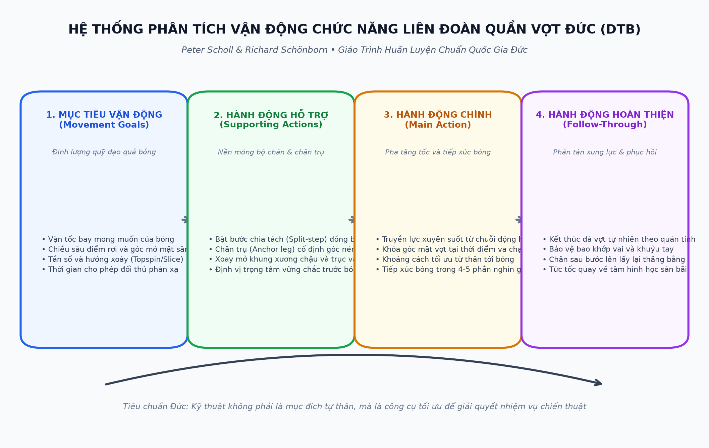
Điều quan trọng cần biết là sự phát triển trong kỹ thuật quần vợt đang diễn ra hàng ngày. Ngoài ra, trong những năm gần đây, các huấn luyện viên và chuyên gia quần vợt ngày càng nhận ra rằng cá tính và phong cách cá nhân là những yếu tố quan trọng cần cân nhắc trong quá trình hướng dẫn quần vợt. Vì vậy, mặc dù văn bản đi kèm với hình minh họa mô tả cách thực hiện các động tác, nhưng vẫn có nhiều chỗ để thay đổi. Ngoài ra, các kỳ thủ vô địch thế giới còn chứng tỏ phong cách cá nhân được hình thành như thế nào dựa trên việc nắm vững các kỹ thuật cơ bản. Cho phép phạm vi giảng dạy này như một sự đáp ứng với những yêu cầu cá nhân của người học-— điều này làm cho việc giảng dạy trở nên thú vị nhưng cũng khó khăn. Nó một lần nữa chứng minh rõ ràng tại sao một nền tảng vững chắc lại quan trọng đến vậy, đó là điều chúng tôi đã cố gắng đưa ra trong cuốn sách này.
Vì lý do đơn giản và rõ ràng, tất cả các mô tả về chuyển động, bao gồm hướng và
~ hai bên của cơ thể, được đưa ra từ quan điểm của tay vợt thuận tay phải. Những người thuận tay trái sẽ phải chuyển đổi tư thế cho phù hợp.
Chiến thuật, bao gồm hai phần chính. Phần đầu tiên trình bày các lý thuyết cơ bản về chuyển động và các kỹ thuật cơ bản. Phần thứ hai đề cập đến các kỹ thuật được sử dụng thành công trong các tình huống khác nhau khi người học chơi ở các vị trí khác nhau và với các mục đích khác nhau. Mặc dù chúng tôi đã cố gắng trình bày càng nhiều thông tin càng tốt về lý thuyết và thực hành, chúng tôi cũng nhận ra rằng còn rất nhiều điều có thể diễn giải và thảo luận. Chúng tôi hy vọng rằng tập sách này sẽ được đón nhận một cách nhiệt tình, sẽ là sự trợ giúp có giá trị cho nhiều người và sẽ kích thích những cuộc thảo luận sâu hơn về sau.
Hartmus Gabler Jock Reetz
Những quan sát về lý thuyết chuyển động làm nền tảng cho chiến thuật và kỹ thuật trong quần vợt phải dựa trên sự hiểu biết rõ ràng về trò chơi. Các đặc điểm có thể quan sát được của trò chơi chỉ có ý nghĩa khi hiểu được điều đó.
Ý tưởng cơ bản của quần vợt bao gồm việc sử dụng vợt để đánh bóng ra khỏi sân của bạn và qua lưới vào sân của đối thủ.
Trong quần vợt thi đấu, các mục tiêu của tay vợt bao gồm:
® khiến đối thủ thực hiện nhằm giành chiến thắng trong trò chơi, hiệp đấu và trận đấu. Các quy tắc quy định việc ghi điểm khi đối thủ không chạm được bóng vào sân của họ hoặc khi họ đánh bóng vào lưới hoặc ngoài biên. Những điểm mong muốn cũng có thể được ghi ngay từ cú đánh đầu tiên. Tuy nhiên, thông thường, cần phải trao đổi nhiều để ghi được một điểm.
Trong môn quần vợt không mang tính cạnh tranh, tay vợt có thể hoạt động trong khuôn khổ chung của trò chơi nhưng chơi theo cách mà họ tránh mắc sai lầm và giữ cho trận đấu kéo dài càng lâu càng tốt. Do đó, quá trình tập hợp quan trọng hơn kết quả.
Trong quần vợt thi đấu, tay vợt có nhiều lựa chọn để giải quyết các mục tiêu chiến thuật của mình. Để ghi điểm, họ có thể đánh bóng
@ đối thủ không tiếp cận kịp thời và bỏ cuộc;
@ buộc đối phương phải chạy mạnh hoặc bị đặt vào vị trí rất khó đánh bóng, từ đó tạo ra tình huống ghi điểm hoặc buộc đối phương phạm lỗi;
® tay vợt tránh bị bỏ điểm.
Trong quá trình thi đấu, tay vợt cũng sẽ phải đương đầu với vô số vị trí tại
~ đường cuối sân, ở giữa sân và trên lưới.
Quả bóng bay và nảy lên
Để sử dụng tài nguyên của mình trong nhiều trường hợp khác nhau, tay vợt phải xem xét hành vi của quả bóng khi nó bay trong không khí và khi nó nảy trên bề mặt sân. Quỹ đạo của quả bóng được xác định bởi các yếu tố sau:
© hướng bay của bóng (từ dọc biên đến ngang sân);
@ độ cao đường bay của quả bóng
@ vận tốc của quả bóng (từ chậm
® chuyển động quay của bóng (xoáy lên, xoáy xuống hoặc xoáy ngang (Sidespin)).
Cách một quả bóng nảy lên phụ thuộc vào
@ góc mà nó nảy lên.
Để đạt được quỹ đạo tương ứng với mục tiêu chiến thuật, vợt phải được vung theo một cách cụ thể đến điểm tiếp xúc bóng (Point of Contact) với bóng. Cụ thể, điều này liên quan đến những cân nhắc sau:
© tốc độ của đầu vợt khi nó tiếp xúc với bóng—đây là yếu tố quyết định chính của vận tốc ra ngoài@ hướng của cú đánh có liên quan đến các mục tiêu liên quan đến không gian (chẳng hạn như chéo bàn hoặc dọc biên) và chuyển động của cú đánh liên quan đến độ xoáy mong muốn
@ hướng của mặt vợt khi nó tiếp xúc với bóng, vì điều này ảnh hưởng đến độ cao và vị trí của cú đánh.
Một quả bóng bị đối thủ đánh có thể tiếp đất ở vô số điểm trên sân giữa đường biên cuối sân và lưới. Điều này có nghĩa là tay vợt phải thoát ra khỏi
© với khả năng di chuyển® tiết kiệm với độ chính xác phù hợp để tiếp cận bóng nhanh chóng và trở lại vị trí sẵn sàng mới nhanh nhất có thể. Chuyển động tới bóng và trở lại vị trí sẵn sàng mới này được gọi là động tác bằng chân.
Động tác bằng chân hoàn hảo chủ yếu đòi hỏi phải dự đoán được hướng và tốc độ chung của quả bóng sắp tới. Nó đòi hỏi nhận thức chính xác và bước chân tinh chỉnh để tiếp xúc (phối hợp tay-mắt) để đánh bóng ở khoảng cách phù hợp với cơ thể và chính xác vào điểm ngọt của vợt. Động tác chân tối ưu cũng đòi hỏi tốc độ và sự phối hợp tuyệt vời ở chân.
Sự chính xác và hiệu quả trong động tác bằng chân là yêu cầu chung.
Việc đưa ra quyết định nhanh chóng cộng với khởi đầu nhanh và sớm là rất quan trọng trong các tình huống có áp lực lớn về thời gian (chẳng hạn như một quả trả bóng và đánh vào lưới) cũng như với tất cả các đường bóng nhanh, sắp tới. Tất cả những điều này làm cho động tác bằng chân trở thành một yếu tố quan trọng và hạn chế thành tích trong quần vợt.
Một khi tay vợt đã đảm nhận vị trí cú đánh tối ưu một cách chính xác và kịp thời, việc hoàn thành mục tiêu chiến thuật như được mô tả trước đây phụ thuộc vào việc truyền tốc độ và hướng chính xác cho đầu vợt.
Tay vợt phải sử dụng các kỹ thuật đánh nhất định để đạt được hiệu quả phù hợp với vợt.
Bản thân kỹ thuật không phải là mục tiêu.
Tuy nhiên, nếu được áp dụng một cách có ý nghĩa, nó sẽ tạo điều kiện thuận lợi nhất cho tất cả các nước đi có thể có đối với các chiến thuật mà bất kỳ tình huống chơi nào yêu cầu. Kỹ thuật cũng không phải là một số lượng cố định. Thay vào đó, ứng dụng của nó phải thay đổi tùy theo bối cảnh của một trò chơi liên tục thay đổi; kỹ thuật phải được điều chỉnh cho phù hợp.
Kỹ thuật đánh bóng chủ yếu bao gồm việc tiếp xúc bóng một cách chính xác và cố tình đánh bóng vào phần sân đối phương.
Ngoài ra, cấu trúc của kỹ thuật này rõ ràng phụ thuộc vào hoàn cảnh cá nhân của tay vợt vào toàn bộ các điều kiện bên ngoài.
Hoàn cảnh cá nhân của tay vợt bao gồm những điều sau đây:
® hình dáng vật lý, đặc biệt là kích thước,
@ khả năng như phối hợp,
© các yếu tố tâm lý như động lực và trí thông minh.
Các điều kiện bên ngoài sau đây
® hành vi của một chiếc xe đang tới
® bản chất và thành phần của
® đặc điểm của vợt
© thời tiết (ví dụ:
@ hành động của (các) đối thủ hoặc (các) đối tác.
Trong thực tế, một loạt các mẫu cụ thể đã được phát triển trong khuôn khổ các kỹ thuật chuyển động. Chúng được gọi là kỹ thuật cú đánh. Chơi thành công đến từ việc nắm vững các kỹ thuật này và áp dụng chúng vào nhiều tình huống khác nhau.
Huấn luyện viên phải đặc biệt am hiểu về kỹ thuật đánh và có khả năng đánh giá chúng. Các huấn luyện viên có khả năng truyền đạt những cú đánh này cho những tay vợt đầy tham vọng và sửa chữa bất kỳ lỗi nào có thể xảy ra trong kỹ thuật của học sinh.
Tại thời điểm này, chúng ta sẽ chuyển sang xem xét lý thuyết đằng sau kỹ thuật động tác bằng chân và cú đánh. Sau khi xem xét hành vi của quả bóng khi nó bay và khi nó nảy lên, chúng ta sẽ giải quyết các chiến thuật và kỹ thuật đánh cơ bản.
Chương 2: Khoa Học Bộ Chân & Chân Trụ Trọng Lực (Anchor Leg)
Chapter 2: Footwork in Tennis: Ready Stance, Split Step, and Anchor Leg Mechanics
Quần vợt là một môn thể thao trong đó động tác bằng chân có tầm quan trọng hàng đầu. Không có cú đánh nào, kể cả cú giao bóng, thoát khỏi ảnh hưởng sâu sắc của động tác chân để thực hiện đúng cách. Do đó, động tác bằng chân hầu như không thể tránh khỏi là một yếu tố hạn chế hiệu suất.
Trung bình, một tay vợt quần vợt lùi lại khoảng 15 feet (4 m) trong một cú vô lê. Lần chạy nước rút dài nhất là khoảng 14 thước Anh (14 m). Tay vợt có thể được yêu cầu chạy trong bất kỳ
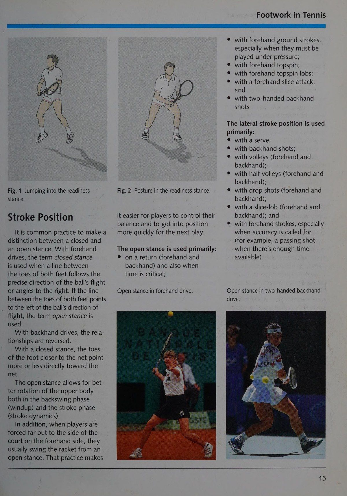
® nằm ngang (song song với lưới)
© về phía trước (thẳng hoặc ở góc lớn hơn hoặc nhỏ hơn về phía lưới)
® lùi (ra khỏi lưới)
Điều này liên quan đến việc chạy theo đường cong cũng như đường thẳng. Một ví dụ là khi tay vợt cố gắng đoán trước hướng và điểm tiếp xúc bóng (Point of Contact) thích hợp của quả giao bóng rồi quay trở lại vị trí để bao quát sân một cách hiệu quả.
Các tình huống phát sinh khi tay vợt có thể thực hiện cú đánh từ một tư thế vững chắc và trạng thái giữ thăng bằng tốt. Tuy nhiên, nhiều khi việc đánh bóng từ một pha chạy hết tốc lực, trong một cú nhảy, từ sai chân hoặc thậm chí khi đang ngả người ra sau là điều nên làm hoặc cần thiết.
Động tác bằng chân tốt sẽ giúp ích trong việc lấy lại thăng bằng trong những tình huống như vậy. Tay vợt được thăng bằng khi trọng tâm của họ được đặt trên sự hỗ trợ của cả hai chân. Hai bàn chân cách nhau ít nhất bằng chiều rộng của vai, phần thân trên khá thẳng và đầu thẳng.
lập trường.
thực hiện cú sút.
@ chạy để tiếp xúc với bóng một cách kịp thời, phù hợp và tiết kiệm nhất
® đảm bảo một thế đứng cân bằng và hiệu quả ở khoảng cách phù hợp với điểm tiếp xúc bóng (Point of Contact) thuận lợi nhất
@ dẫn dắt và hỗ trợ
@ chạy trở lại vị trí thuận lợi trên sân (nói cách khác, bao quát sân một cách hiệu quả).
Sự phối hợp của động tác chân với việc chuẩn bị và thực hiện các kỹ thuật đánh là điều hết sức quan trọng trong quần vợt. Trong khi chạy, tay vợt phải bắt đầu chuẩn bị cho cú đánh bằng cách vặn thân trên và thu vợt lại để câu giờ trước khi đánh bóng. Việc dẫn dắt cú swing về cơ bản bắt đầu bằng chân.
Sự phối hợp của các động tác riêng lẻ bắt đầu ở mức thấp và di chuyển lên trên. Điều này giải thích tại sao vị trí bàn chân ổn định và phù hợp với cú vung là điều kiện tiên quyết để đạt được các mục tiêu chiến thuật.
Các phần sau đây mô tả những cách tốt nhất để đạt được kết quả mong muốn thông qua động tác bằng chân. Tuy nhiên, động tác bằng chân phải linh hoạt phù hợp với đặc điểm cá nhân cũng như các tình huống và nhiệm vụ áp dụng.
Thuật ngữ thế đứng bắt đầu chỉ đề cập đến thời gian trước khi bóng vào cuộc, cũng như khi giao bóng và trả giao bóng. Đối với một quả giao bóng, bàn chân ở tư thế bắt đầu ở vị trí vững chắc phía sau đường cuối sân. Nhiều tay vợt dịch chuyển trọng lượng cơ thể qua lại một chút để chuẩn bị tốt hơn cho cú giao bóng. Khoảng cách giữa bàn chân và tư thế sải bước rõ ràng hơn hoặc ít hơn có thể khác nhau tùy theo từng cá nhân (xem ảnh bên dưới).
Khi quay trở lại, bàn chân thường chuyển động. Điều này giúp tay vợt luôn thoải mái và sẵn sàng di chuyển trong giai đoạn tập trung này để chuyển sang tư thế sẵn sàng (Ready Stance). Tay vợt có thể nảy tới lui hoặc nhảy lung tung tại chỗ bằng cả hai chân. Tay vợt cũng có thể chuyển trọng lượng cơ thể khá nhịp nhàng từ chân này sang chân kia. Bàn chân có thể song song với nhau hoặc ở tư thế sải bước.
Vị trí sẵn sàng/ Bước phân chia
Vị trí sẵn sàng được sử dụng khi bóng trong cuộc. Tay vợt thực hiện tư thế này ngay khi đối phương đánh bóng.
Tay vợt bật lên ở tư thế dang chân vừa phải (vị trí sẵn sàng hoặc bước chia tách (Split-Step), như trong hình 1).
Hai bàn chân rộng hơn chiều rộng của vai, trọng lượng cơ thể được phân bổ lên phần ức của bàn chân và mắt cá chân, đầu gối và hông hơi uốn cong (hình 2). Vị trí này cho phép tay vợt có khởi đầu tốt hoặc tiếp tục chạy theo bất kỳ hướng nào.
Chân phải luôn sẵn sàng để chạy và chuyển động trước khi vào tư thế sẵn sàng (Ready Stance). Khi quay lại, tay vợt thường bước một hoặc vài bước về phía trước để sử dụng chuyển động này để vào tư thế sẵn sàng (Ready Stance).
Vị trí bắt đầu trong một cú giao bóng khác nhau giữa từng tay vợt.
Hình 1 Nhảy vào tư thế sẵn sàng (Ready Stance).
Thông thường, người ta thường phân biệt giữa thế đứng đóng và thế đứng mở. Với các cú công bóng thuận tay, thuật ngữ tư thế đóng được sử dụng khi đường thẳng giữa các ngón chân của cả hai bàn chân tuân theo hướng chính xác của đường bay của bóng hoặc các góc sang phải. Nếu đường giữa các ngón chân của cả hai bàn chân hướng về bên trái hướng bay của bóng thì thuật ngữ thế đứng mở sẽ được sử dụng.
Với những cú công bóng trái tay, mối quan hệ bị đảo ngược.
Với tư thế khép kín, các ngón chân của bàn chân gần lưới sẽ ít nhiều hướng trực tiếp về phía lưới.
Tư thế mở cho phép xoay phần thân trên tốt hơn cả trong giai đoạn backswing (lên dây cót) và giai đoạn cú đánh (động lực hành trình).
Ngoài ra, khi tay vợt bị buộc phải ra xa sân ở phía thuận tay, họ thường vung vợt từ tư thế mở. Việc thực hành đó làm cho
Hình 2 Tư thế trong tư thế sẵn sàng (Ready Stance).
tay vợt sẽ dễ dàng kiểm soát thăng bằng hơn vào vị trí nhanh hơn cho lần chơi tiếp theo.
Thế mở được sử dụng chủ yếu:
® onareturn (thuận tay và
Thế đứng mở trong cú công bóng thuận tay.
@ với các cú đánh nền thuận tay, đặc biệt khi chúng phải
@ với cú lốp bóng xoáy lên thuận tay;
@ với một đòn tấn công cắt thuận tay:
@ với trái tay bằng hai tay
Vị trí hành trình bên được sử dụng
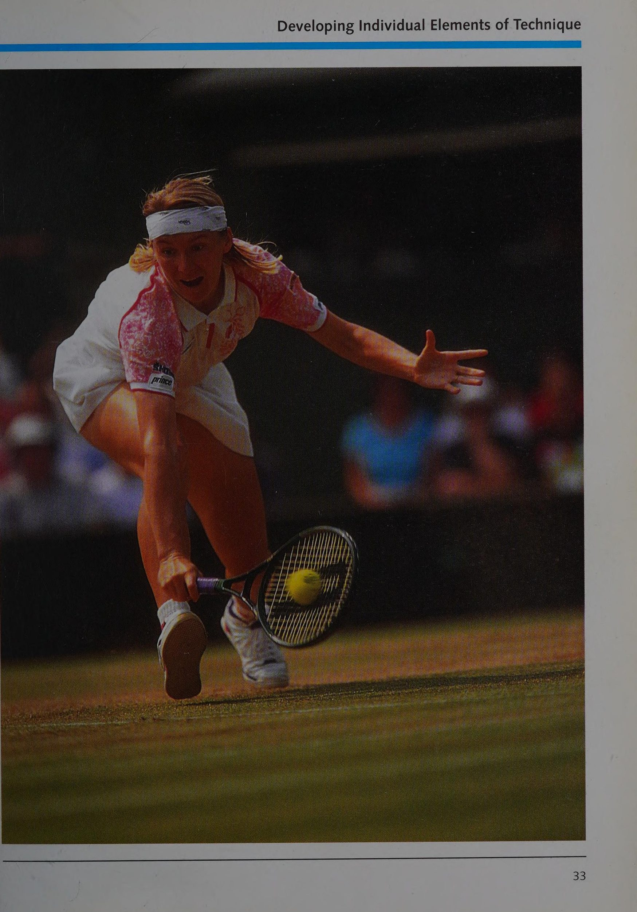
@ với những cú vô lê (thuận tay và
@ với một nửa cú vô lê (thuận tay và
@ với những cú đánh rơi (thuận tay và
@ với một cú lốp bóng cắt ngang (thuận tay và
@ với các cú thuận tay (Forehand), đặc biệt khi cần độ chính xác (ví dụ: một cú sút khi có đủ thời gian)
Thế đứng mở trong cú trái tay (Backhand) bằng hai tay.
Lý thuyết cơ bản về chuyển động SS ae a a a aa
Chân đỡ (Chân trụ trọng lực (Anchor Leg)/ Chân nhảy)
Chân chịu trọng lượng của cơ thể khi vợt được đưa về phía sau để chuẩn bị cho cú vung được gọi là chân đỡ. Trong trường hợp tay vợt thuận tay phải,
® chân trái trong một cú giao bóng:
© chân phải trong cú thuận tay
® thường là chân phải trong các cú công bóng thuận tay (tuy nhiên, khi có áp lực, tay vợt có thể bật chân trái để bắt bóng nhanh);
© chân trái trong cú trái tay
© thường là chân phải trong các cú trái tay (Backhand) từ vị trí nghiêng (với các ngón chân hướng ít nhiều về phía trước); và
@ chân trái trong các cú trái tay (Backhand) từ vị trí cú đánh mở.
Để vào vị trí đánh bóng, tay vợt đặt chân trụ trọng lực (Anchor Leg) một khoảng mong muốn phía sau điểm tiếp xúc bóng (Point of Contact) dự kiến với bóng, thường là gót chân trước (trừ trường hợp giao bóng hoặc đập bóng). Trên sân đất, tay vợt thường trượt bằng chân trụ trọng lực (Anchor Leg) vào vị trí mong muốn (xem ảnh bên dưới). Trong trường hợp đó, bàn chân được đặt trên toàn bộ lòng bàn chân hoặc trên phần bi của bàn chân. Nếu tay vợt đang sử dụng cú thuận tay (Forehand) ở tư thế khép kín, chân còn lại sẽ được di chuyển về phía trước về phía điểm tiếp xúc bóng (Point of Contact) trong khi đánh để hỗ trợ trọng lượng cơ thể và lấy lại thăng bằng. Ở đây cũng vậy, bàn chân đặt gót chân trước. Với cú trái tay (Backhand) từ tư thế nằm ngang, ban đầu chân trái sẽ đỡ trọng lượng cơ thể. Tuy nhiên, trước khi bắn, trọng lượng cơ thể chuyển sang chân phải (chân mỏ neo). Sự cân bằng được duy trì bằng cách kéo dài chân trụ trọng lực (Anchor Leg) trong khi bắn.
Chân trụ trọng lực (Anchor Leg) được gọi là chân nhảy khi tay vợt nhảy ra khỏi nó để thực hiện cú đánh. Điều này có thể xảy ra khi thực hiện cú đập bóng từ một cú nhảy và khi tay vợt phải nhảy để tiếp cận bóng ở vị trí thuận lợi về chiều cao và khoảng cách (như trong hình vô lê ở trên cùng bên phải).
Tay vợt cũng nhảy khỏi chân trụ trọng lực (Anchor Leg) của mình trong các tình huống chặt chẽ (ví dụ: bắn ngược) và khi xử lý các cú đánh tấn công nhanh. Trong những trường hợp như vậy, chúng cũng tiếp đất bằng chân nhảy của mình.
Thuật ngữ chân hỗ trợ được sử dụng khi tay vợt sử dụng một bước riêng biệt để kiểm tra chuyển động ngang của họ và chuyển chuyển động thành hướng thẳng đứng ít nhiều bằng cách đẩy chân đó ra. Ví dụ xảy ra trong một cú nhảy đập bóng và một cú đánh xoáy lên thuận tay.
Trượt ở vị trí hành trình.
Một cú nhảy khiến cho việc đánh bóng trở thành một cú vô lê có thể thực hiện được.
Chạy từ vị trí sẵn sàng đến các vị trí khác nhau trên sân
Ngoại trừ những pha chạy khá dài song song với đường biên cuối sân, phần thân trên phải hướng về phía lưới.
Chuyển động sang một bên bắt đầu bằng cách bước sang một bên với chân gần điểm tiếp xúc bóng (Point of Contact) với bóng hơn.
Với khoảng cách rất ngắn khoảng 3 feet (1 m), bước này là tất cả những gì tay vợt cần làm để vào vị trí đánh. Bàn chân và phần trên cơ thể vặn về phía nơi bóng sẽ được đánh.
Vì vậy, gọi đây là một bước ngoặt cũng là phù hợp. Đối với khoảng cách từ 3 đến 10 feet (1 đến 3 m), tay vợt bắt đầu bằng bước ngang và tiếp theo là bước kéo dài rồi đến bước xoắn.
Bước cuối theo sau bước bên rất nhanh. Ba bước này tạo ra nhịp điệu chạy cha-cha-cha điển hình cho quần vợt cơ bản.
Khi chạy để chạy quãng đường dài hơn trên sân, các đấu thủ bắt đầu bằng sải bước bình thường. Điều quan trọng là phải xuất phát nhanh và giảm tốc độ trước khi thực hiện tư thế đánh để tiếp xúc với bóng từ vị trí ổn định và cân bằng tốt.
Nếu có đủ thời gian, tay vợt có thể thực hiện một vài bước nhỏ trước khi đảm nhận vị trí cú đánh cuối cùng để điều chỉnh đường bay dự kiến và điểm tiếp xúc bóng (Point of Contact) với bóng.
Chạy thẳng về phía trước được thực hiện bằng sải chân bình thường. Với cú thuận tay (Forehand), chân trụ trọng lực (Anchor Leg) được đặt, thân người được xoay và bàn chân gần như song song với lưới. Đối với một cú trái tay (Backhand), lưới.
chân trụ trọng lực (Anchor Leg) được đặt sao cho bàn chân hướng về phía lưới nhiều hơn (xem ảnh trên). Cú đánh được thực hiện khi đang chạy với bước điều chỉnh hoặc từ một bước nhảy.
(thường là để gây áp lực lên đối phương), việc cất cánh và hạ cánh được thực hiện bằng chân gần lưới hơn.
Chỉ trong một số trường hợp hiếm hoi, tay vợt mới lùi lại bằng cách chạy lùi. Với một cú lốp bóng tốt, tay vợt quay lại và cố gắng chạy nhanh về phía sau điểm tiếp xúc bóng (Point of Contact) dự kiến với bóng. Trong hầu hết các trường hợp khác, cơ thể được đặt nghiêng về phía lưới. Tay vợt sử dụng các bước bên và các bước điều chỉnh hoặc sải bước chéo để lùi lại. Trong sải bước chéo, chân gần lưới bắt chéo qua chân kia để duy trì tư thế nằm ngang.
Bước dừng/Bước bắt đầu
Nếu không thể thực hiện cú đánh từ một vị trí vững chắc, cơ thể sẽ di chuyển theo hướng chuyển động ban đầu tại thời điểm bóng được đánh. Sau đó, sau khi đánh bóng, tay vợt thực hiện thêm một bước nữa theo hướng tương tự. Bước này phải hoàn thành hai mục đích: nó sẽ kiểm tra chuyển động của đấu thủ (đóng vai trò như một bước dừng) và cho phép đấu thủ đẩy ra từ chân đó (với một bước xuất phát) để che sân.
Với cú đánh từ tư thế đánh mở, bước dừng và bắt đầu này được thực hiện bằng cách thực hiện một cú nhảy nhỏ từ chân trụ trọng lực (Anchor Leg) này sang chân trụ trọng lực (Anchor Leg) khác. Với cú đánh từ vị trí nằm ngang hoặc khép kín, tay vợt phải thực hiện thêm một bước nhỏ nữa theo hướng di chuyển ban đầu. Việc khởi động nhanh từ vị trí sẵn sàng cũng được thực hiện bằng bước xuất phát theo hướng ngược lại với hướng chạy dự kiến.
Chạy đến vị trí thuận lợi trên sân sau khi đánh bóng
Sau khi đấu thủ đánh bóng, bước lao tới vị trí tiếp theo trên sân bắt đầu bằng bước xuất phát (thực chất là một bước sai hướng), tiếp theo là bước chéo (hướng về phía trước) và kết thúc bằng các bước sang bên và các bước điều chỉnh.
Các bước chạy bình thường chỉ được sử dụng để chạy quãng đường dài sau bước xuất phát.
Phần 2: Cơ Học Va Chạm & Đặc Tính Mặt Sân
Chương 3: Phân Tích Vận Động Chức Năng (Functional Movement Analysis)
Chapter 3: Functional Movement Analysis: Main Actions and Supporting Actions
Động tác chân tốt là điều kiện tiên quyết để đánh bóng đúng cách. Tay vợt phải vào vị trí tốt nhất có thể càng nhanh càng tốt so với quả bóng đang tới để đánh nó và hoàn thành mục tiêu chiến thuật của mình. Về vấn đề đó, kỹ thuật đánh bao gồm việc vung vợt theo cách phù hợp với đường bay và độ nảy của quả bóng đang tới và điều đó đề cập đến mục đích chiến thuật của tay vợt.
Về lý thuyết, kỹ thuật đánh tốt đến mức nào có thể không quan trọng lắm miễn là tay vợt thành công trong việc hoàn thành mục tiêu nêu trên. Tương tự như vậy, khi trận đấu tiến triển và những tay vợt cấp cao nhất cũng như huấn luyện viên của họ đã cố gắng đánh bóng và đặt nó với tốc độ và độ chính xác cao hơn, các đặc điểm cụ thể trong kỹ thuật đánh đã phát triển để đáp ứng với các tình huống khác nhau. Những cải tiến riêng biệt trong kỹ thuật đánh là kết quả của việc điều chỉnh các yêu cầu tình huống cụ thể và hoàn cảnh cá nhân.
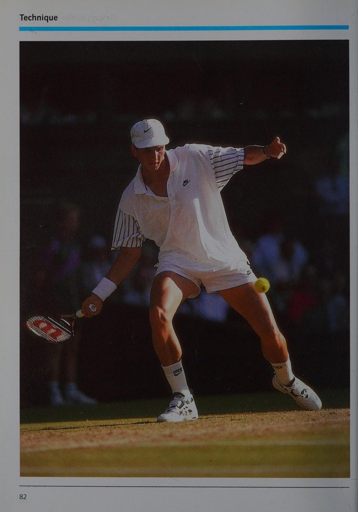
Trong hướng dẫn hiện tại, chỉ các kỹ thuật cú đánh thông thường mới được đưa vào và mô tả.
Các chuyển động cũng sẽ được phân tích để xác định, ít nhất là về mặt lý thuyết, cách tốt nhất có thể để thực hiện chúng và đề xuất lý tưởng đó làm điểm tham khảo cho người học và huấn luyện viên.
Kỹ thuật động tác bằng chân và cú đánh được phối hợp ăn ý trong cú vô lê này.
Các phương pháp tiếp cận lý thuyết đối với
Một số cách có thể được sử dụng để phân tích chuyển động. Chúng được phân biệt với nhau chủ yếu bởi nhận thức và quy trình khác nhau của nhà phân tích.
Gohner đặt ra các câu hỏi theo cách thực hiện các chuyển động, thứ tự của chúng, cách tốt nhất để thực hiện chúng và mục đích của chúng. Việc phân biệt giữa các phương pháp liên quan đến việc tiến hành theo những cách khác nhau: định tính (sử dụng đánh giá chủ quan), định lượng (với các phép đo khách quan), trong bối cảnh hạn chế hoặc dành riêng cho thể thao hoặc trên cơ sở rộng hơn.
Các phương pháp tiếp cận đặc biệt sau đây rất hữu ích trong việc kiểm tra nội dung chủ đề của hướng dẫn này:
® một phương pháp tiếp cận cơ sinh học;
© một cách tiếp cận hình thái học; và
@ một phương pháp phân tích chức năng
Cách tiếp cận này chủ yếu dựa trên ý tưởng rằng khi phấn đấu đạt được kết quả tốt nhất, một phương pháp tối đa sẽ được áp dụng để chống lại sự phản kháng.
Ngoài ra, năng lượng được sử dụng một cách tốt nhất cho các loại chuyển động cụ thể (theo Hochmuth). Điều này diễn ra dưới sự xem xét nghiêm ngặt về cơ học cũng như cấu trúc và chức năng sinh lý của cơ thể con người. Các phép đo lý thuyết có thể áp dụng phổ biến đã được xây dựng cho tất cả các loại hình thể thao theo những điều kiện này và nhu cầu tương ứng để đạt được thành tích cao nhất. Những nguyên tắc cơ sinh học này cho phép người ta đánh giá tất cả các loại chuyển động thể thao một cách định tính nhằm mang lại hiệu quả cao nhất.
Cách tiếp cận hình thái, trái ngược với cách tiếp cận cơ sinh học, bao gồm việc mô tả các đặc điểm có thể nhìn thấy bên ngoài và phân tích cách thức một chuyển động được thực hiện từ các quan điểm thời gian, không gian và động.
Nhiều chuyên gia từ nhiều loại hình thể thao lần đầu tiên được yêu cầu giải quyết câu hỏi về đặc điểm nào có thể quan sát được tạo thành chuyển động hiệu quả nhất. Những đặc điểm này đã được ghi lại (bởi Meinel). Chúng được bổ sung bởi tôi quan sát có hệ thống và phân tích lý thuyết về các mục tiêu và điều kiện liên quan đến các chuyển động tương ứng.
Các đặc điểm hình thái thu được của chuyển động giúp có thể xây dựng đánh giá định tính theo ba giai đoạn về cách thực hiện chuyển động.
Phương pháp phân tích chức năng
Trong cách tiếp cận phân tích chức năng của mình, Gohner khẳng định rằng việc mô tả chính xác cách thức thực hiện một chuyển động không hữu ích lắm trong phân tích chuyển động. Điều quan trọng hơn nhiều là phải biết các thành phần riêng lẻ của phong trào hữu ích như thế nào và chúng giúp hoàn thành mục tiêu của phong trào như thế nào. Do đó, điều này liên quan đến chức năng của các chuyển động cá nhân. Chức năng này là sản phẩm của mục đích chuyển động và các điều kiện xung quanh. Các điều kiện khuyến khích hoặc cản trở việc đạt được mục tiêu bao gồm thiết bị, môi trường, nội quy và bản thân vận động viên.
Cách tiếp cận phân tích chức năng sẽ được giải thích thêm ở các trang sau vì nó tạo thành cơ sở cho việc hình thành các kỹ thuật trong hướng dẫn này. Đó là một cách tiếp cận hợp lý để làm như vậy vì trong quần vợt, kỹ thuật không phải là một hằng số. Như đã chỉ ra ở phần đầu, kỹ thuật thích ứng với những điều kiện bên ngoài có thể thay đổi và tùy theo việc thiết lập mục tiêu chiến thuật. Ngay cả những tay vợt cấp cao nhất cũng thể hiện các kỹ thuật khác nhau trong các tình huống giống nhau. Khá thường xuyên những kỹ thuật này có vẻ hoàn toàn khác nhau. Một phân tích chính xác cho thấy rõ ràng rằng một số phần của một phong trào là phổ quát và những phần khác về cơ bản là khác nhau. Do đó, khi một kỹ thuật hoàn thành chức năng của nó, một số yếu tố rõ ràng là không thể thiếu trong khi những yếu tố khác có thể thay đổi trong những giới hạn nhất định. Các câu hỏi đặt ra là những yếu tố này trông như thế nào, chúng có thể thay đổi ở mức độ nào và chúng được xác định bởi những điều kiện nào. Câu trả lời đến từ phương pháp phân tích chức năng, được sử dụng trong các hướng dẫn hiện có để mô tả và phân tích kỹ thuật. Dựa trên mục đích và điều kiện sử dụng chúng, các hành động riêng lẻ cấu thành nên các kỹ thuật khác nhau sẽ được đánh giá khác nhau, dưới dạng mô hình xác định hoặc dưới dạng mô hình có thể được điều chỉnh trong các tham số xác định.
Để làm nền tảng cho những hành động cụ thể này, hướng dẫn này sẽ bao gồm sự kết hợp giữa các phương pháp tiếp cận cơ sinh học và hình thái cộng với hành vi bình thường của quả bóng khi nó bay trong không khí và bật ra khỏi bề mặt sân.
Các nguyên tắc cơ sinh học, đặc điểm hình thái của chuyển động và các tính chất cơ lý có thể được sử dụng để đánh giá các hoạt động khác nhau trong các giai đoạn cấu trúc mới được xác định bao gồm các kỹ thuật khác nhau.
xác định cách tiếp cận phân tích chức năng một cách chi tiết hơn. Sau đó, văn bản này sẽ lần lượt trình bày một số đặc điểm hình thái của chuyển động, một số nguyên lý cơ sinh học và tính chất vật lý của quả bóng tennis khi bay và khi chúng nảy lên. Thông tin này sẽ kết thúc bằng phần giải thích về các kỹ thuật quan trọng nhất.
của Phân tích chuyển động chức năng
Trong các phần sau, phương pháp phân tích chức năng được gọi là phân tích chức năng của chuyển động. Sự hiểu biết thực tế về chuyển động là điều cần thiết cho phân tích này. Ở nơi khác
© các phong trào trong quần vợt phải có nghĩa là hoàn thành nhiệm vụ; chúng phải được thực hiện phù hợp với mục tiêu và không có khuôn khổ cụ thể;
® các mục tiêu và điều kiện không được coi là cố định mà có thể thay đổi; và
© những hành động có thể quan sát được của một vận động viên quần vợt thường được quyết định bởi các mục tiêu cần đạt được và bởi các điều kiện hiện hành.
Một ví dụ sẽ làm rõ điều này.
Khi giao bóng, nhiệm vụ chính là đưa bóng vào cuộc. Trong trường hợp này, một giải pháp khả thi là đánh bóng từ bên dưới hoặc từ bên trên với tốc độ tối thiểu và không xoáy nhiều. Mặt khác, nếu mục đích của quả giao bóng là gây áp lực lên đối phương bằng cách đánh bóng nhanh và mạnh thì bóng phải được đánh theo cách nó bay theo quỹ đạo parabol. Tất cả những điều này bị ảnh hưởng bởi các điều kiện cụ thể như kích thước và tầm với của tay vợt, chiều cao của lưới và kích thước của sân giao bóng. Việc có được tất cả thông tin này cho phép người ta suy ra hành động nào của tay vợt là cần thiết hoặc ít nhất là khá quan trọng để đạt được mục tiêu đó.
Ý tưởng chính của phân tích chuyển động chức năng liên quan đến việc xác định chuyển động nào phù hợp với các mục tiêu khác nhau và các điều kiện hiện có. Cũng cần phải xác định chức năng hành động của tay vợt đối với các mục tiêu và điều kiện đang được phân tích.
Rõ ràng, một mặt, một số hành động được thiết lập vững chắc trên cơ sở cơ sinh học đến mức chúng có thể được coi là không thể thiếu trên thực tế. Mặt khác, một số hành động cho phép một số biến thể.
Trong trường hợp đầu tiên, nói hành động là đúng hay sai là phù hợp. Tuy nhiên, trong phần thứ hai, các loại như hiệu quả, kém hiệu quả và không hiệu quả được sử dụng.
Khi sử dụng phương pháp này, trước tiên người ta có thể tìm hiểu về các mục tiêu và sau đó xem xét các điều kiện vật chất và cá nhân.
Sau đó, có thể xác định hành động nào của tay vợt là cần thiết và hiệu quả, tính đến mọi điều kiện và xác định hành động bổ trợ (Supporting Action) nào là thực sự cần thiết. Một ví dụ nữa sẽ làm rõ điều này.
Nếu một tay vợt có ý định đánh một quả bóng ở tốc độ cao tính từ đường biên cuối sân để nó nảy ngay trước đường biên cuối sân của đối phương (do đó, một cú sút xa), mục tiêu mong muốn có thể đạt được bằng cách
© tay vợt phải tăng tốc đầu vợt lên tới điểm tiếp xúc bóng (Point of Contact) để truyền tốc độ cao tới
® để bóng không đi quá xa và rơi ra ngoài biên, tay vợt nên đánh nó bằng topspin; điều này sẽ giúp nó có độ dài phù hợp, khiến nó rơi khi bay và chạm vào phía trước vạch cuối sân của đối phương; Việc xoay vợt về phía trước này được thực hiện bằng cách vung vợt sao cho vợt đánh bóng ở vị trí gần như thẳng đứng và hơi chếch về phía trước một chút.
© bóng phải được đặt ở khoảng cách phù hợp về phía trước và bên cạnh cơ thể để đạt được hai mục tiêu nữa:
độ chính xác và an toàn.
Hành động này—đánh bóng ở tốc độ cao bằng cách sử dụng chuyển động nhẹ về phía trước và hướng lên trên với vợt ở vị trí gần như thẳng đứng—được chỉ định là hành động chính (Main Action). Hành động chính này là hoàn toàn cần thiết để giải quyết các điều kiện ảnh hưởng đến mục tiêu. Hình 3 cho thấy các giai đoạn của một cú thuận tay (Forehand). Giai đoạn cú đánh bắt đầu trước điểm rẽ của đường cong và kết thúc khi tiếp xúc với bóng. Động tác chính bắt đầu trong giai đoạn đánh dọc theo phần dưới của vòng và cũng kết thúc khi tiếp xúc với bóng. Cấu trúc chuyển động của vợt trong động tác chính được xác định chính xác cho bất kỳ loại kỹ thuật đánh nào. Tốc độ và hướng của vợt được xác định bởi yêu cầu nhất thời của trò chơi.
Khái niệm về Phân tích Chức năng của Chuyển động a, các hành động phụ mà tay vợt có thể sử dụng để hỗ trợ mục tiêu truyền độ xoáy về phía trước cho quả bóng
Hình 3 Sơ đồ biểu diễn vòng lặp được mô tả bằng một cú đánh nền.
Một số hành động phụ cũng có tác dụng hỗ trợ hành động chính (Main Action), nhưng nhìn chung chúng ít được quy định chặt chẽ hơn:
© khả năng tăng tốc của vợt được thực hiện tốt nhất bằng cách sử dụng chất lỏng, chuyển tiếp sang giai đoạn đánh; Tuy nhiên, hình thức chuyển đổi này không được cố định chắc chắn,
_ vì có thể đạt được gia tốc mong muốn mà không cần
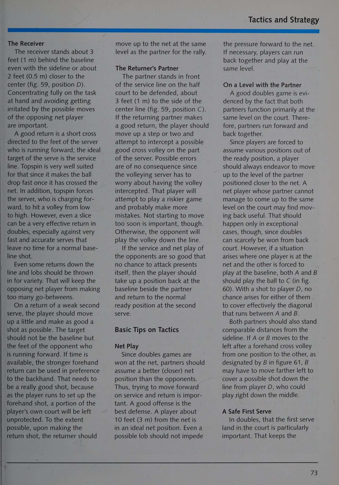
® di chuyển chân trước theo hướng cú đánh cho phép tay vợt dồn trọng lượng cơ thể lên chân trước trong giai đoạn cú đánh; với cú đánh tiếp đất thuận tay, cơ thể được sử dụng để hỗ trợ cho cú xoay vợt và giúp định hướng cú đánh; có rất nhiều khả năng trong việc đặt
- chân dẫn đầu và trong việc xác định khoảng cách giữa các bàn chân; những chi tiết đó phụ thuộc vào độ ổn định cần thiết vào các hành động sẽ diễn ra sau hành trình (đặc biệt là chạy); để truyền tốc độ mong muốn cho quả bóng, sẽ rất hữu ích khi tiếp xúc ở khoảng cách phù hợp phía trước và bên cạnh cơ thể; trong trường hợp cú thuận tay (Forehand), lực cản tác động cao và bóng bật lại với lực lớn; một số tay vợt sử dụng các biến thể của cách cầm thuận tay có vẻ giao bóng tốt cho mục đích: tiếp tục vung cú đánh từ giai đoạn cú đánh sang giai đoạn theo sau giúp kiểm soát tại điểm tiếp xúc bóng (Point of Contact) và cải thiện độ mượt mà
~ và tính kinh tế của phong trào.
Các điểm sau đây mô tả một số động tác uốn cong đầu gối quan trọng nhất trong giai đoạn tiếp theo để giúp vung vợt về phía trước và hướng lên trên dễ dàng hơn đồng thời hạ thấp đầu vợt khi bắt đầu giai đoạn đánh để sau đó vợt có thể vung lên và về phía trước để gặp bóng và tạo ra sự duỗi thẳng chân trong giai đoạn đánh để hỗ trợ việc sử dụng cách cầm vợt thuận tay hoặc trái tay (trong trường hợp cú đánh nền thuận tay hoặc trái tay) sao cho mặt vợt thẳng đứng ở phía trên ngay lập tức nó đánh bóng ở điểm tốt nhất vì không phải tất cả các hành động bổ trợ (Supporting Action) này đều thực sự cần thiết; cũng không phải lúc nào cũng hữu ích khi quy định những điều như chính xác trọng tâm phải thấp đến mức nào, hạ đầu vợt xuống bao xa và tầm xa bao xa trong một cú thuận tay (Forehand).
Các biến thể, lỗi và sai sót có thể xảy ra
Trên cơ sở những giải thích này và bằng cách sử dụng phân tích và điều chỉnh chuyển động, có thể đưa ra câu trả lời sơ bộ cho câu hỏi điều gì có thể được coi là đúng và sai trong các chuyển động được điều chỉnh để giải quyết các mục tiêu chiến thuật. Mục đích cần thiết của hành động chính (Main Action) được thiết lập rõ ràng. Bất kỳ sai lệch nào so với phong trào đã được thiết lập đó đều cấu thành một khiếm khuyết. Trong lĩnh vực các động tác hỗ trợ – đặc biệt là trong các giai đoạn vung sau và tiếp theo và ở mức độ thấp hơn trong giai đoạn cú đánh – có rất nhiều chỗ cho sự thay đổi. Mỗi hành động đều có những ưu điểm và nhược điểm đi kèm.
Khá khó để xác định ranh giới giữa các biến thể này.
Trong mọi trường hợp, một hành động phụ sẽ bị lỗi nếu nó không hỗ trợ hiệu quả cho hành động chính (Main Action), cản trở nó hoặc gây ra bất kỳ ảnh hưởng tiêu cực nào khác trong việc hoàn thành mục tiêu mong muốn. Vì vậy, sẽ rất hữu ích khi nghĩ không chỉ về mặt sai sót mà còn về sai sót - mặc dù ranh giới giữa sai sót và sai sót không phải lúc nào cũng rõ ràng. Văn bản này coi sai sót là những hành động phụ không cung cấp sự hỗ trợ tối ưu cho hành động chính (Main Action). Một sai sót trở thành sai sót khi nhược điểm của hành động bổ trợ (Supporting Action) lớn hơn ưu điểm của nó.
Vì các động tác hỗ trợ có thể có khá nhiều biến thể, nên chúng cho phép thể hiện chuyển động của từng cá nhân một cách tốt nhất, đặc biệt là trong các giai đoạn vung vợt sau và theo sau. Những biến thể riêng lẻ này có thể được coi là tạo nên phong cách di chuyển của tay vợt; nó được thể hiện chủ yếu thông qua cấu trúc không gian và thời gian của toàn bộ chuyển động. Đặc điểm của động lực và hình thức cá nhân này bao gồm phạm vi và nhịp điệu của chuyển động.
Điều này đặc biệt áp dụng cho cú giao bóng, thường mang những đặc điểm rất riêng biệt, đặc biệt là liên quan đến độ dài của cú vung vợt sau và thời điểm tăng tốc trong hành động chính (Main Action).
Những đặc điểm di chuyển riêng lẻ này lần lượt phụ thuộc vào thể chất, sức mạnh, tốc độ, tính khí và động lực của tay vợt. Điều này giải thích tại sao những tay vợt có tầm vóc nhỏ hơn thường có xu hướng những người cao hơn hướng tới những động tác có chủ ý và chính xác hơn. Những tay vợt có tính khí nóng nảy thích những pha hành động sống động và những cú backswing khá kịch tính. Họ có xu hướng thay đổi cách cầm vợt và sử dụng nhiều kỹ thuật khác nhau.
Mặt khác, những tay vợt trò chơi phòng thủ hơn lại thích những chuyển động ổn định hơn, tiết kiệm hơn và chính xác hơn.
Trong hướng dẫn quần vợt, việc nhận biết những kiểu đặc điểm tính cách cá nhân đó trở nên thích hợp, đặc biệt vì chúng góp phần vào sự phát triển phong cách cá nhân. Nếu bạn quan sát các tay vợt đẳng cấp thế giới dưới góc độ này, một đánh giá khách quan sẽ cho thấy rằng mặc dù họ sở hữu những kỹ năng hoàn hảo nhưng họ lại hành động rất khác nhau.
Một phong cách cá nhân hóa sử dụng cánh tay gần như thẳng trong động tác vung vợt sau để thực hiện cú cắt trái tay.
cách. Điều này dẫn đến kết luận rằng các hành động chính (Main Action) của những tay vợt này gần như hoàn hảo.
(và hầu như luôn hiệu quả) và chính những hành động bổ trợ (Supporting Action) của họ đã thể hiện những nét tính cách của họ theo những cách rất riêng.
Hiệu suất trung bình của một bộ máy
Hiệu suất của một chuyển động
Hiệu suất chung cho các tình huống thông thường
Cho đến thời điểm này, các màn trình diễn đã được đóng khung khá chung chung về các biến thể, sai sót và sai sót. Văn bản vẫn chưa xem xét các điều kiện cụ thể của nhóm mục tiêu như tuổi tác, giới tính, quy mô và tài năng. Nó cũng chưa kiểm tra các điều kiện tình huống cụ thể như bề mặt sân hoặc tốc độ, quỹ đạo hoặc đặc điểm nảy của quả bóng. Việc mô tả và phát triển các kỹ thuật đánh khác nhau phải bắt đầu từ những tình huống bình thường và điều kiện tiêu chuẩn. Bằng cách này, chúng tôi muốn nói đến một tình huống tiêu chuẩn trong đó một quả bóng được đưa ra ở tốc độ trung bình và không có độ xoáy lớn và trong đó tay vợt khác có thể trả bóng từ một điểm tiếp xúc bóng (Point of Contact) lý tưởng ở phía trước và sang một bên của cơ thể. Các điều kiện tiêu chuẩn đề cập đến khả năng điều hòa và phối hợp thể chất của người học.
Nếu một người quay phim một số lượng lớn những người học khác nhau khi họ thực hiện trong một tình huống tiêu chuẩn (chẳng hạn như một cú thuận tay (Forehand)) và áp đặt các hình ảnh sao cho chúng hòa quyện vào một chuyển động duy nhất, thì kết quả sẽ là hiệu suất tiêu chuẩn hoặc trung bình của chuyển động đó. Việc thực hiện tổng hợp một chuyển động này cung cấp cả hình thức trung bình và hình thức lý tưởng so với tình huống tiêu chuẩn. Trong thực tế, có vô số tình huống và điều kiện rất riêng biệt được đưa ra. Kết quả là, các biến thể trong kỹ thuật phát sinh để đáp ứng với các tình huống và hoàn cảnh cá nhân khác nhau. Mặc dù một văn bản hướng dẫn không thể đề cập đến tất cả các biến thể có thể xảy ra nhưng hai ví dụ sau đây sẽ giúp minh họa quan điểm đó.
Các biến thể trong kỹ thuật: Đặc biệt
Giải pháp cho các tình huống đặc biệt
Ví dụ 1: Quần vợt cạnh tranh cấp cao nhất
Do yêu cầu cao của một trận đấu và khả năng phi thường của tay vợt, môn quần vợt đỉnh cao có thể dẫn đến những sai lệch đáng kể so với cách thực hiện một động tác tiêu chuẩn. Điều này có thể được minh họa ngắn gọn bằng cú vô lê xoáy thuận tay của Agassi và cú trả bóng trái tay bị chặn của Becker. Ngược lại với các khuyến nghị thường thấy trong các hướng dẫn hiện có, trong đó chỉ rõ một
Chuyển động về phía trước và xuống (lát) “cổ điển” trong một cú vô lê, Agassi thường sử dụng một cú vô lê xoáy lên thuận tay. Điều này không có nghĩa là việc giao bóng của Agassi bị coi là sai theo hướng dẫn.
Đúng hơn, người đọc phải lưu ý đến các tình huống và điều kiện mà quả bóng này được chơi. Agassi thường chơi ở vạch cuối sân. Anh ấy chỉ thỉnh thoảng tiến về phía trước khi nhận thấy rằng cú đánh cơ bản của mình có thể gây áp lực lớn cho đối thủ. Do đó, đối thủ chỉ có thể trả bóng tương đối cao và chậm mà không có nhiều sức mạnh. Vì đối thủ bắt đầu chạy tương đối muộn nên anh ta buộc phải đánh bóng ở khoảng giữa sân. Và vì anh ấy phải đánh bóng khá cao ở giữa sân,
Tiếp theo sau một cú vô lê xoáy lên thuận tay.
một cú vô lê bình thường sẽ quá chậm để có hiệu quả. Điều này giải thích tại sao Agassi chơi (như trong ảnh ở trang 23) một cú đánh mặt đất xoáy từ trên xuống với Lots_of tôi động lượng và chuyển động quay về phía trước.
Khi làm như vậy, anh ta giảm nguy cơ đánh bóng kém chính xác hơn và có thể chỉ cần áp dụng cú đánh và cách cầm bóng theo bản năng của mình vào một tình huống khác.
Đối với cú trả bóng trái tay bị chặn của Becker, kỹ thuật này ở dạng này cũng không được tìm thấy trong sách hướng dẫn. Nó khác biệt đáng kể so với hiệu suất trung bình được khuyến nghị cho cú đánh nền trái tay. Sự sai lệch so với hiệu suất trung bình của cú đánh này chủ yếu là do các điều kiện tình huống cụ thể và khả năng cá nhân của tay vợt. Becker thường thực hiện cú đánh này khi đối thủ của anh giao bóng rất nhanh trên bề mặt nhanh và khi anh muốn trả bóng càng nhanh càng tốt để từ chối cơ hội áp sát lưới của đối phương.
Đây là sự kết hợp giữa các điều kiện tình huống đặc biệt và một mục tiêu chiến thuật cụ thể. Becker thực hiện động tác này từ tư thế mở và không thực hiện động tác xoay người về phía sau hoặc vặn người nhiều. Anh ta đánh (chặn) bóng trực tiếp ở phía trước cơ thể bằng cách dùng lực mạnh cổ tay để định vị mặt vợt theo phương thẳng đứng tại điểm va chạm. Lưu ý rằng anh ta có thể thực hiện thành công cú đánh này chỉ vì anh ta có phản ứng đặc biệt tốt, khả năng phối hợp tuyệt vời và sự phát triển cơ bắp cần thiết.
Động thái nói trên đã khác xa với quần vợt “bình thường” đến mức nó có thể không bao giờ xuất hiện trong bất kỳ hướng dẫn quần vợt nào. (Xem thêm
Agassi và Becker áp dụng các bước đi cụ thể của họ theo cách tốt nhất có thể từ quan điểm cá nhân và chức năng.
Ví dụ 2: Quần vợt trẻ em có đặc điểm thể chất khác với người lớn. Ví dụ, chúng nhỏ hơn và kém mạnh mẽ hơn.
Những điều kiện này có ảnh hưởng đến cách trẻ hoàn thành các nhiệm vụ cụ thể về quần vợt. Trẻ em có thể phải thực hiện những nhiệm vụ này khác với những gì được hướng dẫn.
Vì kích thước cơ thể nhỏ hơn, trẻ em có thể phải đánh bóng ở độ cao ngang vai thường xuyên hơn người lớn; điều đó có thể liên quan đến việc thay đổi cách cầm trái tay.
sức mạnh, trẻ em có xu hướng sử dụng cả hai tay khi đánh trái tay.
Kim giây giúp họ kiểm soát và tốc độ tốt hơn.
Việc sử dụng trái tay bằng hai tay thực tế không có nhược điểm nào vì trẻ em thường rất nhanh nhẹn và học giỏi ngay cả các kỹ năng vận động song phương.
Những lời giải thích ngắn gọn này cho thấy rằng những yêu cầu đặt ra đối với trẻ em khi chơi trên một sân cỡ lớn nhất thiết phải khác với những yêu cầu của người lớn. Điều này rõ ràng liên quan đến một số khác biệt khá lớn so với các kỹ thuật đánh trung bình. Khi trẻ em chơi bằng vợt ngắn hơn trên sân thu hẹp với bóng bay chậm hơn và không nảy cao, kỹ thuật của chúng thực sự đạt đến mức trung bình thường được mô tả khi so sánh với người lớn. Đối với sự phát triển lâu dài của kỹ thuật quần vợt, người ta có thể kết luận rằng quần vợt dành cho trẻ em sẽ tốt hơn nếu nó được chơi trong những điều kiện thúc đẩy sự phát triển các kỹ thuật tương tự như những kỹ thuật mà chúng sẽ cần khi trưởng thành (ví dụ: bằng cách sử dụng bóng nhẹ hơn, vợt ngắn hơn và sân thu gọn hơn).
Cả hai ví dụ trên đều liên quan đến các giải pháp đặc biệt (và ở một mức độ nhất định mang tính cá nhân) trong các tình huống đặc biệt.
Một cuốn sách hướng dẫn được thiết kế để đặt nền tảng cho môn quần vợt không thể bao quát hết mọi tình huống có thể xảy ra một cách chi tiết.
Một phần, những biến thể kỹ thuật như vậy, đặc biệt là ở các cấp độ chơi cao nhất, có thể được coi là một phần phạm vi mà các kỹ thuật riêng lẻ có thể bao gồm.
Người lớn cũng như chiều cao ngang vai của trẻ em. ———LRLa—iii————
— c o = ) => S fas} — [e} ® © = iy} = P= fe) = Oo a o Leo) ys) pend S$
Chương 4: Cơ Sinh Học Tiếp Xúc Bóng & Cổ Tay Quần Vợt
Chapter 4: Biomechanics of Impact: Wrist Action and Striking Distance
Cấu tạo của cơ thể con người và chức năng của nó—nghĩa là sử dụng các chi theo trình tự cụ thể bằng cách kích hoạt các cơ—tạo thành điểm khởi đầu cơ sinh học cho việc vung vợt. Kết quả là đôi khi vợt chỉ gần đạt được cú vung lý tưởng hoặc chỉ theo sau nó trong một thời gian ngắn. Kỹ thuật xoay cơ sinh học phù hợp và hiệu quả nhất là kết quả của các chuyển động có ý nghĩa phù hợp với một tình huống nhất định.
bao gồm các quy luật chuyển động cơ học được áp dụng cho cơ thể con người. Chúng giao bóng để tối ưu hóa kỹ thuật liên quan đến các điều kiện cụ thể và mục tiêu của một môn thể thao cụ thể. Các nguyên tắc dành riêng cho quần vợt sau đây dựa trên nghiên cứu của Hochmuth và Wiemann trong lĩnh vực thể thao tình huống.
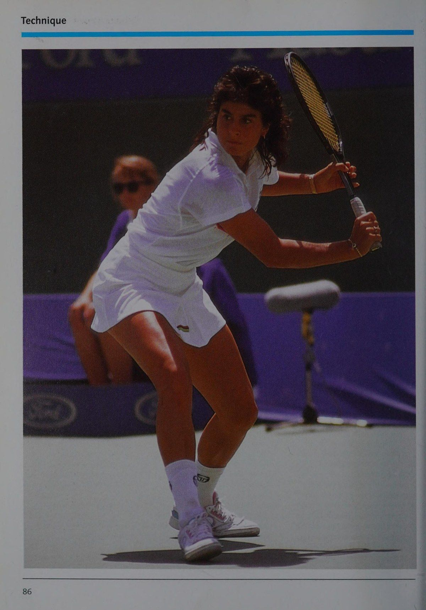
Nguyên tắc tốt nhất
Cơ hội đánh bóng
Trong bất kỳ tình huống nào, quả bóng đều có tốc độ, góc bay và độ xoáy cụ thể. Cơ hội đánh trúng phải được tối ưu hóa để đạt được vị trí chính xác trong sân thi đấu của đối phương. Nói cách khác,
@ chính xác với tâm của
@ với cổ tay được giữ theo hình e ở khoảng cách phù hợp với
@ ở phía trước cơ thể.
Quỹ đạo của quả bóng về cơ bản phụ thuộc vào độ chính xác của tốc độ và hướng của vợt cũng như độ ổn định của góc của vợt khi nó chạm bóng.
Độ chính xác cần thiết trong việc xác định điểm tiếp xúc bóng (Point of Contact) là chức năng của kỹ thuật đánh, độ bám và độ cao khi tiếp xúc với bóng.
đánh bóng chính xác vào tâm vợt. Đưa cơ thể vào đúng vị trí đối với quả bóng (lệch sang một bên) và sử dụng sự phối hợp tay-mắt cẩn thận để có thể thực hiện được độ chính xác này.
Nguyên tắc về tốc độ tối ưu, cần phải sử dụng đường tăng tốc càng dài càng tốt kết hợp với sức mạnh cơ bắp và khả năng phối hợp sẵn có. Đường tăng tốc phải đi theo đường thẳng hoặc hơi cong. Chuyển động tăng tốc phải linh hoạt và gần như hoàn hảo về mức độ và nhịp điệu. Việc tăng độ chính xác của cú đánh cũng quan trọng như việc đạt được tốc độ cao trong cú đánh. Đường tăng tốc thẳng hoặc hơi cong hướng về phía khung thành nhất thiết phải tạo ra độ chính xác cao hơn khi đánh bóng.
Nguyên lý căng cơ tối ưu
Để đạt được vận tốc cuối cao trong một cú vung, các cơ được sử dụng phải được căng một cách hiệu quả nhất có thể trong chuyển động vung sau. Việc căng được thực hiện bằng cách kích thích các cơ bị căng từ dưới lên trên và từ trong ra ngoài.
Bảo tồn chỉ bao gồm việc cung cấp năng lượng thần kinh hoặc dây thần kinh cho một bộ phận cơ thể để co cơ, nhờ đó năng lượng cơ học dự trữ có thể chuyển hóa thành năng lượng sinh hóa có tác dụng làm tăng sức mạnh của chuyển động);
© lực căng nằm dưới lực căng e trong quá trình vung vợt sau, lực căng tăng dần từ dưới lên trên và từ trong ra ngoài để nó bổ sung cho các chuyển động riêng lẻ tạo nên cú vung (từ đó điều phối các xung lực riêng lẻ).
Hiện tượng định tính của chuyển động
Hình 4 Kết thúc giai đoạn backswing của một cú đánh xoáy lên.
Nguyên tắc phối hợp
Để truyền tốc độ cao cho vợt trong pha đánh, tất cả các nhóm cơ góp phần phải phối hợp với nhau để hoạt động theo trình tự di chuyển từ thấp đến cao và từ trong ra ngoài. Bằng cách đó, các cơ có thể đạt được sức mạnh tối ưu và góp phần tăng tốc tại điểm tiếp xúc bóng (Point of Contact) với bóng. Vì vậy, không chỉ cơ tay và cơ tay di chuyển vợt mà cơ ở chân và thân cũng góp phần rất lớn vào việc tăng tốc.
© Việc chuyển động nhờ đó trở nên tiết kiệm hơn vì các cơ ở cánh tay và bàn tay được hỗ trợ.
© Để tăng nhịp độ chuyển động, các xung động riêng lẻ nêu trên cần được kết nối với nhau một cách hiệu quả nhất có thể. Chuyển động trong giai đoạn cú đánh phải bắt đầu bằng chân và lần lượt di chuyển qua cơ thể liền kề.
Hình 5 Chuyển động bù trong cú cắt trái tay.
các bộ phận theo hướng đi lên và từ trong ra ngoài.
Điều này tương đương với sự truyền xung lũy tiến (bảo toàn xung). Tốc độ của phần cơ thể tiếp theo tăng lên đồng thời với phần trước đó chậm lại. Điều này mang lại cho vợt tốc độ tối đa như là mắt xích cuối cùng trong chuỗi này, nơi tất cả các xung lực riêng lẻ lên đến đỉnh điểm.
Nguyên tắc bù trừ
Hàm liên quan đến hành động và phản ứng (hoặc hiệu ứng và phản tác dụng) có thể áp dụng cho chuyển động của vợt vì những đặc tính cụ thể và các yêu cầu cụ thể liên quan. Điều này có nghĩa là trong giai đoạn backswing, với tư thế vững chắc trên bề mặt sân, việc căng cơ tốt nhất được thực hiện bằng cách cuộn phần thân trên so với phần thân dưới. Điều đó cho phép tay vợt truyền tốc độ lớn hơn vào đầu vợt (xem hình 4).
Hình 6 Chuyển động bù trong một cú nhảy đập.
Trong giai đoạn cú đánh, có một chuyển động bù trừ được cá nhân hóa đến từ cánh tay trái, thân và chân, tùy thuộc vào kỹ thuật và tốc độ dự định của cú đánh. Chuyển động đó giúp kiểm soát cú đánh (xem hình 5).
Ngoài ra, trong trường hợp tay vợt tạm thời không tiếp xúc với mặt sân trong khi thực hiện cú đánh, cú xoay bao gồm các chuyển động bù trừ (xem hình 6). Những điều này giúp kiểm soát và phục hồi thăng bằng nhanh chóng sau khi hạ cánh.
Đặc điểm của chuyển động
Với sự trợ giúp của các đặc điểm hình thái của chuyển động (xem trang 19), chất lượng tổng hợp của các kỹ thuật khác nhau có thể được đánh giá. Bảng 1 ở trang 28 trình bày thông tin này.
Lý thuyết cơ bản về chuyển động aa a a a a
Đặc điểm cơ bản của chuyển động
Đặc điểm hình thái của chuyển động (Theo Meindel) —Kết hợp các đặc điểm giá trị thực tế và sức mạnh thực tế —Độ chính xác khi đánh
Phát triển các yếu tố kỹ thuật riêng lẻ
Phẩm chất chiến thuật của Kỹ thuật trong hành động của tay vợt quần vợt được xác định bởi mong muốn ghi điểm trực tiếp, ấn định chiến thắng cuối cùng hoặc chờ đối thủ mắc sai lầm.
Quan sát các tay vợt đẳng cấp thế giới đang thi đấu cho thấy rằng ngay cả ở cấp độ chơi đó, phần lớn số điểm đến từ những lỗi mắc phải. Điều này giải thích tại sao chiến thuật trước tiên nên hướng tới việc tránh sai lầm.
Do đó, hàng trả lại phải đến được sân đấu đối phương một cách an toàn. Vì đối thủ sẽ thường xuyên chấp nhận rủi ro có tính toán nên chiến thuật cũng phải liên quan đến việc tăng khả năng mắc sai lầm của đối thủ.
Điều đó chỉ có thể đạt được bằng cách cải thiện độ chính xác và tính đa dạng trong cách chơi của một người. Nói cách khác, đối thủ phải bị buộc rời khỏi sân thi đấu và phải phản ứng khó khăn và vội vàng bằng những cú sút đa dạng và rất dài cũng như bằng cách thay đổi vị trí thường xuyên.
Sự thay đổi và tăng tốc độ phải được điều chỉnh bởi khả năng chấp nhận rủi ro của mỗi người, độ cao mà bóng được tiếp xúc và vị trí của một người trên sân. Tốc độ và độ nảy của quả bóng có thể bị ảnh hưởng bằng cách thay đổi độ xoáy của nó.
Phát triển các yếu tố kỹ thuật riêng lẻ
Theo những quan sát này, những phẩm chất chiến thuật thiết yếu trong một trận đấu quần vợt bao gồm những điều sau:
tốc độ.
Đối với mỗi tình huống chơi, bóng có quỹ đạo lý tưởng về độ an toàn, độ chính xác và tốc độ. Bản chất của quỹ đạo này được quyết định tại điểm tiếp xúc bóng (Point of Contact) với quả bóng. Vận tốc và hướng của quả bóng phụ thuộc vào tốc độ và hướng mà vợt được vung lên vào góc của mặt vợt tại thời điểm tiếp xúc bóng (Point of Contact). Hành động chính—chuyển động của vợt trong phần cuối của giai đoạn cú đánh, cho đến điểm tiếp xúc bóng (Point of Contact), cũng như vị trí của vợt tại thời điểm đó—do đó đóng vai trò chính trong việc xác định tính chất của cú đánh.
Điều đó dẫn đến câu hỏi quan trọng về cách tốt nhất có thể thực hiện được hành động chính (Main Action) mong muốn này và hình dạng của cú đánh sau và cú đánh (các hành động phụ trợ) phải thực hiện để hỗ trợ hành động chính (Main Action) theo cách tốt nhất có thể (xem hình 7).
Câu trả lời cho câu hỏi này phải dựa trên các nguyên tắc cơ sinh học, đặc điểm hình thái của chuyển động (bảng 2) và các định luật cơ học.
Theo đó, các mục tiêu khác nhau phải được giải quyết bằng các kỹ thuật và phẩm chất chiến thuật khác nhau.
Một khi những phẩm chất này đã được xác định chắc chắn, tay vợt quần vợt đầy tham vọng có thể kiểm tra một cách hình dung các kỹ thuật tương ứng dưới ánh sáng của các nguyên tắc cơ sinh học đã biết (xem bảng 3).
Hình 7 Các giai đoạn riêng lẻ của cú thuận tay (Forehand).
Bảng 2 Nguyên tắc cơ sinh học và đặc điểm hình thái của chuyển động
Dựa trên Nguyên tắc Cơ sinh học Hành động Hỗ trợ Đặc điểm Hình thái của Chuyển động
Hành động chính Cơ hội tốt nhất có thể để di chuyển chính xác đánh bóng Tính nhất quán của chuyển động
Lùi lại và cú đánh Gia tốc tốt nhất có thể Nhịp điệu của đường pha chuyển động Dòng chuyển động Phạm vi chuyển động
Độ chính xác của chuyển động Tốc độ chuyển động
Sự phối hợp của các xung riêng lẻ (bao gồm cả việc bảo toàn xung)
Căng cơ tốt nhất có thể
Pha tiếp theo Chuyển động bù trừ Nhịp điệu chuyển động Phạm vi chuyển động
Bảng 3 Tầm quan trọng của các nguyên tắc cơ sinh học đối với các phẩm chất chiến thuật
Đường tăng tốc tốt nhất có thể Tốc độ (đạt được thông qua việc sử dụng đường tăng tốc)
Tốc độ (đạt được thông qua việc sử dụng Phối hợp các lực tăng tốc xung riêng lẻ. : Te :) Độ căng sơ bộ cơ bắp tốt nhất có thể
Như đã giải thích trước đó, quỹ đạo mong muốn của quả bóng là một hàm của tốc độ và hướng mà vợt được vung, vị trí của mặt vợt và đánh bóng ở điểm tốt nhất có thể.
Vị trí của mặt vợt
Đối với hầu hết các cú đánh, mặt vợt về cơ bản phải được giữ thẳng đứng.
Theo cách đó, việc định hướng cú đánh và đặt bóng chính xác là sản phẩm của tốc độ và hướng vung vợt. Việc thay đổi góc của mặt vợt mang lại khả năng kiểm soát bổ sung và tạo thành một yếu tố khác cần phải đối mặt. Trong thực tế, người ta có thể quan sát thấy những sai lệch nhỏ so với vị trí thẳng đứng của mặt vợt, đặc biệt khi bóng được đánh ở nhiều độ cao khác nhau.
(Gabler và Gohner).
Ví dụ: một lát cắt sâu có thể bao gồm một biến thể khoảng
15 độ ở thái độ của mặt vợt. Tương tự như vậy, khuyến nghị thông thường về vị trí thẳng đứng của mặt vợt, kết hợp với cổ tay chắc chắn tại thời điểm tiếp xúc bóng (Point of Contact), vẫn có giá trị. Thuật ngữ cổ tay vững chắc có ý nghĩa chỉ góc giữa mu bàn tay và cẳng tay. Điều này phụ thuộc vào hướng của cú đánh (theo đường dọc hoặc ngang sân) và là kết quả của vị trí trục dài của vợt tại thời điểm tiếp xúc bóng (Point of Contact) với bóng. Trang 34 cung cấp thêm thông tin về cách cầm vợt thích hợp.
phản ứng dây chuyền (hoặc sự phối hợp của các xung riêng lẻ), phần cuối cùng của chuyển động cú đánh tập trung toàn bộ năng lượng chuyển động của toàn bộ cơ thể vào cẳng tay để năng lượng cuối cùng có thể được giải phóng hoặc thải ra. Mục đích là tạo ra một vận tốc tăng mạnh trong vợt ở phần cuối cùng của chuyển động vung vợt.
Nguyên nhân chính của việc này là chuyển động xoay liên quan đến việc sử dụng các cơ của thân. Cổ tay, nơi diễn ra lực kéo căng trong các cơ quay, đóng vai trò là liên kết giữa vợt và cẳng tay. Nó phát huy tác dụng một cách có ý thức hoặc vô thức (như trong một cú giao bóng hoặc một cú đánh cơ bản) ở phần cuối cùng của chuyển động cú đánh.
Điều đó xảy ra như sau. Trong phần đầu tiên của chuyển động cú đánh, khi vợt được vung theo hướng về phía sau hoặc cung thấp hơn, khi thực hiện một cú đánh cơ bản hoặc một cú giao bóng, tương ứng, sự uốn cong hoặc duỗi lưng xảy ra trong một cú thuận tay (Forehand) và một cú giao bóng (xem hình 8).
Với cú trái tay (Backhand), sự uốn cong hoặc uốn cong của lòng bàn tay xảy ra (như trong hình 9).
Khi vợt di chuyển về phía sau, cẳng tay đã tăng tốc theo hướng cú đánh.
Vì lúc này tay vợt cầm vợt tương đối lỏng lẻo nên cơ cổ tay được thả lỏng. Kết quả là, trong cú thuận tay (Forehand), cổ tay mở ra hoặc duỗi ra, và trong cú trái tay (Backhand), cổ tay đóng lại hoặc uốn cong (uốn cong mặt lưng và lòng bàn tay).
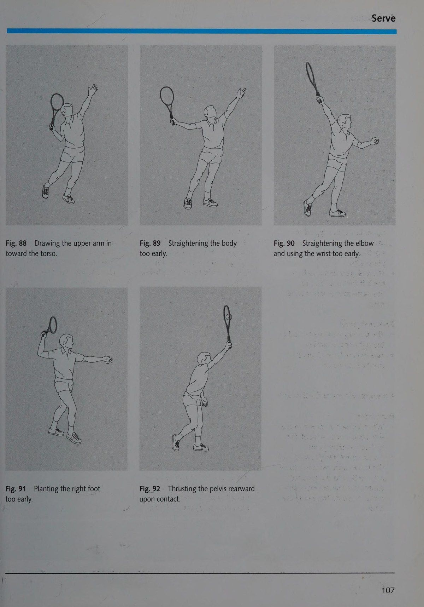
Do đó, vận tốc cuối cao trong cú đánh đạt được khi có nhiều lực cản quán tính và cơ cẳng tay được đưa vào hoạt động vào thời điểm cuối cùng.
Phát triển các yếu tố kỹ thuật riêng biệt GB SIN IETS ISTE ES STE ET
Trong phần tiếp theo của cú đánh được cổ tay kéo vào trong.
Điều này chuyển xung từ mắt xích cuối cùng này trong phản ứng dây chuyền tới vợt.
Trong quá trình di chuyển cú đánh, sự uốn cong của trụ cũng xảy ra. Nói cách khác, bàn tay di chuyển theo hướng ngón út. Đây là sản phẩm của việc rút ngắn cơ gấp trụ, như mô tả trong hình 10.
Cơ tương đối dài này (khoảng 8 inch [20 cm]) có thể co lại rất nhanh. Làm như vậy cho phép cơ này đảm nhận nhiệm vụ tăng tốc tích cực trong giai đoạn này của chuyển động cú đánh. Do đó, cơ gấp trụ đóng một vai trò quan trọng trong việc tăng tốc vợt; thời gian và lực của gia tốc này thay đổi tùy theo hành trình được sử dụng.
Các vấn đề khác bao gồm tư thế quay (tức là xoay cẳng tay vào trong, như trong hình 11) trong cú giao bóng và trong các cú thuận tay (Forehand) cũng như tư thế quay ngửa (xoay cẳng tay ra ngoài) trong các cú trái tay (Backhand) (hình 12). Những hành động này giúp xác định hướng bắn.
Sự uốn cong của trụ tiếp tục tại điểm tiếp xúc bóng (Point of Contact) trong một cú giao bóng. Mặt khác, với một cú đánh xoáy lên thuận tay và một cú đánh xoáy lên trái tay, sẽ xảy ra hiện tượng uốn cong hướng tâm. Uốn cong hướng tâm liên quan đến việc di chuyển bàn tay theo hướng ngón cái, như mô tả trong hình 13.
Tóm lại, khi tốc độ vợt tăng lên đến điểm tiếp xúc bóng (Point of Contact) với bóng, cổ tay thực hiện ba hoặc bốn chuyển động riêng biệt kết hợp với cẳng tay. Tất cả điều này diễn ra trong một phần mười hoặc một phần trăm giây.
Cổ tay được giữ chắc_tại điểm tiếp xúc bóng (Point of Contact) chỉ trong khoảng ba đến năm phần nghìn giây. Trong khoảnh khắc ngắn ngủi đó, cổ tay phải tạo ra một lực cản nào đó đối với quả bóng. Trong quá trình đó, cơ cẳng tay được phân bố mạnh mẽ trong giây lát thông qua việc tay cầm vợt chắc chắn. Khi đó cổ tay phải cong và không bị cong. Vị trí của cổ tay cũng phải phù hợp với hướng dự định của bóng.
Cái gọi là động tác búng cổ tay (gập lòng bàn tay), mà trước đây mọi người cho rằng là một chức năng của cổ tay tại điểm tiếp xúc bóng (Point of Contact), không được sử dụng khi đánh bóng. Chỉ trong giai đoạn cuối của cú đánh tiếp theo, cổ tay mới có thể bật ra trong một số cú đánh nhất định (chẳng hạn như khi giao bóng).
Đây là sản phẩm giúp thư giãn cơ cẳng tay và giảm trọng lượng của vợt. Tuy nhiên, điều này không gây ảnh hưởng gì thêm đến quả bóng và chỉ đơn thuần là một kết luận kinh tế cho toàn bộ cú đánh.
Khoảng cách tốt nhất từ
Thân đánh bóng
Điểm tiếp xúc của tất cả các cú đánh (ngoại trừ từ trên cao) phải ở phía trước cơ thể và cách một khoảng thoải mái sang một bên.
Về cơ bản, điều đó mang lại đường tăng tốc dài hơn cho vợt và cơ hội đánh bóng tốt hơn.
Độ chính xác trong việc tiếp xúc bóng đạt được bằng cách điều chỉnh tốc độ của vợt tương ứng với vận tốc của quả bóng đang tới.
Đi chệch khỏi điểm tiếp xúc bóng (Point of Contact) tối ưu là một trở ngại cho việc đặt cú đánh chính xác (xem hình 14). Như hình 15 cho thấy, vợt lắc theo hình vòng cung đến điểm tiếp xúc bóng (Point of Contact), trong giây lát di chuyển theo góc vuông với quỹ đạo của quả bóng do tiếp xúc với quả bóng, và sau đó tiếp tục chuyển động theo hình vòng cung. Cái này. có nghĩa là việc tiếp xúc tối ưu với bóng thậm chí còn quan trọng hơn những gì người ta tin trước đây.
Tương tự như vậy, yêu cầu đã được công nhận trước đây là phải bám theo đường tiếp xúc sau một chuyển động cú đánh dài theo hướng đánh là có ý nghĩa. Theo kinh nghiệm, nó dẫn đến độ chính xác cao hơn khi tiếp xúc với bóng và độ cứng ở cổ tay—đặc biệt khi kết hợp với những yếu tố sau:
¢ xoay thân trên mạnh mẽ trong các cú thuận tay (Forehand), giao bóng và
Hình 14 (trái) Điểm tiếp xúc tối ưu cho một cú đánh dọc tuyến.
Hình 15 (phải) Chuyển động của trục vợt, đặc biệt là đầu vợt. Khoảng thời gian giữa các vị trí lên tới khoảng 4/1.000 giây. Thang đo minh họa mang lại dữ liệu sau.
Tốc độ của vợt (được đo ở điểm bên ngoài của đầu vợt) ngay trước khi điểm tiếp xúc bóng (Point of Contact) tiếp cận
50 dặm (80 km) một giờ. Ngay sau khi tiếp xúc, vợt di chuyển với tốc độ chỉ hơn 20 dặm (35 km) một giờ. Quả bóng, không được minh họa ở đây, đang di chuyển với tốc độ khoảng 15 dặm (25 km) một giờ trước khi tiếp xúc và 56 dặm (92 km) một giờ sau khi tiếp xúc.
© mức độ thư giãn ở phần thân trên trong các cú trái tay (Backhand);
© sự thay đổi trọng lượng trong tất cả các cảnh quay.
Về cơ bản, đạt được khoảng cách thích hợp với một bên bằng cách uốn cong khuỷu tay trong cú thuận tay (Forehand) " (hình 16) và bằng cách làm thẳng bóng trong cú trái tay (Backhand) (hình 17). Độ cao tiếp xúc tự nhiên phụ thuộc vào quỹ đạo của bóng và cách nó phản ứng khi nảy.
Hình 16 Khoảng cách từ cạnh bóng đến cú thuận tay (Forehand) ở đường biên cuối sân (cánh tay cong).
<= Xoay — Chuyển tiếp <$ams + §—1() inch về mặt lý thuyết, chiều cao tiếp xúc tốt nhất cho một cú đánh cơ bản là ở ngang hông.
Tuy nhiên, tình huống chơi thường thể hiện một chiều cao tiếp xúc khác:
¢ quả bóng xoáy lên có độ nảy cao chắc chắn tạo ra độ cao tiếp xúc trên chiều cao vai;
® hầu hết các cú đánh cú bắt lưới (Volley) đều có điểm tiếp xúc bóng (Point of Contact) cao hơn hông;
¢ những quả bóng cắt có độ nảy thấp có điểm tiếp xúc bóng (Point of Contact) thấp ở ngang đầu gối hoặc thấp hơn (xem ảnh ở trang 33).
Hình 17 Khoảng cách từ phía bóng ở phía sau “cú đánh cơ bản bằng tay (cánh tay thẳng).
Phát triển các yếu tố kỹ thuật riêng lẻ
Sự cố với ảnh chụp từ máy
© Đòn bẩy ngắn hơn giữa trục quay của vai và tay vợt về cơ bản đòi hỏi tiêu tốn nhiều năng lượng hơn. Tuy nhiên, vấn đề sẽ được giảm thiểu nếu tay vợt có thể phản ứng bằng cách đánh xoáy lên và bằng cách tăng tốc địa chất, điểm quay thấp hơn trong cú đánh để tạo ra đòn bẩy dài hơn.
không thích hợp để đánh bóng ở phía trước cơ thể.
© Việc thực hiện tiếp theo phải phù hợp với hoàn cảnh.
Sự cố với ảnh chụp từ máy
® Để tránh đánh bóng ra ngoài biên, tốc độ cú đánh phải duy trì là cú đánh thẳng.
© Để giảm lỗi lưới, có thể cần phải điều chỉnh vị trí của cú đánh thẳng mặt vợt; phản ứng bằng một cú cắt sẽ hiệu quả hơn vì quả bóng bay lên như một vòng xoáy.
® Những cú đánh xoáy lên từ điểm tiếp xúc bóng (Point of Contact) thấp thường khó đánh hơn những cú đánh từ điểm tiếp xúc bóng (Point of Contact) cao hơn vì trong trường hợp trước chỉ có thể thực hiện được một vòng cung phẳng phía dưới và điều đó hầu như không có chỗ để tăng tốc theo chuyển động hướng lên.
¢ Ngay trước khi đánh bóng, tay vợt phải hạ thấp trọng tâm.
Với các cú giao bóng và cú đập bóng, vị trí của điểm tiếp xúc bóng (Point of Contact) được xác định không chỉ bởi nhu cầu về đường tăng tốc dài mà còn bởi chức năng của vợt như là mắt xích cuối cùng trong chuỗi động học (Kinetic Chain) và việc sử dụng tầm với tối đa. Kết quả là, các điểm liên lạc sau đây
Điểm tiếp xúc với đường thẳng
®@ 4 đến 12 inch (10-30 cm) phía trước bàn chân trái trong
© ở độ cao tiếp xúc tối đa.
Điểm tiếp xúc trong một cú giao bóng có xoáy:
® hơi sang trái (xoắn) hoặc sang phải (lát) dự đoán
© qua đầu, lên tới 8 inch (20 cm) phía trước bên trái; chân theo hướng mong muốn
© xoắn chân dưới độ cao tiếp xúc tối đa.
Điểm tiếp xúc trong một cú đập:
® hơi ở phía trước đầu:
© ở độ cao tiếp xúc tối đa.
Tầm quan trọng của độ bám đối với cú đánh
Tay cầm, hoặc vị trí của bàn tay trên cán vợt, là một yếu tố thiết yếu để đánh bóng hiệu quả nhất.
Tay cầm tốt nhất mang lại điểm tiếp xúc bóng (Point of Contact) thuận lợi ở phía trước hông dẫn đầu cộng với vị trí thẳng đứng cần thiết của mặt vợt. Điều này tối ưu hóa việc truyền lực.
Trong các đoạn sau, chúng tôi sẽ mô tả các kiểu cầm vợt điển hình như chúng thường thấy trong quần vợt vô địch.
Sẽ thấy rõ một số đường khá linh hoạt tách biệt các tay cầm tương tự. Cách cầm được khuyến nghị cho mỗi cú đánh (xem bảng 4) góp phần định vị mặt vợt hiệu quả ở điểm tiếp xúc bóng (Point of Contact) tốt nhất; cách cầm không thuận lợi hoặc bị lỗi khiến việc đó trở nên khó khăn hoặc không thể thực hiện được.
Hình minh họa của báng cầm thể hiện vị trí của tay tại điểm tiếp xúc bóng (Point of Contact).
Cách cầm thuận tay (Cách cầm kiểu phương Đông)
Khi mặt vợt được giữ thẳng đứng, bàn tay nắm cán vợt từ bên phải sao cho bóng của ngón út nằm ở phía sau của mặt rộng bên phải của cán vợt (xem hình 18).
® các cú đánh ở phía thuận tay, đặc biệt đối với các điểm tiếp xúc bóng (Point of Contact) ở độ cao ngang hông và cao hơn một chút.
Không phù hợp hoặc không hiệu quả đối với:
© giao bóng và đập bóng.
Cách cầm vợt thuận tay cực đỉnh (Cách cầm kiểu phương Tây)
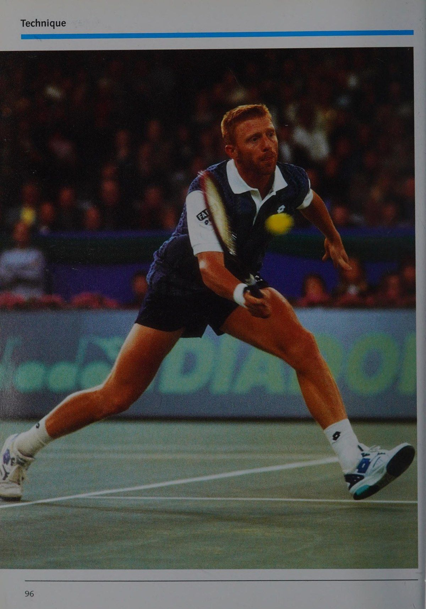
Khi mặt vợt được giữ thẳng đứng, bàn tay giữ cán vợt theo một góc từ phía dưới bên phải sao cho bóng của ngón út nằm ở góc xiên phía dưới bên phải của cán vợt (xem hình 19).
Chương 5: Quỹ Đạo Bay Của Bóng & Động Lực Học Va Chạm Mặt Sân
Chapter 5: The Ball in Flight and Bounce: Spin, Trajectory, and Court Friction
© topspin về phía thuận tay, đặc biệt là đối với các điểm tiếp xúc bóng (Point of Contact)
® lốp bóng xoáy lên ở bên thuận tay.
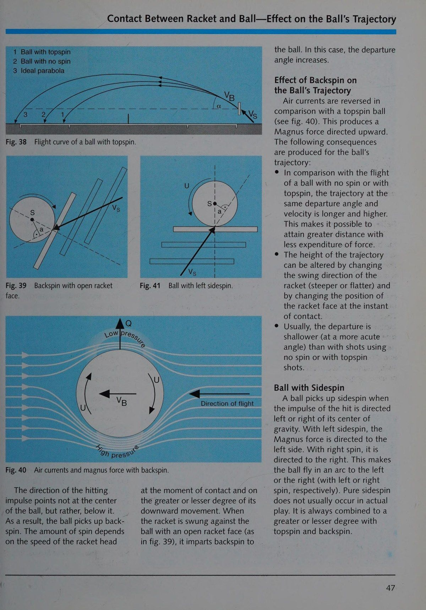
© cú đánh nền ở phía thuận tay;
@ nửa cú vô lê ở bên thuận tay.
Không phù hợp và không hiệu quả
@ lát trên thuận tay (bao gồm
® cú vô lê ở bên thuận tay;
@ cú đánh về phía trái tay; và
® giao bóng và đập bóng.
Với mặt vợt được giữ thẳng đứng, bàn tay nắm lấy cán vợt ở một góc từ phía trên bên phải. Đầu ngón tay út nằm ở góc xiên phía trên bên phải của cán vợt (xem hình 20).
® các cú đánh cơ bản ở bên thuận tay; tuy nhiên, không thể sử dụng cho các điểm tiếp xúc bóng (Point of Contact) ở phía trước cơ thể nếu không mở cổ tay và duỗi thẳng khuỷu tay;
® cú đánh vào mặt sau; xoay cẳng tay (supination) là cần thiết với
® các cú vô lê ở phía thuận tay và trái tay (với các cú đánh thích hợp
® lát ở bên thuận tay và bên trái tay (với
® dịch vụ và đập vỡ; và
® Công việc và thả ảnh.
@ điểm tiếp xúc bóng (Point of Contact) tương đối cao; để giữ liên lạc
Phát triển các yếu tố kỹ thuật cá nhân PS TET PEE điểm ở phía trước cơ thể, cẳng tay phải xoay khá mạnh để giữ mặt vợt ở vị trí thẳng đứng.
Cách cầm trái tay (Continental Grip)
Bàn tay nắm vợt từ phía trên khi mặt vợt được giữ thẳng đứng (xem hình 21). Đầu ngón tay út nằm ở góc xiên nhỏ phía trên của tay cầm. Một biến thể của kiểu cầm vợt này, kiểu cầm vợt trái tay cực mạnh, bao gồm việc đặt bóng của ngón út lên góc xiên phía trên bên trái của cán vợt (xem hình 22).
@ tất cả các cú đánh ở phía trái tay;
® giao bóng và đập vỡ.
Không phù hợp và không hiệu quả
@ tất cả các cú thuận tay (Forehand).
Tay phải nắm cán vợt từ bên cạnh, như với bàn tay thuận (và đôi khi từ phía trên, như với cách cầm vợt trái tay), và được đặt ở cuối cán vợt.
Tay trái nằm ngay phía trước tay phải và nắm lấy cán vợt từ bên trái, giống như cách cầm vợt bằng tay thuận của tay vợt thuận tay trái (xem hình 23).
Việc sử dụng tay trái cho phép truyền lực đặc biệt tốt, tùy thuộc vào hướng đánh, vì tay được đặt phía sau cán vợt. Sự sắp xếp đó cũng tạo điều kiện cho khả năng tăng tốc lớn hơn.
Vì tay trái cung cấp lực cho cú đánh và tay phải được sử dụng chủ yếu để tạo sự ổn định nên tay trái cần được luyện tập tốt về động tác này.
® các cú đánh nền ở phía sau © xoáy lên ở phía trái tay.
Giai đoạn vung vợt sau nhằm thiết lập đường tăng tốc tối ưu liên quan đến chiều dài và hướng.
Động tác lùi lại bắt đầu bằng động tác xoay người ở phần thân trên. Vào cuối động tác vung vợt về phía sau, có một sự do dự trong chuyển động của đầu vợt tạo điều kiện cho sự tích tụ năng lượng.
Chuyển động vung sau cuối cùng bị ảnh hưởng bởi:
© lượng thời gian có sẵn
® mục tiêu chiến thuật và loại
® hoàn cảnh cá nhân.
Xoay người về phía sau với các cú đánh cơ bản
Một cú vung vợt về phía sau và hướng lên trên đảm bảo:
© việc sử dụng thế năng trong khối lượng của vợt; và
® một sự chuyển tiếp chất lỏng sang giai đoạn hành trình.
Thời gian dành cho một cú đánh ngược là từ một giây đến một giây rưỡi trong một trận đấu cơ bản và, trong những trường hợp cực đoan, khoảng bốn phần mười giây trong một cú đánh trả. Vì cần khoảng sáu đến chín phần mười giây cho các chuyển động vung vợt sau và cú đánh theo hình cánh cung, nên thời gian lùi lại chỉ có thể được rút ngắn bằng cách trả bóng nhanh.
Hình 18 Cách cầm vợt thuận tay nhìn từ phía trên và phía sau.
giao bóng. Thời điểm bắt đầu của cú vung ngược phụ thuộc vào vận tốc của quả bóng đang tới và kỹ thuật đánh dự kiến. Việc rút lui phải xảy ra sớm hơn trong một lát vì toàn bộ chuyển động chậm hơn so với các cú đánh xoáy lên. Động tác backswing có thể có nhiều hình thức khác nhau. Vòng cung dâng lên khá rộng giúp cho việc tăng tốc vợt dễ dàng hơn trước bước ngoặt của cú giật. Tuy nhiên, nếu vòng cung quá lớn, việc đánh bóng nhanh sớm có thể trở nên khó khăn hơn.
làm phức tạp việc tăng tốc và thời gian của vợt vì trước khi xảy ra cú vung vợt về phía trước, sau đó lại tăng tốc một lần nữa.
Hình 19 Cách cầm vợt thuận tay cực mạnh nhìn từ phía trên và phía sau.
Một phân tích về quần vợt đẳng cấp thế giới cho thấy chuyển động vung vợt sau của những tay vợt khác nhau trong các tình huống tương tự có thể khác nhau rất nhiều (xem hình 24 và 25).
Tuy nhiên, những chuyển động này thực tế vẫn không thay đổi khi cùng một tay vợt xử lý các tình huống khác nhau liên quan đến tốc độ vung vợt sau và tốc độ cú đánh khác nhau. Các chuyển động khác nhau rõ ràng là sản phẩm của quá trình tay vợt học trò chơi và phát triển phong cách cá nhân của họ. Các biến thể bắt nguồn từ các nguồn khác nhau chứ không phải từ cùng một chuyển động ở tay, khuỷu tay (hoặc cẳng tay) và vai (cánh tay trên và thân). Giai đoạn backswing có thể được kéo dài hoặc rút ngắn tùy theo nhu cầu của
Bảng 4 Tay cầm thích hợp cho những cú đánh quan trọng nhất (Cực cao) cách cầm trái tay, bằng hai tay
Tay cầm trái tay, hình bán nguyệt
Tay cầm trái tay, hình bán nguyệt
Hình 20 Kiểu cầm hình bán nguyệt cho thuận tay từ phía trên và phía sau.
tình hình. Việc kéo dài động tác backswing có thể đồng nghĩa với việc xoay phần thân trên về phía
® duỗi thẳng cú đánh một cách lỏng lẻo) hoặc giữ cẳng tay gần với thân mình (với một
® mở hoặc đóng cổ tay (duỗi thẳng trong cú thuận tay hoặc uốn cong trong cú trái tay (Backhand)); việc mở hoặc đóng cổ tay rõ ràng hơn do lực ly tâm; với những cú vuốt chậm hơn, tránh việc mở và đóng cổ tay một cách có ý thức hoặc quá mức.
Cách cầm vợt thuận tay | Độ bám thuận tay cực cao, | Cách cầm vợt thuận tay, kiểu cầm vợt thuận tay bên hông tôi bán lục địa tôi bán lục địa
Cách cầm trái tay, bằng hai tay
Tay cầm trái tay, hình bán nguyệt
Tay cầm trái tay, hình bán nguyệt
Phát triển các yếu tố kỹ thuật riêng lẻ
Hình 21 Cách cầm trái tay nhìn từ Hình 22 Cách cầm trái tay cực mạnh nhìn thấy Hình 23 Cách cầm trái tay bằng hai tay phía trên và phía sau. từ phía trên và phía sau. nhìn từ trên cao; tay phải sử dụng lưng/tay cầm.
Hình 24 Động tác vung vợt ra sau khá phẳng trong cú đánh nền thuận tay tính từ vạch cuối sân.
Đánh lùi cho cú vô lê và
Vì thời gian dành cho một cú vô lê thường ít hơn sáu đến chín phần mười giây, nên nên thu vợt lại bằng cách chỉ xoay vai một chút về phía sau. Nó phải được nâng lên trên độ cao tiếp xúc dự kiến, vì cú vô lê thường được thực hiện bằng xoáy ngược (xem "Giai đoạn đánh"). Hình thức lùi lại của một nửa cú vô lê gần giống với các chuyển động được sử dụng cho một cú đánh nền.
Tuy nhiên, do áp lực về thời gian nêu trên nên chuyển động lùi phải phẳng hơn và ngắn hơn.
Trong một cú giao bóng và một cú đập bóng, việc sử dụng đòn bẩy dài bao gồm cánh tay và vợt trong khi giữ vợt cao hơn vai sẽ tạo ra nhịp điệu tốt cho cú đánh và giúp tay vợt duy trì sự cân bằng cần thiết. Một đường tăng tốc dài được thiết lập trong giai đoạn vung vợt về phía sau của cú giao bóng bằng cách:
© chuyển động tối ưu hướng xuống dưới và phía sau lưng (giúp tăng tốc);
® mở cổ tay do
® uốn cong phần thân trên ra xa
® uốn cong đầu gối.
Giai đoạn đánh bắt đầu bằng việc tăng tốc vợt trước điểm rẽ của đường cong (xem trang 21). Để đạt được đường tăng tốc gần như thẳng hoặc hơi cong, vợt phải được đặt càng sớm càng tốt ở phía dưới hoặc phía trên (tương ứng đối với xoáy lên và xoáy xuống) điểm tiếp xúc bóng (Point of Contact) dự kiến với bóng.
các chuyển động cá nhân là cần thiết để đánh bóng chính xác cũng như để chạy và đánh hiệu quả. Khi cảnh quay đòi hỏi độ chính xác và tốc độ cực cao cùng lúc, các chuyển động riêng lẻ phải hài hòa về thời gian và động lực một cách chính xác để mang lại sức mạnh tối đa. Điều này đặc biệt xảy ra với những quả bóng xoáy lên. Các bộ phận cơ thể phối hợp tạo thành một chuỗi động học (Kinetic Chain), hoặc một hệ thống - gồm các bộ phận cấu thành, được liên kết với nhau. Cơ bắp có chức năng cử động các chi và uốn cong các khớp. Các chuyển động có thể có của cơ thể bắt đầu bằng thân và di chuyển ra ngoài. Điều đó có nghĩa là việc phối hợp các chuyển động theo đường thẳng ở các chi xa nhất là khó khăn; nhưng đồng thời, hiệu ứng giống như roi da giúp đạt được tốc độ lớn hơn. Điều này xảy ra vì vợt là mắt xích cuối cùng trong dây chuyền và có mô men quán tính lớn nhất. Khi cánh tay trên tăng tốc, vợt lúc đầu bị tụt lại phía sau
Phát triển các yếu tố kỹ thuật riêng lẻ
Hình 25 Động tác vung vợt ra sau rất cao cho cú thuận tay (Forehand) tính từ đường cuối sân.
trong giây lát. Việc tạm dừng chuyển động của cánh tay trên (phanh) sẽ tăng tốc vợt đáng kể và vung vợt về phía trước. Phát triển chuyển động chuyển động hiệu quả có nghĩa là bắt đầu chuyển động cú đánh ở chân và truyền qua thân, cánh tay và bàn tay. Lưu ý rằng sự diễn biến theo không gian, thời gian và động lực của chuyển động cú đánh phải được lên kế hoạch sớm vì không thể thực hiện điều chỉnh nào ở phần cuối của cú vung về phía trước.
Ngoài ra, tốc độ của đầu vợt có thể được tăng lên đáng kể bằng cách uốn cong khuỷu tay hơn nữa. Sự uốn cong làm giảm bán kính và mômen quán tính, do đó làm tăng vận tốc góc.
Với một quả bóng tennis di chuyển với tốc độ cao và đặc điểm nảy quá mức của người tiếp bóng thường gặp trong các tình huống đánh vô-lê, chuyển động cú đánh theo hướng về phía trước và hướng xuống có thể được sử dụng để tạo ra xoáy xuống.
Các yếu tố chính trong việc này là:
© khoảng cách mong muốn truyền tới quả bóng có thể đạt được ngay cả ở
@ bóng nảy ra khỏi bề mặt ở mức thấp và do đó có lợi về mặt chiến thuật.
Cú đánh vô lê này, được đánh bằng xoáy xuống, cũng có ưu điểm là chuyển động có thể được thực hiện theo cách hạn chế và kiểm soát hơn. Điều đó rất hữu ích với các điểm tiếp xúc bóng (Point of Contact) thấp hơn. Ngoài ra, sự phối hợp tốt hơn giữa động tác vung tay và chuyển động tiến và lùi của cơ thể vì cả hai chuyển động có thể bổ sung cho nhau về hướng và gia tốc. Sẽ dễ dàng hơn để đánh bóng khi nó bay lên vì hướng đi xuống của cú đánh tuân theo quỹ đạo gần đúng của quả bóng đang tới.
và Cú đánh đập : Với những cú giao bóng và đập bóng, chuyển động của vợt phải tạo ra sự an toàn, chính xác và tốc độ bóng rất cao.
Vì vậy, tốt nhất có thể.
sự phối hợp của các phong trào cá nhân là vô cùng quan trọng. Giai đoạn cú đánh phải bắt nguồn từ việc duỗi thẳng mắt cá chân và đầu gối.
Các cơn co thắt ở cơ thắt lưng, bụng, ngực, vai, cánh tay và bàn tay phải diễn ra liên tiếp ngay lập tức.
Phối hợp chuyển động giống như roi trong chuỗi động học (Kinetic Chain) bằng cách duỗi thẳng mắt cá chân và đầu gối sẽ tạo ra lực đẩy tiếp theo khỏi bề mặt sân. Cổ tay vẫn mở và khuỷu tay ngày càng uốn cong tại điểm này trong cung (xem hình 26).
Vòng cung có hiệu quả nhất khi các cơ liên quan đến cú đánh không bị căng đến mức tối đa ở điểm thấp nhất và tay đánh nằm ở vị trí
Hình 26 Phối hợp động tác chân và tay trong một cú giao bóng.
phía sau đầu và cao hơn mức cổ một chút.
mặt vợt vuông góc với hướng bay của bóng, cẳng tay phải thực hiện chuyển động nghiêng trong giai đoạn đánh bằng cách xoay mặt ngón tay cái vào trong. Điều này rõ ràng được tiếp tục trong giai đoạn tiếp theo (xem hình 27).
Trong suốt giai đoạn đánh, vai đánh của tay cầm vợt được đặt gần như thẳng đứng trên bàn chân trái và trục của vai hướng lên cao trên đầu. Sự tự do của phía hành trình (xem hình 27) cho phép chuỗi động năng hoạt động theo phương thẳng đứng và theo đường thẳng
Hình27 Chuyển động nghiêng và sự tự do của bên đánh trong một cú giao bóng.
để tạo ra hiệu ứng giống như roi tốt nhất có thể trong việc tăng tốc vợt.
Điều này cũng giúp có thể đạt được độ cao tiếp xúc với bóng.
Chân duỗi thẳng càng mạnh thì tốc độ cất cánh khỏi mặt sân càng nhanh (xem hình 28).
Cánh tay trái, hạ xuống khi bắt đầu tạo góc ngang phần thân trên khi thực hiện cú đánh (xem hình 28). Sự bù đắp này duy trì khả năng kiểm soát trong quá trình cú đánh.
Hình 28 Chuyển động bù đắp từ cánh tay ném trong một cú giao bóng.
Nhịp điệu hành động tối ưu tạo điều kiện giảm dần tốc độ về cuối chuyển động. Chuyển động cú đánh phải tiết kiệm. Nếu không, việc giảm tốc độ vợt sẽ tiêu tốn năng lượng.
có thể giúp kiểm soát cú đánh trước đó. Với những cú đánh mạnh như vô lê và trả bóng, nó có thể giúp ngăn chặn cú đánh tiếp theo bằng cách căng các cơ thành một lực cản vững chắc (như trong ảnh ở trang 41).
khi trở về.
Quả bóng đang bay và nảy lên
Một mặt, những cân nhắc về chiến thuật và mặt khác là sự phát triển kỹ thuật bị ảnh hưởng bởi hành vi của quả bóng khi nó bay trong không khí và nảy trên bề mặt sân.
Phần sau đây giải thích cách chuyển động của cú đánh tác động lên quả bóng và quỹ đạo của quả bóng cũng như cách quả bóng phản ứng khi nảy lên. Ngay từ đầu, phần trình bày này không đề cập đến việc quả bóng được đánh đã có vận tốc, hướng và độ xoáy cụ thể. Những cân nhắc này sẽ được đề cập trong đoạn kết luận.
Bảng 5 Chìa khóa cho các minh họa tiếp theo
Các yếu tố ảnh hưởng đến quỹ đạo của quả bóng
Các tiêu chí sau đây xác định quỹ đạo của quả bóng:
® tốc độ bay của nó (nhanh hay chậm);
® hướng bay của nó (cao,
@ vòng quay của nó (tiến, lùi hoặc
© sức cản gió của nó; và
© trọng lực.
Đặc điểm thoát là sản phẩm của:
@ vận tốc của quả bóng khi tiếp xúc với bề mặt sân;
V,: Tốc độ bóng sau khi tiếp xúc
V,: Tốc độ bóng trước khi nảy lên mặt sân
V,: Tốc độ của bóng sau khi nảy ra khỏi mặt sân a: Khoảng cách xung lực từ trọng tâm bóng u: Tốc độ quay (xoay) của bóng sau khi tiếp xúc u,: Tốc độ quay của bóng trước khi nảy lên mặt sân u,: Tốc độ quay của bóng sau khi nảy ra khỏi mặt sân a: Góc tiếp xúc (góc rơi) giữa bóng và vợt hoặc mặt sân (nhìn từ bên)
6: Góc thoát (góc đẩy) của bóng khỏi vợt hoặc mặt sân (nhìn từ bên) Px: Phần xung lực nằm ngang
Py: Phần xung theo chiều dọc
Q: Lực chéo (Magnus) tác dụng lên quả bóng đang quay
@ góc mà nó nảy lên
© trang điểm bề mặt (xỉ than, chất tổng hợp, cỏ, v.v.).
Sự tiếp xúc giữa vợt và bóng— Ảnh hưởng đến quỹ đạo của bóng
Vợt được vung có chủ đích để chống lại quả bóng đang tới. Đánh bóng bằng vợt là một sự kiện tác động được tạo ra bởi các quá trình vung vợt phức tạp liên quan đến vợt và cánh tay. Khi tốc độ của vợt được truyền tới quả bóng, quả bóng sẽ bị biến dạng và bị nén trong giây lát do tính đàn hồi của nó.
Tốc độ vợt càng cao thì độ biến dạng của bóng càng lớn. Bóng tăng tốc do tốc độ của vợt và độ phân giải độ biến dạng của nó. Hai khả năng khác nhau cơ bản có thể xảy ra khi đánh bóng bằng vợt:
Quả bóng đang bay và nảy lên
Hình 29 Tiếp điểm trung tâm.
® Một mặt, vợt đánh bóng trực tiếp vào tâm; nghĩa là, sự thúc đẩy nổi bật (khối lượng vợt x tốc độ vợt) hướng vào trọng tâm S của quả bóng (xem hình 29).
năng lượng của vợt chuyển thành năng lượng chuyển động trong quả bóng, về cơ bản không tạo ra độ xoáy.
© Trong trường hợp thứ hai, vợt đánh bóng ra khỏi tâm; nghĩa là xung lực đánh không còn hướng vào trọng tâm S của quả bóng nữa (xem hình 30). Một phần xung lực này được chuyển thành xung lực bay trong quả bóng, một xung lực quay khiến quả bóng quay quanh tâm của nó. Trong khi phần thẳng đứng của tốc độ vợt (Vs,) khi nó tiếp xúc với bóng xác định mức độ xoáy, thì vận tốc của quả bóng là một hàm số của phần ngang (Vs,) (xem hình 31).
Với tốc độ vợt bằng nhau trong giai đoạn đánh, độ xoáy tăng lên và vận tốc của bóng giảm khi vợt được vung lên trên với một góc lớn hơn.
Hình 30 Khả năng đánh ra khỏi trung tâm.
Thông thường, phần Vs, tốc độ lớn hơn phần Vs,.
Tốc độ bay là sản phẩm của các yếu tố sau đây phát huy tác dụng tại thời điểm tiếp xúc bóng (Point of Contact) giữa bóng và
© khoảng cách giữa hướng của lực và trọng tâm của quả bóng (hướng chuyển động của vợt; xem hình 30);
© tốc độ của quả bóng sắp tới:
® độ đàn hồi của vợt, dây và bóng.
Do đó, vận tốc của quả bóng được đánh về cơ bản có thể được kiểm soát thông qua tốc độ và hướng của vợt khi nó vung về phía trước. Điều này dựa trên việc cầm vợt chắc chắn vào thời điểm tiếp xúc bóng (Point of Contact) và đánh bóng bằng phần tốt nhất của mặt vợt (xem hình 32). Nếu không, tốc độ và độ chính xác sẽ bị ảnh hưởng. Điểm tiếp xúc tối ưu này (điểm ngọt) không nhất thiết phải giống với tâm hình học của mặt vợt.
Hướng khởi hành của quả bóng
Hướng khởi hành được chỉ định bởi góc bay so với bề mặt sân bằng phẳng (xem hình 33) và nội dung bên lề (xem hình 34). Nó là một sản phẩm của
© hướng chuyển động của vợt (lên hoặc xuống,
® góc nghiêng của vợt tại thời điểm tiếp xúc bóng (Point of Contact); và
® tốc độ, hướng và độ xoáy của quả bóng đang tới.
Vợt được vung trực tiếp vào bóng (xem hình 29).
Hướng của lực tác động do đó chỉ chính xác vào trọng tâm của quả bóng. Bóng rời khỏi mặt vợt theo một góc vuông. Quỹ đạo của quả bóng mô tả một đường cong đạn đạo. Nó lệch khỏi một parabol lý tưởng do sức cản của gió.
Quỹ đạo ngắn hơn và góc rơi có phần dốc hơn góc cất cánh (xem hình 35). Quan sát các tay vợt đang thi đấu cho thấy phần lớn bóng được đánh ở ngang hông hoặc ngang lưới.
Sự tiếp xúc giữa vợt và bóng—Ảnh hưởng đến quỹ đạo của bóng
Để bóng không xoáy có thể qua lưới khi đánh ở độ cao này, mặt vợt phải hơi mở (xem hình 35).
Góc cất cánh là một hàm số của khoảng cách mà quả bóng phải di chuyển và tốc độ khởi hành phù hợp với góc khởi hành yêu cầu khoảng 45 độ sẽ tạo ra khoảng cách bay dài nhất và mức tiêu hao năng lượng tiết kiệm nhất. Ở góc đó, bóng phải đạt độ cao an toàn trên lưới.
© Góc khởi hành lớn hơn hoặc nhỏ hơn 45 độ sẽ rút ngắn khoảng cách bay.
© Vợt được vung càng nhanh thì đường bay của bóng càng có nguy cơ đánh bóng ra ngoài biên.
© Khi góc cất cánh giảm và bóng đi qua lưới ở độ cao thấp hơn, tốc độ vợt phải được tăng lên (làm cho bóng chạm tới đường cuối sân). Điều đó làm tăng nguy cơ xảy ra lỗi mạng.
Hình 34 Góc thoát có thể có (phải và trái).
Vs.
Hình 31 Hình bình hành của các lực trên Hình 32 Điểm tiếp xúc tốt nhất hoặc quả bóng chạm vào tâm. điểm ngọt ngào.
Hình 33 Góc thoát có thể có (cao và thấp).
Hình 35 Đường bay của một quả bóng không quay.
1 Đường cong đạn đạo 2 Parabol lý tưởng
Quả bóng đang bay và nảy lên
Xoáy lên trung bình Góc thoát nông xoáy lên nặng Góc thoát ra dốc hơn
Hình 36 Lượng xoáy là hàm của hướng vung vợt và tốc độ của mặt vợt thẳng đứng.
Vợt được vung vào bóng từ hướng phía sau và phía dưới. Mặt vợt phải giữ thẳng đứng khi va chạm.
Do đó, xung của cú đánh không hướng vào tâm quả bóng mà ở phía trên nó. Đó là cách quả bóng nhận được xoáy lên bên cạnh vận tốc khởi hành của nó. Lượng xoáy lên phụ thuộc vào tốc độ và hướng vung vợt (hướng lên trên ở góc lớn hơn hoặc nhỏ hơn; xem hình 36).
Ảnh hưởng của xoáy lên lên quỹ đạo của bóng
Do kết quả của xoáy lên, không khí được mang theo bởi lớp nỉ của quả bóng. Trong khi bay, xoáy lên tạo ra một lớp không khí quay cùng với quả bóng (xem hình 37). Dòng điện tuần hoàn này trùng với dòng điện trong không khí xung quanh (sức cản của gió). Điều này tạo ra sự gia tăng tốc độ của các dòng điện tổng hợp ở mặt dưới của quả bóng (với các dòng điện chạy cùng hướng) và giảm tốc độ ở mặt trên (ngược lại với dòng điện).
Soll pr *88y,.
Ở phía trên của quả bóng có sự gia tăng áp suất kèm theo tốc độ gió chậm và ở mặt dưới, áp suất giảm tương ứng (hiệu ứng Bernoulli). Sự chênh lệch áp suất này hoạt động như một lực Q (lực Magnus) hướng xuống dưới. Mức độ của lực Magnus phụ thuộc vào vận tốc của quả bóng (bậc hai) và độ xoáy của nó (đơn giản).
Tác dụng của lực Magnus theo hướng trọng lực gây ra những hệ quả sau đây đối với quỹ đạo của quả bóng (xem hình 38):
© So với một quả bóng không có độ xoáy ở cùng góc khởi hành và tốc độ, quỹ đạo ngắn hơn và thấp hơn. Điều này giải thích tại sao ngay cả những quả bóng có tốc độ phát bóng cao và độ cao an toàn trên lưới cũng có thể hạ cánh trong giới hạn trong khi chơi và bên trong sân giao bóng khi giao bóng.
© Để đạt được khoảng cách tương tự như với một cú đánh không tạo ra độ xoáy, tốc độ của cú đánh và góc thoát phải lớn hơn đáng kể.
© Bóng thường nảy lên trên mặt sân dốc hơn so với bóng không xoáy.
© Góc mà bóng tăng lên khi vung vợt dốc lên trên.
Vợt được vung vào bóng từ phía sau và phía trên theo hướng về phía trước và hướng xuống. Khi tiếp xúc, mặt vợt về cơ bản phải giữ thẳng đứng.
Hình 37 Dòng không khí và lực Magnus với xoáy lên.
Hình 38 Đường bay của quả bóng có xoáy lên.
Hình 39 Xoáy xuống với vợt mở Hình 41 Bóng có xoáy ngang (Sidespin) bên trái.
_ mặt.
Hình 40 Dòng không khí và lực lớn với xoáy xuống.
Hướng đánh tại thời điểm tiếp xúc bóng (Point of Contact) và trên các điểm xung không phải ở tâm bóng mà ở bên dưới nó.
Kết quả là, bóng quay ngược lại. Mức độ xoáy phụ thuộc vào tốc độ của đầu vợt, mức độ lớn hay nhỏ của vợt được vung vào bóng với mặt vợt mở (như trong hình 39), nó tạo ra xoáy xuống cho
Sự tiếp xúc giữa vợt và bóng—Ảnh hưởng đến quỹ đạo của bóng. Trong trường hợp này, góc khởi hành tăng lên.
Ảnh hưởng của xoáy xuống lên quỹ đạo của bóng
Các luồng không khí bị đảo ngược so với một quả bóng xoáy lên (xem hình 40). Điều này tạo ra một
Lực Magnus hướng lên trên. Những hậu quả sau đây xảy ra đối với quả bóng
@ So sánh với đường bay của một quả bóng không xoáy hoặc có xoáy lên, quỹ đạo ở cùng góc thoát và vận tốc sẽ dài hơn và cao hơn.
Điều này giúp có thể đạt được khoảng cách lớn hơn với ít lực tiêu tốn hơn.
© Chiều cao của quỹ đạo có thể được thay đổi bằng cách thay đổi hướng xoay của vợt (dốc hơn hoặc phẳng hơn) và bằng cách thay đổi vị trí của mặt vợt tại thời điểm tiếp xúc bóng (Point of Contact).
© Thông thường, độ lệch sẽ nông hơn (ở một góc nhọn hơn) so với những cú đánh sử dụng cú đánh.
Một quả bóng nhận được xoáy ngang (Sidespin) khi xung của cú đánh hướng sang trái hoặc phải trọng tâm của nó. Với xoáy ngang (Sidespin) bên trái,
Lực Magnus hướng về phía bên trái. Với vòng quay bên phải, nó sẽ hướng sang bên phải. Điều này làm cho quả bóng bay theo hình vòng cung sang trái hoặc phải (với độ xoáy tương ứng là trái hoặc phải). Xoáy ngang thuần túy thường không xảy ra trong trận đấu thực tế. Nó luôn được kết hợp ở mức độ lớn hơn hoặc ít hơn với xoáy lên và xoáy xuống.
Quả bóng bay và nảy lên
Sự tiếp xúc giữa bóng và mặt sân
Khi quả bóng tennis tiếp xúc với bề mặt của sân đối phương, độ xoáy, vận tốc và góc nảy của nó thay đổi so với góc khởi hành ban đầu của nó. Các đoạn văn sau đây sẽ xem xét những thay đổi này đối với một quả bóng không có xoáy và đối với các quả bóng có xoáy lên, xoáy xuống và xoáy ngang (Sidespin).
sân, ma sát do trượt trên bề mặt có tác dụng\làm thay đổi hướng bay của nó và tạo cho nó xoáy lên sau khi nảy lên. Hiện tại, cuộc thảo luận này sẽ trì hoãn việc giải thích tác động của các bề mặt sân khác nhau và mối quan hệ giữa độ cứng và tốc độ. Bây giờ, quả bóng bắt được xoáy lên theo góc bay trước đó
Hình 42 Tạo độ xoáy như một quả bóng mà không có độ nảy xoáy.
Fig.43 Thay đổi độ xoáy của quả bóng có độ xoáy lên cao.
một lần thoát không quan trọng trong việc xác định lần tiếp theo
¢ khi nảy lên, tốc độ cất cánh thấp hơn một chút so với tốc độ hạ cánh.
Trong khi một quả bóng có rất ít xoáy lên hoạt động giống như một quả bóng không có xoáy, thì tình huống lại khác rất nhiều đối với một quả bóng có xoáy lên nặng. Ảnh hưởng của tốc độ quay có liên quan đến tác động của ma sát trên bề mặt sân. Quả bóng quay nhanh hơn khi nó trượt trên bề mặt và bật ra (xem hình 43). Kết quả là:
¢ xoáy lên tăng khi e góc cất cánh nhỏ hơn góc tiếp đất (xem e khi phần thẳng đứng của vận tốc giảm, phần ngang của nó tăng lên; do đó, bóng nảy nhanh về phía tay vợt đối phương.
Fig.44 Thay đổi góc cất cánh của quả bóng có xoáy lên nặng.
Sự tiếp xúc giữa bóng và mặt sân
Tốc độ quay của quả bóng có tác dụng chống lại lực ma sát của bề mặt sân.
Khi quả bóng trượt trên bề mặt, nó nhận được độ xoáy và hướng quay của nó đảo ngược (xem hình 45). Kết quả là:
® xoáy xuống thường được chuyển thành xoáy lên khi bóng nảy ra khỏi bề mặt của mặt vợt
© so với mặt sân, góc cất cánh của bóng lớn hơn góc tiếp đất của nó
© tốc độ cất cánh thấp hơn
@ hiệu ứng trượt rõ rệt hơn so với bóng quay từ trên xuống.
Thực tế là góc cất cánh tăng với bóng xoáy xuống và giảm với bóng xoáy xuống dường như mâu thuẫn với quan sát chủ quan. Tuy nhiên, kết luận rằng một quả bóng có xoáy xuống sẽ nảy thấp hơn, mặc dù góc cất cánh của nó tăng lên một cách hợp lý, không thực sự mâu thuẫn. Vì một quả bóng xoáy xuống nhất thiết phải tiếp đất ở một góc nông hơn so với một quả bóng xoáy lên, nên độ nảy được coi là nông mặc dù góc tăng lên.
(xem hình 47).
Phần xoáy ngang (Sidespin) của sự kết hợp xoáy được tạo ra bằng cách đánh bóng gây ra một cú nảy sang trái trong trường hợp xoáy ngang (Sidespin) bên trái và sang phải với xoáy ngang (Sidespin) bên phải.
Hình 45 Sự thay đổi độ xoáy khi bóng xoáy xuống cất cánh.
Hình 46 Thay đổi góc cất cánh của quả bóng xoáy xuống.
Hình 47 Độ cao nảy khác nhau của bóng xoáy lên và bóng xoáy xuống.
Quả Bóng Bay Và Nảy
Liên quan đến đặc điểm của bóng tới
Văn bản này trước đây đã xem xét tác động của cú đánh lên quỹ đạo của quả bóng, không phụ thuộc vào tốc độ, hướng và độ xoáy của nó trước khi tiếp xúc với vợt. Đương nhiên, những yếu tố này ảnh hưởng đến quả bóng và quỹ đạo cuối cùng của nó.
Vận tốc và hướng của quả bóng tới
Người ta đã xác định rằng vận tốc của một quả bóng đang bay phụ thuộc vào tốc độ của vợt, độ đàn hồi của quả bóng, dây và cấu trúc của vợt cũng như vận tốc của quả bóng đang tới.
Vận tốc bay của một quả bóng bị đánh trúng sẽ tăng lên do độ biến dạng lớn hơn của quả bóng và lớp vỏ của nó khi nó di chuyển với tốc độ cao hơn. Tổng tốc độ của vợt và quả bóng đang tới hiếm khi vượt quá khoảng 100 dặm (160 km) một giờ. Điều đó tạo ra áp suất lớn hơn 66 pound một chút (30 kg) lên vợt và tay phải chịu lực này.
Ví dụ, một cây vợt đánh một quả bóng đang tới với tốc độ 55 dặm một giờ (80 km/h) sẽ không vượt quá tốc độ khoảng 50 dặm (80 km) một giờ.
Với một quả bóng đang tới có ít độ xoáy, khi bóng tăng tốc, định luật phản xạ cho rằng góc vào bằng góc thoát ra sẽ trở nên rõ ràng hơn khi tốc độ vợt tương đối thấp (xem hình 48). Điều đó áp dụng
® tung cú vô lê vào những quả bóng đang lao tới rất nhanh (xem ảnh, trang 51);
© một nửa cú vô lê rất nhanh
© trả về sau khi giao bóng rất nhanh;
© phòng thủ chống lại những cú đập trúng ngay sau một cú nảy.
Do đó, góc thoát gần như tương ứng với góc tới của bóng khi vợt chặn quỹ đạo của bóng.
Nếu vợt được vung chậm vào bóng, góc thoát sẽ lớn hơn một chút so với góc tới (xem hình 48).
Khi tốc độ vợt tăng lên, hướng khởi hành của quả bóng ngày càng trùng với hướng vung vợt và vuông góc với mặt vợt (xem hình 49). Điều này thậm chí còn được áp dụng nhiều hơn ở tốc độ bóng thấp hơn trước khi tiếp xúc.
Ứng dụng thực tế của cú đánh mặt đất.
Từ những điều đã nói ở trên, người ta có thể kết luận rằng hướng của một quả bóng đang tới chỉ có ảnh hưởng đến hướng tiếp theo của nó nếu quả bóng đang tới đang di chuyển rất nhanh và tốc độ vợt tương đối thấp.
Như phần về đặc điểm nảy đã chỉ ra, mỗi quả bóng đều có độ xoáy về phía trước sau khi nó nảy lên trên bề mặt sân và luôn gặp vợt với kiểu xoáy này.
Những quả bóng duy nhất có xoáy ngược khi tiếp xúc là những quả bóng đã được đánh bằng xoáy xuống và được đánh trực tiếp dưới dạng cú vô lê hoặc cú đập bóng, không có độ nảy xen vào.
Với cùng một vị trí vợt, một quả bóng có xoáy lên khi nó đánh sẽ bay cao hơn một quả bóng có xoáy xuống. Sự ảnh hưởng
@ xoáy là những cú đánh xoáy lên cực kỳ nặng); hoặc
© tốc độ vợt tương đối thấp (như với những cú vô lê).
Độ xoáy tăng lên khi tay vợt phản ứng với tốc độ vợt đặc biệt cao, như với những cú đập bóng và cú đánh cơ bản rất nhanh.
Xoáy ngang thay đổi hướng bay sang một bên nhưng chỉ khi xoáy ngang (Sidespin) đặc biệt nặng. Điều này chỉ áp dụng trong trường hợp phòng vệ chống lại dịch vụ
® một quả bóng có xoáy ngang (Sidespin) bên trái (ví dụ: cú giao bóng từ tay vợt thuận tay phải) thay đổi hướng bay một chút về phía bên trái);
® một quả bóng có độ xoáy phải (ví dụ: cú giao bóng từ tay vợt thuận tay trái) bay trên bề mặt sân, những quả bóng này giữ được độ xoáy ngang (Sidespin) của chúng.
Vị trí của mặt vợt xác định hướng khởi hành của quả bóng đang lao tới nhanh mà không xoáy.
Những quan sát về đặc điểm của quả bóng sắp tới
Quả bóng có quỹ đạo bay lên
Quả bóng có quỹ đạo rơi
Hình 48 Hướng xuất phát với tốc độ bóng cao và tốc độ vợt thấp (1: hướng tiếp cận; 2: hướng khởi hành; 3: hướng khởi hành khi vợt bị chặn).
Hình 49 Hướng khởi hành ở tốc độ vợt cao và tốc độ bóng thấp (1: hướng tiếp cận; 2: hướng khởi hành; 3: hướng khởi hành khi vợt bị chặn).
Phần 3: Chiến Thuật Căn Bản & Đánh Đôi Tiêu Chuẩn DTB
Chương 6: Nguyên Lý Chiến Thuật & Các Tình Huống Trận Đấu Căn Bản
Chapter 6: Tactical Principles: Actions, Goals, and Situational Demands
Chiến thuật đóng một vai trò quan trọng trong quần vợt giống như trong tất cả các loại môn thể thao bóng. Chiến thuật liên quan đến việc áp dụng có mục đích các kỹ thuật vào bất kỳ tình huống nào. Điều này giả định rằng các quá trình suy nghĩ được sử dụng để đi đến những quyết định phù hợp khác nhau dựa trên nhận thức và đánh giá.
Mỗi cá nhân cấu trúc trận đấu, phải tính đến các yếu tố như tính khí, động lực, sự thông minh, yêu cầu kỹ thuật, điều kiện thể chất, quan điểm về trận đấu, đối thủ và các điều kiện môi trường bao gồm thời tiết, mặt sân và tầm quan trọng của giải đấu, cũng phải liên quan đến quần vợt cụ thể và độ an toàn và độ chính xác phải được ưu tiên hơn tốc độ;
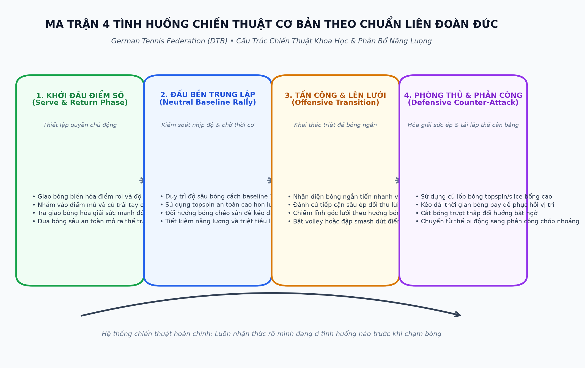
¢ chỉ trong một số trường hợp hiếm hoi, bóng mới có thể được đánh ở tốc độ tối đa, chẳng hạn như bằng một cú đập bóng hoặc một cú vô lê cao; tất cả các cú đánh khác, bao gồm cả cú giao bóng, chỉ có thể được thực hiện ở tốc độ tối ưu dựa trên quy mô của sân và kỹ thuật cá nhân càng phát triển thì — các biến thể chiến thuật càng lớn e tính sáng tạo, chấp nhận rủi ro và tính cạnh tranh tích cực, độc lập với quan niệm cá nhân của tay vợt về trò chơi, là những đặc điểm xác định hiệu suất khi sử dụng đồng thời các chiến thuật hoàn hảo về mặt lý thuyết để đạt được bất kỳ kết quả nào không phải lúc nào cũng có thể hoặc hợp lý; điều quan trọng là cố gắng tìm một giải pháp có tính đến tất cả các yêu cầu cụ thể và có thể đạt được.
Hai thuật ngữ này thường được thay thế cho nhau, vì vậy việc chỉ ra sự khác biệt giữa chúng là rất quan trọng. Trong văn học thể thao, thuật ngữ chiến thuật thường được sử dụng làm tiêu đề chính, trong khi chiến lược là một tiểu thể loại của tiêu đề đó.
Các hành động chiến thuật dựa trên nhận thức và dự đoán điện tử; đánh giá khả năng đạt được bằng cách chọn một trong những hành động có thể thực hiện được.
Nhận thức có thể được chia thành
Cảm nhận sau cú đánh của chính mình:
vị trí trong khi bắn; hướng, tốc độ và vị trí – vị trí xuất phát của đối phương, hướng chạy và sự chuẩn bị cho cú đánh.
Cảm nhận sau cú sút của đối phương:
hướng, vận tốc, độ xoáy và vị trí của quả bóng đang tới; khoảng cách từ chuyển động của điểm tiếp xúc bóng (Point of Contact) và vị trí mới của đối thủ (có thể bằng tầm nhìn ngoại vi).
Với dự đoán, bao gồm việc đoán hoặc đọc trước ý định của đối phương, các điều kiện tiên quyết sau sẽ được áp dụng:
kiến thức về các hành vi thông thường của đối phương trong các tình huống điển hình- kiến thức về thói quen của đối phương và các kiểu hành vi cá nhân.
Những quan sát sau đây là cần thiết để sử dụng kiến thức này để tạo ra kết quả mong muốn
Đặc điểm định hướng:
— vị trí của tay vợt trên
— chuẩn bị cho cú đánh (di chuyển về phía điểm tiếp xúc bóng (Point of Contact), cách cầm vợt, vị trí đặt chân và
— vị trí tại thời điểm bóng được đánh (phía trước hoặc phía sau đường cuối sân, v.v.);
— loại cú đánh (hướng quay
- vị trí của điểm liên lạc (thấp, cao, gần hoặc xa ở một bên, hoặc ở phía trước, bên cạnh hoặc phía sau cơ thể).
Nhận thức trước tiên phải được đánh giá dựa trên kinh nghiệm và kiến thức để lựa chọn các hành động sẽ tuân theo.
Quá trình này có nghĩa là các hành động chiến thuật được kết nối chặt chẽ với quá trình suy nghĩ. Quá trình suy nghĩ trong quần vợt phải đặc biệt nhanh chóng. Nó cũng diễn ra với nhu cầu lớn về thể chất và tâm lý, bởi vì môn thể thao này đòi hỏi những hành động và phản ứng nhanh chóng.
Một khi điều này được nhận ra, việc phân biệt các loại suy nghĩ khác nhau và gán cho chúng những thuật ngữ như chiến thuật và trí thông minh trở nên khả thi.
Suy nghĩ trực quan bao gồm việc nắm bắt thông tin ngay lập tức, thường dưới áp lực thời gian cực độ, và hình thành một quá trình hành động duy nhất, có giới hạn chặt chẽ để đáp ứng với thông tin được xử lý. Ví dụ, trong một cú vô lê vào lưới, bóng có thể được đánh theo cách khiến đối phương bắt nhầm chân. Người thực hiện cú vô lê đã đoán trước được nơi đối phương sẽ chạy, người không thể phản ánh tình hình vì thời gian hạn chế. Do đó, đối thủ không có cơ hội để suy nghĩ về các hành động có thể xảy ra. Thông thường, quần vợt liên quan đến những suy nghĩ và hành động được luyện tập thường xuyên và trở nên tự động. Hầu hết các hành động cá nhân được thực hiện dưới áp lực thời gian đều có thể được xếp vào loại suy nghĩ này.
Bất cứ khi nào có đủ thời gian để lập kế hoạch hành động và cân nhắc chúng với nhau, cho phép tay vợt đi đến một quyết định trong số nhiều khả năng, tư duy tác nghiệp sẽ diễn ra. Các hành động được thực hiện nội bộ trong suy nghĩ của một người để đánh giá tính hiệu quả của chúng trong tình huống nhất định.
Trước khi giao bóng, tay vợt có thể cân nhắc xem liệu một cú đánh nhanh nhưng mạo hiểm có được yêu cầu hay không hoặc liệu xoáy lên nặng có thành công trong việc khiến đối thủ mất cảnh giác hay không. Tư duy hoạt động đề cập đến hành động cá nhân khi không có áp lực thời gian to lớn. Tuy nhiên, tư duy tác nghiệp cũng có thể xuất hiện trong khuôn khổ của một chuỗi hành động khi thời gian là rất quan trọng.
Điều đó có nghĩa là trong một cuộc biểu tình khá dài, tay vợt phải cân nhắc những hành động hoặc thao tác nào mà cuộc biểu tình nên kết thúc để thành công.
Khi một chuỗi hành động như vậy được lồng vào một chuỗi các sự kiện phức tạp không chịu áp lực về thời gian quá mức và khi tay vợt lập kế hoạch hành động (nghĩa là chiến lược) cho toàn bộ trận đấu hoặc nếu chiến lược tổng thể thay đổi vì nó không hiệu quả, thì tay vợt đang sử dụng tư duy chiến lược.
Tư duy trực quan, hiệu quả và chiến lược tạo thành chiến thuật.
Khả năng chiến thuật là yếu tố hạn chế hiệu suất. Chúng cần được điều chỉnh theo mục tiêu cạnh tranh của tay vợt và đặc biệt là hành vi của đối thủ.
Do đó, những khả năng chiến thuật này có thể được minh họa bằng các cấp độ hành động khác nhau, tùy theo nhu cầu tư duy trực quan, tác chiến hay chiến lược.
Tư duy trực quan, hoạt động và chiến lược cũng bao gồm trí thông minh dành riêng cho thể thao. Những khả năng dành riêng cho tay vợt quần vợt được gọi là trí thông minh trong trò chơi. Hình thức thông minh trong trò chơi đơn giản nhất bao gồm việc sử dụng tư duy trực quan để lựa chọn các hành động riêng lẻ nhằm nâng cao mục tiêu cạnh tranh của tay vợt. Ví dụ: một tay vợt có thể cố gắng bắt đối phương mất thăng bằng, dừng một cú vô lê hoặc sử dụng một cú lốp bóng xoáy lên để đánh bại đối thủ đang đứng trên lưới. Tư duy chiến lược và mang tính tác động càng cao thì nhu cầu giải quyết các tình huống mới, giải quyết vấn đề thông qua phân tích và hiểu biết sâu sắc cũng như xoay chuyển tình thế để tìm ra giải pháp phù hợp với bản chất của vấn đề càng lớn.
Suy nghĩ thông suốt các vấn đề khác nhau
_ những hành động có thể dẫn đến việc lựa chọn
_ giải pháp hứa hẹn nhất.
Phần này phải nhắc lại rằng tư duy chiến thuật hoặc đưa ra các hành động chiến thuật thành công phụ thuộc rất nhiều vào chất lượng kỹ thuật của mỗi người. Liên quan đến việc hoạch định chiến lược, điểm mạnh của tay vợt phải được cân nhắc hàng đầu. Nếu những điểm mạnh này không mang lại kết quả như mong muốn thì cần phải xem xét điểm mạnh, điểm yếu và cách suy nghĩ của đối phương. Những tay vợt, theo thời gian, muốn giành chiến thắng trong phần lớn các trận đấu cần phát triển sức mạnh kỹ thuật và cách suy nghĩ của người giao bóng.
_ công cụ hữu hiệu.
Các tình huống chiến thuật cơ bản
Về nguyên tắc, năm chiến thuật cơ bản e trao đổi cú đánh đơn giản:
Điều này thường liên quan đến một cuộc biểu tình từ vạch cuối sân đến vạch cuối sân mà không có lợi thế hoặc bất lợi cụ thể nào cho cả hai tay vợt.
Tay vợt đứng ở hoặc phía trước đường cuối sân và chơi:
— cao và dài so với vạch cuối sân của đối phương (và với
— đâm mạnh vào các góc của
— ngắn và có góc nhọn.
Tay vợt ở vị trí thuận lợi, thường ở phía trước đường cuối sân, và cố gắng sử dụng cú đánh tấn công để vào vị trí đầy hứa hẹn trên lưới hoặc ghi điểm trực tiếp.
e phản công: Một cú tấn công được kiểm soát tốt có thể được sử dụng như một đòn phản công nếu cú tấn công của đối phương yếu hoặc nếu tay vợt rất hiệu quả trong việc đoán trước cú tấn công.
Tay vợt không còn có thể vào vị trí thuận lợi và thực hiện cú đánh có kiểm soát.
Đây thường là trình tự ghi điểm.
Mục tiêu chiến thuật trung tâm, vượt trội
Mục tiêu chiến thuật quan trọng nhất liên quan đến các tiêu chí về không gian và thời gian:
Mục tiêu là hạn chế không gian của đối phương bằng cách chơi ở các vị trí hiệu quả (ví dụ: trên phân giác của góc của những cú trả bóng tốt nhất có thể) cơ hội đặt bóng hiệu quả và ghi điểm.
Tay vợt cũng phải cố gắng, bằng những cú đánh đúng vị trí, buộc đối thủ phải chạy xa—thậm chí ra ngoài giới hạn— từ đó mở rộng không gian chơi và giải phóng nhiều diện tích hơn để chơi.
Mục tiêu là tạo ra ít thời gian nhất có thể để đối thủ hành động. Điều này được thực hiện bằng cách đánh bóng sớm hoặc ở tốc độ cao. Tay vợt cũng phải cố gắng có nhiều thời gian nhất có thể để đưa ra lựa chọn và thực hiện các hành động phù hợp.
Hành vi chiến thuật cá nhân và chung
Dựa trên các điều kiện khác nhau như tâm lý, tính khí, kỹ năng vận động và điều kiện, mỗi tay vợt sẽ phát triển một loạt hành vi chiến thuật riêng.
Một tay vợt có thể có xu hướng đánh bóng dọc biên trong một số tình huống nhất định; một người khác có thể thực hiện một cú sút chéo góc trong tình huống tương tự. Điều này đặc biệt xảy ra khi thời gian ngắn và tay vợt phải hành động bằng trực giác.
Đồng thời, độc lập với các giải pháp cá nhân mà tay vợt có thể chọn trong các tình huống cụ thể, có một số hành vi chiến thuật chung giúp có thể phân loại tay vợt thành bốn nhóm:
1. Tay vợt giao bóng và đánh vô-lê
Chúng được phân biệt bởi các đặc điểm sau:
— cú giao bóng đầu tiên rất mạnh, điểm có thể được ghi trực tiếp hoặc có thể kích động
— quả giao bóng thứ nhất và thứ hai đặt tay vợt trả lại để người giao bóng có thể chơi phần lớn các cú vô lê đầu tiên
— tỷ lệ thành công cao— cảm nhận rất tốt và chặn được các đường chuyền vào lưới của đối phương; chịu áp lực và làm tăng đáng kể khả năng mắc lỗi của tay vợt đó;
— sức mạnh của chân rất tốt kết hợp với khả năng giữ thăng bằng rất phát triển.
Trong lĩnh vực quần vợt đẳng cấp thế giới, nhóm tay vợt này (đặc biệt là hiện được đại diện bởi Edberg), những tay vợt giao bóng và vô lê trên mọi loại bề mặt, liên tục bị thu hẹp lại.
Chúng được phân biệt bởi các đặc điểm sau:
— khả năng chơi giao bóng và đánh vô-lê hoặc từ đường cuối sân, tùy thuộc vào bề mặt sân;
— độ an toàn và độ chính xác cao trong các cú đánh và trả về vạch cuối sân;
— khả năng chơi liên tục ở gần lưới và tiếp xúc bóng thường xuyên ở hoặc trước điểm cao nhất của nó;
— khả năng tấn công các cú đánh ngắn hơn của đối thủ và ghi điểm trực tiếp (người chiến thắng)
— khả năng phối hợp rất tốt và khả năng điều hòa đặc biệt.
Trong quần vợt đương đại, nhóm tay vợt này khá đông dân và là một trong những nhóm thành công nhất trong thi đấu quốc tế. Những cái tên như Becker, lvanisevic, Krajicek, Sampras,
Stick, Novotna, Sabatini, Sukova và nhiều người khác thuộc nhóm này. Điều thú vị là gần như tất cả tay vợt ở thể loại này đều chơi trái tay bằng một tay.
Chúng được phân biệt bởi các đặc điểm sau:
— các cú đánh cơ bản mạnh mẽ và đáng tin cậy ở bên thuận tay và
— khả năng kiểm soát trận đấu từ vạch cuối sân và giữ đối thủ ở dưới
— khả năng chơi ở đường cuối sân và phía trước đường biên và tiếp xúc với bóng thường xuyên nhất có thể tại hoặc trước điểm cao nhất của bóng (bao gồm cả
— độ chính xác cao ngay cả khi bóng di chuyển ở tốc độ cao;
— chơi các góc độ rất
— khả năng tấn công mạnh mẽ
— khả năng đánh vô-lê
— tốc độ tuyệt vời và cảm giác thăng bằng phát triển tốt.
Nhóm tay vợt này ngày càng lớn hơn, và đặc biệt, thế hệ tay vợt trẻ nhất có xu hướng chơi kiểu này. Những tay vợt như Graf, Hingis, Huber,
Pierce, Sanchez-Vicario, Agassi,
Chang, Courier, Kafelnikov, và Medvedev ủng hộ quan sát đó. Ngược lại với nhóm các vận động viên toàn sân, hầu hết các vận động viên này, ngoại trừ Graf, đều chơi trái tay bằng hai tay.
Những tay vợt này được phân biệt bởi các đặc điểm sau:
— những cú đánh xoáy lên mạnh từ đường cuối sân ở phía thuận tay và
— chơi ở vị trí khá xa
— cách chơi đáng tin cậy và đặc biệt nhất quán bằng cách sử dụng căn cứ— sử dụng ít đòn tấn công và
— khả năng chạy tốt và
— rất nhiều kiên nhẫn và kỷ luật tự giác.
Những tay vợt ở hạng mục này hiếm khi gặp phải ở đỉnh cao của giải đấu quốc tế, nhưng trước đây bao gồm Borg và Vilas. Tất nhiên, một số tay vợt thay đổi từ hạng này sang hạng khác theo thời gian hoặc là những trường hợp ở ranh giới, chẳng hạn như Bruguera. Bề mặt sân với tốc độ khác nhau cũng buộc tay vợt phải sửa đổi chiến thuật của mình cho phù hợp.
Trong tương lai, quần vợt đẳng cấp thế giới rõ ràng sẽ bị thống trị bởi các tay vợt trên toàn sân và vạch cuối sân.
Không phụ thuộc vào việc tay vợt thuộc loại nào, việc thiết lập một tiêu chí có thể được sử dụng để đánh giá tất cả các loại hành vi chiến lược và chiến thuật là điều bắt buộc.
Tiêu chí này liên quan đến chất lượng chiến thuật, bao gồm hai
¢ sự lựa chọn đúng đắn về khung thành không gian trên phần sân đối phương trong bất kỳ tình huống cụ thể nào (cú sút xa đến cuối sân, tạt bóng ngắn, v.v.) với đường bay bóng đi kèm (nghĩa là nhanh, chậm, cao hoặc thấp).
e lựa chọn kiểu cú đánh phù hợp với mục tiêu không gian đã chọn và quỹ đạo mong muốn của quả bóng (ví dụ: xoáy lên, cắt lát, thả cú đánh hoặc lốp bóng).
Khi đánh giá chất lượng chiến thuật của một cú đánh hoặc toàn bộ hành động, các cân nhắc kỹ thuật về vị trí vai, uốn cong cánh tay, động tác bằng chân, v.v., không được phát huy.
Điều quan trọng là sự lựa chọn tinh thần về hướng, tốc độ, kiểu đánh và các yếu tố khác trong tình huống áp dụng.
Với những cú đánh tấn công, các tay vợt có khả năng kiểm soát rất tốt. Các cú đánh được thực hiện có chủ ý, có mục đích và được thực hiện ở tốc độ tối đa. Những cú đánh này có thể được thực hiện từ bất kỳ vị trí nào trên sân bằng cách sử dụng tất cả các kỹ thuật và biến thể cú đánh có thể có. Tay vợt có thời gian cần thiết để phân tích tình hình và đưa ra quyết định.
Họ không bị ép buộc vào một phạm vi hành động hạn chế bởi tình huống hoặc đối thủ. Tay vợt có thể hành động theo ý muốn của mình. Sự thành công trong hành động của họ phụ thuộc hoàn toàn vào chất lượng của quyết định chiến thuật và việc thực hiện nó về mặt kỹ thuật.
Các cú đánh phòng thủ không được kiểm soát tối ưu. Một vị trí cú đánh vụng về, một cú đánh khó hoặc vị trí của đối thủ sẽ làm giảm đáng kể các lựa chọn của tay vợt. Thông thường, chỉ có thể thực hiện được một hành động từ quan điểm kỹ thuật hoặc chiến thuật. Tay vợt phụ thuộc vào tình hình và chỉ có thể phản ứng.
Do đó, mục tiêu chiến thuật phải liên quan đến việc đưa đối thủ thường xuyên nhất có thể vào những tình huống mà các cú đánh phòng thủ là cách duy nhất; điều này cho phép tay vợt thực hiện nhiều cú đánh tấn công nhất có thể. Yếu tố quyết định để đạt được mục tiêu này chính là chất lượng kỹ thuật của các cú sút kết hợp với tốc độ tối ưu và độ chính xác cao.
Ý Nghĩa Của Cá Nhân
Bằng chứng thống kê mở rộng chứng minh rằng các khái niệm về điểm quan trọng (điểm lớn) và tỷ số quyết định (trận thứ bảy) hầu như không có bất kỳ cơ sở nào trên thực tế. Tay vợt ghi được số điểm lớn nhất trong các điểm quan trọng không tự động trở thành người chiến thắng cuối cùng. Những tay vợt tin vào tỷ số thuận lợi hoặc bất lợi sẽ tự đặt mình vào áp lực không cần thiết. Họ coi điểm số không thuận lợi như một mối đe dọa và phản ứng một cách thận trọng, lo lắng, thụ động, căng thẳng hoặc thiếu tự tin và tập trung. Với tỷ số thuận lợi, họ chơi quyết tâm, nghị lực, quyết liệt, tập trung cao độ và chấp nhận rủi ro hợp lý. Hầu hết các trận đấu đều
¢ đạt đa số tuyệt đối
¢ có thể tích lũy số lượng lớn nhất của chuỗi ba điểm trở lên liên tiếp.
Do đó, mọi điểm đều quan trọng, bất kể điểm số là bao nhiêu. Tay vợt không nên cho điểm một cách nhẹ nhàng mà hãy cố gắng hết sức trong mỗi lượt chơi để ghi từng điểm như thể đó là lần cuối cùng.
Mối quan hệ giữa chiến thuật và kỹ thuật
Tay vợt chỉ nên thực hành những kỹ thuật mà họ có thể nắm vững về mặt kỹ thuật. Điều này có nghĩa là các hành động chiến thuật và lập kế hoạch chiến lược phải luôn hoạt động trong khuôn khổ các kỹ năng kỹ thuật sẵn có. Cùng với sự phát triển của thời gian và kỹ thuật, chiến thuật cũng có thể được hoàn thiện từng bước một.
Điều kiện tiên quyết đầu tiên để ghi điểm trong trò chơi là sự an toàn. Ở bất kỳ cấp độ chơi nào, đấu thủ nào mắc ít lỗi bắt buộc hơn thường sẽ thắng. Điều này có nghĩa là với mọi quyết định, với mọi hành động chiến thuật, yếu tố độ tin cậy phải được đặt lên hàng đầu. Điều này liên quan đến sự an toàn liên quan đến tốc độ bóng, vị trí và khả năng chấp nhận rủi ro của tay vợt.
Việc nhấn mạnh vào sự an toàn không cần thiết phải cực đoan đến mức loại trừ mọi rủi ro. Ngược lại, nếu không có một số rủi ro được tính toán, tay vợt khó có thể gây bất ngờ cho đối thủ hoặc gây áp lực.
Rủi ro được tính toán biểu thị khả năng tưởng tượng trong khuôn khổ tiềm năng kỹ thuật của tay vợt và tình huống nhất thời trên sân.
Những quyết định thiếu cân nhắc, vội vàng hoặc hấp tấp sẽ dẫn đến rủi ro. Do đó, mọi hành động chiến thuật phải được lập trình để các cú đánh và diễn biến trận đấu được tính toán kỹ lưỡng và thành công. Việc giành được một điểm không nên phụ thuộc vào cơ hội. Đúng hơn, nó phải được thực hiện một cách có hệ thống và phù hợp với tình huống, vị trí của tay vợt và hoàn cảnh nhất thời. Vì vậy tay vợt cần phải rèn luyện tính kiên nhẫn.
Sự tập trung là yếu tố quyết định không chỉ để thực hiện kỹ thuật tốt nhất mà còn cho các bước đi chiến thuật thành công. Trong một cuộc giao tranh, tay vợt phải tập trung vào bóng và tránh bị phân tâm.
Sự thay đổi biểu thị tính linh hoạt trong việc lập kế hoạch chiến lược đã được thiết lập trước đó thay vì sự thay đổi giữa các hành vi chiến thuật khác nhau. Một kế hoạch hoạt động tốt khi bắt đầu trận đấu có thể mất hiệu quả nếu được sử dụng với quyết tâm cứng đầu và không đa dạng. Nếu không có những khoảnh khắc bất ngờ, tay vợt cuối cùng sẽ trở nên trong suốt; do đó đối thủ sẽ nắm bắt được kế hoạch trò chơi của tay vợt.
Điều này có nghĩa là những thay đổi nhất định phải được thấy trước ngay từ đầu trong quá trình lập kế hoạch chiến lược.
Ngoài ra, tay vợt có thể thay đổi toàn bộ khái niệm chiến lược của mình nếu nó không còn hiệu quả.
Kỷ luật tự giác chắc chắn là điều kiện tiên quyết cơ bản quan trọng nhất để chơi ổn định. Điều này đặc biệt áp dụng cho sự căng thẳng bên trong (sự lo lắng) và áp lực bên ngoài do đối thủ gây ra.
Kỷ luật tự giác liên quan đến cả việc thực hiện một cú đánh cá nhân cũng như nội dung chính xác của một kế hoạch chiến lược.
Các yếu tố chiến thuật cơ bản
Những điều này liên quan đến các điều kiện tạo điều kiện thuận lợi cho các hành động chiến thuật.
Một vị trí sẵn sàng chính xác là điều kiện tiên quyết để khởi đầu đúng đắn và nhanh chóng theo bất kỳ hướng nào.
Các vị trí sẵn sàng khác nhau tương ứng với các tình huống chơi điển hình khác nhau và những vị trí này phải được giả định theo yêu cầu. Về cơ bản, điều này liên quan đến việc giao bóng, trả bóng, chơi cơ bản và chơi trên lưới.
Khi giao bóng, tay vợt đứng giữa
1 foot và 1,5 foot (0,3 đến 0,5 m) về bên trái hoặc bên phải của vạch giữa của vạch cuối sân, tùy thuộc vào điểm mà chúng thường giao bóng.
Họ tiếp cận điểm giữa nhiều hơn nếu muốn nhắm mục tiêu điểm
7 (trong hình 50). Nếu cú giao bóng được đặt xa hơn (như ở điểm 2), vị trí sẵn sàng tương ứng sẽ được dịch chuyển ra phía ngoài.
Tay vợt phải tiếp tục sử dụng vị trí đã chọn cho mọi hướng để đối thủ không thể biết trước cú đánh sẽ đi đến đâu.
Thông thường, tay vợt nên đợi giao bóng khoảng 1 yard (1 m) phía sau đường biên ngang và ở giữa góc (xem vị trí P, hình 51) của những cú giao bóng tốt nhất có thể. Vị trí này có thể được dịch chuyển sang trái hoặc phải, lùi hoặc tiến, tùy theo khả năng kỹ thuật và phản ứng của đối phương. Tốc độ và góc của cú đánh sắp tới cũng có thể được thay đổi để cho phép trả bóng hiệu quả nhất.
Tay vợt quay lại phải di chuyển về phía trước khi người giao bóng ném bóng lên và thực hiện tách bước khi người giao bóng chạm bóng. Điều này cho phép tay vợt phản ứng hiệu quả theo bất kỳ hướng nào.
Vị trí cho trận đấu cơ bản
Một tay vợt chuyển động liên tục thường ở phía sau đường biên khoảng 1 đến 3 feet (0,5 đến 1 m). Vị trí lùi xa hơn khiến việc tiếp cận các cú đánh ngắn và đánh chúng ở điểm cao hơn hoặc ở điểm cao nhất khó thực hiện hơn.
Như hình 52 cho thấy, một tay vợt đợi cú trái tay (Backhand) của đối phương sau cú sút chéo từ góc thuận tay khoảng 1,5 feet (0,5 m) ở bên phải điểm giữa vạch cuối sân. Sau khi thực hiện một cú sút dọc biên, vị trí lý tưởng để bao quát sân sẽ là hơn 1 foot (0,5 m) về bên trái của đường đó (hình 53). Điểm giữa của góc trả bóng tốt nhất có thể của tay vợt B đi qua điểm P. Điều đó tạo ra con đường ngắn hơn hoặc dài hơn đến vị trí P tương ứng, vị trí tốt nhất để bao quát phần sân của mình. May mắn thay, như đã được xác định bằng thực nghiệm, sau một cú sút dọc biên, việc chờ đợi cú trả bóng ở điểm giữa của vạch cuối sân là đủ.
Ngoại trừ khi thi đấu đánh đôi (Doubles), việc chiếm một vị trí trên lưới không hề dễ dàng. Tay vợt phải chiến đấu để giành được vị trí đó. Điều này có thể được thực hiện bằng cách đi theo quỹ đạo của cú đánh tấn công hoặc cú giao bóng vào lưới. Ở đó, tay vợt cố gắng đảm nhận vị trí có cơ hội lớn nhất để che chắn sân khỏi những cú vô-lê hoặc lốp bóng của đối phương (xem hình 54 và 55). Điều đó sẽ liên quan đến tất cả các vị trí dọc theo B-P, đường phân giác của góc trong trường hợp cú đánh tấn công chéo sân hoặc dọc theo B-P, trong trường hợp tấn công dọc biên.
Đối với một cú vô lê, một tay vợt nên di chuyển lên lưới càng gần càng tốt vì sân dễ che chắn hơn từ cự ly gần. Khoảng cách từ lưới sẽ khác nhau rất nhiều giữa các cá nhân. Nó được xác định bởi thời gian phản ứng, kích thước và sức mạnh chân của tay vợt vì ngay cả những cú lốp bóng cũng cần được che chắn.
Thí sinh phải ở vị trí sẵn sàng (hoặc vị trí bàn xoay) trước khi đối phương đánh cú bắt lưới (Volley). Vì vậy, đặc biệt với một cuộc tấn công từ cú giao bóng, nên chờ bóng xa hơn một chút về phía sau, thay vì lao về phía trước quá vội vàng.
Khi tay vợt thấy mình bị áp lực hoặc ở trong tình thế khó khăn, họ nên thực hiện bất kỳ cú đánh nào mà họ thành thạo.
e để chơi ở vạch cuối sân và trên lưới, các cú đánh chéo sân an toàn; nhịp độ hành trình có thể kiểm soát được; khoảng cách 3 feet (1 m) từ đường biên và qua lưới; sử dụng kiểu đánh quen thuộc nhất, nói cách khác, tránh những phối hợp đánh đầy rủi ro; giữ quả giao bóng đầu tiên trên sân bằng cách chú ý đến vị trí và khoảng cách; một cú đánh có kiểm soát sẽ cải thiện độ tin cậy của cú đánh.
Tính kỷ luật tự giác được đề cập ở trên rất quan trọng trong những trường hợp này. Chấp nhận rằng trong một số tình huống, một tay vợt chỉ có thể đạt được thành công bằng cách vô hiệu hóa một đường chuyền (chẳng hạn như trả bóng lên cao) là điều không dễ dàng. Đáp lại áp lực bằng phản áp là rất thú vị, nhưng nó thường quá mạo hiểm và sai lầm về mặt chiến thuật.
Sử dụng sức mạnh của chính mình
Hầu hết tay vợt đã phát triển một cú đánh cụ thể hiệu quả hơn nhiều so với những cú đánh khác và đó có thể là một cú đánh chiến thắng thực sự. Sức mạnh này, chẳng hạn như cú công bóng thuận tay, nên được sử dụng thường xuyên nhất có thể. Do đó, tay vợt nên tránh sử dụng mặt yếu—trong trường hợp này là trái tay—bất cứ khi nào có thể.
Tay vợt nên tập trung vào điểm yếu của đối thủ. Điều này áp dụng cho lối chơi cơ bản, giao bóng và thậm chí cả cú vô-lê (nhằm vào bên cú bắt lưới (Volley) yếu hơn) và cú vô lê, nên được thực hiện ở phía cú bắt lưới (Volley) yếu hơn.
Đương nhiên, điểm yếu chỉ nên được nhắm tới nếu tình huống có thể xảy ra và các yêu cầu kỹ thuật riêng lẻ được đáp ứng để thực hiện cú đánh một cách hoàn hảo.
Nếu nghi ngờ hoặc bị áp lực, hãy luôn sử dụng cú đánh đáng tin cậy nhất!
Mọi cơ hội xuất hiện đều phải được nắm bắt. Trong một số trường hợp nhất định, điều đó có nghĩa là tay vợt phải thay đổi chiến thuật trong thời gian ngắn. Tay vợt cuối sân phải lên lưới thực hiện cú sút ngắn, yếu của đối phương để thực hiện cú vô lê. Tuy nhiên, nên thận trọng khi sử dụng. Một đường bóng ngắn được chơi đều đặn có thể là một mưu mẹo để dụ một tay vợt vào lưới để đối phương có thể sử dụng một cú đánh mạnh chẳng hạn như một cú vô-lê.
Nếu đối thủ thích nghi với các kiểu chơi nêu trên, tay vợt có thể thay đổi hướng, nhịp độ, độ cao và thậm chí cả kiểu đánh. Tuy nhiên, trong mọi trường hợp, tay vợt không nên thay đổi chỉ vì mục đích đa dạng. Đúng hơn, nên sử dụng sự biến đổi để làm đảo lộn thời gian và nhịp điệu của đối thủ.
Chương 7: Mối Tương Quan Giữa Kỹ Thuật & Khả Năng Ứng Biến Chiến Thuật
Chapter 7: Technique-Tactics Synthesis: Consistency, Placement, and Tempo
Trong mọi tình huống, tay vợt phải luôn sử dụng cú đánh hứa hẹn mang lại kết quả tốt nhất. Điều đó có nghĩa là nên chọn một cú vô-lê trước một cú lốp bóng nếu cú lốp bóng có 80% cơ hội thành công so với 50% của cú lốp bóng.
Bám Sát Chiến Thuật Thành Công
Nếu một tay vợt thành công với một kỹ thuật đánh cụ thể như xoáy lên hoặc một hệ thống lối chơi (chẳng hạn như dừng bóng), thì việc tiếp tục chơi theo cách đó thường là một ý tưởng hay. Trước một chiến thắng sắp xảy ra, việc chống lại nỗ lực đưa ra các biến thể thường rất khó khăn. Nói cách khác, đừng bao giờ thay đổi một trò chơi đang thắng. Điều này cũng áp dụng khi chiến thuật thành công bao gồm sự thay đổi liên tục. Trong trường hợp đó, hãy tiếp tục thay đổi mọi thứ.
Khi sử dụng cú lốp bóng hoặc chọn bên, tay vợt nên xem xét vị trí của mặt trời. Một tay vợt có thể được yêu cầu giao bóng dưới ánh mặt trời. Có mặt trời ở phía sau tay vợt sẽ tốt hơn cho một cú lốp bóng hoặc một đòn tấn công. Nên thận trọng khi cố gắng đập vào mặt trời. Nếu nghi ngờ, để bóng nảy lên sẽ tốt hơn.
Một tay vợt không phải là người hay xông lưới nên chơi chủ yếu từ đường cuối sân khi gió mạnh.
Bóng không được quá thấp hoặc quá dài, đặc biệt là khi có gió thuận mà nên được đánh ở giữa sân. Gió ngược sẽ yêu cầu đánh bóng mạnh hơn.
Nếu cần phải đánh một quả bóng đang chuyền theo hướng gió ngược thì bạn nên lựa chọn một cú sút chéo góc.
Chỉ sử dụng một cú sút dọc theo chiều gió và một cú lốp bóng chỉ vào hướng gió.
Rất khó để tung cú vô lê và đập tốt trong gió. Bóng có thể di chuyển nhanh hơn hoặc chậm hơn (nói cách khác là ngắn hơn). Khi có gió ngược, tay vợt đôi khi phải chuẩn bị sẵn sàng để thực hiện một cú vô-lê ở ngoài giới hạn tầm với của họ và đôi khi ở gần cơ thể họ hơn dự kiến.
Không còn nghi ngờ gì nữa, bề mặt mềm, chậm có tác dụng nâng cao hiệu ứng của một cú cắt (khiến bóng nảy phẳng hơn) hoặc một cú đánh rơi (nơi bóng nảy thấp hơn).
Ngoài ra, cú đánh đáng sợ của người chiến thắng sẽ chỉ có hiệu quả một phần.
Chiến lược cơ bản có một số lợi thế trong trường hợp này. Chơi giao bóng và đánh vô-lê nguy hiểm hơn vì đối phương có nhiều thời gian hơn để đánh vô-lê đúng vị trí. Mặt khác, trên bề mặt cứng, nhanh, nơi bóng nảy cao hơn, xoáy lên và cú cắt tấn công (nơi bóng nảy thấp hơn) bắt đầu giống với những cú đánh giao bóng và người ghi điểm. Ở đây lợi thế thuộc về những tay vợt tích cực và phản ứng tốt.
Chiến thuật cơ bản được áp dụng cho một số cú đánh hoặc cơ hội tiến triển nhất định nảy sinh nhằm tối đa hóa lối chơi hiệu quả trong bất kỳ kiểu đánh bóng nào. Phần tiếp theo sẽ xem xét một số tình huống lặp lại.
Loại, nhịp độ, hướng và khoảng cách của cú giao bóng quyết định chất lượng của cú giao bóng. Phần lớn các cú giao bóng nên hướng vào phía mà người ta dự đoán sẽ có cú trả bóng yếu hơn. Tay vợt nên giao bóng bằng bất kỳ kỹ thuật nào mà họ đã hoàn toàn thành thạo, đặc biệt là khi có áp lực (ví dụ: vì điểm số). Vì vậy, một cú giao bóng đầu tiên dài, đúng vị trí và khá chậm luôn được ưa chuộng hơn một cú giao bóng mạo hiểm hơn. Điều này thậm chí còn có thể áp dụng nhiều hơn cho cú giao bóng thứ hai, được chơi với độ xoáy đáng kể.
Hướng của cú giao bóng có thể ảnh hưởng đến hướng trả bóng dự kiến. Hình 56 cho thấy như sau. Đường được bao phủ bởi người giao bóng A sau khi giao bóng hầu như không thay đổi chút nào; điều này không phụ thuộc vào việc quả giao bóng hướng đến điểm 7 hay 2. Kích thước của khu vực được bao quanh bởi các đường a và b, hoặc a, và b, hoặc a và b, là gần như nhau. Tuy nhiên, mối quan hệ giữa a và a hoặc b và b đã thay đổi đáng kể.
Với một cú giao bóng đến điểm 7, người giao bóng có ít diện tích hơn để thực hiện cú thuận tay (Forehand) và nhiều hơn một chút với cú trái tay (Backhand). Tuy nhiên, với cú giao bóng đến điểm 2, khu vực cần che bằng cú thuận tay (Forehand) sẽ lớn hơn (b,) và khu vực cần che bằng cú trái tay (Backhand) sẽ nhỏ hơn (a,). Người đánh trái tay cũng có thể bị buộc phải đối phó với bên mạnh hơn của người giao bóng trong một số tình huống nhất định.
Ngoài một cú giao bóng hướng về phía thuận tay hoặc phía trái tay, còn có khả năng giao bóng trực tiếp vào cơ thể đối phương.
Một số tay vợt, đặc biệt nếu họ không đặc biệt nhanh nhẹn, gặp khó khăn với những quả bóng nhắm thẳng vào cơ thể họ. Đó là lý do tại sao cú đánh này phải luôn là một phần trong kho vũ khí của một tay vợt giỏi.
Một cú giao bóng thẳng (không có xoáy ngang (Sidespin)) chỉ có hiệu quả khi giao bóng nhanh. Do đó, nó chỉ nên được sử dụng như lần giao bóng đầu tiên.
Cú giao bóng thẳng có hiệu quả cả bên ngoài lẫn bên trong.
Trong trường hợp trước, nó buộc đối phương phải rời khỏi sân. Nhiều tay vợt cố gắng đánh quân át bằng bóng bên trong vì lưới thấp hơn ở giữa và quỹ đạo ngắn hơn.
Những cú giao bóng hướng ra các góc bên ngoài có thể được thực hiện ngắn hơn một chút hoặc nhiều hơn về phía bên ngoài.
Tuy nhiên, một cú giao bóng vào trong, đặc biệt là một cú giao bóng nhằm vào đối phương, nên được thực hiện càng lâu càng tốt, tức là gần với đường giao bóng. Điều đó làm cho việc quay trở lại bên trái hoặc bên phải càng khó khăn hơn.
Trên sân đất, giao bóng cắt lát thường chỉ được sử dụng như quả giao bóng thứ hai. Mặt khác, trên các sân nhanh (sân cứng, trải thảm, v.v.), làm nổi bật đặc điểm nảy phẳng, nó cũng thường xuyên được sử dụng làm quả giao bóng đầu tiên.
Điều này đặc biệt áp dụng cho giao bóng từ bên phải ở phía thuận tay, mở rộng phần sân đối phương hơn là giao bóng thẳng. Là một biến thể, cú giao bóng có thể được thực hiện từ bên phải vào bên trong vì theo quan điểm của người thuận tay phải, cú đánh sẽ cong về phía cơ thể đối phương. Điều này có thể tạo ra vấn đề khi đối thủ cố gắng kiểm soát cú trả bóng.
Cú giao bóng xoáy lên (giao bóng) có giá trị không thể đánh giá được như một cú giao bóng thứ hai an toàn vì nó dọn lưới cao hơn giao bóng cắt và giao bóng thẳng. Nó đặc biệt hiệu quả trên mặt sân cứng, giúp làm nổi bật độ nảy của bóng. Nó buộc đối phương phải thực hiện những cú trái tay (Backhand) cao, khó về mặt kỹ thuật hoặc phải vào thế phòng thủ ở xa đường cuối sân.
Cú trả bóng đã trở thành cú đánh quan trọng nhất trong quần vợt. Trong quần vợt đỉnh cao, break thường dẫn đến thắng một set. Vì cú trả bóng luôn là một phản ứng đối với quả giao bóng của đối phương nên việc nhận ra ý định của đối phương càng nhanh càng tốt để đáp trả là điều cần thiết.
Để đảm bảo một vị trí sẵn sàng tốt cho cú trả bóng—điều kiện tiên quyết để trả bóng hiệu quả—tay vợt phải quan sát kỹ đối thủ ngay trước khi giao bóng. Điều này bao gồm việc ném bóng cũng như vị trí của đối phương.
Nếu đối phương sút từ bên phải và gần điểm giữa, thì tay vợt nên di chuyển đến gần giữa để che bóng hiệu quả hơn về phía trái tay.
Trong một số trường hợp nhất định, đối phương có thể bị buộc phải giao bóng ở một góc cụ thể (đặc biệt là với quả giao bóng thứ hai). Điều này giả định rằng tay vợt muốn kích động một cú giao bóng từ bên phải sang phía thuận tay mạnh. Trong trường hợp đó, tay vợt rời khỏi sân giao bóng ở bên phải với tối đa 2/3 không che chắn bằng cách đảm nhận một vị trí. xa hơn về bên trái bên cạnh vị trí sẵn sàng bình thường. Ngay cả khi đối thủ tiếp tục cố gắng giao bóng về phía bên trái tay bị hạn chế chặt chẽ, điều này gây ra vấn đề ngay cả đối với những tay vợt giỏi, tuy nhiên, phần lớn các cú giao bóng sẽ rơi vào phía thuận tay mạnh.
Với động tác này, tay vợt vẫn phải cảnh giác với cú giao bóng hướng ra ngoài, về phía mạnh một cách có chủ ý. Đối thủ có kinh nghiệm sẽ giao bóng đến điểm đó nhằm buộc tay vợt lùi về giữa, về vị trí sẵn sàng bình thường.
Trong một quả giao bóng rất tốt, thường là một kết quả tích cực nếu đối phương không giành được điểm giao bóng trực tiếp. Do đó, việc trả giao bóng tốt phải an toàn: không quá phẳng (có tính rủi ro) và tốt nhất là chơi bên kia sân để ngăn đối phương lao vào lưới.
Một giải pháp thay thế thích hợp sẽ là lốp bóng nếu đối thủ vẫn ở vạch cuối sân sau khi giao bóng.
Đối phương giao bóng càng khó và càng có ít thời gian để thực hiện cú đánh trả về, thì việc sử dụng cú trả bóng ngắn và chặn cú đánh càng được khuyến khích.
Có một số khả năng có thể thực hiện việc hoàn trả. Nếu người giao bóng tạm dừng ở vạch cuối sân thì nên quay lại vạch cuối sân trong thời gian dài. Điều đó buộc phải thực hiện cú đánh tiếp theo từ phía sau đường cuối sân. Nó loại trừ nguy cơ trước mắt của một đòn tấn công đặc biệt hung hãn. Nếu người giao bóng lên lưới, việc quay trở lại đường dây sẽ có hiệu lực.
Điều này buộc người giao bóng phải căng đến mức giới hạn và khiến cho việc bắn trở nên khó khăn hơn nhiều.
Tuy nhiên, những khoản lợi thế này cũng có rủi ro. Nếu thực hiện không đúng cách, họ sẽ để trống sân cho một cú vô lê chéo.
Cú trả bóng bằng chân của kẻ tấn công phải luôn là một phần trong kế hoạch của một tay vợt, đặc biệt vì theo quan điểm của một tay vợt trên lưới, nó tạo thành một cú trả bóng đặc biệt khó xử.
Cú lốp bóng cũng là một ví dụ thay thế.
Một cú giao bóng thứ hai yếu của đối phương nên được coi như một cú đánh cơ bản thiếu hụt: như một cơ hội để tấn công hoặc một cơ hội để gây áp lực. Trong kiểu trả bóng này, tay vợt tiến lên một hoặc hai bước — có thể né cú trái tay — đánh bóng mạnh vào góc, và tùy theo tình huống, có thể lùi lại hoặc theo cú sút vào lưới.
Các biến thể có thể liên quan đến việc giảm lợi thế, điều này cũng có thể rất hiệu quả. Ngay sau khi giao bóng thứ hai yếu, đối thủ sẽ thấy rất khó để có được một cú đánh rơi tốt.
Lối chơi cơ bản chiếm ưu thế trên sân đất. Điều này giải thích tại sao lối chơi cơ bản lại có ý nghĩa đặc biệt ảnh hưởng đến việc áp dụng chiến thuật của nó.
Có rất nhiều tình huống xảy ra khi việc trả bóng lại an toàn là đúng về mặt chiến thuật. Chúng bao gồm:
¢ khi đối phương đặt bóng xa vào các góc; e khi đối phương đánh bóng dài và ở đường cuối sân;
¢ khi nhịp độ của đối phương gây áp lực lên tay vợt;
¢ khi đối thủ thiếu kiên nhẫn có thể bị xúi giục thực hiện e khi đối thủ không kiên cường hoặc tự tin với bóng.
Mục tiêu của các cú đánh cơ bản an toàn
¢ giữ đối phương lùi lại;
¢ khiến đối phương thực hiện
¢ làm mệt mỏi những đối thủ không gây áp lực lên đối thủ.
Hướng an toàn là ngang qua
¢ lưới thấp hơn ở e đường chéo của đường biên quần vợt, do đó, các cú đánh dài hơn e khu vực chơi an toàn gần như bằng nhau ở cả hai bên (với các cú đánh dọc theo đường biên, chỉ
° thực hiện cú trả bóng sau một cú sút chéo góc dễ dàng hơn (xem hình 52 và 53).
Như có thể thấy trong các hình minh họa ở trang 60, khoảng cách từ A, nơi bóng được đánh, đến vị trí P tối ưu để che sân ~ sau một cú sút chéo góc ngắn hơn đáng kể so với khoảng cách đến vị trí tương ứng để một quả bóng được đánh dọc theo đường biên. Việc tiết kiệm thời gian đặc biệt quan trọng khi tay vợt phải chịu áp lực từ đối thủ.
Chiều dài cú đánh, Chiều cao của
Quỹ đạo và tốc độ bắn
Bóng phải /ong để giữ đối phương ở đường cuối sân. Nó là ong khi nó
_ nảy trong vùng lân cận của đường cuối sân để đối thủ không tận dụng được bất kỳ cơ hội nào sẽ không thể thực hiện lại cú đánh đó như một cú đánh tấn công (ví dụ: từ lưới).
Độ dài đạt được bằng cách cố gắng phát lại ở cùng độ cao và
_ ở cùng tốc độ hoặc tốc độ bắn cao hơn, những quả bóng luôn rơi quá ngắn, nảy ở giữa sân.
Vì phần này thảo luận về các cú đánh cơ bản an toàn nên độ dài của cú đánh phải được kiểm soát cẩn thận về chiều cao. Sự kết hợp thích hợp giữa chiều cao và chiều dài (tùy thuộc vào kiểu đánh) được xác định tốt nhất trong quá trình luyện tập. Nên chơi bóng dài, an toàn
3 đến 6 feet (1 đến 2 m) trên lưới và không gần hơn 3 feet (1 m) trước đường cuối sân để tránh chạm đất ngoài đường biên. Đồng thời, nó phải nảy ra phía sau giữa sân ít nhất 3 feet (1 m). Hình 57 cho thấy tại sao điều đó lại đặc biệt quan trọng. Không chỉ góc sút tăng lên khi tay vợt đến gần lưới mà khoảng cách mà tay vợt phải chạy sang trái hoặc phải trên đường cuối sân cũng tăng lên. Thay vì ba hoặc bốn bước chạy sang trái hoặc phải khi bóng được đánh từ A, tay vợt phải thực hiện năm bước trở lên khi bóng đến từ A hoặc A3.
Mặc dù về mặt lý thuyết, mọi kiểu đánh đều đáng tin cậy như nhau, nhưng tay vợt nên chọn cú đánh mà họ thành thạo hoàn toàn nhất để có cú đánh cơ bản an toàn.
Cú đánh cơ bản “Tấn công” mà việc trả bóng lại một cách tấn công (tức là nhanh) và chấp nhận một mức độ rủi ro nhất định là có lợi về mặt chiến thuật.
¢ khi đối thủ đang chơi e khi đối thủ có điểm yếu đáng kể về trái tay e khi tay vợt có cơ hội chạy vòng qua người yếu hơn e khi đối thủ chậm.
Mục tiêu của cú sút cơ bản nhanh e là ép đối thủ ra khỏi e khiến đối phương mắc lỗi do chơi nhanh; e tấn công đối thủ vào e để ghi điểm trực tiếp.
Đặc điểm quan trọng nhất của cú đánh là tốc độ. Tay vợt cố gắng đánh bóng nhanh và sử dụng tốc độ để gây áp lực lên đối thủ. Một mức độ rủi ro nhất định phải được chấp nhận. Với kiểu chụp này, việc xem nó hoạt động tốt như thế nào là rất quan trọng.
Kiểu tiếp cận này làm cho
~ chỉ có ý nghĩa nếu mối quan hệ giữa tốc độ bắn (liên quan đến rủi ro) và thành công (ghi điểm) diễn ra thuận lợi. Nếu không, nên giảm tốc độ bắn, vì những cú đánh không kiểm soát hoặc quá nhanh sẽ là những cú đánh kém.
Chiều cao và tốc độ của cú sút có mối liên hệ chặt chẽ với khoảng cách.
Đương nhiên, những đường bóng dài và nhanh luôn được mong muốn. Tuy nhiên, một cú sút chéo góc ngắn ra bên ngoài cũng có thể rất hiệu quả.
Không thể đề xuất một hướng bắn cụ thể. Một tay vợt sút vào góc không được bảo vệ, vào điểm yếu hoặc ngược hướng chạy của đối phương (về phía sai chân). Điều đó có thể được thực hiện bằng một quả tạt hoặc một quả bóng dọc biên.
Những cú đánh thay đổi hướng hoặc những cú đánh mà bóng được đánh theo hướng khác với hướng mà nó bay tới, có thể rất thành công. Tuy nhiên, chúng phải được thực hiện rất cẩn thận và được phát triển thông qua đào tạo vì chúng rất khó.
Mặc dù về mặt lý thuyết, mọi kiểu đánh đều có thể được thực hiện một cách tấn công (tức là nhanh), nhưng kiểu đánh nên được chọn cho một cú đánh cơ bản tấn công là kiểu mà tay vợt đã thành thạo hoàn toàn nhất. Ở đây phải kể đến cú thuận tay (Forehand) từ góc trái tay, ngay cả khi cú trái tay (Backhand) và thuận tay về cơ bản là tốt như nhau theo các quan sát chiến thuật trong phần này. Một tay vợt nhanh nhẹn, di chuyển bằng chân tốt và thích chơi thuận tay nên tận dụng mọi cơ hội để sử dụng cú đánh này, cú đánh này rất phù hợp với lối chơi tấn công. Điều này cho phép tay vợt gây áp lực lớn lên phía trái tay của đối phương cũng như tung ra những cú đánh dọc biên về phía thuận tay dễ bị tổn thương hơn.
cú sút tấn công dài và được chọn đúng vị trí, tay vợt có cơ hội thực sự giành được điểm bằng một cú sút chuyền. Vì mục đích đó, bóng phải được đánh càng phẳng càng tốt hoặc chìm xuống sau khi qua lưới. Dưới đây là một số quy tắc áp dụng của e, đối phương càng đợi đường chuyền xa lưới (ví dụ ngang bằng vạch giao bóng) thì cú sút chéo góc càng thích hợp; e Đối phương càng đứng gần lưới thì cú chuyền xuống vạch biên càng hiệu quả. Tuy nhiên, nếu đối phương bộc lộ bất kỳ điểm yếu nào trong cú vô lê thuận tay hoặc trái tay, thì cú vô-lê phải luôn nhắm vào phía cú bắt lưới (Volley) yếu.
Những quả bóng tốt nhất để đánh vô-lê là những quả bóng sử dụng xoáy lên và chìm sau khi qua lưới.
Vì điểm kiếm được thông qua các phương tiện khác ngoài việc đánh vô-lê, chẳng hạn như thông qua sai lầm của đối thủ, nên cần phải kiểm tra tính hung hãn và yếu tố rủi ro trong các cú vô-lê. Nói cách khác, khi nghi ngờ, buộc đối phương phải thực hiện một cú vô lê khó (như trong phần trăm quần vợt) tốt hơn là cố gắng ghi bàn thắng bằng một cú đánh chuyền.
Cú lốp bóng phải là một phần trong loạt cú đánh của mọi tay vợt.
Một cú lốp bóng thành công phải được chơi ở mức cao; nó rơi càng nhanh thì càng khó đập vỡ. Nó nên được chơi lâu dài. Nó đi ra ngoài một inch thì tốt hơn là để nó liên tục bị hụt đi. Tay vợt phải nhớ sử dụng kiểu bắn này.
Thông thường một cú lốp bóng được thực hiện trên toàn sân. Như với một cú đánh cơ bản (xem trang 64), khi chơi ngang sẽ an toàn hơn so với khi chơi dọc biên.
Ngoài những cân nhắc về mặt chiến thuật, sự an toàn của từng cú đánh Tất nhiên, là yếu tố quyết định trong việc lựa chọn kiểu đánh (chẳng hạn như xoáy lên hoặc lát). Cú lốp bóng cắt bóng là cú đánh an toàn và chính xác nhất. Một cú lốp bóng xoáy lên điêu luyện chắc chắn là cú đánh hiệu quả nhất. Cần cân nhắc các yếu tố bên ngoài như nắng và gió khi chọn thùy (xem trang 62).
Dưới đây là các mục tiêu chiến thuật được thực hiện bằng quả thả bóng:
¢ ghi điểm trực tiếp; e làm gián đoạn quá trình dụ đối phương vào lưới
¢ làm đối thủ mệt mỏi và mất tinh thần do liên tục thực hiện cú đánh liên tục.
Để đạt được mục đích đó, cú đánh rơi phải:
¢ chứa yếu tố bất ngờ; e được chơi ngắn—nghĩa là dành thời gian bay trên không trong thời gian ngắn nhất có thể.
Cú đánh phải được thực hiện theo cách sao cho việc bắt đầu hoặc lùi lại không bao giờ báo hiệu cú đánh dự định. Vì lý do đó, cú thả bóng chỉ nên được thực hiện ở phía bên (thuận tay hoặc trái tay) nơi mà lát cắt được sử dụng thường xuyên nhất và an toàn vì ngay từ đầu, cú đánh thả bóng và cú cắt bóng gần như giống hệt nhau. Tất nhiên, quả bóng thả phải được đặt ở phía sau lưới càng ngắn càng tốt.
Cú đánh rơi sang bên kia lưới càng thẳng đứng thì nó càng ít nảy ra để gặp đối thủ. Điều này giải thích vì sao không nên đánh bóng quá phẳng, để nó nảy lên thẳng hơn.
Trong khi đối thủ có thêm một chút thời gian để thực hiện cú đánh, thì cú đánh rơi cũng yêu cầu phải chạy về phía trước thêm hai hoặc ba bước.
Bóng bay càng lâu thì đối phương càng có cơ hội thích nghi và tiếp cận nó. Một cú đánh từ đường cuối sân sẽ rủi ro hơn một cú đánh từ đường chữ T vì đối thủ có nhiều thời gian hơn để tiếp cận nó.
_ Chiến thuật hiệu quả để che sân sau cú đánh rơi
Nếu đối phương chạm tới chỗ thả bóng, thông thường bóng sẽ được trả lại
. dài đến đường cuối sân, ngắn ngang sân hoặc như một cú đánh thả khác. Sau khi thực hiện cú đánh từ đường cuối sân, tay vợt phải đợi phản ứng của đối phương cách đường biên khoảng 3 feet (1 m). Có thể đạt được điểm phản hồi từ vị trí này. Tuy nhiên, cũng có thể đánh chặn một cú sút xa tới vạch cuối sân.
Sau cú sút từ giữa sân, tay vợt nên di chuyển lên lưới, thậm chí gần hơn so với cú sút tấn công. Việc chạy vào lưới phải theo hướng chính xác của quả bóng thả. coi chừng
Chiến thuật hiệu quả chống lại
| _ Khi đối thủ đánh rơi
_ bắn, tay vợt không có tôi nhiều thời gian để cân nhắc việc theo đuổi nó. Thông thường, một phần giây hoặc tôi một bước nhỏ sẽ xác định xem tay vợt có thể lấy được bóng hay không.
Khi tay vợt chạy về phía trước, tôi bóng và đối thủ nên tôi giữ trong tầm nhìn. Nếu đối thủ là tôi chờ bóng phía sau tôi ở vạch cuối sân, tay vợt nên cố gắng chơi trò phản đòn. Nếu đối phương cách đường biên một hoặc hai thước (mét) thì phản ứng đúng sẽ là một cú sút xa hơn vào góc đường biên.
Tay vợt thành công phải nắm vững chiến thuật chơi trên lưới. Anh ta hoặc cô ta cũng phải có một cú giao bóng chắc chắn và một trận đấu cơ bản an toàn.
Tầm tiếp cận, thời gian phản ứng và vị trí lưới chính xác (khoảng cách từ lưới và độ dịch chuyển ngang so với đường biên) là rất quan trọng trong việc xác định sự thành công của một cú vô lê. Vì các góc để thực hiện cú vô lê thành công sẽ rút ngắn và cải thiện theo mỗi bước tiến về phía trước và vì các cú vô lê dễ đánh từ xa về phía trước (từ cao xuống thấp) hơn là từ xa hơn về phía sau.
(từ thấp đến cao), tay vợt phải cố gắng tung cú vô lê càng gần lưới càng tốt. Khoảng cách giữa lưới và điểm tiếp xúc bóng (Point of Contact) với bóng không được nhỏ hơn khoảng 6 feet (2 m). Nếu không thì rất dễ để lốp bóng đi quá xa. Ngoài ra, thời gian phản ứng để thực hiện cú vô lê thành công có thể quá ngắn khi vị trí quá gần lưới. Vị trí lưới lý tưởng là ngay trên đường giữa hay sang trái hay phải một chút tùy thuộc vào hướng của quả bóng tấn công trước đó. Trong mọi trường hợp, điểm giữa góc của cú trả bóng tốt nhất có thể của đối phương là rất quan trọng đối với vị trí trên lưới (xem trang 60-61, “Vị trí để chơi trên lưới”).
Đấu thủ phải nhảy vào tư thế sẵn sàng (Ready Stance) (tách bước) trên lưới ngay khi đối phương chạm bóng. Điều này cho phép tay vợt phản ứng hiệu quả hơn theo bất kỳ hướng nào. Nó còn có tác dụng buộc đối phương chuyển hướng sự chú ý cần thiết ra khỏi quả bóng và chuyển sang tay vợt đang di chuyển trên lưới.
Sau đây liệt kê một số quy tắc kinh nghiệm cần được tuân thủ khi chơi cú bắt lưới (Volley):
e Một cú vô lê được thực hiện gần giữa sân ở mức đường giao bóng phải được thực hiện dọc theo đường biên ngang để chuẩn bị cho một cú vô lê.
tiến lại gần lưới hơn.
e Một cú vô lê được thực hiện ở ngang đường giao bóng và sát đường biên sẽ giúp một tay vợt có thêm thời gian để vào vị trí thuận lợi cho quả vô lê thứ hai. Trong trường hợp đặc biệt này, việc bao phủ sân một cách hiệu quả nhất chỉ là yếu tố cần cân nhắc thứ yếu và đấu thủ sẽ di chuyển đến gần lưới hơn. © e Av-volley rất gần lưới nên đánh ngắn và ngang sân. Cú đánh này không chỉ dễ hơn về mặt kỹ thuật mà trên hết, nó đáng tin cậy hơn.
Nhiều lần, một cú đánh bóng ngược hướng chạy của đối phương là rất thành công, đặc biệt nếu đối phương phản ứng chậm hoặc không nhanh nhẹn. Điều này chỉ có hiệu quả khi có đủ thời gian để phản ứng với một tình huống và chọn một góc.
Trong một tình huống không chắc chắn, bóng nên được đưa vào góc mà từ đó có khả năng sẽ thực hiện cú sút yếu hơn (xem trang 61).
Điều này liên quan đến việc tấn công người yếu. Nếu một tay vợt thực hiện cú vô lê thành công, đối thủ sẽ cố gắng ép người tấn công lùi lại bằng một cú lốp bóng về đường cuối sân. Trong trường hợp này, kẻ tấn công phải sử dụng một đòn đập vỡ.
Phía sau vạch giao bóng, các tay vợt đập bóng ngang và dài về vạch cuối sân; đến gần lưới hơn, họ đập chéo và ngắn. Về cơ bản, một quả tạt là sự lựa chọn tốt nhất — nghĩa là theo hướng có phạm vi mục tiêu lớn nhất — vì những cú đập bóng xuống đường biên thường là những cú đánh trên cao đầy rủi ro. Một mặt, họ dễ dàng bị đối thủ đánh trả hơn.
Ngoài ra, họ thường xuyên hạ cánh ngoài giới hạn.
Ngay cả một tay vợt đánh trên cao giỏi cũng phải đối mặt với những cú đập bóng của đối thủ. Điều đó giải thích tại sao việc di chuyển lên cao và ngay sau cú đập bóng để trở lại vị trí lưới tốt nhất có thể là tốt nhất.
Những cú đập trái tay thường nên tránh, đặc biệt nếu tay vợt chưa thuần thục kỹ thuật này. Hầu như luôn luôn, một cú đập trái tay trở nên cần thiết vì lý do thuận tiện hoặc do dự có thể được coi là một cú đập thuận tay nếu tay vợt quyết định thực hiện ngay lập tức.
Một khi tay vợt bắt đầu vào lưới, họ không nên do dự. Trong mọi trường hợp, tay vợt không nên đợi xem quả giao bóng có chạm vào sân giao bóng hay không trước khi chạy về phía trước. Mỗi inch gần lưới hơn sẽ cải thiện vị trí thực hiện cú vô lê.
Khi tấn công lưới, tay vợt tuân theo quỹ đạo gần đúng của cú giao bóng. Bằng cách đó, tay vợt có thể sử dụng tầm với để đạt được lợi thế tốt nhất và bao quát sân một cách hiệu quả. Sau đó, tay vợt sẽ vào tư thế sẵn sàng (Ready Stance) để chuẩn bị cho một cú vô lê hoặc một cú đập bóng.
Nhịp độ của lượt chạy về phía trước phải được điều chỉnh phù hợp với từng cá nhân để người tham gia có thể vào vị trí bàn xoay mà không vội vàng trước khi đối thủ thực hiện lượt trả về.
Một cú vô lê ổn định, sạch sẽ, khá quyết liệt được thực hiện ở xa hơn luôn được ưa chuộng hơn một cú vô lê vội vàng được thực hiện xa hơn về phía trước. Sau cú vô lê đầu tiên, tay vợt nên di chuyển lên và trở lại vị trí bàn xoay để bao quát sân một cách hiệu quả nhất có thể.
Ngay cả một tay vợt không phải là một kẻ tấn công thông thường cũng nên lao vào những khoảng cách không thể đoán trước, đặc biệt nếu điều đó khiến đối thủ mất cảnh giác. Kế hoạch chiến thuật (ví dụ: một cú giao bóng đặc biệt hiệu quả hoặc cú trả bóng yếu hoặc cú đánh chuyền được nhận thấy của đối phương) là yếu tố quyết định việc thực hiện cú giao bóng vào lưới.
Dịch vụ đến Trung tâm Dịch vụ
Khi tay vợt thực hiện cú giao bóng đến vạch giao bóng giữa sân, đối phương không có góc đặc biệt tốt để thực hiện cú vô-lê ghi bàn thắng. Người giao bóng nên tin tưởng vào một cú trả bóng an toàn vì đối thủ sẽ phải nỗ lực ít hơn để trả bóng. Hơn nữa, sau khi trả về, đối thủ đang đứng giữa sân và ở vị trí lý tưởng để phòng thủ trước một cú vô lê. Vì vậy, với kiểu tấn công lưới này (giao bóng theo hướng của đường giao bóng trung tâm), người giao bóng và người nhận bắt đầu với cơ hội ngang nhau.
Dịch vụ bên lề—Net Play
Khi một đấu thủ thực hiện cú giao bóng hướng ra ngoài vào lưới, đối phương có một góc thuận lợi để đánh vô-lê dọc đường biên và sang phía ngang ngắn. Tuy nhiên, để làm được điều đó, đối thủ phải chạy xa hơn về phía bên ngoài hoặc vươn xa hơn. Hơn nữa, sau khi trả lại, đối thủ đã mở sân cho cú vô lê của người giao bóng. Một lần nữa, về mặt lý thuyết, người giao bóng và người nhận có cơ hội gần như ngang nhau - lần này là dành cho người chiến thắng. Trên sân đất, tay vợt trả bóng có lợi thế hơn một chút vì quả giao bóng dễ thực hiện hơn và cú vô lê khó thực hiện hơn. Mặt khác, trên các sân nhanh, người giao bóng có lợi thế hơn.
Cú vô lê đầu tiên chắc chắn là cú vô lê quan trọng hơn. Tay vợt chỉ nên tìm kiếm cú ghi điểm trực tiếp trực tiếp từ một vị trí bắn thực sự tốt.
Thông thường, cú vô lê đầu tiên này, buộc tay vợt phải đánh trong khi chạy về phía trước, là một cú đánh chuẩn bị được thực hiện dài đến đường cuối sân. Nó nên được sử dụng để buộc đối phương vào thế phòng thủ hoặc buộc phải đánh vô-lê không chính xác. Sau khi di chuyển lên xa hơn, tay vợt có thể ghi điểm ở cú vô lê tiếp theo.
Khi giao bóng, trong mọi trường hợp, một đấu thủ nên cố gắng đánh bóng hiệu quả như một cú vô lê trong khi chạy về phía trước vì đánh một nửa cú vô lê thường khó hơn một cú vô lê sâu.
Những đường bóng nảy ở giữa sân thường là những cú sút không may mắn của đối phương (trừ những đường tạt bóng ngắn). Chúng nên được sử dụng để tấn công lưới.
Đây là những điều tay vợt cần biết để hành động chính (Main Action) xác từ một chiến thuật- Quả bóng tấn công nên hướng về đâu? Vị trí của bàn xoay tốt nhất để bao phủ sân sau trận đấu là gì?
Câu trả lời cho hai câu hỏi này có mối liên hệ chặt chẽ với nhau.
Đương nhiên, vị trí lý tưởng, hay còn gọi là vị trí bàn xoay,
_ về mặt lý thuyết nằm dọc theo đường phân giác của góc có lợi thế tốt nhất có thể. Đó là một cú sút dọc biên, một quả tạt, một quả tạt ngắn và một cú lốp bóng.
Vì không có tay vợt nào trên lưới có thể thực hiện một cú sút tốt ' dọc biên và một quả tạt ngắn tốt như nhau, vì lý do chiến thuật, một phần nhất định của sân phải được che chắn để chặn tất cả các quả bóng khác. Tất nhiên, tay vợt chọn cú đánh sẽ gây nhiều khó khăn nhất cho đối thủ. Không còn nghi ngờ gì nữa, đây là đường chéo ngắn. Điều này giải thích tại sao đường tạt bóng ngắn không được xem xét trong khái niệm chiến thuật. Vị trí| được chỉ ra trong hình 54 và
55 là vị trí bàn xoay mà tay vợt đang tiến về phía trước nên cố gắng đảm nhận. Nói cách khác, những vị trí này sẽ di chuyển vị trí bắn của quả bóng tấn công đến điểm tiếp theo.
Tùy thuộc vào vị trí bóng nảy trên sân, tay vợt nên tấn công theo lý thuyết ba vùng (xem hình 58).
Nếu bóng nảy ở vùng 1 xung quanh đường giao bóng, tay vợt có thể tấn công từ điểm A, về phía trái hoặc phải, tùy ý, vì các vị trí bàn xoay tương ứng P và P đều dễ dàng tiếp cận như nhau. Nếu bóng nảy trong vùng 2, một đòn tấn công dọc biên sẽ trở nên khả thi, dựa trên khoảng cách chạy ngắn hơn từ A đến P.,. Tay vợt nên chiếm vị trí gần hơn và nhanh hơn để tiếp cận (P,). Nếu bóng rơi vào vùng 3, tấn công dọc tuyến có thể là lựa chọn duy nhất, dựa trên khoảng cách từ A, đến P hoặc P. Điều này xảy ra khi một quả bóng đi dọc theo đường biên. Tuy nhiên, nếu bóng đến trên sân chéo, bóng sẽ được trả lại tốt hơn ở rìa ngoài của tầm với, thường là ở sân đôi (A,). Để có cơ hội tốt thực hiện cú vô lê trong trường hợp này, trước tiên tay vợt phải giành được chút thời gian. Đó là lý do tại sao bóng được chơi chéo sân - để đến B mất nhiều thời gian hơn đến B. Ngoài ra, bóng trả về từ đối phương ở điểm B, (sau đường tấn công chéo) khá thẳng.
Ngược lại, sau một cuộc tấn công ở đường biên B, có thể thực hiện một đường chuyền đáng sợ ở đường biên theo hướng ngược lại của đường chạy. Cái gọi là cú đánh từ phía sau này rất khó thực hiện được vì tay vợt phải di chuyển rất nhanh về phía P để có bất kỳ cơ hội nào chống lại một cú sút chéo góc có thể xảy ra từ B. Do đó, một cú đánh chéo tới B, với khoảng cách xa hơn giữa A và P, sẽ tốt hơn so với cú tấn công dọc tuyến B, với khoảng cách ngắn hơn từ A đến P,.
Nhiều tay vợt thích tấn công chéo sân thay vì dọc biên. Điều đó phụ thuộc vào việc họ có làm chủ tốt hơn những cú sút chéo góc từ giữa sân hay không.
Họ có thể thực hiện nó một cách tích cực hơn vì đây là một cú đánh đáng tin cậy hơn đối với họ.
Ngoài ra, nhiều đối thủ nhận thấy việc đánh vô-lê tốt từ một cú tấn công chéo sẽ khó hơn. Những cái này
Chương 8: Chiến Thuật Đánh Đôi Chuẩn Mực Liên Đoàn Quần Vợt Đức (DTB)
Chapter 8: Doubles Strategy and Tandem Coordination
những cú đánh đổi hướng phải được thực hiện rất rõ ràng và điều đó không dễ thực hiện dưới áp lực.
Ngoài ra, mặc dù hướng bắn lý tưởng đã rõ ràng về mặt lý thuyết, nhưng việc tiếp xúc thực tế với khả năng và kỹ năng của đối thủ là hướng dẫn tốt hơn về kiểu tấn công nào có nhiều khả năng thành công hơn. Nói cách khác, ngay cả khi tay vợt biết rằng một số hành động thường được yêu cầu, tính độc đáo đôi khi có thể được sử dụng để tạo ra sự đa dạng trong chiến thuật.
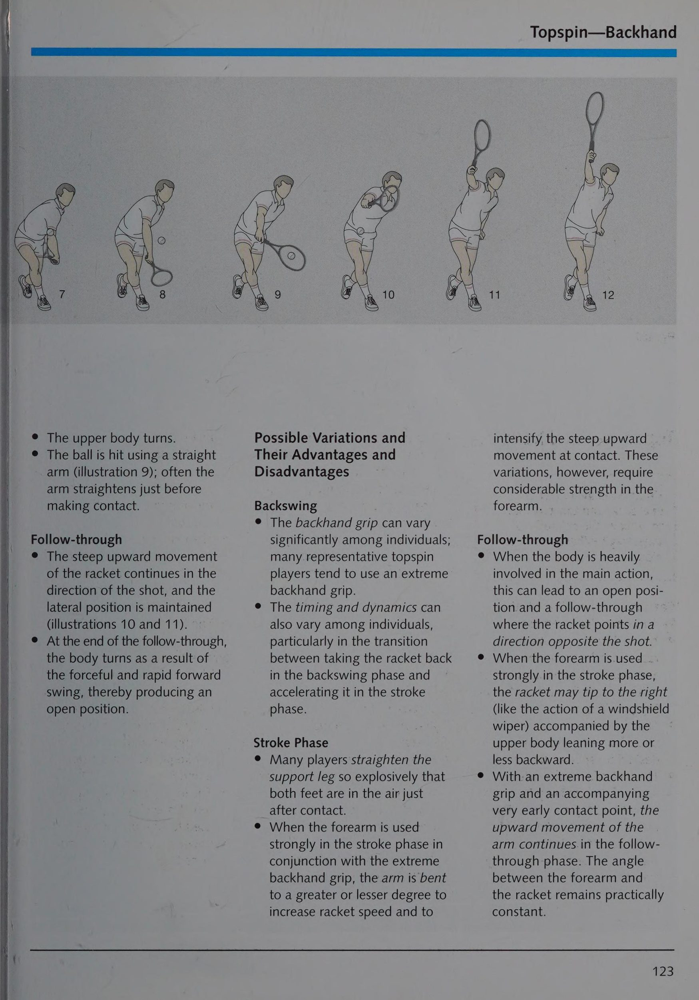
Xoáy lên, cắt lát và cú đánh thẳng đều thích hợp cho một quả bóng tấn công. Như thường lệ, tay vợt nên sử dụng cú đánh đáng tin cậy nhất.
Với một quả bóng chậm (thường là một lát cắt), tay vợt tiến xa hơn về phía trước và có vị trí tốt hơn để thực hiện cú vô lê. Đồng thời, đối thủ có thêm chút thời gian để thực hiện cú chuyền tốt.
Một quả bóng tấn công nhanh buộc người tham gia vào tư thế phòng thủ nhiều hơn. Do đó, tay vợt sẽ ở vị trí xa lưới hơn một chút khi bắt đầu thực hiện cú vô lê vì cú đánh của đối phương quay trở lại sớm hơn.
Làm việc theo nhóm bao gồm việc làm việc cùng nhau để biến một khái niệm chiến thuật thành hiện thực. Các đối tác nên hòa hợp với nhau nhất có thể và bổ sung khả năng của nhau. Do đó, yêu cầu cơ bản để thành công trong đấu đôi là chọn đúng đối tác. Các tiêu chí chi phối sự lựa chọn phải bao gồm sự thông cảm lẫn nhau: tay vợt phải hiểu nhau; những tay vợt không thể chịu đựng được nhau sẽ không bao giờ phối hợp tốt với nhau; điều này đặc biệt nổi lên trong những tình huống khủng hoảng, khi niềm tin quan trọng hơn việc ghi được điểm ngay lập tức; niềm tin vào khả năng và sự cam kết của đối tác là cơ sở cho sự kết hợp hoàn hảo; những điểm mạnh tương tự và một khái niệm chung về trò chơi: quan điểm về quần vợt nói chung và thi đấu đánh đôi (Doubles) nói riêng phải trùng khớp; các loại tay vợt khác nhau: một người dàn dựng các vở kịch và người kia thực hiện chúng; một người nóng nảy và người kia điềm tĩnh; một người là nghệ sĩ và người kia là thợ thủ công; Những kiểu định vị đúng trên sân này: vấn đề ai chơi bên trái hay bên phải ảnh hưởng đến chất lượng quả trả bóng của mỗi đối tác:
sự phân công lao động đúng đắn: ai chịu trách nhiệm về cặp đôi? mặc dù cả hai đối tác đều có quyền như nhau nhưng một người phải chịu trách nhiệm; người dẫn đầu xác định ai đánh bóng ở giữa, ai chạy theo lốp bóng và khi nào nên tiếp cận lưới hoặc lùi lại; lãnh đạo và chấp nhận sự lãnh đạo của người khác là những phẩm chất không phải ai cũng có.
Vị trí điển hình của các tay vợt và hướng trả bóng (chéo) trong các trận thi đấu đánh đôi (Doubles) đẳng cấp thế giới.
Vị trí và nhiệm vụ của bốn tay vợt thi đấu đánh đôi (Doubles)
Máy chủ đứng cách khoảng 3 hoặc 6 feet (1 đến 2 m) về bên trái hoặc bên phải của điểm giữa của vạch cuối sân (hình 59, vị trí A). Cú giao bóng chủ yếu nhắm vào cú trái tay của đối phương. Việc trả giao bóng trái tay từ bên phải là rất khó khăn vì chỉ có một khoảng trống hạn chế cho một cú trái tay (Backhand) tốt. Do đó, tay vợt trên lưới có thể tập trung nhiều hơn vào khu giữa vì khả năng đánh vô-lê xuống vạch biên là rất thấp. Điều tương tự cũng áp dụng cho một cú giao bóng từ bên trái vì cú trả giao bóng trái tay dọc theo đường biên cũng là một cú đánh rất khó từ quan điểm kỹ thuật.
theo sau cú sút vào lưới— điều này phù hợp ở lần giao bóng thứ nhất và thứ hai để đạt ngang tầm với đối tác — cú vô lê đầu tiên nên được đặt giữa hai đối thủ (theo lý thuyết điểm giữa). Điều này đặc biệt đúng khi tay vợt phải thực hiện cú vô lê từ thấp đến cao và để đáp lại sự trả đũa tốt của đối phương.
Nếu đối thủ đánh cao (hoặc, xấu) quay lại, tay vợt có thể chơi lượt quay lại từ cao xuống thấp. Tức là bóng có thể được đánh ngang sân sang một bên hoặc tới chân đối phương đang đứng trên lưới.
Thông thường, đấu thủ này chiếm vị trí ở nửa phía trước của phần giao bóng đối diện với đối phương nhận giao bóng (xem hình 59, vị trí B). Tay vợt này có thể đập bóng càng tốt hoặc đối tác có thể giao bóng càng tốt thì tay vợt này càng có thể đến gần lưới hơn.
Tay vợt trên lưới nên chặn cú trả bóng của đối phương bất cứ lúc nào có vẻ khả thi:
Việc yêu cầu đồng đội chạy lên lưới ở phía bên thích hợp cũng có thể được sắp xếp trước.
Nên thử thực hiện động tác đi giữa này, mặc dù nó có thể không phải lúc nào cũng hoạt động hoàn hảo, để tay vợt thực hiện lượt quay lại luôn phải cảnh giác với một cuộc tấn công. Với một cú giao bóng từ bên phải sang phía trái tay, góc để trả bóng thành công dọc biên là rất kém.
Với một cú giao bóng từ bên trái, cú vô lê thuận tay của chính tay vợt này che chắn một cách hiệu quả cú trái tay (Backhand) có thể xảy ra của đối phương trên vạch vôi. ~~ Nếu đối tác đánh từ) phải sang thuận tay của đối phương, di chuyển sang trái một chút để tôi phòng thủ trước một cú trả bóng bằng tay có thể xảy ra dọc theo đường biên, bằng cách / sử dụng cú vô lê trái tay, là _ cần thiết. Cú giao bóng của đối tác từ bên trái sang phía thuận tay của đối phương sẽ thay đổi các góc để trả lại lợi thế tốt.
Nếu cú trả bóng chéo sân của đối phương luôn tốt đến mức tay vợt ở lưới không thể tấn công và đồng đội không thể đánh vô-lê hiệu quả thì các tay vợt nên cố gắng ngăn chặn điều đó một cách đặc biệt.
_ cú trái tay (Backhand) tốt. Để làm như vậy,
_ tay vợt phải đứng ở phần giao bóng khác đối diện với đồng đội của người đánh trái tay trong một hệ thống song song. Điều đó buộc đối phương phải trả lại \/xuống đường, điều này có thể "khó khăn hơn. Vì tay vợt luôn phải đối mặt với những cú trả bóng lốp bóng, các đối tác nên hiểu rõ ràng ai sẽ thực hiện kiểu đánh đó. Thông thường, tay vợt được đánh vô-lê sẽ chịu trách nhiệm về cú lốp bóng đó.
Chỉ khi người giao bóng không đưa bóng lên lưới — và điều này sẽ là ngoại lệ — thì tay vợt trên lưới mà quả lốp bóng đã vượt qua mới có thể đổi bên và để người giao bóng thực hiện cú lốp bóng.
Tay vợt trên lưới phải luôn chuyển động. Điều đó buộc người nhận bóng phải để mắt đến quả bóng và tay vợt trên lưới, đồng thời khiến việc trả bóng có tính toán và tổng thể trở nên khó khăn hơn.
Người nhận đứng cách đường biên khoảng 3 feet (1 m) ngay cả khi có đường biên hoặc khoảng
Gần tâm hơn 2 feet (0,5 m) (hình 59, vị trí D). Tập trung hoàn toàn vào nhiệm vụ trước mắt và tránh bị kích động bởi những động thái có thể xảy ra của tay vợt trên lưới đối phương là điều quan trọng.
Một cú trả bóng tốt là một quả tạt ngắn hướng vào chân của người giao bóng đang chạy về phía trước; mục tiêu lý tưởng của cú giao bóng là đường giao bóng. Topspin rất phù hợp cho điều đó vì nó làm cho bóng rơi nhanh khi nó đi qua lưới. Ngoài ra, xoáy lên buộc người giao bóng, người đang tiến về phía trước, phải đánh một cú vô lê từ thấp đến cao. Tuy nhiên, ngay cả một cú cắt bóng cũng có thể là một cú trả bóng rất hiệu quả trong các trận thi đấu đánh đôi (Doubles), đặc biệt là đối với những cú giao bóng rất nhanh và chính xác khiến không có thời gian cho một cú đánh cơ bản bình thường.
Thậm chí một số trả về tôi đường và thùy nên được đưa vào để đa dạng. Điều đó sẽ giữ ' tay vợt lưới đối phương thực hiện quá nhiều đường chuyền giữa.
Khi trả giao bóng thứ hai yếu, tay vợt nên di chuyển lên một chút và thực hiện cú đánh tốt nhất có thể. Mục tiêu không phải là đường cuối sân mà là chân của đối phương đang chạy về phía trước. Nếu thời gian là tôi sẵn có, có thể ưu tiên sử dụng cú trả thuận tay mạnh hơn tôi đến trái tay. Đó cần phải là một cú đánh thực sự tốt, bởi vì khi tay vợt chạy để thiết lập tôi cú thuận tay (Forehand), một phần sân của chính tay vợt sẽ không được bảo vệ. Trong phạm vi có thể, khi thực hiện cú đánh trả, người trả bóng phải di chuyển lên lưới ngang tầm với đối tác trong pha đánh bóng.
Đối tác đứng trước vạch giao cầu trên nửa sân để được bảo vệ, khoảng
3 feet (1 m) về phía đường giữa (hình 59, vị trí C).
Nếu đối tác trả bóng thực hiện cú trả bóng tốt, tay vợt nên tiến lên một hoặc hai bước và cố gắng chặn một cú vô lê chéo tốt có thể có từ phía người giao bóng. Các lỗi có thể xảy ra không gây ra hậu quả gì vì người thực hiện cú vô lê phải lo lắng về việc quả cú bắt lưới (Volley) bị chặn. Tay vợt đó sẽ cố gắng chơi một trò chơi mạo hiểm hơn. Tuy nhiên, điều quan trọng là không bắt đầu di chuyển quá sớm.
Nếu không, đối phương sẽ thực hiện cú vô lê dọc biên.
Nếu khả năng giao bóng và lối chơi trên lưới của đối phương tốt đến mức không có cơ hội tấn công, thì đấu thủ nên chiếm vị trí lùi về cuối sân bên cạnh vị trí sẵn sàng của đồng đội ở lần giao bóng thứ hai.
thắng trên lưới, các đồng đội phải có vị trí lưới tốt hơn (gần) hơn đối thủ.
Vì vậy, việc cố gắng tiếp tục giao bóng và trở lại là quan trọng. Một cuộc tấn công tốt là cách phòng thủ tốt nhất. Một tay vợt về
Cách lưới 10 feet (3 m) là vị trí lưới lý tưởng. Ngay cả một cú lốp bóng có thể cũng không cản trở được áp lực đưa bóng vào lưới.
Nếu cần, tay vợt có thể chạy lại cùng nhau và chơi cùng cấp độ.
Ở đẳng cấp với Đối tác
Một trận đấu đôi hay được chứng minh bằng việc cả hai đối tác đều hoạt động chủ yếu ở cùng cấp độ trên sân. Do đó, các đối tác cùng nhau tiến lên và lùi lại.
Vì các đấu thủ buộc phải đảm nhận nhiều vị trí khác nhau ngoài vị trí sẵn sàng, nên một đấu thủ phải luôn cố gắng tiến lên ngang tầm với đối tác ở gần lưới hơn. Một đấu thủ trên lưới mà đối tác của mình không thể đạt được trình độ tương tự trên sân có thể thấy việc lùi lại là hữu ích. Tuy nhiên, điều đó chỉ xảy ra trong những trường hợp đặc biệt, vì khó có thể giành chiến thắng đôi từ sân sau. Tuy nhiên, nếu xảy ra tình huống một tay vợt đang ở trên lưới và tay vợt kia buộc phải chơi ở đường cuối sân, cả A và B phải đánh bóng tới C (xem hình 60). Với một cú sút vào tay vợt D, không có cơ hội nào cho một trong hai người che chắn hiệu quả đường chéo chạy giữa A và B.
Cả hai đối tác cũng phải đứng ở khoảng cách tương đương với đường biên. Nếu A hoặc B di chuyển sang trái sau một cú vô lê thuận tay từ vị trí này sang vị trí khác, như được chỉ định bởi B trong hình 61, B có thể phải di chuyển xa hơn về bên trái để che chắn một cú sút có thể xảy ra dọc biên của tay vợt D, người có thể chơi. ngay ở giữa.
Trong thi đấu đánh đôi (Doubles), việc giao bóng đầu tiên trên sân là đặc biệt quan trọng. Điều đó giữ cho
PEMGEOT PEUGEO®; PEUGEOT @ UGEOT a Di iiss nuschity O <5 Roviee’ eat Siussoidort Rochunchud Dissedoglemma? khiến đối thủ không thể di chuyển lên để trả quả giao bóng thứ hai và lên lưới nhanh hơn. Vì vậy, cú giao bóng đầu tiên không nên được đánh hết sức. Nó nên bảo thủ hơn. Vị trí tốt quan trọng hơn tốc độ. Việc giao bóng chậm hơn một chút cũng giúp bạn có thể di chuyển đến gần lưới hơn vào vị trí tốt hơn để thực hiện cú vô lê.
Cú trả bóng và cú vô lê đầu tiên cũng phải ở trên sân. Nên thực hiện một cú sút an toàn vào chân đối phương hơn là một cú sút mạo hiểm hơn nhằm ghi điểm trực tiếp.
cú trả bóng là một cú đánh chéo sân, việc thay đổi cú trả bóng là rất quan trọng.
Thực hiện một số pha lốp bóng và cố gắng thực hiện một số cú sút qua đường biên ngang qua tay vợt đối phương là điều đáng giá. Ngay cả khi điều đó dẫn đến không có điểm trực tiếp, nó vẫn giúp tay vợt lưới đối phương đi quá xa vào giữa và chặn các đường trả về.
đối thủ là điểm yếu nhất của họ, cho dù họ đang đứng trên lưới hay ở đường cuối sân. Góc của quả bóng trả về — cho dù là cú vô lê, cú vô lê nửa hay cú đánh cơ bản — đều bị hạn chế. Do đó, một đội tấn công có thể quay trở lại giữa lưới một cách an toàn và che bóng một cách hiệu quả khi nó quay trở lại từ giữa lưới.
Đôi khi, ngay cả với những đội phối hợp tốt, khó khăn vẫn xảy ra trong việc phân loại ai chịu trách nhiệm cho cú sút trực tiếp giữa hai tay vợt. Các đồng đội phải tìm ra ai sẽ che chắn cho cú sút trong
_ ở giữa. Khuyến nghị rằng đây là tay vợt đứng ở bên trái (phía trái tay) vì thuận tay của tay vợt đó có thể được sử dụng để che phần giữa.
e chơi ở trung lộ với các đối thủ ở cùng đẳng cấp trên sân e với các đối thủ ở các cấp độ khác nhau trên sân, chơi bóng đến vị trí e che chắn trung lộ từ đường trả về của đối phương bằng cách cố gắng di chuyển cùng nhau sang một bên và tiến hoặc lùi theo hướng đánh là điều quan trọng.
Tay vợt trên lưới phải luôn di chuyển, nghĩa là đang chuyển động và không được cắm rễ vào bất kỳ vị trí nào gần lưới. Làm như vậy cho phép các tay vợt phản ứng tốt hơn nếu bóng được đánh trực tiếp vào họ hoặc nếu họ muốn chặn cú trả bóng. Ngoài ra, những tay vợt lưới sẽ đánh lạc hướng đối thủ và khiến họ không tập trung hoàn toàn vào lượt về.
Đi giữa (sắp xếp đánh chặn với đồng đội— giả vờ (một đòn tấn công giả khi trả bóng) và hành vi bồn chồn của tay vợt trên lưới có thể làm suy yếu sự tự tin của đối phương, phải là những bài tập bắt buộc đối với tay vợt thi đấu đánh đôi (Doubles).
Phần 4: Cẩm Nang Kỹ Thuật & Biến Thể Đỉnh Cao
Chương 9: Đánh Cuối Sân Căn Bản: Thuận Tay & Trái Tay (Một Tay & Hai Tay)
Chapter 9: Groundstrokes: Forehand and One-Handed/Two-Handed Backhand
Khi quần vợt phát triển như một môn thể thao, nó đi kèm với sự đa dạng hóa các kỹ thuật đánh (đánh). Không có gì ngạc nhiên khi tài liệu về quần vợt không chỉ chứa đựng một số kỹ thuật đánh mà còn có một số định nghĩa không nhất quán: _¢ Thuật ngữ trong các cuốn sách thường khác nhau hoặc không rõ ràng.
e Các thuật ngữ riêng lẻ như lát cắt được sử dụng theo nhiều cách khác nhau.
Kết quả là, cú cắt thuận tay và cú cắt trái tay được sử dụng xoáy xuống được truyền vào bóng và cú giao bóng khi bóng được giao chủ yếu tôi xoáy ngang (Sidespin).
e Các nhãn khác nhau được thêm vào để dễ hiểu. Ví dụ: thuật ngữ drive được sử dụng để ám chỉ rằng những quả bóng nhanh được sử dụng để gây áp lực cho đối phương; topspin có nghĩa là bóng có độ xoáy về phía trước rõ rệt; thuật ngữ cú bắt lưới (Volley) được sử dụng để chỉ một cú đánh bóng trước khi nó chạm đất; và cú đập bóng không chỉ biểu thị vị trí không gian khi bóng được đánh mà còn biểu thị việc sử dụng lực để thực hiện cú đánh.
e Nhiều thuật ngữ kỹ thuật cũng được giải thích thêm để chính xác hơn; một ví dụ là cú đánh bóng thuận tay bằng cổ tay hoặc với cổ tay vững chắc.
Việc chỉ định các kỹ thuật dựa trên sáu đặc điểm sau:
1. Vị trí không gian của tay vợt (ví dụ: khi giao bóng và cú bắt lưới (Volley)).
2. Điểm tiếp xúc với bóng có liên quan đến cơ thể của tay vợt (ví dụ: trong các cú thuận tay (Forehand) và trái tay).
3. Vị trí dự kiến của các cú đánh rơi).
4. Hành vi xoay của bóng (ví dụ: với các cú đánh xoáy lên).
5. Quỹ đạo của bóng cần đánh (ví dụ: với một cú lốp bóng).
6. Cách thực hiện nước đi có liên quan đến cú đánh và các giai đoạn tiếp theo (ví dụ: bắn chip).
Về mặt lý thuyết, nếu một người muốn làm cho thuật ngữ trở nên nhất quán, người đó có thể phải bắt đầu bằng sự kết hợp giữa các định nghĩa cơ bản hiện có và những định nghĩa cần thiết để đưa ra một số định nghĩa hoàn toàn mới. Các cân nhắc liên quan bao gồm vị trí bóng được đánh đối với tay vợt (ở bên phải hoặc bên trái, qua đỉnh đầu, từ trên cao đến điểm tiếp xúc bóng (Point of Contact) với bóng liên quan đến nơi nó chẳng hạn, trực tiếp mà không cần tiếp xúc, ngay sau khi tiếp xúc hoặc ngay lập tức e mục tiêu của cú đánh có liên quan đến vị trí bóng chạm đất ở phần sân đối phương (dài, trung bình hoặc ngắn); e mục tiêu có liên quan đến hướng bóng được đánh (ví dụ: thẳng hoặc góc sang phải hoặc sang trái); e bàn thắng liên quan đến chuyển động quay của bóng (xoáy lên nặng hoặc nhẹ, xoáy xuống hoặc e mục tiêu liên quan đến quỹ đạo của quả bóng (thấp, cao hoặc e các điều kiện đặc biệt (bao gồm cả cú đánh bóng trong điều kiện khắc nghiệt như phía sau cơ thể và sang một bên).
Tuy nhiên, việc kết hợp tất cả các yêu cầu này sẽ mở rộng đáng kể số lượng các kỹ thuật đã tồn tại và khiến chúng không thể hiểu được nữa. Vì kỹ thuật nên được coi là một hình thức di chuyển có mục đích để hoàn thành một nhiệm vụ nên nhiều kỹ thuật giải quyết các điều kiện đã tồn tại hoặc được mong muốn dựa trên sự đa dạng của các khả năng nhất định. Các điều khoản đã được sử dụng có thể sẽ không thay đổi. Kết quả là, bất chấp những nhận xét ở trên, các thuật ngữ thông thường sẽ được sử dụng xuyên suốt phần còn lại của cuốn sách này.
Việc phân tích và mô tả các kỹ thuật cú đánh riêng lẻ dựa trên các lý thuyết cơ bản về chuyển động, đặc biệt là khái niệm phân tích chuyển động chức năng. Nó bao gồm bốn bước sau, lần lượt bao gồm nhiều phần riêng lẻ khác nhau:
1. Trong những tình huống nào và từ vị trí nào, kỹ thuật được áp dụng được xác định trước tiên (ví dụ: một cú sút chạm đất từ gần vạch cuối sân). Điều này giải quyết các điều kiện vật chất như kích thước sân, chiều cao của lưới và các kích thước khác như tầm với.
Sau đó, câu hỏi đặt ra liên quan đến mục tiêu chiến thuật nào mà kỹ thuật này có thể được áp dụng thành công trong tình huống này. Tiếp theo, dựa trên các định luật vật lý, có thể suy ra làm thế nào quả bóng có thể bay và hoàn thành mục đích chiến thuật của nó (ví dụ: với độ xoáy nhẹ và tốc độ khá cao).
2. Khi đó có thể xem xét các điều kiện ảnh hưởng đến hành động của tay vợt. Nói cách khác, tay vợt phải làm gì để đạt được quỹ đạo bay của bóng (Ball Trajectory) mong muốn và kỹ thuật được sử dụng để làm gì?
Những điểm cần cân nhắc tiếp theo là các đặc điểm phân biệt của hành động chính (Main Action) trong giai đoạn cú đánh vì chúng ảnh hưởng đến quỹ đạo bay của bóng (Ball Trajectory) mong muốn theo các định luật cơ sinh học. Sau đó, người ta phải xem xét các hành động bổ trợ (Supporting Action) nhằm củng cố hành động chính (Main Action) trong các giai đoạn vung vợt sau và cú đánh và chứng minh tính đúng đắn của hành động chính (Main Action) trong giai đoạn tiếp theo.
3. Bước tiếp theo sẽ xem xét các biến thể có thể tồn tại khi thực hiện các chuyển động khác nhau cũng như những ưu điểm và nhược điểm đi kèm của chúng. Điều này liên quan đến các động tác hỗ trợ trong các giai đoạn vung vợt sau, cú đánh và tiếp theo.
4. Cuối cùng, nơi mà sự chậm trễ đó đi qua ranh giới của những khiếm khuyết và sai sót sẽ được thảo luận. Hành động chính sẽ được nhắc lại khi xử lý lỗi.
Để áp dụng thực tế việc hướng dẫn quần vợt, hãy xem xét những điều sau đây, mọi kỹ thuật đều được trình bày với sự trợ giúp của sơ đồ; Vì lợi ích của sự đầy đủ, nhiều mô tả và lý do xuất hiện lặp đi lặp lại với từng cá nhân vì lý do không gian, chỉ có những đặc điểm cơ bản
¢ tất cả các kỹ thuật áp dụng cho tay vợt thuận tay phải; tay vợt thuận tay trái cần đảo ngược kỹ thuật cho phù hợp; Lưu ý rằng các hình minh họa trình bày một cách trung bình để thực hiện một động tác; họ không tính đến bất kỳ khoảng thời gian nào có thể có dựa trên phong cách cá nhân; những chuyển động trung bình này tạo thành một lý tưởng cho các huấn luyện viên, huấn luyện viên và giáo viên quần vợt; chúng với những người mới bắt đầu và phải tạo cơ sở cho việc hướng dẫn và sửa chữa; Sau đó, từng người học có thể được phép thực hành một chút và đi chệch khỏi thành tích trung bình dựa trên yêu cầu và khả năng cá nhân của họ.
Người đọc cũng nên lưu ý nhiều kỹ thuật khác nhau áp dụng cho các tình huống, vị trí và mục tiêu chiến thuật riêng lẻ, chỉ một kỹ thuật được chọn để minh họa.
Ngoài ra, bóng thường được chơi ở tốc độ vừa phải.
Cú đánh mặt đất—Thuận tay và trái tay
Kỹ thuật này được sử dụng trong những tình huống nào và cho mục đích gì? Quỹ đạo của quả bóng là gì
Các cú đánh nền bằng thuận tay và trái tay thường được đánh gần vạch cuối sân.
e Bóng phải được giữ an toàn trong cuộc chơi.
¢ Quả bóng phải được đánh sao cho nó nảy khoảng 6 đến
9 feet (2 đến 3 m) trước đường biên ngang đối phương và buộc tay vợt đối phương phải ở phía sau đường biên ngang và trả bóng từ khu vực đó.
e Đối thủ phải bị gây áp lực bằng những cú đánh đúng vị trí và khá nhanh; điều này cũng có thể dùng như một phương tiện để thiết lập một cuộc tấn công vào lưới.
e Trong trường hợp đối phương tấn công lưới, kỹ thuật này có thể được sử dụng để thực hiện một cú sút dọc biên.
Ảnh hưởng đến hành vi của quả bóng
¢ Bóng có thể bay trong không khí với độ xoáy nhẹ và quỹ đạo phẳng hợp lý.
e Bóng có thể di chuyển với tốc độ tương đối cao (ngoại trừ để giữ bóng trong cuộc).
Hình62 Điểm ngắm.
Hình 63 Đường bay của quả bóng.
Tay vợt làm gì khi thực hiện cú thuận tay (Forehand) trên mặt đất để đạt được quỹ đạo mong muốn? Công nghệ này là gìCác tính năng của hành động chính (Main Action) trong giai đoạn cú đánh
Vợt được vung về phía trước và hơi hướng lên trên (hình minh họa 7 và 8) để tạo cho bóng một chút xoáy lên.
Vợt được tăng tốc để truyền vận tốc mong muốn vào bóng.
Vợt được vung xa theo hướng cú đánh (minh họa 6-8) để đạt được độ chính xác và độ tin cậy cao hơn.
Để đạt được khả năng truyền năng lượng tốt nhất có thể, bóng được đánh ở khoảng cách thích hợp về phía bên và phía trước cơ thể trong khi vẫn giữ mặt vợt thẳng đứng. Ngay trước khi tiếp xúc, cổ tay được đưa vào vị trí tương ứng với vận tốc khởi hành để tạo ra mức độ chính xác cao nhất. .
* Khi tiếp xúc, tay cầm của vợt được siết chặt và cổ tay được giữ chắc chắn trong giây lát để tạo lực cản cho bóng.
Tính năng của các hành động bổ trợ (Supporting Action) e Vợt được cầm bằng tay cầm thuận tay để mặt vợt có thể được giữ thẳng đứng khi tiếp xúc.
e Thân trên và bàn chân phải quay sang phải (minh họa 2); vợt được giữ ở vị trí cao và hướng về phía sau (minh họa 2-4) để tạo ra sự chuyển tiếp trôi chảy sang giai đoạn đánh (minh họa 4-6).
e ‘Theteftteg hướng về phía trước trong tư thế khép kín theo hướng dự đoán của cú đánh (minh họa
4); lúc đó, hai bàn chân phải rộng bằng hông để giúp giữ thăng bằng.
e Trong quá trình chuyển sang giai đoạn đánh, vợt được đặt ở vị trí tiếp xúc có thể đoán trước được với bóng (minh họa
5 và 6) để nó có thể được vung về phía trước và hướng lên trên trong hành động chính (Main Action). Đối với cú thuận tay (Forehand) từ tư thế đóng, trọng lượng cơ thể dồn lên bàn chân phía trước (hình minh họa 5 và 7), và phần thân trên tôi quay về hướng đánh khi vợt tiếp xúc (minh họa 7 và 8); Việc xoay phần thân trên này giúp tăng tốc vợt. Chân bắt đầu duỗi thẳng để hỗ trợ chuyển động đi lên.
Về nguyên tắc, cánh tay phải vẫn hơi cong (minh họa 8-10); ở tốc độ hành trình lớn hơn, nó thậm chí còn uốn cong hơn nữa.
e Vợt tiếp tục vung về phía trước và hướng lên trên theo hướng đánh (minh họa 9-12).
¢ Hai chân tiếp tục duỗi thẳng.
Các biến thể có thể có và ưu điểm của chúng và e Nhiều tay vợt hài lòng chỉ cần lấy vợt về theo một vòng cung thấp (như trong hình 65); làm điều này giúp tiết kiệm thời gian và tạo ra chuyển động chính xác.
e Nhiều tay vợt bắt đầu rút lui bằng một vòng cung thấp; điều này tạo ra một gia tốc trong giai đoạn hành trình.
e Thường thì tư thế đánh thay đổi tùy theo tình huống; càng thoáng thì chuyển động cú đánh càng nhanh và hướng đánh càng có xu hướng chéo. Hình 65 Backswing với vòng cung thấp và hướng lên trên. Tuy nhiên, cú đánh thường kém chính xác.
giữa các cá nhân về mặt chuyển động của Pha cú đánh có thể được thực hiện theo thời gian và động lực của nó, e Phần thân trên có thể được xoắn theo nhiều cách khác nhau. Đặc biệt mượt mà hơn đối với ; ít nhiều năng động. Rằng sự tăng tốc của vợt trong quá trình chuyển đổi giữa việc lấy ảnh hưởng đến khả năng tăng tốc của điểm tiếp xúc bóng (Point of Contact) với vợt ở phía sau vợt. Bóng càng an toàn, giai đoạn xoáy và tăng tốc e Tốc độ ban đầu và cú đánh càng được tăng tốc.
nó đang ở giai đoạn cú đánh. Tốc độ của vợt trong cú đánh e Tốc độ của vợt càng lớn thì cú đánh theo sau càng dài và cao hơn. Một số tay vợt kết thúc cú swing phía trên vai trái của họ.
Những sai sót và sai sót thường gặp e Khi sử dụng kiểu cầm bán nguyệt, lực truyền lực kém hơn mức tối ưu; khó khăn tăng lên ở các điểm tiếp xúc bóng (Point of Contact) cao hơn.
e Việc sử dụng tay cầm trái tay khiến cho việc giữ mặt vợt thẳng đứng tại điểm tiếp xúc bóng (Point of Contact) mong muốn trở nên khó khăn.
e Ít hoặc không có chuyển động xoay phần trên cơ thể cản trở việc thu vợt lại đầy đủ; kết quả là, việc tăng tốc vợt trở nên khó khăn và nó dẫn đến chuyển động đấm thay vì vung vợt trong giai đoạn đánh.
e Việc vung vợt lùi quá muộn sẽ làm giảm cơ hội đánh bóng vào đúng thời điểm và trong tầm kiểm soát.
e Việc sử dụng động tác vung vợt ra sau quá cao hoặc quá cao sẽ tạo ra nguy cơ bóng có thể bị đánh quá muộn và gây ảnh hưởng đến độ chính xác.
e Một khoảng dừng đáng chú ý ở cuối cú vung vợt cản trở dòng chuyển động và góp phần làm vợt tăng tốc đột ngột.
Pha đánh _ a e’ Không hạ vợt xuống
: đi dưới mức dự đoán
\ điểm tiếp xúc bóng (Point of Contact) lắc lư
Hình 66 Nghiêng người về phía sau trong khi chụp.
vợt không thể chuyển động về phía trước và hướng lên trên. — e Duỗi thẳng chân quá sớm phần lớn sẽ làm giảm khả năng phối hợp.
e Nghiêng người về phía sau cản trở sự dịch chuyển trọng lượng mong muốn về phía trước và phía trên, do đó, làm giảm khả năng tăng tốc và - có thể làm hỏng cú đánh (xem hình 66).
e Xoay hông và phần thân trên quá sớm sẽ tạo ra sự phối hợp kém giữa xoay cơ thể và vung tay và tạo ra cú đánh thiếu nhịp điệu và khả năng kiểm soát (xem hình 67).
e Khi sử dụng điểm tiếp xúc bóng (Point of Contact) không phù hợp (nghĩa là quá muộn, quá gần và quá xa cơ thể), độ an toàn và độ chính xác sẽ bị ảnh hưởng rất nhiều.
Hình 67 Quay quá sớm theo hướng đánh.
e Cổ tay khập khiễng tại thời điểm tiếp xúc bóng (Point of Contact) sẽ làm mất đi khả năng kiểm soát rất nhiều.
e Việc kết thúc quá trình theo dõi quá sớm bằng cách dừng chuyển động cú đánh sẽ cản trở rất nhiều đến việc kiểm soát.
e Thay đổi hướng đánh bóng tự nhiên quá sớm bằng cách xoay cẳng tay (tức là chuyển động quay sấp) hoặc bằng cách uốn cong cổ tay hoặc khuỷu tay ngay sau khi tiếp xúc có tác động rất tiêu cực đến việc kiểm soát bóng.
Tay vợt thực hiện cú đánh nền trái tay để tạo ra quỹ đạo bay của bóng (Ball Trajectory) mong muốn như thế nào? Công nghệ này là gìCác tính năng của hành động chính (Main Action) trong giai đoạn cú đánh
Vợt được vung về phía trước và hơi hướng lên trên để tạo cho bóng một ít xoáy lên.
Vợt được tăng tốc để tạo ra vận tốc bóng mong muốn.
Vợt được vung xa theo hướng đánh (minh họa 7-9) để tạo ra độ chính xác và an toàn cao hơn.
Bóng được đánh bằng vợt thẳng đứng, mặt vợt ở khoảng cách phù hợp với một bên và xa hơn về phía trước cơ thể một chút so với cú thuận tay (Forehand) (minh họa 9); điều này tạo ra sự truyền năng lượng lý tưởng.
Ngay trước khi tiếp xúc, cổ tay được đưa vào vị trí phù hợp với vận tốc khởi hành của bóng để tạo ra độ chính xác cao nhất.
e Khi tiếp xúc, tay cầm vợt được siết chặt và cổ tay được giữ chắc chắn để tạo lực cản bóng trong thời gian ngắn.
Tính năng của các hành động bổ trợ (Supporting Action) e Vợt được giữ bằng tay cầm phía sau để mặt vợt có thể được giữ thẳng đứng khi tiếp xúc.
e Phần thân trên quay hẳn về phía sau và có tư thế nằm nghiêng rõ rệt.
e Đồng thời, tay trái dẫn vợt về phía sau bằng cách giữ ở cổ vợt (minh họa
3) để ổn định cú đánh về sau và hỗ trợ xoay phần thân trên xa hơn.
¢ Chân phải bước về phía trước sao cho nửa lưng bên phải hướng về phía lưới (minh họa 5); điều này hỗ trợ cho việc tăng tốc sau đó của cánh tay theo hướng bắn.
e Vợt được đưa về phía sau và hướng lên trên; cung này thẳng hơn so với cú thuận tay (Forehand).
e Đầu gối bị cong.
e Liên quan đến điểm tiếp xúc bóng (Point of Contact) dự kiến, đầu vợt được hạ xuống trong quá trình chuyển sang giai đoạn cú đánh (hình minh họa 5, 6 và 7) để có thể vung về phía trước và hướng lên trên trong động tác chính.
Để giữ thăng bằng, hai chân phải cách nhau ít nhất bằng chiều rộng của hông (hình minh họa 8).
Để hỗ trợ khả năng tăng tốc của vợt, trọng lượng cơ thể phải được dồn mạnh lên chân trước khi bắt đầu giai đoạn đánh; sự thay đổi trọng lượng này diễn ra sớm hơn so với cú thuận tay (Forehand) và phần thân trên chỉ được xoay đến điểm mà trục của vai hướng về hướng đánh.
(minh họa 8 và 9).
e Vị trí nghiêng của bàn chân và cơ thể được duy trì ngay trong thời điểm tiếp xúc bóng (Point of Contact) (minh họa 9-11) để tạo điều kiện thuận lợi cho cú đánh tốt nhất có thể.
e Trước khi tiếp xúc, cánh tay phải duỗi thẳng (hình minh họa 7 và
8) để thiết lập điểm tiếp xúc bóng (Point of Contact) và truyền năng lượng tối ưu.
e Chuyển động của vợt tiếp tục theo hướng đánh (minh họa 10+12). Khi kết thúc cú đánh, vợt và phần bên phải của cơ thể hướng về hướng cú đánh (minh họa 12).
Các biến thể có thể có và lợi thế của chúng và e Nhiều tay vợt hài lòng khi đánh bằng cách sử dụng tay cầm bán lục địa; điều này có thể dễ dàng hơn, nhưng nó kém lý tưởng trong việc truyền năng lượng và quả bóng không được đánh vào một điểm đủ xa cơ thể.
Nhiều tay vợt bắt đầu cú backswing với một vòng cung đi xuống; điều này có thể giúp tạo ra một cú xoay người trôi chảy hơn, nhưng nó cũng có thể khiến tay vợt không thể thực hiện cú đánh vào đúng thời điểm từ vòng cung phía dưới của cú giật.
Việc thiếu sự hỗ trợ từ tay trái trong động tác backswing là điều phổ biến; thường phần thân trên không bị xoắn đủ xa về phía sau.
Việc kiểm soát chuyển động khó hơn, đặc biệt là sự chuyển tiếp giữa các giai đoạn vung vợt sau và cú đánh.
Thời gian và động lực của các cá nhân, đặc biệt là trong quá trình chuyển đổi giữa việc thu vợt và tăng tốc của nó trong giai đoạn đánh.
e Cánh tay có thể được duỗi thẳng khi bắt đầu giai đoạn hành động hoặc ngay trước động tác chính.
e Tốc độ vợt mong muốn càng lớn thì quá trình theo dõi càng dài.
e Ở tốc độ cú đánh cao, vợt vung mạnh lên trên và sang phải, đồng thời phần thân trên quay theo hướng đánh.
Những sai sót và sai sót thường gặp e Việc sử dụng cách cầm vợt thuận tay khiến cho việc giữ mặt vợt thẳng đứng tại điểm tiếp xúc bóng (Point of Contact) mong muốn trở nên rất khó khăn và làm giảm sự truyền lực.
e Sử dụng ít hoặc không vặn người ở phần trên cơ thể và một cú đánh về sau rất ngắn sẽ cản trở khả năng tăng tốc của vợt và thường tạo ra chuyển động đấm trong giai đoạn đánh.
e Việc vung vợt ra sau muộn sẽ làm giảm cơ hội đánh bóng vào đúng thời điểm và dẫn đến một cú vung vợt không kiểm soát được.
e Cú lùi quá rộng bằng cánh tay thẳng sẽ cản trở khả năng xoay và phối hợp.
e Việc không giữ vai sang một bên thường cản trở việc vung cánh tay theo hướng mong muốn.
e Không thể hạ thấp đầu vợt xuống dưới mặt vợt dự kiến tiếp xúc về phía trước và hướng lên trên.
e Duỗi thẳng chân quá sớm chủ yếu cản trở sự phối hợp (xem hình 69).
e Nghiêng người về phía sau làm giảm khả năng tăng tốc của vợt và dẫn đến thiếu kiểm soát khi tiếp xúc.
e Khi bỏ tư thế /ateral quá sớm, toàn bộ cơ thể sẽ xoay theo chuyển động của cú đánh; điều này đáng kể
Hình69 Duỗi thẳng chân quá sớm.
làm giảm khả năng kiểm soát bóng (xem hình 70).
e Sử dụng điểm tiếp xúc bóng (Point of Contact) bất tiện, nói cách khác là quá muộn, quá gần hoặc quá xa cơ thể (xem hình 71), làm giảm khả năng tăng tốc và giảm khả năng kiểm soát.
e Việc không duỗi thẳng cánh tay khi bóng được đánh cho thấy rằng cú xoay vợt đã được kiểm tra và điểm tiếp xúc bóng (Point of Contact) quá gần với một bên của cơ thể.
e Kết thúc quá trình theo dõi quá sớm bằng cách kiểm tra chuyển động xoay.
e Việc lệch hướng đánh quá sớm sẽ cản trở việc kiểm soát bóng cũng như các lỗi khác.
e Cổ tay bị uốn cong mạnh và quá mức cho thấy rằng cú xoay đã được kiểm tra quá sớm gây tổn hại cho việc truyền năng lượng (xem hình 72). Hình.71 Điểm tiếp xúc muộn, lúng túng.
Hình 70 Bỏ vị trí hành trình bên quá sớm.
Hình 72 Cổ tay bị uốn cong quá mức.
Trái tay hai tay eS Tae)
Ảnh hưởng đến hành vi của bóng e Nói chung, bóng nên được đánh ở tốc độ khá cao.
¢ Tùy thuộc vào mục tiêu chiến thuật, bóng có thể bay nhanh và thấp hoặc chậm hơn, cao hơn và xa hơn.
Kỹ thuật này được áp dụng trong những tình huống nào và cho những mục đích gì? Quỹ đạo của quả bóng như thế nào?
e Cú trái tay bằng hai tay thường được sử dụng để đánh bóng sau khi bóng nảy gần đường cuối sân.
e Bóng phải được giữ trong cuộc.
e Quả bóng phải được đánh sao cho nó nảy lên
6 đến 10 feet (2 đến 3 m) trước đường biên ngang, buộc đối phương phải ở phía sau đường biên ngang và trả bóng từ khu vực đó.
¢ Bóng được đặt đúng vị trí và khá nhanh sẽ gây áp lực lên đối phương; điều này cũng có thể thiết lập một cuộc tấn công vào lưới.
¢ Kỹ thuật này cũng có thể được sử dụng cho một cú vô-lê, đặc biệt là dọc biên, khi đối phương đang tấn công vào lưới.
Hình 73 Điểm ngắm (/eft).
Hình 74 Đường bay của bóng (be/ow).
Với cú trái tay (Backhand) bằng hai tay, cánh tay trên bên phải sát vào cơ thể và vai trái di chuyển
\ mạnh về phía trước và hướng lên trên.
Tay vợt thực hiện cú trái tay bằng hai tay để tạo ra quỹ đạo bay của bóng (Ball Trajectory) mong muốn như thế nào? Kỹ thuật này được sử dụng để làm gì?
Đặc điểm của Hành động Chính Trong Giai đoạn Cú đánh
Vợt được vung về phía trước và hơi hướng lên trên để tạo cho bóng xoáy lên nhẹ.
Vợt được tăng tốc để đạt được vận tốc phù hợp tại thời điểm tiếp xúc bóng (Point of Contact).
Bóng được đánh sang một bên và ở một khoảng cách thích hợp so với cơ thể bằng mặt vợt thẳng đứng (hình minh họa 8); điều này làm tăng khả năng kiểm soát bóng và tạo điều kiện thuận lợi cho việc truyền năng lượng.
Ngay trước khi tiếp xúc với bóng, cổ tay được định vị để truyền độ chính xác cho bóng.
Khi tiếp xúc, tay cầm được siết chặt và cổ tay được giữ chắc chắn trong giây lát để tạo lực cản cho bóng.
Tính năng của các động tác hỗ trợ e Vợt được cầm bằng cả hai tay sao cho mặt vợt có thể được giữ thẳng đứng khi tiếp xúc. Tay phải có thể sử dụng cách cầm trái tay.
e Phần thân trên được quay mạnh về phía sau (với nửa bên phải của lưng hướng về phía lưới) để có đủ không gian cho cú vung ngược (minh họa 2 và 3); đến bước ngoặt, cánh tay phải gần như thẳng, cánh tay trái cong (hình minh họa 6).
¢ Do được cầm bằng hai tay nên vợt đi theo một vòng cung tương đối phẳng khi nó được vung trong một vòng (minh họa 1-4).
e Trong khi vung vợt ra sau, chân phải di chuyển về phía trước một góc về phía bóng đang tới.
e Đầu gối cong lại (minh họa 3-6).
Trong quá trình chuyển sang giai đoạn thực hiện cú đánh, đầu vợt được đặt thấp hơn điểm tiếp xúc bóng (Point of Contact) dự kiến để trong giai đoạn thực hiện cú đánh, vợt có thể được vung lên cũng như vung về phía trước. Khi bắt đầu động tác đánh, bàn chân phải đặt theo hướng của bóng đang tới, rộng ít nhất bằng vai ở phía trước bàn chân trái; trong giai đoạn thực hiện cú đánh, trọng lượng cơ thể được chuyển sang chân phải (hình minh họa 5).
Vì cầm bằng hai tay nên phần thân trên phải xoay theo hướng đánh (minh họa 6-8); điều này giúp tăng tốc.
Trong giai đoạn cú đánh, cánh tay vẫn hơi cong; ở tốc độ hành trình cao hơn, chúng bị uốn cong nhiều hơn.
Tay phải giúp truyền năng lượng; phần chính của cú swing thường là và cánh tay trái.
e Vợt tiếp tục vung theo hướng đánh (minh họa 9 và 10).
Các biến thể có thể có và ưu điểm của chúng và e Nhiều tay vợt có tư thế mở trong giai đoạn backswing; việc xoay phần thân trên làm căng cơ của họ khá hiệu quả, giúp vợt tăng tốc tốt hơn trong khi đánh.
e Đường đi tiếp theo thường theo một đường thẳng về phía sau và đi xuống; phong trào cú đánh này hiếm khi đặt tay vợt dưới bất kỳ áp lực thời gian nào.
e Trong động tác backswing, cổ tay thường bị cong; điều này giúp cho việc đưa đầu vợt ra xa hơn và tăng tốc nhanh chóng trong chuyển động cú đánh là có thể.
e Với các cú đánh được thực hiện từ tư thế nghiêng, đặc biệt với các chuyển động cú đánh nhanh, chân trái được di chuyển về phía trước theo hướng đánh để duy trì sự cân bằng.
e Cả hai cánh tay có thể vẫn uốn cong ít nhiều vì điều này giúp cải thiện khả năng kiểm soát.
e Trong chuyển động cú đánh, vai trái di chuyển mạnh về phía trước và hướng lên trên; cánh tay trên bên phải được giữ sát vào cơ thể. Cấu hình này đặc biệt thuận lợi với các điểm tiếp xúc bóng (Point of Contact) tương đối cao.
e Nhiều tay vợt thả tay trái ra khỏi vợt khi vung vợt chỉ bằng tay phải.
e Quá trình theo dõi diễn ra nhanh chóng qua vai phải.
Những sai sót và sai lầm thường gặp e Việc xoay phần thân trên quá ít sẽ khiến cho cú backswing quá ngắn. Kết quả là vung quá ít và bóng bị đấm.
e /f cánh tay phải không được đưa về phía sau đủ xa và quá xa cơ thể, ‘nó hạn chế cú vung vợt trong giai đoạn đánh.
e Duỗi thẳng chân quá sớm đặc biệt có hại cho khả năng phối hợp.
e /điểm tiếp xúc bóng (Point of Contact) không đúng cách sẽ làm giảm độ tin cậy và độ chính xác.
e Việc dừng theo dõi quá sớm bằng cách kiểm tra cú xoay có ảnh hưởng rất tiêu cực đến việc kiểm soát bóng.
Chương 10: Bắt Lưới Căn Bản (Volley): Thuận Tay & Trái Tay
Chapter 10: Volley Techniques: Forehand and Backhand Punch Volley
Cú bắt lưới (Volley)—Thuận tay và trái tay
Kỹ thuật này được sử dụng trong những tình huống nào và cho mục đích gì? Quỹ đạo của quả bóng như thế nào?
Cú vô lê thuận tay và trái tay thường được sử dụng ở khu vực giữa sân và lưới (lý tưởng là từ 6 đến 10 feet [2 đến 3 m] trước lưới).
Bóng phải di chuyển đến một điểm càng gần đường biên đối phương càng tốt, đặc biệt là -_khi nó được đánh gần đường giao bóng. Điều này khiến đối thủ chịu áp lực và giúp tay vợt có đủ thời gian để chiếm vị trí thuận lợi trên lưới.
(xem cả hai hình, #1). Bóng phải được đánh sao cho đối thủ bị buộc phải rời sân sang một bên hoặc không thể chạm tới bóng. Điều này đặc biệt hiệu quả khi cú vô lê được thực hiện gần lưới (xem cả hai hình, #2).
e Những cú đánh nhanh gây áp lực lên đối thủ và kích động những cú đánh vội vàng, thiếu kiểm soát.
¢ Trong cú bắt lưới (Volley), đối thủ
~ lẽ ra không có thời gian để vào vị trí thuận lợi trên sân sau khi thực hiện cú sút. Tay vợt có thể kết thúc cuộc biểu tình bằng cách thực hiện một cú đánh không thể tiếp cận trái ngược với đường chạy của đối thủ ..
hướng hoặc vào một góc xa của sân.
e Bất chấp các mục tiêu nêu trên, bóng phải được chơi khá an toàn.
Ảnh hưởng đến hành vi của quả bóng e Quả bóng có thể di chuyển khá nhanh.
e Bóng có thể bị đánh do xoáy ngược.
Hình 76 Điểm ngắm.
Hình 77 Đường bay của quả bóng.
Tay vợt thực hiện cú vô lê thuận tay để đạt được quỹ đạo bay của bóng (Ball Trajectory) mong muốn như thế nào? Kỹ thuật này được sử dụng để làm gì?
Các đặc điểm của hành động chính (Main Action) trong giai đoạn đánh bóng e Vợt được vung lên (về phía trước và hơi hướng xuống dưới để tạo ra bóng xoáy xuống.
e Vợt được tăng tốc lên đến điểm tiếp xúc bóng (Point of Contact) để đánh bóng càng sớm càng tốt và mang lại cho nó vận tốc mong muốn.
¢ Quả bóng được đánh sang một bên và e Khi tiếp xúc, tay cầm được siết chặt và cổ tay được giữ chắc chắn trong thời gian ngắn để tạo lực cản cho quả bóng.
Đặc điểm của các động tác hỗ trợ e Vợt được cầm bằng tay cầm thuận tay sao cho mặt vợt có thể được giữ gần như thẳng đứng khi tiếp xúc và bóng có thể được đánh ở phía trước cơ thể.
e Phần thân trên được xoay
II nâng lên sao cho đầu vợt nhô lên trên điểm tiếp xúc bóng (Point of Contact) dự kiến (minh họa 2 và 3); điều này cho phép cơ thể phía trước truyền năng lượng một cách hiệu quả nhất có thể. Tại thời điểm đó, mặt vợt thẳng đứng hoặc hơi mở phía trên lưới (hình minh họa 7); với điểm tiếp xúc bóng (Point of Contact) thấp thì nó mở.
Ngay trước khi tiếp xúc, cổ tay được đưa vào vị trí tương ứng với vận tốc khởi hành để tạo ra độ chính xác cao nhất.
hướng đi xuống.
Khi làm như vậy, vợt chỉ được rút lại một khoảng ngắn phía sau vai phải (minh họa 5). Vì lý do thời gian, điều này tạo nên một cú sút trên mặt đất.
Trọng lượng cơ thể dồn lên chân phải (hình minh họa 2). Đối với những cú vô lê có điểm tiếp xúc bóng (Point of Contact) thấp, chân trái được đặt trước khi động tác thực hiện cú đánh bắt đầu; tay vợt không cần sự hỗ trợ từ việc chuyển trọng lượng trong cú đánh vì cú vô lê thấp không được thực hiện quá mạnh và tay vợt giữ thăng bằng tốt hơn.
Đối với những cú vô lê có điểm tiếp xúc bóng (Point of Contact) cao hơn lưới, chân trái không di chuyển về phía trước theo cách đó; đúng hơn, nó được sử dụng để bước một bước về phía bóng trong quá trình vung vợt.
e Trong chuyển động cú đánh hướng về phía trước và hướng xuống,'khuỷu tay dần dần duỗi thẳng (minh họa 4-7); điều này thiết lập một điểm liên lạc lý tưởng. Đồng thời với động tác của tay, chân trái bước lên đón bóng (minh họa 3-6); trọng lượng này chuyển về phía trước cú đánh.
Khi đặt bàn chân trái lên mặt sân, chân sẽ uốn cong (hình minh họa 6 và 7) để hỗ trợ vận động. =~ Phần thân trên quay về hướng đánh (minh họa 5-7); điều này giúp tiếp xúc với bóng sớm.
Trong phần tiếp theo, chuyển động tiếp tục tiến về phía trước và xuống dưới theo hướng đánh và kết thúc bằng một chuyển động nhẹ hướng về phía trước và hướng lên trên trôi chảy vào vị trí bắt đầu (minh họa 8-10).
Các biến thể có thể có và ưu điểm của chúng và
Nhiều tay vợt sử dụng kiểu cầm vợt bán lục địa; khi tay vợt sử dụng cách cầm vợt này với cú vô lê trái tay, cách cầm vợt không cần phải thay đổi. Một bất lợi là việc truyền lực kém hiệu quả hơn; khi mặt vợt được giữ thẳng đứng, điểm tiếp xúc bóng (Point of Contact) không đủ xa về phía trước và cần phải thực hiện nhiều thao tác của cổ tay. Với kiểu cầm bán nguyệt, việc đánh bóng ở cú vô lê thấp với mặt vợt thoáng hơn sẽ dễ dàng hơn.
Đối với những quả bóng tới chậm, vợt có thể được đưa về phía sau xa hơn; ở cuối cú vung sau, cánh tay đòn gần như thẳng. Điều này thiết lập một đường tăng tốc dài hơn và làm cho việc đánh bóng khó hơn và xa hơn sang phần sân đối phương.
Nhiều tay vợt đưa vợt về theo đường thẳng, và khi chuyển sang giai đoạn đánh, họ giơ vợt lên cao hơn điểm tiếp xúc bóng (Point of Contact) dự kiến (trong một cú giật ngược); điều này tạo ra lợi thế đặc biệt với các điểm tiếp xúc bóng (Point of Contact) cao.
e Nhiều tay vợt duy trì một góc không đổi ở khuỷu tay. Điều này có thể ảnh hưởng xấu đến việc kiểm soát các cú đánh ở đường thẳng, nhưng nó làm giảm các chuyển động đấm không mong muốn.
Với những quả bóng tới chậm, cú xoay có thể sâu hơn; tuy nhiên, điều này có thể làm giảm phần nào khả năng kiểm soát cú đánh.
Với những quả bóng tới nhanh, cú đánh rất ngắn và bóng gần như bị chặn lại; nhiều hơn dẫn đến đánh bóng quá muộn và không đáng tin cậy.
e Diễn biến tiếp theo thay đổi đáng kể tùy theo động lực của cảnh quay; Tuy nhiên, quá trình chuyển sang vị trí bắt đầu khá trôi chảy.
Hình 79 Rất cao và lưng mở rộng- Hình 80 Đánh bóng quá muộn trong Hình 81 Chuyển trọng lượng sớm trong cú xoay người trong cú vô lê thuận tay. tôi thuận tay. cú vô lê thuận tay.
Những sai sót và sai sót thường gặp Giai đoạn cú đánh ¢ Với /ate hoặc không tồn tại trọng lượng e Cú đánh không hướng tới việc chuyển giao, chuyển động theo hướng Backswing và hướng xuống; conse- ~ chỉ được thực hiện bằng cánh tay; e Việc sử dụng cách cầm trái tay không thường xuyên sẽ không có sự kiểm soát hoặc phối hợp giữa các động tác để mang lại độ tin cậy tối ưu. tinh thần và kiểm soát bóng là lực; điểm tiếp xúc bóng (Point of Contact) cũng nằm quá e Sự phóng đại của phần thiếu đi xuống (xem hình 81).
xa về phía sau; và chuyển động của vợt sẽ tạo ra nhiều mặt hiếm khi thẳng đứng. xoáy xuống, nhưng bóng đi theo bóng với tốc độ tối thiểu rất cao và kéo dài. e Bắt đầu thực hiện động tác backswing theo sau, cú đánh không phải là e Trong chuyển động cú đánh, cánh tay quá sớm về phía trước và hướng lên trên theo hướng mong muốn sẽ duỗi thẳng ở khuỷu tay ra xa làm giảm đáng kể khả năng kiểm soát bóng theo hướng mà đúng hơn là ở phía trước so với cơ thể (trong một cú đấm vào cú vô lê.
cơ thể và hướng về phía chuyển động sang trái). Điều này làm giảm đi sự (xem hình 79). tốc độ và khả năng kiểm soát bóng.
e Trong xu hướng lùi hoàn toàn =e Đánh bóng quá muộn khiến cánh tay thẳng, hướng chuyển trọng lượng không thể thực hiện được (xem xu hướng chuyển động của cú đánh ở hình 80).
nhiều hơn về phía trước bên trái của ¢ Có /oose cách cầm vợt khi cơ thể, và bóng thường xuyên bị đánh sẽ ảnh hưởng xấu đến việc bóng nhặt xoáy ngang (Sidespin). kiểm soát và an toàn.
Chuyển động của bước chân và cú đánh
\ được phối hợp rất ăn ý.
Tay vợt thực hiện cú vô lê trái tay để đạt được quỹ đạo bay của bóng (Ball Trajectory) mong muốn như thế nào? Kỹ thuật này được sử dụng để làm gì?
Các tính năng của Hành động Chính Trong Giai đoạn Cú đánh
Vợt được vung về phía trước và hơi hướng xuống dưới để tạo cho bóng xoáy xuống. Vợt được tăng tốc đến điểm tiếp xúc bóng (Point of Contact) để đạt được mục tiêu đánh bóng càng sớm càng tốt.
Quả bóng được đánh ở bên cạnh và phía trước cơ thể để tạo ra sự truyền năng lượng tốt nhất có thể. Với điểm tiếp xúc bóng (Point of Contact) cao hơn lưới, mặt vợt gần như thẳng đứng khi tiếp xúc (hình minh họa 7); với điểm tiếp xúc bóng (Point of Contact) thấp thì nó mở. Ngay trước khi tiếp xúc, cổ tay được đưa vào vị trí vận tốc khởi hành và tạo ra mức độ chính xác cao nhất.
e Tay cầm được siết chặt khi tiếp xúc và cổ tay được giữ chắc chắn trong thời gian ngắn để tạo lực cản cho bóng.
Tính năng của các động tác hỗ trợ e Vợt được cầm bằng tay cầm phía sau sao cho mặt vợt có thể được giữ gần như thẳng đứng khi tiếp xúc và bóng có thể được đánh ở phía trước cơ thể. Phần thân trên xoay ra sau sao cho trục vai song song với hướng đánh và cẳng tay hơi nâng lên (minh họa 2 và 3); điều này tạo điều kiện thuận lợi cho cú đánh theo hướng tiến và hướng xuống. Vợt chỉ được rút lại phía sau vai trái một chút (hình minh họa 4). Cú đánh lùi này ngắn hơn so với cú đánh nền.
Trong quá trình vung vợt về phía sau, tay trái vẫn giữ trên cổ vợt và giúp xoay phần thân trên (minh họa 2 và 3).
Trọng lượng cơ thể chuyển sang chân trái. Trong cú vô lê có điểm tiếp xúc bóng (Point of Contact) thấp, chân phải đặt trước cú đánh; nhưng điểm tiếp xúc bóng (Point of Contact) cao không được đặt trước khi tiếp xúc để tay vợt bước một bước đón bóng.
¢ Khuỷu tay được duỗi thẳng trong quá trình thực hiện cú đánh về phía trước và hướng xuống (minh họa 4-6) để tạo ra gia tốc vợt mong muốn và điểm tiếp xúc bóng (Point of Contact) sớm. Khi bắt đầu cú đánh, tay vợt bước về phía bóng bằng chân phải (minh họa 4-6); sự chuyển trọng lượng này góp phần gây ra cú đánh.
e Chân phải uốn cong khi đặt bàn chân lên sân (hình minh họa 5 và 6); điều này góp phần vào sự chuyển động về phía trước và đi xuống. Vai vẫn song song với hướng đánh (minh họa 6 và 7), mang lại khả năng kiểm soát đầy đủ và độ chính xác cao.
e Cánh tay trái di chuyển nhẹ về phía sau để hỗ trợ duy trì sự cân bằng và giữ nguyên vị trí của cú đánh bên (minh họa 6 và 7).
e Trong phần tiếp theo, cú đánh tiếp tục theo hướng tiến và hướng xuống và kết thúc bằng một chuyển động nhẹ lên và về phía trước (minh họa 8-10) trôi chảy về vị trí bắt đầu. Cánh tay trái di chuyển ra xa cơ thể để giúp giữ thăng bằng.
Các biến thể có thể có và ưu điểm của chúng và e Đối với cú vô lê trái tay, nhiều tay vợt cầm vợt bằng cách cầm hình bán nguyệt; kiểu cầm này phù hợp để chơi những cú vô lê thấp. Đối với những quả bóng đánh theo phương thẳng đứng khi tiếp xúc rất khó và việc truyền năng lượng không hiệu quả lắm.
e Với điểm tiếp xúc bóng (Point of Contact) cao (ở độ cao ngang vai trở lên), phần trên cánh tay và cẳng tay gần như song song với chiều cao ngang vai và thấp hơn một chút.
e Một số tay vợt giữ cánh tay của họ dài trong backswing; điều này giúp kiểm soát khoảng cách đến điểm tiếp xúc bóng (Point of Contact).
e Đối với bóng tới càng chậm, chuyển động của cú đánh có thể quét nhiều hơn; điều này cho phép tay vợt tăng tốc bóng mà không cần tốn năng lượng.
Với các điểm tiếp xúc bóng (Point of Contact) cao, cú đánh bắt đầu bằng cách nâng đầu vợt bằng cách xoay khớp. Động lượng đưa đầu vợt lên trên điểm tiếp xúc bóng (Point of Contact) dự kiến. Với một quả bóng đang tới rất nhanh, cú đánh sẽ được rút ngắn đáng kể để đánh bóng vào đúng thời điểm.
e Diễn biến tiếp theo thay đổi đáng kể tùy theo chuyển động của cảnh quay. Nó có thể bị loại bỏ hoàn toàn trong những trường hợp cực đoan, nhưng việc chuyển sang vị trí bắt đầu sẽ khá trôi chảy.
Những sai sót và sai lầm phổ biến e Sử dụng cách cầm vợt thuận tay sẽ cản trở việc truyền năng lượng và điểm tiếp xúc bóng (Point of Contact) quá xa về phía sau.
e Nếu phần thân trên được xoay quá ít hoặc hoàn toàn không xoay, điểm tiếp xúc bóng (Point of Contact) sẽ quá gần - phần thân và nét sẽ lệch quá xa về bên phải.
e Khi khuỷu tay chỉ vào hướng đánh, điều này tạo ra một cú đánh chỉ từ cẳng tay (một chuyển động đấm).
Hình 83 Cánh tay cong khi đánh cú vô lê trái tay (trái).
Hình 84 Xoay phần thân trên quá sớm trong cú vô lê trái tay.
Khi cú đánh không hướng về phía trước và xuống dưới, sẽ thiếu độ tin cậy và khả năng kiểm soát. Chuyển động sẽ tạo ra nhiều xoáy xuống nhưng sẽ không mang lại nhiều tốc độ cho bóng. Khi cánh tay vẫn uốn cong trong cú đánh, cánh tay này nghiêng về phía trước chứ không phải theo hướng mong muốn; bóng đi theo chiều xoáy ngang (Sidespin) (xem hình 83).
Xoay phần thân trên quá ảnh hưởng xấu đến độ chính xác và khả năng kiểm soát (xem hình 84). Đánh bóng quá muộn khiến việc chuyển trọng lượng không thể thực hiện được.
e Cách cầm bóng lỏng lẻo khi đánh bóng sẽ làm giảm đáng kể khả năng kiểm soát bóng và độ an toàn.
Bằng cách sử dụng chuyển trọng lượng quá sớm hoặc không tồn tại, trong trường hợp này, nếu chuyển động được thực hiện chỉ bằng cánh tay thì sẽ thiếu khả năng kiểm soát bóng phối hợp.
e Bắt đầu cú đánh theo quá sớm về phía trước và hướng lên trên làm giảm đáng kể khả năng kiểm soát bóng.
Cánh tay vuốt thẳng
\ trước khi liên hệ.
Chương 11: Kỹ Thuật Giao Bóng, Lốp Bóng & Cú Đập Bóng Trên Cao (Smash)
Chapter 11: The Serve, The Lob, and The Overhead Smash
Kỹ thuật này được sử dụng trong những tình huống nào và cho mục đích gì? Quỹ đạo của quả bóng như thế nào?
Quả giao bóng được thực hiện như một cú đánh mở màn từ phía sau đường cuối sân và theo tỷ số, từ bên trái hoặc bên phải của điểm giữa.
Bóng sẽ được đánh vào sân giao bóng theo đường chéo đối diện với người giao bóng. Với quả giao bóng đầu tiên, tay vợt nên cố gắng ghi điểm trực tiếp hoặc gây áp lực lên đối phương thông qua tốc độ và vị trí đặt bóng, từ đó buộc phải trả bóng yếu hoặc bị lỗi.
e Lần giao bóng thứ hai phải được thực hiện chủ yếu nhằm đảm bảo an toàn và vị trí vì một lần giao bóng không thành công sẽ cấu thành lỗi kép và_mất điểm.
* Nói chung, quả giao bóng thứ hai nên được thực hiện cho bên trả giao bóng yếu hơn của đối phương.
Ảnh hưởng đến hành vi của quả bóng e Trong lần giao bóng đầu tiên, quả bóng phải di chuyển với tốc độ cao và theo một đường cong phẳng (7).
e¢ Trong lần giao bóng thứ hai, bóng phải đi qua lưới với tốc độ thấp hơn theo hình cung rõ rệt (2).
Hình 85 Điểm ngắm (ở trên).
Hình 86 Đường bay của quả bóng (bên dưới).
Tay vợt làm gì khi giao bóng để đạt được quỹ đạo bay của bóng (Ball Trajectory) mong muốn? Kỹ thuật này được sử dụng để làm gì?
Đặc điểm của Hành động Chính Trong Giai đoạn Cú đánh e Đầu vợt được tăng tốc đến mức tối đa theo chuyển động hướng lên và về phía trước (minh họa 8-11) cho đến khi tiếp xúc với bóng. Khi tiếp xúc, đầu vợt gần như thẳng đứng với mặt đất và vuông góc với hướng đánh.
Hướng quay của cánh tay ngay trước khi tiếp xúc sẽ làm mặt vợt vuông góc với hướng đánh (minh họa 10 và 11).
Bóng được đánh ở điểm cao nhất khoảng 8 inch (20 cm) phía trước chân trái và đường biên ngang (hình minh họa 11).
Tính năng của hành động bổ trợ (Supporting Action)
Vợt được cầm bằng tay cầm trái tay hoặc kiểu cầm hình bán nguyệt.
Hai bàn chân được đặt rộng bằng vai (hình minh họa 1) để tạo vị trí bắt đầu ổn định. Khi bắt đầu giai đoạn vung vợt sau, vợt được vung giống như con lắc theo một vòng cung thấp hướng xuống và hướng lên (minh họa 1-3).
Phần thân trên xoay (hình minh họa đồng thời chuyển nhanh sang chân phải (minh họa 1-3).
Trong chuyển động con lắc với vợt, cánh tay trái duỗi thẳng để tung bóng lên không; cổ tay được giữ thẳng (minh họa 1-3).
Tay ném được nâng lên về hướng cột lưới bên phải để bóng có thể được ném tới điểm tiếp xúc bóng (Point of Contact) tốt nhất.
Bóng rời khỏi tay ở khoảng ngang trán (hình minh họa 3); điều này hỗ trợ trong việc kiểm soát độ cao và hướng ném.
Quả bóng được ném cao hơn một chút so với điểm tiếp xúc bóng (Point of Contact) cao nhất mà vợt có thể chạm tới. Trục vai ngày càng nghiêng về phía sau và hướng xuống dưới (minh họa 3-5).
Đồng thời với việc chuyển trọng lượng sang bàn chân trái, phần thân trên uốn cong về phía sau, xương chậu đẩy về phía trước và đặc biệt là đầu gối trái uốn cong (minh họa 4 và 5).
Phần thân trên nghiêng xa hơn về phía sau để hoàn thành việc uốn cong cánh cung; lực căng này tạo điều kiện cho đường tăng tốc dài.
Khi đầu gối và xương chậu đẩy về phía trước, vợt được đưa đến một điểm trên vai phải(minh họa 4 và 5).
Đến điểm tiếp xúc bóng (Point of Contact), cơ thể duỗi thẳng từ thấp lên cao; đầu gối là nơi duỗi thẳng đầu tiên (minh họa 6-8).
bụng, ngực và vai sau đó co lần lượt (minh họa 7-9), và cuối cùng cổ tay được phát huy tác dụng (hình minh họa 11).
Do việc duỗi thẳng động, việc nhảy bằng chân trái thường xảy ra. Vợt ở điểm thấp nhất trong vòng phía sau lưng khi đầu gối hoàn toàn thẳng. Khi bắt đầu giao bóng, cánh tay trái hạ xuống.
(do đó giải phóng lực căng ở dây cung), phần thân trên quay về hướng bắn (minh họa 8-11).
Vợt tăng tốc đến điểm tiếp xúc bóng (Point of Contact). Khi tiếp xúc, vai của cánh tay đánh càng cao càng tốt. Cánh tay hoàn toàn thẳng. Bàn chân trái, vai phải và tay phải vuông góc với mặt đất. Cánh tay trái được giữ ở phía trước cơ thể để ổn định.
e Sau khi tiếp xúc, cẳng tay phải quay xa hơn vào trong (ngôi) và xoay sang phải (minh họa 12 và 13).
e Do vợt có gia tốc lớn trong động tác chính và tư thế nghiêng của cánh tay, cổ tay hướng về phía trước và sang phải khi kết thúc cú đánh (hình minh họa 14).
e Phần thân trên theo bóng theo hướng đánh.
e Cánh tay phải vung về phía trước cơ thể và sang bên trái (hình minh họa 16).
e Cánh tay trái vẫn ở phía trước cơ thể (minh họa 11-16).
e Sau khi nhảy bằng chân trái, việc tiếp đất cũng thường được thực hiện bằng chân trái.
Trong trường hợp không nhảy, chân phải sẽ đỡ trọng lượng cơ thể.
Các biến thể có thể có và ưu điểm của chúng và e Sự khác biệt xảy ra trong cách phối hợp ném bóng và chuyển động của vợt:
— cả hai cánh tay có thể được hạ xuống và nâng lên đồng thời tay bóng có thể tương đối nhanh và ngắn
Cả ba phương tiện đều có thể tạo ra một cú giao bóng tốt. Tùy thuộc vào cách các chuyển động riêng lẻ khác nhau được kết hợp với nhau, chúng ảnh hưởng đến độ cao của quả bóng được ném.
e Nhiều tay vợt thích một cú backswing ngắn, không sử dụng chuyển động của con lắc; điều này giúp họ phối hợp và tính thời gian.
e Nhiều tay vợt tung bóng lên với một chút uốn cong ở cánh tay.
đường thẳng giúp duy trì khả năng kiểm soát tốt hơn về độ cao và hướng ném.
Nhiều tay vợt bắt đầu giao bóng với trọng lượng dồn vào chân phải. Khi làm như vậy, điều quan trọng là phải tránh duỗi thẳng đầu gối quá sớm khi chuyển trọng lượng sang chân trái.
Việc xoay phần thân trên, căng khuỷu tay và uốn cong đầu gối có thể được thực hiện ở các mức độ khác nhau.
Thời gian và động lực trong giai đoạn cú đánh có thể khác nhau đáng kể giữa các cá nhân.
Việc sử dụng cơ thể (duỗi thẳng đầu gối và xoay phần thân trên) để hỗ trợ tăng tốc vợt có thể khác nhau đáng kể giữa những tay vợt khác nhau. Hầu hết các tay vợt đều nhảy lên bằng chân trái và tiếp đất bằng chân đó khi thi đấu hết mình.
Việc tiếp đất có thể liên quan đến chân phải hoặc chân trái.
Phần tiếp theo kết thúc ở phía trước phần thân.
Những sai sót và sai sót thường gặp
Khi sử dụng cách cầm thuận tay, bóng không thể đánh ở điểm cao nhất có thể. Một cú vung vợt quá cao với cánh tay cầm vợt (với cẳng tay thẳng đứng với mặt đất) khiến cho chuyển động của vợt chỉ đến từ khuỷu tay.
Khi sử dụng vị trí cơ thể phía trước quá mức và thiếu sự xoay thân trên trong động tác đánh sau, cú giao bóng chỉ đến từ chuyển động của cánh tay.
Việc không uốn cong đầu gối sẽ cản trở việc truyền chuyển động từ thấp lên cao. Kéo cánh tay trên vào thân bằng cách uốn khuỷu tay sẽ làm gián đoạn chuyển động và giảm tốc độ (xem hình 88). Làm thẳng cơ thể quá sớm (xem hình 89) có nghĩa là cơ thể không được sử dụng đúng cách và điều này dẫn đến việc nghiêng phần thân trên về phía trước trước khi tiếp xúc.
Việc không ném bóng đủ cao sẽ dẫn đến cú đánh về phía sau quá vội vàng và cơ thể không duỗi thẳng hoàn toàn khi đánh bóng.
Tung bóng quá xa về phía trước, sang một bên hoặc ra phía sau có nghĩa là bóng không được đánh ở điểm tiếp xúc bóng (Point of Contact) tối ưu, cản trở rất nhiều việc kiểm soát.
e Việc làm gián đoạn dòng chuyển động ở điểm thấp nhất của vòng giật sẽ cản trở khả năng vung vợt và phối hợp tối đa. Việc không duỗi thẳng tay đánh sẽ cản trở việc tiếp xúc bóng với đủ động lượng và ở điểm cao nhất có thể. Chuyển trọng lượng về phía sau lên bàn chân phải buộc cơ thể ngả về phía sau và làm giảm độ tin cậy của cú sút; hơn nữa, cơ thể không được sử dụng để đánh bóng.
e Duỗi thẳng cánh tay và uốn cong cổ tay quá sớm trước khi tiếp xúc sẽ cản trở gia tốc chuyển động (xem hình 90).
e Việc đặt chân phải quá sớm theo hướng cú đánh sẽ phá hủy sự phối hợp tổng thể của chuyển động cú đánh và khiến việc đánh bóng ở điểm cao nhất có thể không thể thực hiện được (xem hình 91).
e Đẩy xương chậu về phía sau rõ ràng cho thấy cơ thể đã được duỗi thẳng quá sớm. Kết quả là bóng không thể đánh ở điểm cao nhất có thể (xem hình 92).
e /f cánh tay trái vung qua
- cơ thể sang trái, điều này làm tăng thêm khả năng xoay cơ thể ngay cả sau khi tiếp xúc và cản trở sự ổn định và kiểm soát.
e Tăng tốc vợt ra ngoài điểm tiếp xúc bóng (Point of Contact) có nghĩa là không đạt được tốc độ lý tưởng khi tiếp xúc.
Hình 88 Vẽ cánh tay trên trong Hình 89 Làm thẳng cơ thể Hình 90 Duỗi thẳng khuỷu tay về phía thân. quá sớm. và sử dụng cổ tay quá sớm.
Hình 91 Trồng chân phải Hình 92. Đẩy xương chậu về phía sau quá sớm. khi tiếp xúc.
Lob thẳng—Thuận tay và trái tay a SY ITS
¢ Đôi khi cú lốp bóng thẳng— đặc biệt ở độ cao lớn—được đánh để phá nhịp của đối thủ hoặc để thoát khỏi đối thủ.
e l|t cũng có thể được sử dụng như một phản ứng khi bị đối phương lốp bóng sau khi tay vợt đã tấn công vào lưới hoặc như một phản ứng đối với cú lốp bóng của đối thủ chưa di chuyển về phía trước so với đường cuối sân.
Kỹ thuật này được sử dụng trong những tình huống nào và cho mục đích gì? Quỹ đạo của quả bóng như thế nào?
Tình huống và vị trí _¢ Cú lốp bóng thẳng thường được đánh từ khu vực vạch cuối sân. Tuy nhiên, đôi khi nó được đánh từ khu vực giữa vạch cuối sân và đường giao bóng.
Ảnh hưởng đến hành vi của bóng e Bóng sẽ di chuyển mà không có nhiều xoáy lên hoặc xoáy xuống.
e Khi chơi vượt qua đối thủ, bóng không được bay quá thấp, nhờ đó tránh được một cú đập Mục tiêu chiến thuật e Bóng phải bay vượt qua đối thủ, người đang lao tới hoặc.
đứng trên lưới. Nói cách khác, quả bóng phải được đánh sao cho nó tiếp đất càng gần điểm quay về càng tốt, cũng như không quá cao. Nếu không, đối thủ sẽ có đủ thời gian để chạy lại để đánh trả.
tới vạch cuối sân, nơi có các điểm ngắm của Hình.93. Là một động tác phòng thủ, đối phương không thể tiếp cận bóng hoặc có thể bị đánh rất cao và chỉ thực hiện cú đánh trả khi rơi lớn theo chiều dọc càng khó khăn càng tốt. Cú lốp bóng được thực hiện để tạo khó khăn cho đối phương, đặc biệt là khi đối phương.
đập bóng không tốt, gần lưới, chạy về phía trước với tốc độ cao hoặc hướng mặt trời. Bóng phải được đánh để đối phương chạy tới hoặc Hình 94 Đường bay của bóng. đứng gần lưới sẽ thấy việc đánh một cú đập rất khó khăn, giả sử bóng có thể chạm tới được. Điều này đặc biệt đúng nếu bóng rơi dốc từ độ cao lớn, khi đối phương chỉ có thể với tới nó ở phía sau cơ thể hoặc ở phía bên trái tay.
Tay vợt làm gì trong cú lốp bóng thuận tay và trái tay để đạt được quỹ đạo bay của bóng (Ball Trajectory) mong muốn? Những kỹ thuật này được sử dụng để làm gì?
Đặc điểm của Hành động Chính Trong Giai đoạn Cú đánh e Vợt được vung với mặt mở theo hướng về phía trước và hướng lên trên (minh họa 7-9).
e Vợt được vung càng xa càng tốt theo hướng đánh (minh họa 7-9) để đạt được độ chính xác, khoảng cách và độ an toàn cao.
khi bắn trên mặt đất, vợt được vung với gia tốc ít hơn để tạo độ chính xác và độ tin cậy cao hơn.
¢ Bóng được đánh ở phía trước cơ thể và sang một bên với mặt vợt mở rộng (hình minh họa 9) để đạt được khả năng truyền năng lượng tối ưu.
e Ngay trước khi tiếp xúc, cổ tay đảm nhận một vị trí tương ứng với tốc độ khởi hành mong muốn để tạo ra mức độ chính xác cao nhất.
e Khi tiếp xúc, tay cầm siết chặt và cổ tay được giữ chắc trong giây lát để tạo lực cản cho bóng.
Đặc điểm của các động tác hỗ trợ e Vợt được cầm bằng tay cầm thuận tay (hoặc bằng tay cầm trái tay để thực hiện cú lốp bóng trái tay thẳng) để bóng có thể được đánh đủ xa khỏi cơ thể.
e Đối với cú lốp bóng trái tay, tay trái dẫn vợt về phía sau bằng cổ vợt; điều này giúp ổn định động tác vung vợt sau và giúp xoay phần thân trên về phía sau.
e Phần thân trên quay sang phải (hoặc sang trái nhiều hơn một chút với cú lốp bóng trái tay thẳng); vợt di chuyển theo hình vòng cung phẳng ở trên cao và về phía sau để tạo ra sự chuyển tiếp uyển chuyển sang chuyển động cú đánh (minh họa 3-6).
¢ Đầu gối cong khá sâu (hình minh họa 5 và 6).
e Trong quá trình chuyển sang giai đoạn đánh, vợt được đưa xuống thấp hơn đáng kể so với điểm tiếp xúc bóng (Point of Contact) dự kiến. Nó đã được mở sẵn, đặc biệt đối với cú lốp bóng thẳng trái tay, do đó cho phép vợt được vung đến điểm tiếp xúc bóng (Point of Contact) trong pha đánh với mặt vợt ở đúng vị trí. Chân trái (hoặc chân phải trong cú lốp bóng thẳng trái tay), được sử dụng làm chân đỡ trong cú đánh và cú đánh tiếp theo, đã được di chuyển về phía trước theo hướng đánh dự kiến (minh họa 5). Lúc này, hai chân phải rộng hơn vai để giữ thăng bằng.
e Để hỗ trợ chuyển động đi lên kết hợp với động tác chính, chân bắt đầu duỗi thẳng. Cánh tay phải vẫn hơi cong trong cú lốp bóng thuận tay và thẳng trong cú lốp bóng trái tay. Vị trí bàn chân bên được duy trì bằng cả cú lốp thuận tay và cú lốp bóng trái tay. Với cú lốp bóng thuận tay, phần thân trên sẽ xoay theo hướng đánh. Với cú lốp bóng trái tay, vị trí nghiêng được duy trì để gặp bóng ở điểm tốt nhất và đạt được khả năng kiểm soát cú đánh tốt.
e Cú xoay vợt kết thúc tương đối xa theo hướng đánh và mạnh về phía trước và cao (hình minh họa 12).
Lob thẳng—Thuận tay và trái tay e Khi kết thúc giai đoạn tiếp theo, vợt cao hơn đầu (minh họa 12).
Các biến thể có thể có và ưu điểm của chúng và e Nhiều tay vợt sử dụng cách cầm vợt hình bán nguyệt ngay cả với cú lốp bóng thẳng thuận tay và trái tay. Điều này không có bất lợi gì, vì với một cú lốp bóng thẳng, tốc độ chuyển động và truyền năng lượng trong động tác chính không quá quan trọng và mặt vợt phải luôn mở khi tiếp xúc.
e Phần trên của cung trong động tác vung vợt sau và thời gian cũng như động lực của chuyển động có thể khác nhau đáng kể giữa các cá nhân, đặc biệt là trong quá trình chuyển đổi giữa việc lấy vợt về phía sau và di chuyển nó lên trên trong giai đoạn cú đánh.
Trong một tình huống cạnh tranh, nếu một tay vợt muốn đánh lừa đối thủ về cú đánh dự định và ra hiệu - chẳng hạn như một cú đánh nền, thì cú đánh trả lại sẽ gần giống với cú đánh lùi của cú đánh nền.
¢ Trong nhiều tình huống, cú đánh được thực hiện bằng cách /nghiêng phần thân trên về phía sau.
với bóng tới nhanh và điểm tiếp xúc bóng (Point of Contact) khá cao vì nó giúp nâng vợt đủ cao.
e Hành trình càng chậm thì thời gian theo dõi càng ngắn.
Những sai sót và sai sót thường gặp
Ít hoặc không có sự xoay phần thân trên ảnh hưởng đến độ dài của cú đánh sau. Ngoài ra, trong giai đoạn thực hiện cú lốp bóng trái tay, nó ngăn cản một cú xoay người mượt mà. Không uốn cong đầu gối có nghĩa là không có sự hỗ trợ nào được cung cấp cho chuyển động hướng lên mạnh của vợt trong động tác chính. Điều này cũng làm giảm đi tính thời gian và động lực của toàn bộ chuyển động cũng như sự phối hợp của tất cả các chuyển động riêng lẻ.
e Việc không hạ đầu vợt xuống sẽ làm giảm chuyển động hướng lên mạnh của vợt đến điểm tiếp xúc bóng (Point of Contact) (xem hình 96). Duỗi thẳng chân quá sớm đặc biệt cản trở sự phối hợp của cú swing theo hướng lên và về phía trước (xem hình 97). Đánh bóng quá muộn, quá gần hoặc quá xa cơ thể cũng làm giảm khả năng kiểm soát cú đánh.
e Việc kết thúc quá trình theo dõi quá sớm bằng cách kiểm tra chuyển động của vợt có ảnh hưởng rất bất lợi đến việc kiểm soát bóng.
Hình96 Không hạ được đầu vợt.
e Kiểm tra chuyển động ngay sau khi tiếp xúc cho thấy cú xoay và điều khiển bóng bị lỗi.
Hình97 Duỗi thẳng chân quá sớm.
e Alob khó với tới nên đập dài và an toàn hoặc mềm hơn và nghiêng một chút. Điều này giúp tăng thêm thời gian để có vị trí khởi đầu tốt cho một cuộc tấn công.
Kỹ thuật này được sử dụng trong những tình huống nào và cho mục đích gì? Quỹ đạo của quả bóng như thế nào?
Ảnh hưởng đến hành vi của quả bóng e Quả bóng có thể di chuyển với tốc độ rất cao và có rất ít độ xoáy.
e Thay vào đó, nó có thể di chuyển chậm hơn và quay nhiều hơn một chút.
e Thông thường, cú đập bóng được thực hiện ở giữa sân (giữa lưới và khoảng 3 feet [1 m] phía sau vạch giao bóng; xem hình 99, số 2 và 3).
e Với một cú lốp bóng rất dài và cao, một cú đập bóng có thể được thực hiện sau khi bóng nảy lên ở vùng lân cận đường cuối sân (xem hình 99, số 7).
e Một cú lốp bóng tốt, có thể tiếp cận phải được đập theo cách (tức là cứng và đúng vị trí) mà đối thủ không thể tiếp cận được.
Hình98 Điểm ngắm.
Hình 99 Bóng bay.
Tay vợt thực hiện cú đập bóng như thế nào để đạt được quỹ đạo bay của bóng (Ball Trajectory) mong muốn? Kỹ thuật này được sử dụng để làm gì?
Các đặc điểm của hành động chính (Main Action) trong giai đoạn đánh e Đầu vợt tăng tốc mạnh lên phía sau lưng để mang lại tốc độ lớn nhất tại điểm tiếp xúc bóng (Point of Contact) (minh họa 6-9).
e Bóng bị đánh nhẹ về phía trước đầu (hình minh họa 9); khi tiếp xúc, mặt vợt hơi nghiêng về phía trước để đưa bóng đi theo hướng mong muốn.
e Bằng cách nghiêng cánh tay ngay trước khi tiếp xúc với bóng, mặt vợt được quay vuông góc với hướng bay (minh họa 8 và 9).
Tính năng của hành động bổ trợ (Supporting Action)
Vợt được cầm bằng tay cầm phía sau để đạt được điểm tiếp xúc bóng (Point of Contact) tốt nhất có thể.
Ngược lại với cú giao bóng, khi bắt đầu động tác backswing, vợt được đưa về phía trên bên phải của cơ thể, chủ yếu là để tiết kiệm thời gian (minh họa 1 và 2). Trọng lượng chuyển sang chân phải, hướng về phía sau (minh họa 1-4).
Phần thân trên ngả về phía sau khi nó hơi xoay trục của mình sang vị trí nằm ngang so với quỹ đạo của thùy (minh họa 1–4).
Để giúp giữ thăng bằng, cánh tay trái duỗi thẳng lên trên; điều này cũng giúp nghiêng trục vai về phía sau (minh họa 2 và 3).
e Trong cú đánh, phần thân trên quay về hướng đánh; vai phải di chuyển cao hơn vai trái và hỗ trợ cú đánh. Cơ thể căng về phía điểm tiếp xúc bóng (Point of Contact) (xem "Giao bóng") để đánh bóng ở điểm cao nhất. Cơ thể và cánh tay duỗi thẳng hoàn toàn tại điểm tiếp xúc bóng (Point of Contact) (hình minh họa 9), trọng lượng cơ thể dồn vào bàn chân trái. Vợt được vung tới điểm tiếp xúc bóng (Point of Contact) ở tốc độ cao thông qua điểm thấp nhất của vòng giật.
e Sau khi thực hiện tiếp xúc, cẳng tay quay ít hơn so với khi giao bóng (minh họa 10 và 11), và cú đánh tiếp theo kết thúc gần như ở phía trước nửa bên trái của cơ thể. Cổ tay không uốn cong nhiều về bên phải.
e Phần thân trên theo bóng và tiếp tục cúi người về phía trước.
e Cánh tay trái di chuyển về phía trước cơ thể để giúp giữ thăng bằng.
Các biến thể có thể có và ưu điểm của chúng và e Nhiều tay vợt cầm vợt bằng cách cầm vợt hình bán nguyệt.
e Nhiều tay vợt thu vợt lại bằng chuyển động giống như con lắc, giống như khi giao bóng.
Có thể không đủ thời gian. sẵn sàng làm điều này, đặc biệt là với những cú lốp bóng nhanh, và làm như vậy có thể làm chậm cú vung vợt. Trong trường hợp đó, mục tiêu là chuyển động của con lắc người bắn. Với nhiều tay vợt, tạo nên một phong trào tổng thể hài hòa hơn.
e Tùy thuộc vào khoảng cách mà cú lốp bóng qua vai trái, việc xoay thân trên và nghiêng về phía sau có thể khác nhau rất nhiều giữa các cá nhân.
e Nhiều tay vợt có tư thế đánh rất cởi mở, đặc biệt là khi họ phải di chuyển lên để thực hiện một cú đập bóng.
e Nhiều tay vợt kéo dài cú giật ra sau lưng của họ xa đến mức khi thực hiện một cú giao bóng; điều này có thể dẫn đến việc đánh bóng kém chính xác hơn.
¢ Đôi khi vợt được vung qua cơ thể sang bên trái như khi giao bóng.
¢ Đánh chỉ dùng tay, không dùng thân,
Tay vợt cong. Hình 101 có thể cần thiết. Sau đó là điểm tiếp xúc bóng (Point of Contact) phía sau.
Những sai sót và sai lầm thường gặp e Việc sử dụng cách cầm vợt thuận tay khiến việc đánh bóng ở điểm cao nhất là không thể.
¢ Không xoay được phần thân trên có nghĩa là đường tăng tốc không được thiết lập đúng cách.
@ Không di chuyển lên trên để lọt vào dưới bóng trong một cú lốp bóng ngắn có nghĩa là điểm tiếp xúc bóng (Point of Contact) quá xa về phía trước và quá thấp, và bóng có thể bị đập vào lưới.
¢ Việc không uốn cong đầu gối khiến việc chuyển động từ thấp lên cao không thể thực hiện được.
e Duỗi thẳng cơ thể quá sớm có nghĩa là bóng sẽ không được đánh ở điểm tiếp xúc bóng (Point of Contact) tốt nhất.
Hình 102 Đánh bóng qua vai và sang một bên.
e Việc không duỗi thẳng tay vợt khiến bóng bị đánh với chuyển động vung bị hạn chế và không ở điểm cao nhất có thể (xem hình 101).
e \f vợt đi theo hướng đánh theo một góc, điều này khiến bóng có nhiều xoáy và tốc độ quá ít.
¢ Đánh bóng phía trên vai phải và sang bên có nghĩa là bóng không được đánh ở điểm tốt nhất có thể (xem hình 102).
e¢ Quá trình theo dõi rất ngắn kết thúc ngay sau khi tiếp xúc có thể cho thấy lực được sử dụng quá ít hoặc chuyển động của cú đánh đã được kiểm tra ngay cả trước khi đánh bóng.
Chương 12: Biến Thể Đánh Xoáy Cắm (Topspin) Nâng Cao
Chapter 12: Technical Variations: Forehand, Backhand, and Two-Handed Topspin
© Bóng có thể được đánh từ giữa sân theo cách đi ngang qua sân ở một góc cực lớn và buộc đối phương ra ngoài biên (2).
© Inanet tấn công đối phương, kỹ thuật này cũng có thể được sử dụng như một cú vô-lê; điều này đặc biệt áp dụng cho những cú sút chéo góc cũng như những cú sút dọc biên. Những quả bóng xoáy lên được đánh thẳng vào đối phương và thấp sẽ rất khó đánh trả vì chúng phải được đánh ở độ cao thấp hơn lưới.
Kỹ thuật này được sử dụng trong những tình huống nào và cho mục đích gì? Quỹ đạo của là gì
© Thuận tay và trái tay xoáy lên thường được đánh từ gần đường cuối sân và từ giữa sân.
© Bóng phải chạm sân cách đường biên khoảng 6 đến 10 feet (2 đến 3 m) để đối thủ buộc phải ở sau đường biên để thực hiện cú đánh trả (7).
© Topspin được sử dụng khi yêu cầu an toàn vì ngay cả ở tốc độ vợt cao, bóng vẫn có khả năng tiếp đất trong giới hạn do quỹ đạo của nó. Hình 103 Điểm ngắm.
© Một cú đánh xoáy lên dài thường gây áp lực đặc biệt lên đối thủ. Vì bóng nảy lên tương đối cao Hình 104 Quỹ đạo.
và nhanh, đối thủ = oe bị buộc phải lùi xa vạch cuối sân.
Nếu đối phương đứng ở vạch cuối sân, bóng phải được đánh theo hướng bật lên hoặc theo kiểu vô lê một nửa, và điều đó đòi hỏi nhiều kinh nghiệm : để thực hiện thành công. một ôi
Ảnh hưởng đến hành vi của quả bóng
© Bóng có thể bị đánh với xoáy lên mạnh và đi vào quỹ đạo có vòng cung cao.
Tay vợt làm gì trong một cú đánh xoáy lên thuận tay để đạt được quỹ đạo bay của bóng (Ball Trajectory) mong muốn? Kỹ thuật này được sử dụng để làm gì?
Các tính năng của Hành động Chính Trong Giai đoạn Cú đánh
® Để đạt được độ xoáy lên nặng như mong muốn, đầu vợt được vung về phía trước và dốc lên so với bóng (minh họa 5-8).
® Đầu vợt phải di chuyển với tốc độ rất cao để tạo cho quả bóng xoáy lên như mong muốn.
© Bóng được đánh ở bên cạnh và phía trước cơ thể bằng mặt vợt thẳng đứng (hình minh họa 8) để đạt được khả năng truyền năng lượng tối ưu.
¢ Ngay trước khi tiếp xúc, cổ tay được đưa vào vị trí tương ứng với vận tốc khởi hành để đạt được hiệu quả lớn nhất
Khi tiếp xúc, tay cầm siết chặt và cổ tay được giữ chắc chắn trong một thời gian ngắn để tạo lực cản cho bóng.
Tính năng của hành động bổ trợ (Supporting Action)
Vợt được cầm bằng tay cầm cực thuận tay để khi tiếp xúc, mặt vợt thẳng đứng và xảy ra quá trình truyền năng lượng hiệu quả.
Chân phải, được sử dụng làm chân đỡ (chân trụ trọng lực (Anchor Leg)) trong chuyển động cú đánh, được dồn toàn bộ trọng lượng trong bước ngang dài (minh họa 1-3), và cả hai đầu gối đều cong sâu (minh họa 3).
Phần thân trên quay về phía sau để tạo lực căng cho cơ. Tay trái hỗ trợ rẽ. Vợt được mang về (minh họa 1-3) để chuyển tiếp suôn sẻ sang giai đoạn cú đánh.
© Đầu vợt được hạ xuống bên dưới điểm tiếp xúc bóng (Point of Contact) dự kiến (hình minh họa 5 và
6); điều này cho phép tay vợt vung mạnh phần cuối của vợt lên trên khi tiếp xúc. Quá trình duỗi thẳng chân một cách bùng nổ bắt đầu bằng sự chuyển tiếp suôn sẻ giữa động tác vung ra sau và cú đánh. Nó bắt đầu từ một vị trí cú đánh ít nhiều cởi mở trong đó chân phải—chân tương ứng với tay cầm vợt—đẩy mạnh khỏi mặt sân (minh họa 5-7). Phần thân trên quay về phía trước đồng thời với chuyển động của cú đánh ở vị trí phía trước (minh họa 5-8); điều này cho phép vợt được vung mạnh lên trên và về phía trước để truyền năng lượng tốt nhất.
@ Chuyển động về phía trước và hướng lên trên của đầu vợt vẫn tiếp tục (minh họa 9); điều này kết thúc cú đánh và cho thấy bóng đã được tạo độ xoáy mong muốn.
® Cuối cùng, vợt lắc sang bên trái của cơ thể. Tiếp theo là chuyển trọng lượng sang chân trái. Cả hai hành động – chuyển động của cánh tay và chuyển trọng lượng – đều được thực hiện thông qua các chuyển động trong giai đoạn cú đánh, nghĩa là bằng cách gồng chân phải và đồng thời xoay phần thân trên.
Các biến thể có thể có và ưu điểm của chúng và
© Việc sử dụng cách cầm thuận tay có thể khác nhau rất nhiều giữa các cá nhân; Những tay vợt xoáy lên thường có xu hướng sử dụng cách cầm bóng cực thuận tay.
© Thường thì việc theo dõi được thực hiện bằng cách nâng khuỷu tay lên cao và về phía sau (xem ảnh) sao cho mặt vợt hướng xuống dưới. Ngoài ra, vị trí có thể khác nhau; càng sử dụng cách cầm vợt thuận tay nhiều thì vị trí càng mở. Càng sử dụng cơ thể, bóng càng phải được đánh chéo sân nhằm mục đích tấn công lưới.
© Thời gian và động lực cũng khác nhau rất nhiều giữa các cá nhân, đặc biệt là trong quá trình chuyển đổi giữa việc lấy vợt trở lại trong giai đoạn vung vợt sau và tăng tốc nó trong giai đoạn đánh bóng.
® Nhiều tay vợt duỗi thẳng chân đỡ (chân trụ trọng lực (Anchor Leg)) với lực nổ mạnh đến mức cả hai chân đều rời khỏi mặt đất ngay trước hoặc sau khi đánh.
® Xoay cơ thể đồng thời vặn tay vợt một phần xung quanh sao cho chân phải ở phía trước và chân trái ở phía sau.
® Chuyển động của cú đánh tiếp tục bằng cách xoay phần thân trên một cách đáng kể.
® Để tăng tốc độ đánh, cánh tay có thể bị cong ít nhiều trong quá trình đánh.
® Khi cẳng tay được sử dụng mạnh kết hợp với điểm tiếp xúc bóng (Point of Contact) cao trong pha đánh, vợt sẽ nghiêng nhanh và mạnh về phía hông trái (như trong chuyển động gạt nước trên kính chắn gió).
Sau khi thực hiện một cú đánh xoáy lên về phía hông trái.
@ Vợt có thể vung qua vai phải. Kiểu xoáy lên này thường được sử dụng với điểm tiếp xúc bóng (Point of Contact) thấp.
Hình 106 Xoay phần thân trên quá ít.
Những sai sót và sai sót thường gặp
@ Việc sử dụng cách cầm vợt hình bán nguyệt hoặc trái tay khiến việc truyền năng lượng hiệu quả là không thể.
© Ít hoặc không xoay thân trên (hình 106) sẽ hạn chế rất nhiều việc vung vợt ra sau.
© Đầu gối không uốn cong đủ (hình 107) làm cho việc nâng trọng lượng và uốn cong chân phải trở nên khó khăn hơn và cản trở việc xoay thân trên trong giai đoạn cú đánh.
Hình 107 Vị trí hành trình bên phóng đại.
© Việc không hạ đầu vợt xuống bên dưới điểm tiếp xúc bóng (Point of Contact) dự kiến sẽ khiến việc vung vợt theo hướng rõ rệt về phía trước và hướng lên trên là không thể.
@ Duỗi thẳng chân quá sớm sẽ làm mất đi sự phối hợp của toàn bộ động tác.
© Ngả người về phía sau khiến việc kiểm soát vị trí của đầu vợt khi tiếp xúc trở nên khó khăn hơn. Tiền đạo giảm xuống, bóng bay quá cao và quá ngắn.
@ Gia tốc vợt không đủ, đặc biệt là ở cuối vợt, khiến bóng có quá ít xoáy lên và vận tốc.
Hình 108 Đánh từ vai.
@ Đánh bóng chỉ bằng chuyển động từ vai và với cánh tay thẳng (hình 108) là một cách không hiệu quả để tăng tốc vợt.
® Đánh bóng quá xa hoặc quá gần cơ thể sẽ không tận dụng được cơ thể một cách hiệu quả.
© Quá trình theo dõi rất ngắn là dấu hiệu cho thấy cú swing đã được kiểm tra trước khi tiếp xúc hoặc không phù hợp ngay từ đầu.
trong cú trái tay (Backhand) xoáy lên để đạt được quỹ đạo bay của bóng (Ball Trajectory) mong muốn? Công nghệ này là gìCác tính năng của hành động chính (Main Action) trong giai đoạn cú đánh
© Vợt—đặc biệt là đầu vợt—được vung về phía trước và dốc lên trên so với bóng để tạo cho bóng xoáy lên mạnh như mong muốn (minh họa 8):
@ Vợt phải di chuyển với tốc độ cao để truyền xoáy lên mong muốn đến quả bóng.
@ Bóng được đánh sang một bên và xa cơ thể hơn so với cú đánh xoáy lên thuận tay. Mặt vợt vuông góc với cú đánh (hình minh họa 9) để truyền năng lượng hiệu quả.
© Ngay trước khi tiếp xúc, cổ tay được đặt vào vị trí tương ứng với vận tốc khởi hành để tạo ra độ chính xác cao nhất.
e Khi tiếp xúc, tay cầm siết chặt và cổ tay được giữ chắc chắn trong giây lát để tạo lực cản cho quả bóng đang tới.
Tính năng của hành động bổ trợ (Supporting Action)
© Vợt được cầm bằng tay cầm trái tay để tạo ra mặt vợt thẳng đứng khi tiếp xúc và truyền năng lượng hiệu quả.
@ Khi bắt đầu vung vợt về phía sau, tay trái dẫn vợt về phía sau bằng cổ vợt (minh họa
1 và 2) để mang lại sự chuyển tiếp suôn sẻ sang chuyển động nét vẽ.
@ Phần thân trên quay mạnh
~ về phía sau sao cho nửa bên phải của lưng hướng vào lưới (hình minh họa 5). Sự căng của các cơ trên thân hỗ trợ khả năng tăng tốc của cánh tay theo hướng bắn.
Chân phải đặt về phía trước, nhận chuyển trọng lượng. Hai bàn chân dang rộng hơn hông để cải thiện khả năng giữ thăng bằng.
@ Đầu gối cong mạnh.
@ Vợt được đưa xuống dưới điểm tiếp xúc bóng (Point of Contact) dự kiến (hình minh họa 5-8) nên pha nét (hình minh họa
8 và 9). Chân, đặc biệt là chân được sử dụng để hỗ trợ chuyển động dốc lên (minh họa 6-9).
© Phần thân trên xoay.
@ Bóng được đánh bằng cánh tay thẳng (hình minh họa 9); thường thì cánh tay duỗi thẳng ngay trước khi tiếp xúc.
© Chuyển động dốc lên của vợt tiếp tục theo hướng đánh và vị trí bên được duy trì (minh họa 10 và 11).
© Khi kết thúc động tác theo sau, cơ thể quay do chuyển động xoay về phía trước mạnh và nhanh, từ đó tạo ra một vị trí mở.
Các biến thể có thể có và ưu điểm của chúng và
@ Cách cầm trái tay có thể khác nhau đáng kể giữa các cá nhân; nhiều tay vợt topspin tiêu biểu có xu hướng sử dụng cách cầm vợt trái tay cực mạnh.
© Thời gian và động lực cũng có thể khác nhau giữa các cá nhân, đặc biệt là trong quá trình chuyển đổi giữa việc lấy vợt trở lại trong giai đoạn vung vợt sau và tăng tốc nó trong giai đoạn đánh bóng.
® Nhiều tay vợt duỗi thẳng chân đỡ mạnh đến mức cả hai chân đều ở trên không ngay sau khi tiếp xúc.
© Khi cẳng tay được sử dụng mạnh trong pha đánh kết hợp với cách cầm vợt trái tay cực mạnh, cánh tay bị uốn cong ở mức độ lớn hơn hoặc nhỏ hơn để tăng tốc độ vợt và tăng cường chuyển động dốc lên khi tiếp xúc. Tuy nhiên, những biến thể này đòi hỏi sức mạnh đáng kể ở cẳng tay.
@ Khi cơ thể tham gia nhiều vào động tác chính, điều này có thể dẫn đến tư thế mở. và một cú đánh tiếp theo trong đó vợt chỉ theo hướng ngược lại với cú đánh.
@ Khi cẳng tay được sử dụng mạnh trong pha đánh, vợt có thể nghiêng sang phải (giống như hành động của cần gạt nước kính chắn gió) kèm theo phần thân trên nghiêng ít nhiều về phía sau.
¢@ Với một điểm tiếp xúc bóng (Point of Contact) cực kỳ trái tay từ rất sớm, cánh tay tiếp tục. trong phần tiếp theo - vợt gần như không đổi.
Những sai sót và sai sót thường gặp
Sử dụng cách cầm vợt bán nguyệt hoặc thuận tay không mang lại khả năng truyền năng lượng tối ưu.
Ít hoặc không có chuyển động xoay thân trên và vung vợt về phía sau không đủ khiến cho việc tăng tốc vợt là không thể thực hiện được.
Việc không đảm nhận vị trí nghiêng sẽ làm rút ngắn quá trình vung vợt ra sau.
Việc không hạ đầu vợt xuống dưới điểm tiếp xúc bóng (Point of Contact) dự kiến (hình 110) khiến việc vung vợt về phía trước và dốc lên không thể thực hiện được.
Việc duỗi thẳng chân quá sớm sẽ cản trở việc phối hợp các chuyển động tạo nên cú đánh.
Cánh tay vợt duỗi thẳng trước khi tiếp xúc.
Hình 110 Không hạ thấp đầu vợt và duỗi thẳng chân phải quá sớm.
© tôif tư thế nằm ngang không được giữ đủ lâu, toàn bộ cơ thể sẽ quay theo chuyển động của cú đánh. Kết quả là việc đánh bóng chính xác sẽ khó hơn.
© Gia tốc vợt không đủ, đặc biệt là ở phần cuối của vợt, không tạo cho bóng đủ xoáy lên hoặc tốc độ.
@ Đánh bóng quá muộn hoặc quá xa cơ thể cũng cản trở khả năng tăng tốc vợt thích hợp và truyền năng lượng hiệu quả.
© Một chuyển động đi lên rất ngắn do kiểm tra dòng chuyển động cho thấy rằng trước khi tiếp xúc hoặc không đủ ở thời điểm bắt đầu.
Topspin hai tay—Trái tay
Cú đánh trái tay quay lên trên bằng hai tay được sử dụng trong các tình huống giống nhau và có cùng mục đích như cú đánh bằng một tay. Trang 90-91 trình bày chi tiết các tiêu chí chính của cú đánh bằng hai tay.
Đây là những điều quan trọng nhất
@ Vợt được cầm bằng cả hai tay theo kiểu cầm thuận tay (thường là kiểu cầm cực thuận tay).
@ So với cú đánh bằng một tay, đầu vợt thường được hạ thấp hơn trong quá trình chuyển đổi giữa giai đoạn vung vợt sau và cú đánh. Điều này làm cho việc vung đầu vợt nhanh hơn và dốc lên trên để đạt được độ xoáy lên mong muốn trong giai đoạn đánh là không thể.
Trong thực tế, những tay vợt sử dụng trái tay bằng hai tay sẽ đạt được độ xoáy lên cao hơn so với những tay vợt tương đương đánh bằng một tay.
® Cú đánh thường được đánh từ vị trí thoáng.
® Với cú đánh xoáy lên trái tay bằng một tay, phần thân trên vẫn ở tư thế nghiêng trong thời gian dài hơn. Tuy nhiên, khi sử dụng hai tay, nó đã quay về hướng do cách hai tay cầm vợt.
hướng bắn.
Chương 13: Biến Thể Cắt Bóng (Slice) Phòng Thủ & Tấn Công
Chapter 13: Technical Variations: Forehand and Backhand Slice
Kỹ thuật này được sử dụng trong những tình huống nào và cho mục đích gì? Quỹ đạo của quả bóng như thế nào?
Cú đánh thuận tay và trái tay thường được đánh từ khu vực gần đường biên ngang và từ khu vực giữa đường giao bóng và đường biên cuối. Lát được đánh thường xuyên hơn bằng trái tay so với thuận tay.
Bóng phải tiếp tục trong cuộc.
. Bóng phải được đánh sao cho nó nảy càng gần đường biên cuối sân của đối phương càng tốt. Điều này buộc đối thủ phải ở lại phía sau đường cuối sân.
Một lát cắt ngắn sẽ nảy thấp và buộc đối thủ vào một điểm tiếp xúc bóng (Point of Contact) thấp, khó xử. Một cú giao bóng của đối phương thường được trả lại dưới dạng một lát cắt. Điều này có thể xảy ra ở lần giao bóng đầu tiên vì lý do thời gian và an toàn hoặc ở lần giao bóng thứ hai khi bóng của tay vợt tấn công được đánh ở phía trước chân. Một lát giúp thay đổi nhịp độ của pha đánh bóng và phá vỡ nhịp điệu của đối thủ. Những quả bóng gần ngoài tầm với hoặc chỉ có thể đánh được khi bị ép buộc có thể được đánh khá an toàn và chính xác bằng một lát cắt.
Hình 111 Điểm ngắm.
Hình 112 Quỹ đạo của quả bóng.
© Những cú đánh của đối phương có kết thúc quá ngắn là cơ hội đáng hoan nghênh để tấn công. Cú đánh tấn công này thường được chơi như một
— bóng có thể được đánh thoải mái— độ chính xác cao do
— cú đánh được kiểm soát và kết hợp tốt với nhau và mang lại » sự chuyển tiếp suôn sẻ sang bước chạy
— Bóng bay tương đối chậm giúp có thể vào được vị trí thuận lợi trên lưới. Một quả bóng có độ nảy cao được trả lại dưới dạng một lát cắt trên đường bật lên để giữ cho tay vợt không bị đẩy lùi quá xa.
Ảnh hưởng đến hành vi của quả bóng
@ Bóng phải có nhiều xoáy xuống.
© Quả bóng phải di chuyển với tốc độ trung bình.
Tay vợt làm gì trong một cú cắt thuận tay để đạt được quỹ đạo bay của bóng (Ball Trajectory) mong muốn? Kỹ thuật này được sử dụng để làm gì?
Các tính năng của mặt vợt Hành động Chính (hình 8) để có khả năng truyền năng lượng hiệu quả.
Ngay trước khi tiếp xúc, cổ tay được đặt vào vị trí tương ứng với vận tốc khởi hành để tạo ra mức độ chính xác cao nhất. Khi tiếp xúc, tay cầm được siết chặt và cổ tay được giữ chắc chắn trong một thời gian ngắn để tạo lực cản cho bóng.
phần thân trên, mặt vợt gần như thẳng đứng và đầu vợt cao hơn đầu tay vợt (hình minh họa 2). Khi kết thúc giai đoạn backswing, chân trái tiến lên theo hướng dự đoán của cú đánh (minh họa 3); hai bàn chân được giữ rộng hơn chiều rộng của hông để giữ thăng bằng.
@ Sự chuyển tiếp từ phía sau- Trong Giai đoạn Đột quỵ
@ Vợt di chuyển theo đường cong nông Tính năng hỗ trợ từ phía trên và phía sau đến Hành động xoay chuyển động của cú đánh phía dưới và phía trước (hình minh họa hướng về phía trước và phía dưới 6-8) để tạo ra xoáy xuống. Backswing theo một vòng cung nông trong chất lỏng
®@ Vợt được tăng tốc ® Đối với một cú thuận tay (Forehand), chuyển động của vợt (minh họa 3-5).
hơi lên đến điểm tiếp xúc bóng (Point of Contact) để tạo tốc độ vợt cần thiết cho cú xoáy mong muốn. Vợt vung càng xa càng tốt theo hướng đánh để đảm bảo an toàn và chính xác.
Bóng được đánh ở phía trước cơ thể với tư thế gần như thẳng đứng được giữ bằng tay cầm thuận tay. Thân trên và chân phải quay sang bên phải; vợt được đưa lên trên và về phía sau phía trên điểm tiếp xúc bóng (Point of Contact) dự kiến (hình minh họa 1 và 2).
Tay vợt hơi cong, phần tay trên khá xa
Trọng lượng được chuyển về phía trước và xuống chân trước. Cả hai đầu gối đều uốn cong (hình minh họa 3-8) và hỗ trợ chuyển động của cú đánh. Phần thân trên quay về hướng đánh (minh họa 6-8); điều này hỗ trợ chuyển động của cú đánh và giúp tạo ra một điểm tiếp xúc bóng (Point of Contact) lý tưởng.
Đoạn tiếp theo tiếp tục tiến và lùi (hình minh họa 9); điều này cho thấy rằng cú đánh đã được thực hiện chính xác. Cú đánh theo hướng kết thúc về phía trước và cao, đồng thời mặt vợt tiếp tục mở ra. Khi kết thúc lượt đánh theo sau, vợt ngang bằng hoặc ở trên đầu tay vợt (hình minh họa 11 và 12).
Các biến thể có thể có và ưu điểm của chúng và
Nhiều tay vợt sử dụng cách cầm vợt hình bán nguyệt cho cú thuận tay (Forehand); điều này có lợi thế ở những điểm tiếp xúc bóng (Point of Contact) thấp vì mặt vợt cần hơi mở trong những trường hợp như vậy. Ở những điểm tiếp xúc bóng (Point of Contact) cao, kiểu cầm này là một bất lợi vì rất khó để đưa mặt vợt thẳng đứng vào bóng.
Chiều cao và chiều dài của động tác vung vợt sau có thể khác nhau đáng kể giữa các cá nhân. Việc vung vợt về phía sau ngắn hơn và phẳng hơn cho những đường bóng tới nhanh giúp có thể bắt đầu cú đánh một cách kịp thời. Mặt khác, cú vung vợt về sau quá dài và cao góp phần tạo ra cú vung vợt nhanh nhưng có thể làm giảm khả năng kiểm soát bóng.
Vòng cung nông trong quá trình chuyển đổi từ vung vợt sau sang cú đánh có thể được loại bỏ. \n một số tình huống nhất định, điều này có thể góp phần kiểm soát cú đánh tốt hơn, nhưng nó có thể làm giảm nhịp điệu, luồng chuyển động và khả năng tăng tốc của vợt.
Thời gian và động lực của chuyển động cũng có thể khác nhau rất nhiều giữa các cá nhân, đặc biệt là trong quá trình chuyển đổi giữa việc lấy lại vợt
~ trong giai đoạn vung vợt sau và tăng tốc nó trong giai đoạn thực hiện cú đánh. Việc thu vợt về sớm và tạm dừng ở cuối động tác vung vợt sau cho phép chuyển động cú đánh được kiểm soát. Nếu vợt được lấy lại muộn hơn, quá trình chuyển sang chuyển động cú đánh sẽ trôi chảy hơn nhưng có khả năng ít được kiểm soát hơn.
© Vì lý do thời gian, với những quả bóng tới nhanh (ví dụ: cú giao bóng đầu tiên), một cú đánh được rút ngắn đáng kể hướng về phía trước và mạnh lên trên.
© Hành trình càng được kiểm soát nhiều và càng dài thì quá trình theo dõi càng dài.
@ Với các nét ngắn, phần theo dõi có thể rất ngắn về phía trước và hướng lên trên đến mức khó có thể nhìn thấy được.
® Trong một số tình huống nhất định (ví dụ: trả lại một cú giao bóng chậm hoặc một cú chuyền ngang ngắn), quá trình theo dõi về phía trước và hướng lên trên có thể được rút ngắn.
Những sai sót và sai sót thường gặp
Khi sử dụng cách cầm vợt trái tay, tại điểm tiếp xúc bóng (Point of Contact) lý tưởng, mặt vợt không thẳng đứng.
Phần thân trên ít hoặc không xoay sẽ dẫn đến chuyển động đấm bằng cách duỗi thẳng cánh tay, hoặc vợt vung qua cơ thể để tạo xoáy ngang (Sidespin). Với /ate theo sau, cú đánh được kiểm soát mong muốn là không thể thực hiện được và bóng thường không được đánh vào thời điểm tốt nhất có thể.
Nếu thực hiện động tác không đúng cách và cánh tay trên được giữ quá gần cơ thể, sẽ dẫn đến chuyển động đấm.
Nếu ở cuối cú vung vợt về phía sau, đầu vợt không được nâng lên trên điểm tiếp xúc bóng (Point of Contact) dự kiến, thì cú đánh không thể được thực hiện từ cao xuống thấp.
Việc không uốn cong đầu gối của chân trước (hình 114) sẽ không tạo ra trọng lượng chuyển về phía trước và xuống để hỗ trợ cú đánh.
quay về hướng bắn và điểm tiếp xúc bóng (Point of Contact) ở phía trước cơ thể.
Hình 114 Không uốn cong được đầu gối của chân trước.
Việc không duy trì tư thế nằm ngang và xoay hông và phần trên cơ thể quá sớm có nghĩa là cú đánh diễn ra ở bên trái phía trước cơ thể và độ chính xác khi đánh bóng bị ảnh hưởng. Đánh bóng với mặt vợt quá hở (hình 115) khiến bóng tăng tốc quá chậm và bay quá cao. Đánh bóng quá muộn, quá gần hoặc quá xa cơ thể có nghĩa là bóng được cung cấp quá ít tốc độ và độ xoáy, đồng thời khả năng kiểm soát bị giảm đi rất nhiều.
Hình 115 Mặt vợt rất hở khi tiếp xúc.
© Việc dừng theo dõi quá sớm bằng cách kiểm tra luồng chuyển động cho thấy rằng cú đánh đã được kiểm tra quá sớm và khả năng kiểm soát bóng bị thiếu.
và quá nhiều, kèm theo tay vợt hướng về vai trái, cho thấy khả năng kiểm soát bóng kém.
Tay vợt làm gì trong một cú cắt trái tay để đạt được quỹ đạo bay của bóng (Ball Trajectory) mong muốn? Kỹ thuật này được sử dụng để làm gì?
Các tính năng của Hành động Chính Trong Giai đoạn Cú đánh
© Chuyển động của vợt theo một vòng cung nông từ thấp đến cao và từ sau ra trước để tạo ra xoáy xuống.
® Vợt được tăng tốc nhẹ lên đến điểm tiếp xúc bóng (Point of Contact) để tạo ra tốc độ cần thiết cho cú xoáy mong muốn.
© Vợt được vung càng xa càng tốt theo hướng đánh để đảm bảo an toàn và chính xác.
© Bóng được đánh ở bên hông và phía trước cơ thể (minh họa
10) để truyền năng lượng tốt nhất có thể.
© Ngay trước khi tiếp xúc, cổ tay được đưa vào vị trí tương ứng với tốc độ khởi hành để tạo ra độ chính xác cao nhất.
@ Khi tiếp xúc, tay cầm được siết chặt và cổ tay được giữ chắc chắn trong thời gian ngắn để tạo lực cản cho bóng.
Tính năng của hành động bổ trợ (Supporting Action)
® Đối với cú cắt trái tay, vợt được cầm bằng tay cầm trái tay.
© Thân trên và chân trái quay sang trái; sự xoay thân trên rõ rệt hơn nhiều so với cú cắt thuận tay. Vợt được đưa trở lại độ cao trên điểm tiếp xúc bóng (Point of Contact) dự kiến (minh họa 2).
® Trong khi vung vợt về sau, tay trái giữ ở cổ vợt (minh họa 1-6) để ổn định động tác vung vợt về sau và giúp xoay phần thân trên.
Khi kết thúc động tác backswing, cánh tay bị cong. Cánh tay trên cách cơ thể một khoảng khá xa. Mặt vợt rất thoáng. Đầu vợt cao ngang vai (hình minh họa 6).
Trong khi vung gậy về phía sau, chân phải đưa lên theo hướng dự đoán của cú đánh; hai bàn chân được giữ rộng hơn chiều rộng của hông để duy trì sự cân bằng.
@ Quá trình chuyển đổi từ chuyển động xoay sau sang chuyển động cú đánh hướng xuống và hướng về phía trước tuân theo một vòng cung nông để tạo ra chuyển động linh hoạt. Ngược lại với cú cắt thuận tay, cú giật nhỏ hơn một chút. Trọng lượng được chuyển về phía trước và hướng xuống chân trước; đầu gối uốn cong để hỗ trợ cú đánh (minh họa 7-10). Trong quá trình thực hiện cú đánh, cánh tay được duỗi thẳng để đạt được điểm tiếp xúc bóng (Point of Contact) lý tưởng. Đồng thời, cẳng tay xoay (ngửa) sao cho mặt vợt gần như thẳng đứng khi tiếp xúc và truyền năng lượng hiệu quả (minh họa 7-10).
© Vị trí ngang của bàn chân và cơ thể được duy trì cho đến và xuyên qua điểm tiếp xúc bóng (Point of Contact) (minh họa 7-12) để kiểm soát bóng tốt nhất có thể.
® Trong phần tiếp theo, vợt được vung về phía trước và hướng xuống (hình minh họa 11 và
12); điều này cho thấy cú đánh đã được thực hiện đúng cách.
e Cú đánh tiếp theo kết thúc mặt vợt mở; tay cầm vợt ở độ cao ngang vai.
Các biến thể có thể có và ưu điểm của chúng và
@ Nhiều tay vợt sử dụng cách cầm vợt hình bán nguyệt cho cú cắt trái tay. Điều này có lợi cho những điểm tiếp xúc bóng (Point of Contact) thấp, trong đó mặt vợt cần hơi mở. Cách cầm này là bất lợi với các điểm tiếp xúc bóng (Point of Contact) cao vì khó tạo ra mặt vợt thẳng đứng khi tiếp xúc.
Nói chung, kiểu cầm vợt bán lục địa khiến cho việc truyền năng lượng hiệu quả trong một cú trái tay (Backhand) khó thực hiện được.
© Chiều cao và chiều dài của các cá thể. Giảm khả năng xoay cơ thể và rút khuỷu tay về phía sau một khoảng cách ngắn hơn, thường kết hợp với động tác
~ hạ thấp động tác vung vợt về phía sau, giúp có thể đánh bóng nhanh đang tới tại đúng điểm tiếp xúc bóng (Point of Contact). Tuy nhiên, những yếu tố đó làm giảm độ mượt và động lượng của chuyển động. Cú đánh sau đó chủ yếu đến từ cẳng tay. Động tác xoay thân trên dài và cao rõ rệt và khuỷu tay lùi dài, trong đó tay phải áp sát vai trái, giúp có thể đánh bóng với nhiều động lượng và tốc độ cao. Mặt khác, điều này có thể cản trở việc kiểm soát. Với động tác backswing nâng khuỷu tay lên cao, hướng xuống dưới và tăng tốc theo hướng hướng lên trên bằng cách xoay cánh tay khi bắt đầu giai đoạn thực hiện cú đánh. Nhiều tay vợt giữ cánh tay thẳng trong quá trình backswing.
Kiểm soát tốt, nhưng tốc độ đánh bị giảm.
Thời gian và động lực giữa các cá nhân, đặc biệt là trong quá trình chuyển đổi giữa việc lấy lại vợt và tăng tốc nó trong giai đoạn đánh. Một cú backswing sớm với sự do dự ở cuối quá trình thu lại cho phép một cú đánh có kiểm soát.
Slice—Trái tay ee ee na ean I a ee EE ed cú đánh. Với động tác backswing muộn hơn, quá trình chuyển đổi từ thu lại sang cú đánh sẽ trôi chảy hơn nhưng thường ít được kiểm soát hơn.
© Vì lý do thời gian, một cú đánh rút ngắn đáng kể được sử dụng với những quả bóng đang tới nhanh; nó chủ yếu hướng về phía trước và dốc lên.
© Cú đánh di chuyển nhẹ /eft sang phải, tạo xoáy ngang (Sidespin) cho bóng.
@ Tay vợt thường khác nhau về mức độ duỗi thẳng tay trong cú đánh. Duỗi thẳng cánh tay ngay trước khi tiếp xúc sẽ làm tăng tốc độ đánh và khuyến khích đánh bóng sớm. Tuy nhiên, điều đó khiến việc kiểm soát bóng trở nên khó khăn hơn. Duỗi thẳng cánh tay sớm hơn (như trong ảnh ở trang 134 và 135) giúp cải thiện khả năng kiểm soát nhưng làm giảm tốc độ bắn.
@ Hành trình càng được kiểm soát nhiều và càng dài thì thời gian theo dõi càng dài.
@ Với các nét ngắn, đoạn tiếp theo về phía trước và phía trên có thể ngắn đến mức khó có thể nhận thấy được.
® Trong một số tình huống nhất định (ví dụ: trả lại một cú giao bóng chậm hoặc một cú chuyền ngang ngắn), quá trình theo dõi về phía trước và hướng lên trên cũng có thể được rút ngắn.
® Với một cú cắt có thêm xoáy ngang (Sidespin), cú đánh theo sau thường ngắn hơn và hướng lên trên và sang phải.
Những sai sót và sai sót thường gặp
Sử dụng cách cầm vợt thuận tay có nghĩa là mặt vợt không thẳng đứng tại điểm tiếp xúc bóng (Point of Contact) lý tưởng.
Ít hoặc không có sự xoay thân trên dẫn đến cú đánh không đi theo hướng của cú đánh mà thay vào đó, quá xa về bên phải phía trước cơ thể (do đó tạo ra xoáy ngang (Sidespin)).
yêu cầu kiểm soát trong cú đánh không còn khả thi nữa và thường bóng không được đánh đúng lúc.
Việc không gập đầu gối về phía trước sẽ không tạo ra trọng lượng chuyển về phía trước và xuống dưới để hỗ trợ cho cú đánh.
Việc không duy trì được tư thế nghiêng đủ lâu sẽ khiến cơ thể bị xoay sang bên phải khi đánh, bóng có nhiều xoáy ngang (Sidespin) và khả năng kiểm soát bóng kém hơn mức mong muốn. Mặt vợt quá hở khi tiếp xúc có nghĩa là bóng tăng tốc quá chậm và bay quá cao.
Việc không duỗi thẳng cánh tay trong cú đánh (hình 117) khiến động lượng của cú đánh và khả năng điều khiển không như mong muốn.
Hình 117 Không duỗi thẳng được cánh tay.
© Đánh bóng quá muộn, quá gần hoặc quá xa cơ thể sẽ khiến bóng có tốc độ và độ xoáy quá thấp và làm giảm khả năng kiểm soát rất nhiều.
© Đi chệch hướng đánh rất sớm là bằng chứng cho thấy bóng đã nhận nhiều xoáy ngang (Sidespin) hơn là xoáy ngược.
Hình 118 Theo dõi ở mức thấp và bên phải.
© Thất bại trong việc kết thúc quá trình theo dõi về phía trước và hướng lên được kiểm tra mạnh mẽ. Để kiểm soát cú đánh, cổ tay thường cong về phía trước sao cho ~ mu bàn tay chỉ theo hướng đánh, và vợt thường nghiêng xa hơn xuống và sang phải (như trong hình 118).
Chương 14: Cú Bỏ Nhỏ (Drop Shot) & Bỏ Nhỏ Trên Lưới (Drop Volley)
Chapter 14: Touch Play: Drop Shot and Drop Volley Mechanics
Kỹ thuật này được sử dụng trong những tình huống nào và cho mục đích gì? Quỹ đạo của quả bóng như thế nào?
®@ Cú đánh thuận tay và trái tay thường được đánh từ khu vực giữa đường giao bóng và đường cuối sân.
© Mục đích của cú thả bóng là để kéo một tay vợt ở cuối sân lên lưới.
© Một cú thả bóng buộc đối thủ phải bỏ chạy, và chiến thuật này có thể được sử dụng để khiến đối thủ mệt mỏi.
© Một cú thả bóng giúp ghi điểm trực tiếp nếu đối phương ở xa hoặc di chuyển theo hướng ngược lại với hướng của quả thả bóng.
@ Bóng phải được chơi sao cho nó chạm ngay phía sau lưới.
@ Bóng không được nảy quá cao hoặc quá xa để khiến đối phương không thể chạm tới được. Ít nhất, điều này sẽ tạo ra một điểm tiếp xúc bóng (Point of Contact) rất thấp ngay trước lần nảy thứ hai.
© tôif đối thủ thực hiện cú đánh thả bóng, đấu thủ có thể ghi điểm trực tiếp bằng cú đánh phản công hoặc ít nhất là có được vị trí thuận lợi trên sân.
Ảnh hưởng đến hành vi của quả bóng
© Bóng có thể có độ xoáy ngược mạnh.
@ Bóng có thể bay theo hướng rơi thẳng xuống phía sau lưới.
Hình 119 Điểm ngắm (/eft).
Hình 120 Quỹ đạo của quả bóng (bên dưới).
Cú sút—Thuận tay và trái tay
© Ngay trước khi tiếp xúc, cổ tay được đưa vào vị trí tương ứng với vận tốc khởi hành để tạo ra độ chính xác cao nhất.
© Chân trái được đặt sang một bên để thực hiện cú thuận tay (Forehand).
Với cú thả bóng trái tay, chân phải được di chuyển sang một bên (minh họa 3 và 4). Bàn chân Tay vợt thực hiện những gì trong cú thuận tay (Forehand) hoặc trái tay để đạt được mục tiêu mong muốn được giữ lớn hơn chiều rộng hông Các tính năng hỗ trợ ngoài để duy trì sự cân bằng.
Hành động quỹ đạo bay của bóng (Ball Trajectory)? Kỹ thuật này được sử dụng để làm gì? Giai đoạn cú đánh
© Trong cú đánh, chân gần lưới bị cong ở phía
© Đối với cú thuận tay (Forehand), các Tính năng của vợt Hành động Chính được giữ bằng thuận tay Trong Giai đoạn Đánh
Vợt di chuyển từ cao và phía sau về phía trước và thấp (minh họa 4-7) để tạo ra xoáy xuống.
Vợt được vung tương đối chậm đến điểm tiếp xúc bóng (Point of Contact). Một mặt, điều này ngăn chặn một quả bóng nhanh một cách hiệu quả. Mặt khác, nó tránh tạo ra quá nhiều tốc độ cho một quả bóng chậm.
Điểm tiếp xúc nằm ở phía trước cơ thể và ở bên cạnh. Mặt vợt gần như thẳng đứng (hình minh họa 7) nhưng ngày càng mở ở các điểm tiếp xúc bóng (Point of Contact) thấp hơn để tạo ra đường cong bay mong muốn.
tay cầm; cách cầm trái tay được sử dụng cho cú đánh thả trái tay.
© Cú đánh ra sau tương đối ngắn để tránh tạo ra quá nhiều động lượng tại điểm tiếp xúc bóng (Point of Contact).
© Khi bắt đầu động tác vung vợt sau, phần thân trên quay về phía sau (minh họa 1-3); tay trái vẫn giữ ở cổ vợt trong động tác vung vợt sau để thực hiện cú đánh thả trái tay.
© Đầu vợt được đưa lên cao hơn đáng kể so với điểm tiếp xúc bóng (Point of Contact) dự kiến; mặt vợt thẳng đứng hoặc hơi đóng (hình minh họa 3).
đầu gối (minh họa 4—7) hỗ trợ chuyển động hướng về phía trước và phía sau; điều này cũng góp phần phối hợp chuyển trọng lượng.
Đối với cú thuận tay (Forehand), phần thân trên hơi xoay theo hướng cú đánh (minh họa 6 và 7). Đối với cú thả bóng trái tay, vị trí nằm ngang được duy trì để tạo điểm tiếp xúc bóng (Point of Contact) lý tưởng và kiểm soát bóng tốt.
Tay vợt gần như thẳng tại điểm tiếp xúc bóng (Point of Contact) trong cú đánh thả tay sau. Với cú thuận tay (Forehand), tay vợt hơi cong (hình minh họa 7).
Cú đánh rơi—Thuận tay và trái tay e Khi tiếp xúc, mặt vợt có thể mở ít hoặc nhiều. Nó thường mở ở điểm tiếp xúc bóng (Point of Contact) thấp và khi bóng được đánh khi nó rơi theo hình vòng cung sau khi nảy; quả bóng hướng đó
Các biến thể có thể xảy ra và ưu điểm của chúng và e Ngay sau khi bóng được đánh là một pha di chuyển ngắn về phía trước và xuống (minh họa 8-9). Điều này chỉ ra rằng tốc độ của cú đánh và độ xoáy là
© Nhiều tay vợt sử dụng dấu chấm phẩy được điều chỉnh phù hợp để đáp ứng mục đích của cú đánh.
Sau đó, một động thái ngắn- xảy ra (minh họa 10). Cẳng tay được xoay (ngửa ngửa với cú trái tay (Backhand)) và mặt vợt hướng gần như song song với mặt đất (hình minh họa 10). Điều này thích hợp ngắn gọn. Chân gần lưới được duỗi thẳng, từ đó hỗ trợ chuyển động đi lên của động tác theo bóng và giúp phối hợp các chuyển động của cánh tay và cơ thể (hình minh họa 10).
cách cầm tinental cho cú thuận tay (Forehand) và trái tay; điều này tạo điều kiện thuận lợi cho mặt vợt mở mong muốn sau khi tiếp xúc.
Một cú đánh ngược khá dài—như với một cú đánh cắt—tránh báo hiệu một cú đánh rơi có chủ đích cho đối thủ.
Mặt vợt có thể khá kín ở cuối cú đánh về phía sau, đặc biệt là với cú thuận tay (Forehand). Điều này làm cho việc đưa mặt vợt vào đúng vị trí khi tiếp xúc dễ dàng hơn và quá trình theo dõi có thể diễn ra suôn sẻ.
© Với những quả bóng tới tương đối nhanh, chuyển động về phía trước thường là tối thiểu. Bóng gần như dừng lại và nhận được xoáy xuống mạnh.
có thể được đánh qua lưới một cách an toàn.
Mặt vợt mở ra tương ứng với độ cao dự đoán của quỹ đạo đánh.
© Chiều cao và độ dài của nét vẽ thay đổi tùy theo phạm vi của nét vẽ.
Đối với một cú đánh rơi vào một quả bóng đang lao tới nhanh, cú đánh tiếp theo không hướng lên trên mà thay vào đó là hướng về phía trước và hướng xuống theo hướng cú đánh.
Mặt vợt không được mở thêm, cú đánh bị kiểm tra đột ngột, chuyển động không có dòng chảy hoặc kết thúc mượt mà và mặt vợt ở vị trí tốt tại điểm tiếp xúc bóng (Point of Contact).
Những Lỗi Thường Gặp
Việc không xoay được phần thân trên có nghĩa là thiếu yêu cầu cơ bản để có một cú đánh có kiểm soát và thỏa mãn.
Việc không nâng đầu vợt lên trên điểm tiếp xúc bóng (Point of Contact) dự kiến sẽ khiến cú đánh hướng về phía trước và hướng xuống không thể thực hiện được.
Vì vậy, việc kiểm soát độ cao và chiều dài của quả bóng khó hơn.
Thực hiện cú đánh muộn có nghĩa là thiếu khả năng kiểm soát cần thiết trong cú đánh và việc kiểm soát bóng bị ảnh hưởng rất nhiều.
Xoay cẳng tay (nằm sấp trong cú đánh thả trái tay và lật ngửa trong mặt thả vợt thuận tay trước khi tiếp xúc với bóng (hình 122) có nghĩa là bóng có được xoáy xuống mong muốn nhưng lại bay quá cao. Thường thiếu khả năng kiểm soát độ dài đường bay của bóng.
Cú sút—Thuận tay và trái tay
Hình 122 Mở mặt vợt quá nhiều trước khi tiếp xúc với bóng.
© Một cú đánh mang quá. nhiều động lượng khiến việc kiểm soát vận tốc khởi hành và độ dài của cú đánh thực tế là không thể.
© Việc không gập chân lại gần lưới sẽ làm mất đi sự phối hợp chuyển động của toàn bộ cơ thể. Cú đánh có ảnh hưởng bất lợi đến việc kiểm soát cú đánh.
© Duỗi thẳng chân về phía trước quá sớm thường tạo ra sự dịch chuyển trọng lượng lên trên và về phía sau. Nó phá hủy sự phối hợp của chuyển động, đường bay của bóng quá ngắn và cao.
® Việc có cổ tay thoải mái khi tiếp xúc có nghĩa là quả bóng đang tới bị dừng lại một cách hiệu quả, nhưng thiếu khả năng kiểm soát độ xoáy và quỹ đạo.
© Theo sau quá nhanh và quá xa là dấu hiệu cho thấy vợt di chuyển quá nhanh khi tiếp xúc và bóng đang tới không được dừng lại đầy đủ. Tay vợt không kiểm soát được độ xoáy và độ dài của quỹ đạo.
Kỹ thuật này được sử dụng trong những tình huống nào và cho mục đích gì? Quỹ đạo của quả bóng như thế nào?
_ Tình huống và vị trí
@ Cú vô lê được thực hiện gần lưới, đặc biệt khi điểm tiếp xúc bóng (Point of Contact) ở ngang hoặc dưới mặt lưới.
@ Bóng phải được chơi sao cho nó nảy ngay sau lưới và đối phương không thể chạm tới được.
® Cú vô lê chéo phải được thực hiện cách xa đối phương và ở một góc nhọn so với lưới để ghi điểm trực tiếp.
© Cú vô lê thường phù hợp với những cú vô-lê xoáy thấp hoặc xoáy lên từ đối phương vì việc đánh một cú sút từ điểm tiếp xúc bóng (Point of Contact) thấp xa vào sân có thể khó khăn.
Ảnh hưởng đến hành vi của quả bóng
@ Bóng phải nhận xoáy xuống.
© Bóng phải chậm.
@ Bóng không được bay quá cao qua lưới.
Hình 123 Điểm ngắm (/eft).
Hình 124 Quỹ đạo của quả bóng (bên dưới).
Thả vô lê— Thuận tay và trái tay
Tay vợt làm gì trong cú vô lê để đạt được quỹ đạo bay của bóng (Ball Trajectory) mong muốn? Kỹ thuật này được sử dụng để làm gì?
Các tính năng của Hành động Chính Trong Giai đoạn Cú đánh
© Một cú đánh theo hướng ngắn theo hướng tiến và hướng xuống sẽ tạo ra xoáy xuống.
@ Vợt di chuyển ở tốc độ rất thấp để ngăn chặn cú đánh đang tới
© Điểm tiếp xúc ở phía trước cơ thể (hình minh họa 3); khi tiếp xúc, mặt vợt ít nhiều mở ra.
Tính năng của hành động bổ trợ (Supporting Action)
Cú vô lê được thực hiện ở phía thuận tay bằng cách sử dụng cách cầm vợt thuận tay và ở phía bên trái tay bằng cách cầm vợt trái tay.
Phần thân trên hơi quay về phía sau. Cú đánh lùi về phía sau và hướng lên trên rất ngắn vì cần rất ít động lượng cho cú đánh.
(minh họa 1 và 2).
Trong chuyển động cú đánh hướng về phía trước và hướng xuống, chân gần lưới bị cong ở đầu gối (minh họa
2 và 3) để thiết lập một điểm liên lạc lý tưởng; chuyển động của cánh tay được phối hợp cẩn thận với việc chuyển trọng lượng. Tại điểm tiếp xúc bóng (Point of Contact), tay vợt gần như thẳng (hình minh họa 3). Một cú thả bóng tốt được thực hiện chủ yếu thông qua việc ngửa cổ tay ở bên thuận tay hoặc quay sấp ở bên trái tay.
Trong cú đánh, phần thân trên giữ tương đối yên tĩnh để tăng độ chính xác của cú đánh.
® Xảy ra một đợt theo dõi ngắn về phía trước và đi lên.
Thông thường, vợt được đẩy nhanh những quả bóng sắp tới.
Các biến thể có thể có và ưu điểm của chúng và
@ Động tác backswing ngắn có thể được loại bỏ. Nói cách khác, vợt được đưa thẳng về phía điểm tiếp xúc bóng (Point of Contact). Điều này dẫn đến một điểm tiếp xúc bóng (Point of Contact) sớm và do đó làm giảm động lượng.
® Việc kiểm soát độ dài và chiều cao của cú đánh rơi xuất phát từ vị trí của mặt vợt tại điểm tiếp xúc bóng (Point of Contact). Điều này liên quan đến việc lật sấp mặt trước trong cú trái tay (Backhand).
@ Nhiều tay vợt đánh bóng bằng cánh tay cong. Do đó, điểm tiếp xúc bóng (Point of Contact) gần cơ thể hơn và điều đó có thể giúp kiểm soát bóng tốt hơn.
Thả bóng—Thuận tay và trái tay
© Chuyển động về phía trước và hướng xuống của vợt có thể bị loại bỏ. Vợt chỉ cần được giữ ở một góc chính xác tại điểm tiếp xúc bóng (Point of Contact) và bóng sẽ bật lại từ mặt vợt. Kiểu sút vô lê này đòi hỏi nhiều cảm giác bóng.
© Mặt vợt được giữ ở một góc với quả bóng đang tới. Cổ tay vững chắc khi tiếp xúc sẽ khiến bóng nảy vào góc hẹp tạo thành với lưới. Nhược điểm của cú thả bóng khá dài bị hủy bỏ do nó bay theo hướng xa đối thủ.
©@ Bản chất của việc theo dõi phụ thuộc vào khoảng cách vợt được di chuyển về phía trước và xuống dưới để tiếp xúc.
© Việc theo dõi có thể bị loại bỏ hoàn toàn.
Những sai sót và sai sót thường gặp
© Một cú vung vợt ra sau dài sẽ đánh lừa đối thủ mong đợi một cú vô lê bình thường. Tuy nhiên, việc đạt được tốc độ vợt thấp trong động tác chính là rất khó vì cú đánh cần phải được kiểm tra.
© Chuyển nhịp rất dài và nhanh. quá nhiều năng lượng cho quả bóng, khiến quả bóng bị đánh quá xa.
@ Điểm tiếp xúc muộn và cao ảnh hưởng xấu đến khả năng kiểm soát bóng.
©@ Cổ tay thả lỏng sẽ cản trở khả năng kiểm soát.
@ Avery rõ ràng và có độ theo dõi cao cho thấy chuyển động cú đánh quá nhanh và cú đánh quá cao.
Chương 15: Cú Nửa Vô-lê (Half Volley) & Biến Thể Lốp Bóng Xoáy
Chapter 15: Half Volley and Tactical Lob Variations
Half Volley A SE PERT pe Se Mặt sân không bằng phẳng, bóng có thể được trả lại với mức độ an toàn bằng cách sử dụng một nửa cú vô lê.
¢ Một nửa cú vô lê có thể tăng tốc trận đấu. Nó gây áp lực lên đối phương vì bóng quay về phía bên kia lưới quá nhanh.
Kỹ thuật này được sử dụng trong những tình huống nào và cho mục đích gì? Quỹ đạo của quả bóng như thế nào?
© Các cú vô lê thuận tay và nửa trái tay thường được chơi gần đường giao bóng. Do đó, cú vô lê một nửa được sử dụng khi tay vợt đứng quá gần điểm bóng chạm đất để đánh nó như một cú đánh mặt đất nhưng lại quá xa để đánh nó như một cú vô lê. Nửa cú vô lê cũng có thể được đánh từ các vị trí khác trên sân.
Ảnh hưởng đến hành vi của quả bóng
© Bóng có thể được đánh ở tốc độ trung bình đến cao.
© Bóng có thể qua lưới càng phẳng càng tốt.
e Chơi nửa cú vô lê giúp tay vợt không bị buộc phải rời sân. Tay vợt có thể tránh đánh bóng khi di chuyển về phía sau.
@ Trong những tình huống mà hướng và tốc độ của quả bóng nảy khó dự đoán do xoáy lên, xoáy ngang (Sidespin), gió và
Hình 126 Điểm ngắm (/eft).
Hình 127 Bóng bay (be/ow).
Quả bóng được thực hiện như một cú vô lê nửa sân ngay sau khi nó nảy lên ở khu vực giữa sân.
Nửa cú vô lê— Thuận tay và Trái tay
Tay vợt làm gì trong nửa cú vô lê để đạt được quỹ đạo bay của bóng (Ball Trajectory) mong muốn? Kỹ thuật này được sử dụng để làm gì?
Các tính năng của Hành động Chính Trong Giai đoạn Cú đánh
© Chuyển động của vợt gần như bắt đầu song song với mặt sân (hình 6-8) nên bóng có thể được đánh ngay sau khi nảy lên.
© Vợt được tăng tốc đến điểm tiếp xúc bóng (Point of Contact).
© Bóng được đánh ở mức ngang bằng với chân gần lưới hơn (hình minh họa 8) để có khả năng truyền năng lượng tối ưu.
© Mặt vợt gần như thẳng đứng tại điểm tiếp xúc bóng (Point of Contact).
® Ngay trước khi tiếp xúc, cổ tay được đưa vào vị trí tương ứng với vận tốc khởi hành - vận tốc để tạo ra mức độ chính xác cao nhất.
© Khi tiếp xúc, tay cầm được siết chặt và cổ tay được giữ chắc chắn trong một thời gian ngắn để tạo lực cản cho bóng.
Tính năng của hành động chính (Main Action)
© Vợt được cầm bằng tay cầm thuận tay để thực hiện cú vô lê nửa thuận tay và bằng cách cầm vợt trái tay để thực hiện cú vô lê nửa trái tay.
© Phần thân trên quay về phía sau để hỗ trợ cho động tác backswing (minh họa 1-3).
© Động tác vung ra sau theo một đường thẳng về phía sau; vợt tạo thành một vòng nông và được vung về phía trước gần như song song với mặt sân (minh họa 3-5).
© Đầu gối uốn cong mạnh để hỗ trợ hạ đầu vợt xuống mức điểm tiếp xúc bóng (Point of Contact) dự kiến (minh họa 5-7).
Bàn chân gần lưới hơn được đặt xa về phía trước để giúp giữ thăng bằng ở vị trí thấp này (minh họa 5-8).
Vợt được vung phẳng và song song với mặt sân.
Quá trình chuyển đổi từ giai đoạn vung ngược sang cú đánh diễn ra mà không bị gián đoạn để giữ cho chuyển động trôi chảy.
Trong cú đánh, trọng lượng cơ thể được chuyển chủ yếu lên chân trước, chân này vẫn uốn cong sâu (minh họa 5-8).
Tiếp theo là một chuyển động tiến lên phía trước và đi lên; chân trước ít nhiều bị cong (minh họa 9-12).
Nửa cú vô lê—Thuận tay và trái tay
Các biến thể có thể có và ưu điểm của chúng và
Vợt cũng có thể được cầm bằng kiểu cầm hình bán nguyệt.
Tuy nhiên, với cú vô lê nửa trái tay, điều này có thể khiến việc đưa mặt vợt ở đúng vị trí trở nên khó khăn đối với điểm tiếp xúc bóng (Point of Contact) sớm. Động tác backswing có thể tương đối- .
dài, với điều kiện là có đủ thời gian và bóng phải được đánh mạnh từ vùng lân cận của đường cuối sân, từ giữa sân hoặc gần lưới như một cú đánh xoáy lên.
Động tác vung vợt sau cũng có thể được thực hiện về phía sau và hướng xuống dưới để căn chỉnh nhanh hơn với điểm tiếp xúc bóng (Point of Contact) dự kiến.
Tùy theo tình huống, điểm tiếp xúc bóng (Point of Contact) có thể nằm giữa điểm giữa của cơ thể và bàn chân gần lưới hơn hoặc ở phía trước bàn chân dẫn đầu.
/độ dài của hành trình thay đổi tùy theo vị trí của điểm tiếp xúc bóng (Point of Contact); hành trình dài đối với điểm tiếp xúc bóng (Point of Contact) ở xa cơ thể nhưng ngắn đối với điểm tiếp xúc bóng (Point of Contact) sau.
Vị trí của mặt vợt trong một nửa cú vô lê thay đổi tùy theo vị trí trên sân.
Ở gần lưới, nó cởi mở hơn và gần đường biên dọc hơn.
Trong một nửa cú vô lê xoáy lên, chuyển động của cú đánh được hướng mạnh về phía trước và hướng lên trên.
Độ dài của bước với chân về phía trước và chuyển trọng lượng đi kèm được điều chỉnh theo khoảng cách từ điểm tiếp xúc bóng (Point of Contact).
@ Ở tốc độ cú đánh cao, cú đánh theo hướng về phía trước và cao theo hướng đánh. Với một nửa quả vô lê ở độ cao lưới và một nửa quả bóng xoáy lên. , cú bắt lưới (Volley), cú đánh tiếp theo mạnh về phía trước và hướng lên trên theo hướng của cú đánh.
Việc thực hiện tiếp theo được hỗ trợ bằng cách duỗi thẳng chân về phía trước một chút.
Những sai sót và sai lầm thường gặp
Uốn chân sau quá muộn hoặc không hề làm cho việc xếp hàng với điểm tiếp xúc bóng (Point of Contact) thấp là không thể. Một cú backswing quá cao khiến cho việc đưa vợt đến đúng điểm tiếp xúc bóng (Point of Contact) đúng lúc là rất khó khăn.
Khi đầu gối không uốn cong đủ, đầu vợt phải hướng xuống dưới để đánh bóng sát mặt sân.
Điều này ảnh hưởng xấu đến sự chuyển dịch trọng lượng và truyền năng lượng.
Fig.129 Duỗi thẳng chân về phía trước quá sớm và hướng đầu vợt xuống dưới.
@ Khi duỗi thẳng chân về phía trước quá sớm (hình 129), chân đã thẳng trước khi bóng được đánh. Nói cách khác, bóng không thể được đánh ngay phía trên mặt sân và khả năng kiểm soát cú đánh bị giảm.
@ Nếu việc theo dõi bị triệt tiêu hoàn toàn, khả năng kiểm soát cú đánh sẽ bị ảnh hưởng rất nhiều.
Lob cắt lát và lốp xoáy lên—
Kỹ thuật này được sử dụng trong những tình huống nào và cho mục đích gì? Quỹ đạo của quả bóng như thế nào?
@ Các cú lốp bóng cắt lát và lốp bóng xoáy lên thường được đánh gần đường biên cuối. Đôi khi một cú lốp bóng xoáy lên, đặc biệt là ở phía thuận tay, cũng được đánh giữa đường cuối sân và đường giữa.
© Cú lốp bóng được đánh chủ yếu trong tình huống khẩn cấp hoặc khi thời gian rất ngắn. Đó là một động tác phòng thủ được thiết kế để câu thêm thời gian (như trong cú đánh được chỉ định
S/ trong hình minh họa bên phải).
Cú lốp bóng cắt và lốp xoáy lên phù hợp để chơi qua đối thủ đang chạy lên lưới hoặc đang đứng trên lưới. Bóng phải tiếp đất càng gần đường cuối sân càng tốt, nơi mà đối phương chỉ có thể gặp khó khăn lớn nếu có thể trả lại bóng. Điều này đặc biệt có thể áp dụng khi đối thủ đứng rất gần lưới, đặc biệt là trong thi đấu đánh đôi (Doubles). Khi bóng có thể được đánh từ một thế đứng vững chắc và đi tới khá chậm và không quá phẳng (như trong một cuộc tấn công yếu của đối thủ), một cú lốp bóng xoáy lên thuận tay là lựa chọn tốt nhất. Nó tạo ra rất nhiều tốc độ cho quả bóng và đưa nó trở lại phần sân đối phương
Cắt bóng và Lob xoáy lên—Thuận tay và Trái tay rất nhanh sau khi nảy.
Ảnh này được thể hiện bằng chữ T trong hình minh họa bên dưới.
Bóng cũng được đánh theo cách khiến đối phương đứng trên lưới hoặc chạy về phía trước gặp rất nhiều khó khăn khi thực hiện cú đập.
Điều này đặc biệt xảy ra khi bóng rơi dốc từ một độ cao đáng kể (ví dụ: một cú lốp bóng cắt), khi đối thủ chỉ có thể đánh nó ở phía sau cơ thể hoặc ở phía trái tay, hoặc khi quỹ đạo của một quả bóng có xoáy lên mạnh khó kiểm soát (lốp xoáy lên).
Đôi khi, một cú lốp bóng xoáy lên cũng được thực hiện để phá vỡ nhịp điệu của đối thủ hoặc để có được thời gian nghỉ ngơi tạm thời trước áp lực của đối phương. Một cú lốp bóng cũng có thể là một phản ứng khi bị đối phương lốp bóng sau một pha tấn công vào lưới; một cú lốp bóng xoáy lên có thể được sử dụng để chống lại một cú lốp bóng của đối thủ chưa tiến lên từ đường cuối sân.
Ảnh hưởng đến hành vi của quả bóng
Cú lốp bóng cắt bóng phải được đánh bằng xoáy xuống, cú lốp bóng xoáy lên có xoáy lên mạnh.
© Để chơi vượt qua đối thủ, bóng không được đánh quá thấp cũng không quá cao. Trong trường hợp trước, đối thủ không được phép đánh một cú đập. Trong trường hợp sau, đối phương không được có đủ thời gian để chạy tới bóng.
Đối với một cú đánh được thiết kế để giúp tay vợt thoát khỏi tình trạng kẹt bóng hoặc khó đập trúng—đặc biệt là vào mặt trời—bóng phải được đánh càng cao càng tốt.
Hình 130 Điểm ngắm (/eft).
Quỹ đạo của quả bóng (bên dưới).
Tay vợt làm gì trong một cú lốp bóng để đạt được quỹ đạo bay của bóng (Ball Trajectory) mong muốn? Kỹ thuật này được sử dụng để làm gì?
Đặc điểm của Hành động Chính Trong Giai đoạn Cú đánh
© Vợt được vung về phía trước mặt vợt (hình minh họa 5 và
6) để đánh bóng xoáy xuống vào một quỹ đạo dốc.
© Bóng được đánh ở một bên và đặc biệt là với một cú lốp bóng trái tay, ở phía trước cơ thể với mặt vợt hơi mở (hình minh họa 6); điều này tạo điều kiện cho việc truyền năng lượng tối ưu.
© Ngay trước khi tiếp xúc, cổ tay được đưa vào vị trí tương ứng với vận tốc khởi hành để tạo ra độ chính xác cao nhất.
¢ Khi tiếp xúc, tay cầm được siết chặt và cổ tay được giữ chắc chắn trong một thời gian ngắn để tạo lực cản cho bóng.
Tính năng của hành động bổ trợ (Supporting Action)
© Fora cú lốp bóng trái tay, vợt được giữ bằng cách cầm trái tay; cách cầm vợt thuận tay được sử dụng cho cú lốp bóng thuận tay. Điều này sẽ cho phép bạn đánh bóng ở một điểm đủ xa cơ thể để đảm bảo truyền năng lượng hiệu quả.
® Động tác backswing bắt đầu bằng cách xoay phần thân trên về phía sau (xa hơn đối với cú trái tay (Backhand) so với cú thuận tay (Forehand)); vợt được đưa trở lại theo hình vòng cung phẳng.
© tôin Chuyển sang giai đoạn đánh, mặt vợt mở nên sẽ ở đúng vị trí khi đánh bóng (minh họa
2-4). Chân phải (hoặc chân trái trong cú lốp bóng thuận tay), là chân hỗ trợ trong cú đánh và cú đánh tiếp theo, được nâng cao theo hướng của cú đánh dự kiến (minh họa 1 và 2). Hai bàn chân phải cách nhau ít nhất bằng chiều rộng của hông để giữ thăng bằng. Với một cú lốp bóng trái tay, mặt bên “vị trí rõ ràng đến mức nửa bên phải của lưng hướng vào lưới.
© Vợt được vung về phía trước, mặt vợt mở.
© Chân đỡ uốn cong sâu ở đầu gối (minh họa 3-6); điều này hỗ trợ chuyển động đi xuống của vợt khi bắt đầu chuyển động cú đánh.
© Chân về phía trước dần dần duỗi thẳng kết hợp với hướng lên trên.
@ Đối với cú lốp bóng trái tay, cánh tay phải thẳng trong động tác chính (hình minh họa 4). Điều này xảy ra:
vì cánh tay vợt ở phía trước cơ thể và khuỷu tay bị uốn cong mạnh trong cú đánh về phía sau. Với một cú lốp bóng thuận tay, cánh tay hơi cong trong suốt.
Nhiều tay vợt hài lòng khi đánh cả thuận tay và trái tay bằng cách sử dụng cách cầm vợt hình bán nguyệt.
Điều này không có bất lợi thực sự nào vì mặt vợt không cần phải thẳng đứng khi tiếp xúc.
Độ dài, thời gian và động lực của động tác vung vợt sau có thể khác nhau rất nhiều giữa các cá nhân, đặc biệt là trong giai đoạn chuyển tiếp giữa giai đoạn vung vợt sau và cú đánh.
Cánh tay có thể uốn cong ở các mức độ khác nhau trong một cú lốp bóng trái tay.
© tôin một tình huống cạnh tranh, chẳng hạn như nếu tay vợt muốn đánh lừa đối thủ để mong đợi một cú đánh nền, thì mặt vợt sẽ mở ra rất muộn trong cú đánh.
Nếu cánh tay bị uốn cong đáng kể trong động tác vung vợt về phía sau để thực hiện cú lốp bóng cắt lát trái tay, thì cánh tay đó sẽ được duỗi thẳng ngay trước khi đạt đến điểm tiếp xúc bóng (Point of Contact).
© Cú đánh càng mạnh thì bước di chuyển càng dài và cao.
Những sai sót và sai sót thường gặp
© Ít hoặc không xoay thân trên sẽ hạn chế độ dài của cú vung ra sau. Trong một cú lốp bóng trái tay, điều này làm cho một cú xoay bóng mượt mà không thể thực hiện được.
© Cong cánh tay quá mức trong một cú lốp bóng thuận tay thường tạo ra chuyển động đấm bằng cẳng tay hoặc một cú đánh quá ngắn.
© Ít hoặc không uốn cong đầu gối có nghĩa là không thể duỗi thẳng chân sau đó trong giai đoạn cú đánh.
quả bóng.
Ngả người ra sau khi đánh
® Ngả người về phía sau khiến không thể chuyển trọng lượng về phía trước và làm giảm tác động (hình 133).
@ Khi tư thế /ateral bị bỏ quá sớm, nói cách khác, khi toàn bộ cơ thể xoay cùng với chuyển động của cú đánh, khả năng kiểm soát cú đánh bị giảm đi đáng kể.
© Đánh bóng quá muộn, quá gần hoặc quá xa cơ thể cũng làm giảm tính an toàn và kiểm soát cú đánh.
e Việc kết thúc quá trình theo dõi quá sớm bằng cách kiểm tra chuyển động có tác động rất tiêu cực đến việc kiểm soát bóng. Ngoài ra, sự truyền động lượng xảy ra quá ít và quỹ đạo quá ngắn.
sau một cú lốp bóng xoáy lên.
Tay vợt làm gì trong một cú lốp bóng xoáy lên để đạt được quỹ đạo bay của bóng (Ball Trajectory) mong muốn? Kỹ thuật này được sử dụng để làm gì?
Các tính năng của Hành động Chính Trong Giai đoạn Cú đánh
Vợt được vung: về phía trước và dốc lên để đánh bóng (minh họa 5-7). để tạo ra góc khởi hành dốc.
Vợt phải di chuyển với tốc độ cao để tạo cho bóng xoáy lên mạnh như mong muốn.
Bóng được đánh ở bên cạnh và phía trước cơ thể (giữa hình minh họa 6 và 7). Ngay trước khi tiếp xúc, cổ tay được đặt vào vị trí tương ứng với vận tốc khởi hành để tạo ra mức độ chính xác cao nhất.
Khi tiếp xúc, tay cầm được siết chặt và cổ tay được giữ chắc chắn trong một thời gian ngắn để tạo lực cản cho bóng.
Tính năng của hành động bổ trợ (Supporting Action)
Khi bắt đầu động tác vung vợt sau, vợt được giữ bằng cách cầm cực thuận tay (hoặc cách cầm vợt trái tay cho cú trái tay (Backhand)) sao cho mặt vợt có thể được giữ thẳng đứng khi tiếp xúc và xảy ra quá trình truyền năng lượng hiệu quả. Khi bắt đầu động tác vung vợt sau, phần thân trên quay về phía sau (đặc biệt với cú trái tay (Backhand)) và vợt được thu lại (hình minh họa 1 và
2) để tạo điều kiện chuyển tiếp suôn sẻ sang giai đoạn hành trình.
Trong một cú lốp bóng xoáy lên trái tay, tay trái dẫn vợt ra sau bằng cổ vợt để ổn định động tác vung vợt sau và giúp xoay phần thân trên về phía sau.
Trong một cú lốp bóng xoáy lên thuận tay, chân phải được sử dụng làm chân đỡ hoặc chân trụ trọng lực (Anchor Leg) trong cú đánh. Nó được đặt sang một bên và chịu trọng lượng của tay vợt ở vị trí mở. Trong cú lốp bóng xoáy lên trái tay, thế đứng ngang được sử dụng.
Đầu gối cong sâu và chân phải gánh trọng lượng trong cú thuận tay và cú lốp bóng xoáy lên trên trái tay (hình minh họa 2).
@ tôin khi chuyển sang giai đoạn đánh, đầu vợt được đưa xuống thấp hơn nhiều so với điểm tiếp xúc bóng (Point of Contact) dự kiến (minh họa 4 và 5) để vợt có thể vung mạnh lên trên trong giai đoạn đánh.
Trong quá trình chuyển đổi giữa giai đoạn của cú lốp bóng xoáy lên thuận tay, quá trình duỗi thẳng chân bùng nổ bắt đầu. Nó hỗ trợ chuyển động hướng lên trên, đặc biệt là chân phải (người ở gần tay đánh hơn), đẩy mạnh ra khỏi sân (minh họa 4-6).
® Trong cú lốp bóng xoáy lên thuận tay, phần thân trên quay về phía trước kết hợp với chuyển động của cú đánh. Vợt được vung lên và hơi hướng về phía trước để truyền năng lượng tối ưu và quỹ đạo mong muốn.
Trong một cú lốp bóng xoáy lên trái tay, trọng lượng cơ thể chuyển sang chân trước. Độ xoắn của phần thân trên là tối thiểu. Vị trí ngang của bàn chân và cơ thể được duy trì cho đến thời điểm tiếp xúc bóng (Point of Contact) để mang lại khả năng kiểm soát cú đánh và độ chính xác tốt nhất có thể.
Trong các cú lốp bóng xoáy lên thuận tay và trái tay, xảy ra hiện tượng hơi nghiêng về phía sau, đặc biệt là khi so sánh với một cú đánh xoáy lên bình thường. Điều này giúp có thể vung vợt mạnh lên trên ngay cả khi có điểm tiếp xúc bóng (Point of Contact) cao.
Phần tiếp theo được hướng mạnh về phía trước và hướng lên trên (minh họa 8-10); điều này cho thấy rằng quả bóng đã được tạo ra xoáy lên mạnh. Khi kết thúc lượt theo dõi, vợt qua đầu (hình minh họa 10).
Các biến thể có thể có và ưu điểm của chúng và
© Cách cầm thuận tay hoặc trái tay có thể khác nhau giữa các cá nhân; nó tương ứng với cách cầm vợt được sử dụng cho các cú đánh xoáy lên.
Chiều dài, chiều cao của phần trên của cú giật cũng như thời gian và động lực của động tác vung vợt sau rất khác nhau giữa các cá nhân, đặc biệt là trong quá trình chuyển đổi giữa việc lấy vợt về phía sau trong động tác vung vợt sau và di chuyển nó lên trên trong giai đoạn đánh.
Trong giai đoạn đánh, độ nghiêng về phía sau có thể khác nhau rất nhiều giữa từng tay vợt. A giúp cho việc vung đầu vợt theo chiều dọc, đặc biệt là trong một cú lốp bóng xoáy lên trái tay.
Khả năng xoay thân trên có thể được phóng đại để tăng cường tốc độ vợt và tạo độ xoáy mạnh hơn.
Cú đánh tiếp theo càng mạnh.
Trong cú đánh tiếp theo, vợt có thể kết thúc qua vai phải; vợt sau đó kết thúc ở phía sau lưng. Điều này đặc biệt xảy ra với điểm tiếp xúc bóng (Point of Contact) khá cao và muộn.
Khi cẳng tay được sử dụng mạnh để đánh bóng tại một điểm tiếp xúc bóng (Point of Contact) sớm trong một cú lốp bóng xoáy lên thuận tay, cú đánh tiếp theo sẽ di chuyển về phía hông trái theo chuyển động gạt nước trên kính chắn gió.
Những sai sót thường gặp.và ‘Những sai lầm
¢ Việc không sử dụng các biến thể thuận tay hoặc trái tay hoặc cách cầm vợt cực đoan sẽ cản trở việc truyền năng lượng hiệu quả và tạo xoáy.
@ Ít hoặc không xoay thân trên (hình 135) hạn chế độ dài của cú vung vợt về sau và tốc độ cuối cùng của vợt.
®@ Giữ chân quá thẳng cũng cản trở sự phối hợp và tăng tốc của vợt.
@ Việc không hạ hoặc nâng vai (tương ứng đối với cú thuận tay (Forehand) và cú trái tay (Backhand)) khi bắt đầu giai đoạn cú đánh sẽ làm ảnh hưởng đến việc thiết lập hành động chính (Main Action).
Không thể hạ thấp đầu vợt trong quá trình chuyển đổi giữa động tác vung vợt về phía sau và cú đánh đầu vợt hướng lên trên điểm tiếp xúc bóng (Point of Contact).
Duỗi thẳng chân quá sớm sẽ làm gián đoạn dòng chảy của chuyển động.
Gia tốc đầu vợt không đủ sẽ dẫn đến xoáy lên quá ít.
Đánh bóng quá muộn, quá xa hoặc quá gần cơ thể sẽ tạo ra sự truyền năng lượng kém hiệu quả.
Kiểm tra chuyển động hướng lên mạnh bằng cách làm gián đoạn chuyển động chất lỏng là dấu hiệu cho thấy cú xoay đã bị chậm lại trước khi đánh bóng hoặc không đủ ở lúc bắt đầu.
Hình 135 Quá ít chuyển động xoay thân trên trong động tác backswing.
sau một cú lốp bóng xoáy lên.
Chương 16: Đập Bóng Bật Nhảy, Đập Trái Tay, Giao Bóng Xoáy & Kỹ Thuật Cá Nhân Hóa
Chapter 16: Jump Smash, Backhand Smash, Slice & Kick Serve, and Individualized Technique
Kỹ thuật này được sử dụng trong những tình huống nào và cho mục đích gì? Quỹ đạo của quả bóng như thế nào?
© Cú nhảy đập thường được thực hiện ở phía trước hoặc phía sau vạch giao bóng ở giữa sân với tốc độ rất tốt.
© Cùng với đó, cú lốp bóng khá bằng phẳng, có thể dễ dàng đạt được trong một cú nhảy nên được đánh mạnh đến mức đối thủ không thể chạm tới.
© Một cú lốp bóng dài và đúng vị trí, có thể thực hiện được trong một cú nhảy, có thể được đánh nhẹ nhàng hơn, miễn là nó được đặt cẩn thận, để có thời gian và thiết lập một vị trí sẵn sàng tốt để phát động một cuộc tấn công. Nếu bóng không thể được đánh như một cú đập, đối phương có thể có cơ hội để tấn công.
Ảnh hưởng đến hành vi của quả bóng
© Bóng có thể được chơi ở tốc độ cao và độ xoáy tối thiểu.
@ Bóng có thể di chuyển khá chậm và quay nhiều hơn một chút.
Hình 136 Điểm ngắm (/eft).
Hình 137 Quỹ đạo của quả bóng (bên dưới).
Tay vợt làm gì trong một cú nhảy đập bóng để đạt được quỹ đạo bay của bóng (Ball Trajectory) mong muốn? Kỹ thuật này được sử dụng để làm gì?
Đặc điểm của Hành động Chính Trong Giai đoạn Cú đánh
@ Đầu vợt được tăng tốc mạnh lên trên và về phía trước phía sau lưng để nó có tốc độ lớn nhất có thể khi chạm bóng (minh họa 7-9).
© Tờ tiền được đánh ở phía trên hoặc hơi ở phía trước đầu. Tùy theo mục tiêu của cú đánh, mặt vợt thẳng đứng hoặc hơi nghiêng về phía trước khi tiếp xúc với bóng.
Điều này tạo ra quỹ đạo mong muốn (hình minh họa 9).
® Do cánh tay quay sấp ngay trước khi tiếp xúc, mặt vợt vuông góc với hướng đánh (minh họa 8 và 9).
Đặc điểm của các hành động bổ trợ (Supporting Action)
© Vợt được cầm bằng tay cầm trái tay để tạo điểm tiếp xúc bóng (Point of Contact) tốt nhất có thể.
© Khi bắt đầu động tác backswing, phần thân trên được xoay về phía sau (hình minh họa 1), và vợt được đưa về phía sau và hướng lên phía trước phía bên phải của cơ thể, trái ngược với cú giao bóng (hình minh họa 2 và 3).
© Trọng lượng cơ thể chuyển sang chân phải, đặt về phía sau.
® Để giúp giữ thăng bằng, cánh tay trái duỗi cao; điều này cũng bổ sung cho độ nghiêng về phía sau của trục vai (minh họa 2 và 3).
Khi bắt đầu giai đoạn đánh, tay vợt nhảy khỏi bên phải (hỗ trợ) chân; chân thực hiện động tác kéo trong không khí để giúp giữ thăng bằng.
Vợt được vung ở tốc độ cao qua điểm thấp nhất của cú giật và lên đến điểm tiếp xúc bóng (Point of Contact) (minh họa 5-9). Cánh tay tiếp tục duỗi thẳng khi cổ tay phát huy tác dụng (minh họa 7-9). Phần thân trên chuyển sang vị trí phía trước để hỗ trợ cú đánh và nghiêng người do nhảy về phía sau (minh họa
6-9).
Quả bóng được đánh ở điểm cao nhất có thể (hình minh họa 9).
@ Sau khi đánh bóng, cẳng tay quay ít hơn so với cú đánh giao bóng, và cú đánh tiếp theo kết thúc ở phía trước nửa bên trái của cơ thể (minh họa 14). Cổ tay nghiêng về bên phải tối thiểu xảy ra ở (minh họa 10 và 11). Tay vợt tiếp đất bằng chân trái. Để giữ thăng bằng, chân phải hướng về phía trước, phần thân trên hơi nghiêng về phía trước (hình 12).
Cánh tay trái cũng di chuyển về phía trước cơ thể để giúp giữ thăng bằng (hình minh họa 10 và 11).
Các biến thể có thể có và ưu điểm của chúng và
@ Nhiều tay vợt cầm vợt với kiểu cầm hình bán nguyệt.
@ Nhiều tay vợt sử dụng chuyển động con lắc trong cú backswing, như trong cú giao bóng. Điều này có thể dẫn đến việc vung tay bị chậm và hạn chế về thời gian trong trường hợp lốp bóng nhanh. Trong trường hợp này, mục tiêu sẽ là chuyển động phẳng của con lắc. Với nhiều tay vợt, chuyển động của con lắc giúp nhảy và dẫn đến chuyển động.
@ Việc xoay thân trên có thể khá rõ rệt, tùy thuộc vào độ cao của vai trái của tay vợt so với vai của đối phương
_ lốp bóng được phát.
e Thời gian nhảy có thể khác nhau.
Một cú nhảy khá sớm cho phép trì hoãn cú đánh trong giây lát và sẽ nhắm mục tiêu giữ đối thủ trong cú đập.
Nhiều tay vợt thực hiện động tác /oop sau lưng cũng giống như khi thực hiện một cú giao bóng; điều này có thể làm cho việc đánh bóng chính xác khó hơn và có thể dẫn đến các vấn đề về phối hợp trong một cú nhảy đập bóng.
Tùy theo tình huống, bước nhảy được thực hiện hướng lên trên hoặc hướng lên trên và về phía sau.
Với những cú đập từ xa về phía sau, cú đánh được thực hiện thực tế chỉ bằng cánh tay và cú đánh tiếp theo kết thúc ở độ cao ngang ngực với cơ thể ngả về phía sau.
Điều này đòi hỏi chuyển động kéo tương ứng lớn hơn với chân phải để giúp duy trì thăng bằng.
Những sai sót và sai sót thường gặp
Khi sử dụng cách cầm thuận tay, bóng không thể đánh ở điểm cao nhất có thể.
Việc không xoay thân máy sẽ ảnh hưởng đến việc sử dụng thân máy đúng cách, dẫn đến ảnh chụp chậm hơn và ngập ngừng hơn.
Thiếu sự phối hợp giữa các bên làm giảm đáng kể khả năng kiểm soát cú đánh. Bước chéo trong khi chạy lùi giữ cho cơ thể hướng vào lưới.
Bằng cách đánh giá sai độ cao của cú nhảy, không thể đạt được điểm tiếp xúc bóng (Point of Contact) lý tưởng.
Chân cất cánh (trong trường hợp này là bên trái) hướng về phía trước và chân còn lại ~ được sử dụng để hạ cánh.
Hình 139 Tiếp đất bằng chân phải (chân cất cánh) sau một cú đập bóng.
Nhảy quá sớm hoặc quá muộn đều có hại cho khả năng phối hợp và kiểm soát.
Việc không duỗi thẳng tay đánh có nghĩa là bóng được đánh với lực giảm và ở dưới điểm cao nhất có thể.
Đánh bóng sang một bên qua vai phải khiến tay vợt không thể đánh bóng ở điểm tốt nhất có thể. Điểm tiếp xúc thấp khiến tay vợt không thể đánh bóng ở điểm tốt nhất có thể. Đánh bóng quá xa về phía trước khiến tay vợt không thể đánh bóng ở điểm tốt nhất có thể.
@ Tiếp đất bằng chân phải (hình.
139) thực hiện cú tiếp đất thăng bằng mạnh sau khi đánh bóng.
e Một cú đánh tiếp theo ngắn là dấu hiệu cho thấy bóng đã bị đánh với lực không đủ.
Cú đập trái tay một ETI ETI ST BIT
© Cú đập trái tay nên được thực hiện sao cho
Đối thủ không thể tiếp cận được hoặc
Kỹ thuật này được sử dụng trong những tình huống nào và cho mục đích gì? Quỹ đạo của quả bóng như thế nào?
@ Cú đập trái tay thường được đánh ở giữa sân (giữa lưới và cách vạch giao bóng khoảng 1 yard [1 m]). Đó là một phản ứng đối với một cú lốp bóng bất ngờ hoặc một cú lốp bóng từ giữa sân của đối phương được đánh cao về phía trái tay của tay vợt, do đó làm cho một cú đập bình thường không thể thực hiện được.
ít nhất cũng bị rơi vào hoàn cảnh khó khăn. Cú đánh này được thực hiện theo chiều ngang và ngắn (như trong 2) hoặc dọc và dài (7). Phải thực hiện cú đập trái tay từ phía sau vạch giao bóng để bóng tiếp đất an toàn và càng xa phần sân đối phương càng tốt; đó là cách duy nhất để cú đánh này có hiệu quả.
Ảnh hưởng đến hành vi của quả bóng
Bóng có thể được đánh ở tốc độ tương đối cao.
Bóng có thể được đánh chậm hơn, xoáy ngang (Sidespin) hơn. Mục tiêu chiến thuật
_®@ Cú đập trái tay được sử dụng bất chấp những khó khăn về kỹ thuật vì nó có hiệu quả trong việc gây áp lực lên đối phương và tạo thế tấn công tốt.
Nếu tay vợt để bóng nảy lên, điều đó có thể tạo ra một tình huống khó khăn vì đối phương có thể có cơ hội thực hiện một pha tấn công.
Hình 140 Điểm ngắm.
Hình 141 Quỹ đạo của quả bóng.
Các đặc điểm trái tay của trọng lượng cơ thể hỗ trợ được chuyển sang chân trái (phía sau) của Hành động (minh họa 1-4). Đập @ tôin phần thứ hai của cú vung backswing, tay vợt nhảy ra khỏi
Tay vợt làm gì trong một cú đập trái tay để đạt được quỹ đạo bay của bóng (Ball Trajectory) mong muốn? Kỹ thuật này được sử dụng để làm gì?
Đặc điểm của Hành động Chính Trong Giai đoạn Cú đánh
@ Vợt được cầm bằng tay cầm trái tay để đạt được điểm tiếp xúc bóng (Point of Contact) tốt nhất có thể. Khi bắt đầu động tác vung vợt về phía sau, vợt được đưa về phía sau qua phía trái tay; phần thân trên đồng thời quay sang trái sao cho một phần lưng hướng về phía chân lưới phía sau (hình minh họa 4 và 5) để đạt được điểm tiếp xúc bóng (Point of Contact) cao nhất có thể.
Trong quá trình vung vợt ra sau, tay trái vẫn đặt trên cổ vợt cho đến điểm thấp nhất của cú giật để hỗ trợ và ổn định cú vung vợt ra sau (minh họa 1-5).
© Đầu vợt được tăng tốc trong (minh họa 1-4).
một hướng mạnh về phía trước và hướng lên © Khuỷu tay nâng cao lên theo hướng đó (minh họa 7-9). vợt chỉ thẳng xuống
© Khi bắt đầu hành động chính (Main Action), (minh họa 5 và 6).
mặt vợt gần như ở một © Phần thân trên ngả về phía sau sao cho vuông góc với hướng đánh để vai đánh di chuyển (minh họa 9) sao cho hướng lên trên và trục của vợt có thể vung dưới vai chỉ ra khả năng kiểm soát hướng lên trên đúng ở vị trí này (minh họa 4-6). Đây là một
© Cánh tay duỗi thẳng như một phần của chuỗi động học (Kinetic Chain) bắt đầu từ vai, sau đó là khuỷu tay (hình minh họa 6-8), và cuối cùng là cổ tay (hình minh họa 9 và
10). Cánh tay và phần thân trên hoàn toàn duỗi thẳng đến điểm tiếp xúc bóng (Point of Contact). điều kiện tiên quyết để đánh tiếp xúc (giữa các hình minh họa
© Khi tiếp xúc, mặt vợt là quả bóng ở điểm cao mong muốn là 9 và 10).
hơi nghiêng về phía trước (minh họa trong cú đánh. © Mặt sau tiếp tục chỉ điểm 10) để đưa bóng đi theo quỹ đạo mong muốn.
© Điểm tiếp xúc ở phía trên và hơi ở phía trước cơ thể (giữa hình minh họa 9 và 10).
về phía lưới để cánh tay có thể vung hết sức.
@ Cánh tay tiếp tục vung qua điểm tiếp xúc bóng (Point of Contact) theo hướng đánh do tốc độ cao của đầu vợt. Đặc biệt, cổ tay, cũng do tốc độ cao, bị giãn theo hướng đánh khiến đầu vợt hướng mạnh xuống (minh họa 10-12).
® Nửa bên phải của lưng tiếp tục hướng về phía lưới (minh họa 10-14).
@ Tay trái và chân phải chỉ dùng để giữ thăng bằng; tay vợt tiếp đất bằng chân trái.
Các biến thể có thể có và ưu điểm của chúng và
@ Nhiều tay vợt cầm vợt với kiểu cầm hình bán nguyệt; tuy nhiên, cách cầm vợt này khiến cho việc đưa mặt vợt vào vị trí tốt nhất khi tiếp xúc trở nên khó khăn.
@ Khi bắt đầu động tác vung vợt về phía sau, đầu vợt có thể được đưa về phía sau cao và về phía sau theo một hình vòng cung cao rõ rệt hoặc nếu không thì thấp và về phía sau.
e Sau khi lên đến đỉnh vòng cung, nhiều tay vợt không cho phép đi thẳng xuống. Tuy nhiên, cú vung vợt ngắn hơn phải được bù đắp trong giai đoạn thực hiện cú đánh bằng cách sử dụng lực lớn hơn hoặc sử dụng cổ tay nhiều hơn.
@ Nhiều tay vợt đánh bóng ở dưới điểm cao nhất và ở phía trước vai phải. Họ không đứng dưới bóng và cú đánh gần giống như một cú vô lê trái tay cao, trong đó góc của mặt vợt khá lúng túng.
-® Nhiều tay vợt cố tình tăng tốc vợt lên đến điểm tiếp xúc bóng (Point of Contact) trong một cú đập trái tay với động tác cổ tay rất mạnh; do đó cú đánh rất nhanh. Điều kiện tiên quyết cho cú đánh này là cổ tay khỏe.
@ Thời gian theo dõi được rút ngắn đáng kể ở tốc độ vợt thấp hơn.
@ Khi bóng được đánh bằng tác động mạnh của cổ tay, thời gian theo dõi được rút ngắn đáng kể. Cánh tay đánh thực tế vẫn hướng thẳng lên trên (minh họa 11-13). Việc theo dõi bị hạn chế bởi khả năng di chuyển của cổ tay.
® Hầu hết tay vợt tiếp đất bằng cùng một chân mà họ nhảy xuống.
Tuy nhiên, tùy thuộc vào điểm tiếp xúc bóng (Point of Contact) với bóng, tay vợt có thể đánh bóng bằng cả lưng vào lưới. Trong trường hợp đó, hai chân bắt chéo trên không để tay vợt tiếp đất bằng chân phải (xem ảnh trang 168).
Cú đập trái tay a as nn re ns PO a ne ee eee
Những sai sót và sai sót thường gặp e tôif xoay phần thân trên trong
Việc xoay thân trên về phía sau không đủ sẽ hạn chế đáng kể động tác vung vợt ra sau.
Việc không nâng khuỷu tay qua vai phải ở cuối động tác backswing sẽ hạn chế rất nhiều việc thực hiện backswing và dẫn đến việc đánh bóng quá thấp.
Nếu có quá ít động lượng đằng sau cú đánh ở cuối cú đánh lùi, thì cẳng tay quá chặt và điều đó cản trở việc tăng tốc vợt.
Thân và tay vợt duỗi không hoàn toàn (hình 143) có nghĩa là bóng được đánh với lực giảm và ở dưới điểm cao nhất có thể.
Hình 143 Đánh bóng bằng cánh tay cong.
hướng đánh, trong pha đánh, vợt không thể vung sang phải. Điều này làm giảm lượng lực tác dụng lên điểm tiếp xúc bóng (Point of Contact). Cần phải chỉnh sửa để mặt vợt ở đúng vị trí khi tiếp xúc bằng cách xoay cẳng tay.
Ít hoặc không có tác động của cổ tay trong động tác chính có nghĩa là vợt di chuyển quá chậm và bóng không thể được đánh đủ mạnh.
e@ Việc quay phần thân trên về phía hướng đánh là dấu hiệu cho thấy phần thân trên đã xoay trong pha đánh.
Dịch vụ—Slice and Twist (Kick)
Dịch vụ—Slice and Twist (Kick)
Kỹ thuật này được sử dụng trong những tình huống nào và cho mục đích gì? Quỹ đạo của quả bóng như thế nào?
Trong các cú giao bóng cắt và xoắn, bóng có khá nhiều xoáy lên và xoáy ngang (Sidespin) so với cú giao bóng chạm đất (xem các trang
104-105). Xoáy ngang chiếm ưu thế trong một cú giao bóng cắt lát; với một cú giao bóng xoắn, topspin trở nên phổ biến hơn.
@ Các cú giao bóng cắt và xoắn được đánh từ phía sau đường cuối sân và tùy thuộc vào điểm số, từ bên phải hoặc bên trái của điểm giữa. Thông thường, kỹ thuật này được sử dụng cho lần giao bóng thứ hai.
@ Bóng được đánh vào phần sân giao bóng đối diện theo đường chéo.
© Cú giao bóng cắt hoặc xoắn nhằm mục đích đặt đối thủ vào một tình huống khó khăn về độ xoáy, tốc độ và độ chính xác đến mức sân khấu được đặt ra cho một sai lầm khi trả lại hoặc bị người giao bóng ghi điểm trực tiếp ở lần đánh tiếp theo.
(SI = lát; T = xoắn).
© Aslice giao bóng từ cánh phải sang phía thuận tay của đối phương nên được thực hiện theo cách buộc đối thủ phải lùi xa khỏi sân. Tác động của xoáy ngang (Sidespin) lên một lát giao bóng nảy trở nên khiến đối thủ bối rối hơn khi độ mịn của bề mặt tăng lên. Cú đánh này được sử dụng rộng rãi trên sân trong nhà.
© Cú giao bóng xoắn thường được đánh từ bên trái sang phía trái tay của đối phương để đẩy đối phương ra khỏi sân. Nó cũng thiết lập một điểm tiếp xúc bóng (Point of Contact) cao vì dịch vụ này có mức trả cao. Topspin trong một cú nảy tạo ra khó khăn cho đối thủ tương ứng với độ gồ ghề của mặt sân. Độ nhám nhiều hơn sẽ làm nổi bật tác động của xoáy.
Ảnh hưởng đến hành vi của quả bóng
@ tôinaslice, bóng phải di chuyển theo quỹ đạo phẳng khi đánh với xoáy ngang (Sidespin) mạnh hơn xoáy lên.
@ Ina giao bóng xoắn, quả bóng có xoáy lên mạnh sẽ đi qua lưới theo hình cung cao hơn và cong hơn.
. Hình 146 Dịch vụ Slice.
Hình 147 Dịch vụ xoắn.
Dịch vụ—Slice and Twist (Kick)
Tay vợt làm gì trong một cú giao bóng Cắt hoặc xoắn (hình 2).
146 và 147, tương ứng) để đạt được quỹ đạo bay của bóng (Ball Trajectory) mong muốn? Những kỹ thuật này được sử dụng để làm gì?
Đặc điểm của Hành động Chính Trong Giai đoạn Cú đánh
© Đầu vợt tăng tốc mạnh về phía trước và hướng lên phía sau lưng (minh họa 9-12) để đạt tốc độ tối ưu khi tiếp xúc.
© Tùy theo kiểu chụp (cắt hoặc xoắn), vợt được vung qua điểm tiếp xúc bóng (Point of Contact) theo hướng nghiêng sang một bên (lát) hoặc dốc lên trên (xoắn); xem hình ảnh minh họa
11 và 12.
© Tại điểm tiếp xúc bóng (Point of Contact), đầu vợt gần như thẳng đứng với mặt đất và vuông góc với hướng đánh (hình minh họa 12) để đưa bóng đi theo quỹ đạo mong muốn. Điểm tiếp xúc cao đến mức một mặt, nó tạo điều kiện thuận lợi cho việc truyền trọng lượng về phía trước và lên trên, mặt khác, nó giúp tạo ra độ xoáy mong muốn. Tùy theo tổ hợp xoáy mà bóng có thể được đánh xa hơn về bên phải (có một lát) hoặc sang trái a (với một cú xoay người) so với cú giao bóng chạm đất (xem hình minh họa 12):
Tính năng của hành động bổ trợ (Supporting Action)
@ Vợt được cầm bằng cách cầm trái tay.
© Hai bàn chân được giữ rộng bằng vai để có tư thế sẵn sàng (Ready Stance) ổn định.
@ Khi bắt đầu động tác vung vợt sau, vợt được đưa ra trước tiên
Dịch vụ—Chuyển động Slice and Twist (Kick) rồi ra phía sau và hướng lên trên (minh họa 1-4). Đồng thời, phần thân trên quay về phía sau và phần thân. trọng lượng trong giây lát chuyển sang chân phải (minh họa
1-4). Với động tác cắt lát, chuyển động xoay thân trên có phần mạnh hơn so với động tác xoay. Khi bắt đầu chuyển động con lắc, quả bóng được đưa lên trên bằng cách duỗi thẳng cánh tay trái và giữ cố định cổ tay (minh họa 2-4).
¢ Chuyển động đi lên của cánh tay bóng gần như thẳng hàng với cột lưới bên phải để bóng có thể được kiểm soát đến điểm tiếp xúc bóng (Point of Contact) tốt nhất (minh họa 4). Tay thả bóng ở độ cao ngang trán (hình minh họa 3); điều này đủ khả năng. kiểm soát tốt độ cao và hướng ném.
Quả bóng được ném đủ cao để có thể đánh trúng sau khi đạt đến điểm cao nhất.
@ Trục vai ngày càng nghiêng về phía sau và hướng xuống dưới (hình minh họa 3-5).
© Phần thân trên bắt đầu ngả về phía sau khi trọng lượng được chuyển sang chân trái (hình minh họa 5).
© Lúc này xương chậu bị đẩy về phía trước.
© Đầu gối—đặc biệt là đầu gối bên trái—uốn cong (hình minh họa 5 và 6).
© Phần thân trên ngày càng nghiêng về phía sau (hình minh họa 6 và 7). Điều này hoàn thành việc căng dây cung, thường mạnh hơn một chút trong dịch vụ xoắn so với dịch vụ cắt lát.
Lực căng này thiết lập một đường tăng tốc dài và hỗ trợ khả năng tăng tốc mong muốn trong hành động chính (Main Action).
® Khi đầu gối gập lại, vợt được đưa qua vai phải(minh họa 5 và 6).
© Cơ thể duỗi thẳng từ thấp lên cao tại điểm tiếp xúc bóng (Point of Contact); nói cách khác, chân là phần duỗi ra đầu tiên (minh họa 6-8).
® Sau đó, các cơ hông, bụng, ngực và vai lần lượt co lại (minh họa 8-10); ở cuối, cổ tay uốn cong (hình minh họa 12).
© Trong khi cơ thể duỗi thẳng, thân quay về hướng đánh; sự xoay thân trên này rõ ràng hơn trong dịch vụ cắt lát so với dịch vụ xoắn. Nói cách khác, trong một động tác xoắn, phần thân trên không hướng về phía trước khi tiếp xúc, giống như khi thực hiện động tác cắt lát và trọng lượng cơ thể được phân bổ lên bàn chân trái.
© Vợt tăng tốc đến điểm tiếp xúc bóng (Point of Contact).
© Động tác duỗi thẳng thường tạo ra một cú nhảy bằng chân trái.
© Cánh tay đánh được mở rộng hoàn toàn và vai càng cao càng tốt để bóng có thể được đánh ở điểm tốt nhất có thể. Khi tiếp xúc, chân trái, vai phải và tay cầm vợt thẳng hàng trên một trục thẳng đứng (hình minh họa 12).
© Với một động tác xoay người, bàn chân phải di chuyển về phía sau và sang một bên trong động tác chính do hướng của cú đánh và chuyển động xoay tương đối nhỏ của phần trên cơ thể (minh họa
© Sau khi đánh bóng, cẳng tay phải xoay ra ngoài và vung sang phải (hình minh họa 13 và 14). Với một vòng xoắn, phần đầu tiên hướng về bên phải nhiều hơn so với một lát cắt; điều này là do hướng mà (minh họa 13 và 14).
© Do tốc độ tăng tốc của vợt cao trong động tác chính và chuyển động quay của cánh tay khi bắt đầu thực hiện cú đánh tiếp theo, cổ tay quay về phía trước và sang phải (cách phát âm, xem hình minh họa 14 và 15).
¢ Trong một cú giao bóng, phần thân trên theo bóng theo hướng đánh (minh họa 14 và 15). Trong một động tác vặn mình, lúc đầu cơ thể nghiêng sang trái một chút, sử dụng ít động tác xoay để giữ thăng bằng và phối hợp.
Sau đó, nó quay theo hướng bắn (minh họa 14 và 15).
© Với cả hai cú giao bóng, bàn chân trái tiếp xúc với mặt sân và giúp phân bổ trọng lượng.
@ Cánh tay vung qua phía trước cơ thể theo hình vòng cung thấp sang bên trái (minh họa
16).
Các biến thể có thể có và ưu điểm của chúng và
© Nhiều tay vợt sử dụng kiểu cầm vợt hình bán nguyệt cho cả hai kiểu giao bóng này. Điều này có thể làm cho việc tạo đủ vòng quay là không thể.
© Có thể có các biến thể trong việc đồng bộ hóa chuyển động của vợt và ném bóng:
— Nhiều tay vợt mang cả hai cùng thời gian và tốc độ như nhau rồi nâng chúng lên cùng một lúc.
bóng có tay trái khá ngắn.
cánh tay ở hướng ngược nhau của cánh tay và vợt và hướng lên trên với cánh tay trái và quả bóng.
Cả ba phương pháp đều có thể tạo ra những cú giao bóng đạt yêu cầu. Tùy thuộc vào cách liên kết các hành động riêng lẻ với nhau mà có những hậu quả nhất định đối với độ cao của quả bóng được ném.
phía sau; đúng hơn là họ nâng vợt bên cạnh cơ thể. Điều này giúp họ về thời gian và sự phối hợp.
Quả bóng cũng có thể được tung lên chỉ với một cú uốn cong nhẹ ở cánh tay.
Hướng ném bóng có nhiều biến thể. Trong cú giao bóng cắt, nhiều tay vợt ném bóng xa hơn về phía trước bên phải và trong cú giao bóng xoắn, xa hơn về phía sau bên trái. Những biến thể này nâng cao hiệu ứng của vòng quay tương ứng (hình 148). Một bất lợi là những hành động này báo hiệu cho đối thủ biết loại xoáy sẽ mong đợi.
Nhiều tay vợt bắt đầu với trọng lượng ở chân phải. |Trong trường hợp này, họ phải chú ý tránh đặt chân trái quá sớm khi trọng lượng dồn sang chân trái.
Bàn chân phải có thể đặt về phía trước ở những khoảng cách khác nhau. Điểm quan trọng là tránh xoay hông quá sớm khi đặt chân và đảm bảo chân không chạm hoặc bước qua vạch cuối sân.
Hình 148 Hướng ném cho một vòng xoắn (ở trên) và một lát (bên dưới).
Dịch vụ—Slice and Twist (Kick)
© Trong giai đoạn vung vợt sau và cú đánh, thời gian và động lực thường khác nhau giữa từng tay vợt.
© Tay vợt sử dụng các động tác xoay cơ thể khác nhau theo kiểu lát hoặc nghiêng về phía sau trong một cú giao bóng xoắn theo hướng ném bóng để nâng cao hiệu ứng của cú xoáy. Sự khác biệt cũng xảy ra trong cách sử dụng cơ thể, đặc biệt với những tay vợt có vóc dáng to lớn hay nhỏ bé: những tay vợt to lớn hơn có xu hướng căng cung ít hơn.
@ Tay vợt cũng uốn cong đầu gối ở các mức độ khác nhau, đặc biệt là trong một cú giao bóng xoắn.
© Nhiều tay vợt nhảy khỏi chân trái khi chơi mạnh. Với một cú xoay người, bước nhảy này đi theo hướng về phía trước của cú đánh.
¢ Cơ thể được sử dụng trong một cú giao bóng xoắn càng mạnh để tạo ra chuyển động hướng lên trên của vợt thì xu hướng nhảy lên khỏi sân và đưa chân phải về phía sau và sang một bên để giữ thăng bằng càng lớn. Trọng lượng cơ thể được phân bổ lên chân trái khi tiếp đất.
Những sai sót và sai sót thường gặp
Việc sử dụng cách cầm vợt thuận tay khiến cho việc đánh bóng ở điểm tốt nhất có thể là điều không thể.
Vị trí cơ thể phía trước làm giảm động lượng sinh ra từ việc xoay cơ thể. Kéo phần trên của cánh tay vào để tay vợt đánh bóng ở điểm tốt nhất có thể.
Trong một cú giao bóng cắt, bóng được ném quá xa sang trái hoặc ra phía sau hoặc theo một cú giao bóng xoắn, quá xa sang phải hoặc về phía trước. Chuyển động của cánh tay cần thiết để tạo ra độ xoáy mong muốn là gần như không thể.
ảnh hưởng xấu đến độ an toàn và độ chính xác của cú đánh.
Ngoài ra, do trọng lượng cơ thể dồn về phía sau quá xa nên không thể sử dụng cơ thể theo hướng bắn.
Duỗi thẳng cánh tay quá sớm (rất lâu trước khi tiếp xúc) sẽ cản trở đáng kể khả năng tăng tốc. Giai đoạn cú đánh © Tiến lên bằng chân phải
© Làm gián đoạn dòng chuyển động sớm theo hướng của thân bằng cách uốn cong khuỷu tay sẽ cản trở dòng chuyển động và gia tốc của vợt.
Duỗi thẳng đầu gối sớm có nghĩa là không thể chuyển trọng lượng về phía trước và hướng lên trên. Cái này. thường xảy ra vì trọng lượng cơ thể đã được phân bổ lên bàn chân phía trước khi bắt đầu động tác backswing.
Việc không uốn cong đầu gối khiến việc di chuyển lên trên không thể thực hiện được.
Không ném bóng đủ cao dẫn đến vung vợt về phía sau và cú đánh vội vàng và giữ chuyển động ở điểm thấp nhất của vòng giật cản trở việc sử dụng vợt với lực tối đa khi tiếp xúc.
Việc không duỗi thẳng cánh tay vợt sẽ dẫn đến việc đánh bóng với điểm có thể bị giảm lực.
Tốc độ vợt không đủ khi tiếp xúc khiến bóng có vận tốc và độ xoáy quá nhỏ. Việc chuyển trọng lượng về phía sau sang chân phải khiến cơ thể ngả về phía sau, do đó cú đánh tạo ra sự xoay cơ thể sớm.
© Vẽ xương chậu thẳng về phía sau của cơ thể; bóng không thể được đánh ở điểm tốt nhất có thể.
® Xoay vợt bằng tay vợt rất nhanh về bên trái (đặc biệt là với một cú cắt) và việc đưa chân phải lên quá sớm trong một cú giao bóng xoắn làm giảm đáng kể khả năng kiểm soát cú đánh.
Kỹ thuật cá nhân hóa trong | Quần vợt vô địch
Một phân tích cẩn thận về những tay vợt đẳng cấp thế giới đã đạt được mức độ hoàn hảo cao trong kỹ thuật đánh khi đối mặt với những yêu cầu cực kỳ khó khăn cho thấy rằng trong môn quần vợt vô địch, kỹ thuật được đánh dấu bằng một số đặc điểm mang tính cá nhân hóa cao. Tuy nhiên, đồng thời, nó phần lớn phù hợp với những điều cơ bản được mô tả trong cuốn sách này.
Do đó, giả định rằng những kỹ thuật cấp cao nhất đó dựa trên các quy tắc hoặc nguyên tắc khác với kỹ thuật của tay vợt bình thường sẽ là sai lầm. Các đấu thủ cấp cao nhất phải trải qua nhiều giai đoạn khác nhau trong nhiều năm thi đấu khi họ tiến bộ từ những điều cơ bản được mô tả trong cuốn sách này đến các kỹ thuật rất thành thạo và mang tính cá nhân hóa của họ. Họ có thể áp dụng các mục tiêu chiến thuật của mình trong những tình huống đặc biệt khó khăn nhờ phong cách cá nhân và sự tuân thủ chặt chẽ các nguyên tắc cơ bản của kỹ thuật. Họ đặc biệt có khả năng kết hợp giữa chạy nhanh, bắn tốc độ cao, độ chính xác tuyệt vời và khả năng di chuyển tiết kiệm.
Kỹ thuật cá nhân hóa trong quần vợt vô địch TE EL
Đây là điều cho phép họ tập trung vào những điều cần thiết. Người quan sát có thể có ấn tượng rằng kỹ thuật của nhà vô địch và tay vợt bình thường khác nhau rất nhiều.
Tay vợt cấp cao nhất hoạt động chủ yếu ở tốc độ cao hơn tay vợt trung bình. Tương tự, họ chơi với độ tin cậy và độ chính xác cao.
Tốc độ cao trong các cú đánh cơ bản đạt được phần lớn tuân theo các nguyên tắc cơ sinh học.
Do đó, những tay vợt cấp cao nhất sử dụng khả năng xoay cơ thể mạnh hơn và rõ rệt hơn đáng kể; Ngoài ra, chúng còn đẩy khá mạnh ra khỏi mặt sân. Do đó, họ xoay vai và hông phải (đối với tay vợt thuận tay phải) theo hướng đánh và nhảy lên trên. Bán kính quay của trục vai có thể vượt quá 200 độ. Những tay vợt trình độ cao nhất cũng tận dụng tốt khả năng xoay thân trên trong cú trái tay (Backhand). Kết quả là hướng của đợt bùng phát tiếp theo song song với vạch cuối sân hoặc thậm chí phía trên vạch cuối sân.
Những tay vợt cấp cao nhất đã phát triển khả năng phối hợp vượt trội.
Do đó, họ có thể truyền lực hiệu quả nhất có thể ngay cả trong những tình huống khó khăn và sử dụng các cú đánh viết tắt.
Họ ngày càng thích tư thế đánh mở hơn vì nó giúp làm căng các cơ liên quan tốt hơn và tiết kiệm năng lượng cũng như thời gian cần thiết. Điều này đúng không chỉ với cú thuận tay (vốn chiếm ưu thế ở mọi cấp độ chơi cho đến kể cả những tay vợt trẻ nhất). mà còn đối với trái tay, đặc biệt là trái tay bằng hai tay.
Những tay vợt cấp cao nhất cũng tận dụng tối đa cổ tay; nó giúp họ tăng tốc vợt lên mức tối đa mà không cần. tiêu tốn thêm năng lượng. Điều này đặc biệt quan trọng trong những nét viết tắt trong những tình huống khó khăn vừa đề cập.
Với khá nhiều tay vợt ở trình độ cao nhất, cách cầm vợt thay đổi đáng kể; sự lựa chọn có thể. không phù hợp hoặc thuận lợi cho người mới bắt đầu hoặc thậm chí cả tay vợt cao cấp. Điều này một phần là do phong cách thi đấu của đối thủ, cơ bắp tay rất khỏe và khả năng ứng biến và thích ứng. Khả năng ứng biến trở nên rõ ràng ở những tay vợt giỏi trong những tình huống đặc biệt khó khăn, thậm chí còn góp phần phát triển một số khả năng nghệ thuật nhất định. Trong những tình huống như vậy, những tay vợt này cô đọng sự cân bằng hoàn hảo để thực hiện cú đánh trong khoảng thời gian tối thiểu (bao gồm cả thời điểm thực hiện cú đánh). Thông thường, họ buộc phải đánh bóng chính xác trong khi cơ thể đang di chuyển với tốc độ cao, ở giữa một bước nhảy vọt hoặc ở những vị trí rất khó xử.
Lối chơi thích ứng, 61 Tay vợt toàn sân, 56 Dự đoán, 53-54 Bóng tấn công, 69-70 cực đoan, 37 bằng hai tay, 35, 37 Cú đánh trái tay, 84-87 Cắt trái tay, 132-136 Đập trái tay, 165-167, 169 Xoay trái tay, 17 Xoay trái tay, Cú vô lê trái tay 122-125, Vòng quay ngược 98-101, 46-47, 49 Xoay ngược:
cho cú đánh nền trái tay,
84-85 cho cú cắt trái tay, 132-133,
135-136 cho cú đập trái tay, 165-167,
169 cho cú giật trái tay, 122-123,
125 cho cú vô lê trái tay, 98-99, 101 mô tả, 35, 38 cho cú đánh rơi, 138-139, 141 cho cú vô lê thả, 143-145 cho cú thuận tay (Forehand), 81,
83 cho cú cắt thuận tay, 128-131 cho cú giật thuận tay, 118-121 cho cú vô lê thuận tay, 94-95, 97 cho cú vô-lê một nửa, 148-150 cho cú nhảy đập bóng, 160-161, 163 cho cú giao bóng, 173-176 ~ cho cú lốp bóng, 110-112 » cho cú giao bóng, 105-106 cho cú giao bóng cắt và xoắn, 173-176 cho cú lốp cắt, 152-154 cho cú đập bóng, 113, 116 cho cú lốp bóng xoáy lên, 156-158 cho trái tay bằng hai tay, 90-91 Chạy lùi, 17 tấn công, 69-70 với xoáy xuống, 46-47, 49 nảy, 11-12 điểm tiếp xúc bóng (Point of Contact), 34 tiếp xúc với bề mặt sân,
48-49 tiếp xúc với vợt, 43-47 hướng khởi hành, 44-45 tốc độ bay của, 11-12, 44 đánh trúng, 30, 43-44 không xoáy, 44-45, 48 tới, 50-51 với xoáy ngang (Sidespin), 47, 49 với xoáy lên, 46, 48 quỹ đạo của, 12-11, 43 Trận đấu cơ bản:
định vị, 60 cú đánh an toàn, 61 chiến thuật, 64-65 tay vợt ở vạch cuối sân, 56 cú đánh vạch cuối sân:
“tấn công,” tốc độ 65-70, pha 177 cú đánh, 38-39 Phương pháp sinh hóa, chuyển động, 19 Nguyên lý cơ sinh học, 26-27,
Rủi ro được tính toán, 58 Chuyển động bồi thường, 27 Khái niệm, 11 Điểm liên lạc, 34 Sân đấu:
bóng tiếp xúc với, 48-49 thành phần bề mặt, 62
Tay vợt phòng ngự, 56 cú đánh phòng thủ, 58 kỷ luật, 59 thi đấu đánh đôi (Doubles):
lựa chọn đối tác, 70 vị trí cho, 72-73 vị trí người nhận, 73 vị trí người giao bóng trong, 72-73 chiến thuật, 73-75 nhiệm vụ trong, 72-73 Bắn thả:
chiến thuật, 66, kỹ thuật 137, 137-141 Cú vô lê, 143-145
Độ bám thuận tay cực cao, 34-36 ~
Động tác bằng chân, 12-17 Độ bám thuận tay, 34, 36 cực, 34-36 Lát thuận tay, 128-131 Cú đánh thuận tay, 29 xoáy lên thuận tay, 118-121 Cú bắt lưới (Volley) thuận tay, 94-97 Phương pháp phân tích chức năng, đến Phân tích chuyển động chức năng, trái tay, 35, 37 thuận tay, 34-36 cho cú cắt bóng, 36 cú đập bóng, 36 cú đánh xoáy lên, 36 cú trái tay (Backhand) bằng hai tay, 35 cú vô lê, 36 cú đánh nền:
trái tay, 84-87 thuận tay, 79-83 vung vợt sau, 110-112 lát cắt, 151-154 pha đánh, 110-112 bàn thắng chiến thuật, 109 chiến thuật, 66 kỹ thuật, 109-112 xoáy lên, 151, 156-158
Phương pháp tiếp cận hình thái, để di chuyển- hiệu suất trung bình của, 23-24 đặc điểm hình thái của,
27-29 hiện tượng định tính, mô tả về, 18-19 chức năng, 20-22 trong thi đấu đánh đôi (Doubles), 73 linh hoạt, 75 vị trí sẵn sàng cho, 60-61, 69 cú đánh an toàn, 61 khi giao bóng, 68 cho giao bóng vào đường giao bóng trung tâm, 68 cho giao bóng ở đường biên, 68 r eee
Các cú đánh cơ bản “Tấn công”, 65-70 Các cú đánh tấn công, 58 Bóng sắp tới, 50-51 Tư duy hoạt động, 54 Đường tăng tốc tối ưu, 26 Căng cơ tối ưu, 26
Cú sút, 66 Nhận thức, 53 Hiệu suất chuyển động,
Tiếp xúc vợt với bóng, 43-47 Vị trí sẵn sàng:
mô tả về, 14, 59 cho lưới, 69 cho lượt trả, 59-60, 63 Trả về:
trong nội dung thi đấu đánh đôi (Doubles), 75 tấn công, 64 vị trí sẵn sàng, 59-60, 63 chiến thuật, 63-64 khi chơi cơ bản, 61, 64 khi chơi trên lưới, 61 An toàn, 58 Cách cầm bóng bán lục địa, 35-36 Giao bóng:
backswing for, 38, 105-106 kick, 171-176 net play, 68 slice and twist, 63, 171-176 thẳng, 63 cú đánh, chiến thuật 39-40, 104-106, 62-63, 103 kỹ thuật, 103-107 topspin, 63 tay vợt giao bóng và vô lê, Vị trí giao bóng 55-56, 59 cú sút. Xem thêm cú đánh phòng thủ cụ thể, 58 tấn công, 58 Xoay ngang, 47, 49 Chạy ngang, 16-17 trái tay, 132-136 thuận tay, chiến thuật 128-131, 127 kỹ thuật, 127-136 Cắt lát và giao bóng xoắn, 171-176 Cắt bóng lốp, 151-154 Đập:
trái tay, 165-167, 169 vung ngược cho, 38, 113, 116 cầm vợt, 36 nhảy, 159-161, 163 mô tả, 12, 18-19, 78 thuật ngữ của, 77-78 Mặt trời, 62 Chân đỡ, 16 Thành phần bề mặt, mặt sân, 62 Điểm ngọt, 45
Chiến thuật: giai đoạn đánh bóng, 39-40, 113, các tình huống cơ bản, 55 mô tả, 11, 53 trong thi đấu đánh đôi (Doubles), 73-75 tác động bên ngoài, 62 yếu tố cơ bản, 59-62 cá nhân, 55-56 cho các cú tấn công, 58 bàn thắng vượt trội, 55 chất lượng, 56-58 kỹ thuật, 113-116 Trí tuệ dành riêng cho thể thao, 54 Starting stance, 14, 59 Stopping step/starting step, 17 Straight ahead running, 17 Strategic thinking, 54 Stroke phase:
cho cú đánh nền trái tay,
84-85, 87 cho cú cắt trái tay, 132,
135-136 cho cú đập trái tay, 165-167,
169 cho cú giật trái tay, 122-123,
125 cho cú vô lê trái tay, 98-99,
101 description of, 38-40 for drop shot, 138-139, 141 for drop volley, 143-145 for forehand ground stroke,
81, 83 cho cú cắt bóng thuận tay, 128-131 cho cú giật thuận tay, 118-121 cho cú vô lê thuận tay, 94-95, 97 cho cú vô-lê một nửa, 148-150 cho cú nhảy đập bóng, 160-161, 163 cho cú giao bóng, 172-176 cho cú lốp bóng, 110-112 cho cú lốp bóng giao bóng, 104-106 cho giao bóng cắt và xoắn,
172-176 cho cú lốp bóng cắt, 152-154 cho cú đập bóng, 113, 116 cho cú lốp bóng xoáy lên, 156-158 ' cho cú trái tay bằng hai tay, mô tả, 15 mở, 177 cho cú trả bóng, 63-64 cho cú giao bóng, 62-63 kỹ thuật và, mối quan hệ giữa, 58-59 Kỹ thuật, 28-29, 177. Xem thêm kỹ thuật sút cụ thể Topspin:
trái tay, quỹ đạo bay của bóng (Ball Trajectory) 122-125 với, 46, 48 thuận tay, 118-121 cách cầm vợt, 36 lốp bóng, 151, 156-158 chiến thuật, 117 kỹ thuật, 117-125 hai tay, 126 trái tay hai tay:
cách cầm vợt, kỹ thuật 35, trái tay 89-91, vung vợt sau'98-101, thả 38, thuận tay 143-145, hiệp 94-97, định vị 147-150, 60, 93 pha đánh, 39 chiến thuật, 93
Gió, 62 — Hành động cổ tay, 30-34, 17
796.342 Sân tennis DEUTSCHER V.1 /
Những tay vợt quần vợt, huấn luyện viên, huấn luyện viên quần vợt và những người muốn tự mình cải thiện trò chơi quần vợt của Thư viện Công cộng Atlanta-Fulton, khóa học quần vợt được minh họa rộng rãi này cung cấp hướng dẫn chắc chắn, lời khuyên từ các chuyên gia và đánh giá kỹ lưỡng về kỹ thuật và lý thuyết quần vợt.
. second volume to present advanced instruction for seria trainers and instructors of both amateurs and buda professionals.
Mỗi tập trong số hai tập đều trình bày hướng dẫn bằng văn bản chi tiết, được bổ sung bởi hơn 50 bức ảnh hành động đầy màu sắc và hơn 100 hình vẽ, sơ đồ và biểu đồ thể hiện chuyển động của cơ thể, các cú đánh vợt, vị trí bóng, v.v.
Sân tennis, Tập 1 - Kỹ thuật và chiến thuật
Sân tennis, Tập 2 - Bài học và đào tạo